Listen to this story.Enjoy more audio and podcasts on iOS or Android.
Less than six months after celebrating the 75th anniversary of its founding, Israel suffered its worst-ever terrorist attack. On October 7th Hamas militants crossed from Gaza and went on a rampage in the surrounding area, killing 1,200 people, 364 of them at a music festival. Some 240 people were taken hostage. The scale of the attack, the mutilation of bodies and brutal assault of women shocked the world, yet antisemitism surged. Israel launched a war on Hamas in Gaza, flattening swathes of the Palestinian territory and killing 20,000 people, including militants. By the end of the year America was signalling to Israel that it should seek to wind down the conflict.
Before the Hamas attack Binyamin Netanyahu’s government was already under pressure, as hundreds of thousands of Israelis took to the streets in a wave of rallies to protest against controversial reforms to the judiciary.
God rest ye merry gentlemen
In a historic first, America’s House of Representativesremoved a speaker from office. Kevin McCarthy was brought down by a group of right-wing Republicans who were angry that he had sought Democratic support to avoid a government shutdown (the Democrats then deserted Mr McCarthy and voted to remove him). It took the dysfunctional Republicans a few weeks to choose a new speaker, Mike Johnson.
Donald Trump became the first American president, former or sitting, to face criminal charges in a federal court. The year ended with Colorado’s Supreme Court ruling that Mr Trump was ineligible to run in the state’s primary because he fanned the insurrection in Washington in January 2021. Mr Trump faces 91 criminal counts across four cases.
Russia’s war on Ukraine dragged on. Ukraine’s counter-offensive against the invaders didn’t make much headway, though Volodymyr Zelensky claimed some success in diminishing Russia’s naval power in the Black Sea. After Russia pulled out of a deal guaranteeing safe passage of grain exports from Black Sea ports, Ukraine began shipping goods from alternative ports on the River Danube.
Finland joined NATO, a poke in the eye for Russia, which thought its aggression against Ukraine would weaken the military alliance. Sweden’s bid for membership was still held up by Hungary and Turkey.
image: AFP
Vladimir Putin faced the biggest challenge to his autocratic presidency in a decade when Yevgeny Prigozhin, the leader of the Wagner mercenaries, rebelled and ordered his men to march on Moscow, because he thought Russia was mishandling the war. The speed at which his armed troops advanced caught the Kremlin by surprise. Civil war was forecast before Prigozhin abruptly ended his uprising. He was killed in a plane crash two months later. Prigozhin had “made serious mistakes in his life”, Mr Putin said archly, soon after the crash.
A lightning offensive by Azeri troops captured Nagorno-Karabakh, an enclave in Azerbaijan that has been fought over with Armenia since the collapse of the Soviet Union in 1991. Nearly all of Karabakh’s ethnic Armenian population fled to Armenia.
After an aggressive 15 months of tightening and a considerable easing of inflation, the world’s central banks began a “pause” in raising interest rates. The Federal Reserve has signalled three cuts for 2024. Ueda Kazuo started his term as the Bank of Japan’s governor, and is expected to start tightening its ultra-loose monetary policy in 2024.
Generative artificial intelligence was all the rage, following the success of the ChatGPT chatbot. Virtually every company rushed out its AI strategy, but the speed at which the technology is progressing raised concerns, and lay behind a corporate clash that ousted Sam Altman as the boss of OpenAI. In a bizarre episode Mr Altman was quickly reinstated after most of the startup’s staff said they would quit if he wasn’t brought back.
Silver bells
Stockmarkets rebounded after a dismal 2022, boosted by the hoopla surrounding AI. The stock prices of Alphabet, Meta and Microsoft soared, as did those for chipmakers that power the AI revolution. Nvidia’s stock rose by 240% in 2023. The drug companies behind new obesity treatments, such as Novo Nordisk, also saw their value balloon. And with the pandemic over, travel companies fared well (though the American government lost track of the many complaints made against airlines). The share prices of Carnival and Royal Caribbean, two cruise lines, increased by 130% and 150% respectively. Tesla’s stock rose by 140%.
It was another eventful year for Elon Musk, who changed the name of his social-media platform from Twitter to X. He later revealed that X is now worth $19bn, much less than the $44bn he paid for it.
Britain’s Conservatives lost four by-elections as voters swung towards the opposition parties, a bad omen for Rishi Sunak ahead of a general election expected in 2024. Labour also snatched a seat from the Scottish National Party, which is losing its iron grip on Scotland. Nicola Sturgeon had earlier resigned as Scotland’s first minister. She was later questioned by police about her party’s finances.
Come and behold him
image: Getty Images
Argentina’s presidential election was won by Javier Milei, an unconventional self-styled anarcho-capitalist, who immediately slashed public spending and devalued the peso by over 50%. With annual inflation at 161% and interest rates at 133% Mr Milei described the central bank as a machine for “crooked” politicians to print money.
In other elections the party led by Geert Wilders, a veteran far-right politician, came first in the Netherlands. New Zealand moved to the centre-right by returning the National Party to power; Jacinda Ardern had earlier resigned as prime minister. The centre-right New Democracy party attained a rare parliamentary majority in Greece. A right-wing coalition claimed victory in Finland. The conservative People’s Party thought it had won in Spain,but it couldn’t form a coalition so the Socialists returned to government, with the support of Catalan separatists in return for a controversial amnesty. In Thailand the election victor also did not form a government. The royalist establishment didn’t like the reformist Move Forward party so parliament voted the Pheu Thai party into office instead. The establishment in Guatemala tried to derail the victory of Bernardo Arévalo, an anti-corruption candidate. A centre-left coalition won Poland’s poll, ending eight years of contentious rule by the Law and Justice party. Bola Tinubu won in Nigeria’s presidential election and Joseph Boakai in Liberia’s. Daniel Noboa was elected president of Ecuador; aged just 35, he is the youngest head of a democracy.
A powerful earthquake that hit Turkey caused many Turks to criticise Recep Tayyip Erdogan for the country’s lack of preparedness. At least 50,000 died in Turkey and up to 10,000 in Syria. The opposition thought it had a good chance of unseating Mr Erdogan in the presidential election, but in the end he won comfortably.
Earthquakes in Morocco and Afghanistan killed 3,000 and 1,500 people respectively. In Libya the town of Derna was deluged by floods when heavy rains destroyed two dams. At least 4,000 people died, but 8,000 are still missing.
Wildfires on the Hawaiian island of Maui killed at least 100 people and destroyed the historic town of Lahaina. It was America’s deadliest wildfire disaster in a century.
The number of coups in west and central Africa since 2020 rose to eight, when the governments of Gabon and Niger were taken over by the army. A new genocide emerged in the Darfur region of Sudan, as Arab militia slaughtered ethnic African groups there.
Pakistan was engulfed by political turmoil after Imran Khan, who was ousted as prime minister in 2022, was imprisoned on corruption charges that he says are politically motivated. Terrorists carried out more bombings, targeting a mosque in Peshawar and killing 84 people. Later in the year the government blamed Afghan migrants for the wave of attacks and ordered their expulsion from the country.
image: Getty Images
Markets were rattled by another banking crisis that had echoes of 2007-09. The Federal Reserve and other regulators stepped in to protect depositors at Silicon Valley Bank and Signature Bank when the two lenders collapsed. Billions were wiped off banking stocks. Investors remained jittery, and several weeks later First Republic Bank also went down, the second-biggest bank failure ever in America.
Amid the turmoil Credit Suisse also went under. It was eventually rescued by UBS in an emergency takeover, bringing an end to 167 years of independence. Boosted by its new assets UBS reported a quarterly profit of $29bn, a record for any bank.
Joy to the world
Other business highlights included Rupert Murdoch stepping down as chairman of both Fox and News Corporation, handing the reins to his eldest son, Lachlan; Sam Bankman-Fried being found guilty of fraud for his role in the collapse of FTX; Arm floating on the Nasdaq exchange in the year’s biggest IPO; and Exxon Mobil buying Pioneer Natural Resources for $60bn, its biggest acquisition since purchasing Mobil in 1999.
In Brazil supporters of the former president, Jair Bolsonaro, stormed the country’s Congress, presidential palace and Supreme Court, whipped up by false claims that he had been robbed of re-election in 2022. Luiz Inácio Lula da Silva, the winner of that election, described the protesters as “fanatical fascists”.
France suffered its worst riots since 2005, sparked by the fatal shooting of a teenager of north African descent by the police in Paris. Cars were burned and shops looted as the violence spread throughout the country. Earlier in the year widespread protests against the government’s pension reforms also turned violent.
China’s economy showed signs of recovery at the beginning of 2023, after strict pandemic controls were lifted. But the rebound turned out to be a damp squib. The year was marked by waning exports, defaulting property firms and deflation. Economists pushed back their forecasts of when China would overtake America as the world’s biggest economy, if it happens at all.
’Tis the season to be jolly
image: PictureLux/Eyevine
Film production came to a halt in Hollywood as writers and actors went on strike, their first simultaneous union action since 1960. “Barbie” was the biggest box-office hit, released on the same day as “Oppenheimer”, another huge money-spinner. One movie is a tale of brilliance, hubris and relentless drive and the other is a biopic of the father of the atom bomb.
Another story, on why economists love “Robinson Crusoe”, inspired three possible cover ideas. The first featured the eponymous hero stranded on his island with a bottle of wine and a whale in the distance, visual references to two other pieces in the issue. It was charming, but lacked a sense of seasonality.
image: The Economist/Getty/Shutterstock
The other two drew on two other stories that nod to the sea—about the history of navigation in Oceania and on China’s evolving love affair with the beach—but used as their central image a Christmas tree bauble. The first of these showed the ornament floating in the water, its top emerging as Crusoe’s island and the whale swimming below. The second used just the top of the bauble, bobbing along with Crusoe teetering on its edge. Both were fun, but neither quite worked.
image: The Economist
Another cover image was based on the artwork that accompanies a piece about how a children’s story about gay penguins was caught up in America’s culture wars. The illustrations are delightful, but felt better suited to a cover timed around Valentine’s Day than Christmas.
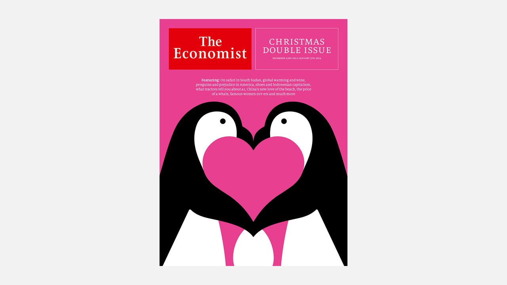image: Noma Bar
Fortunately, the ideas kept flowing from our designers. One drew on that story about Chinese people’s fondness for the beach. The image depicted a snowglobe containing a holidaymaker reclining on a deckchair as the snow swirls outside—a neat inversion of the typical ornament. It was wintry, but had a sense of the unexpected. It nodded to a story without giving too much away. It could work.
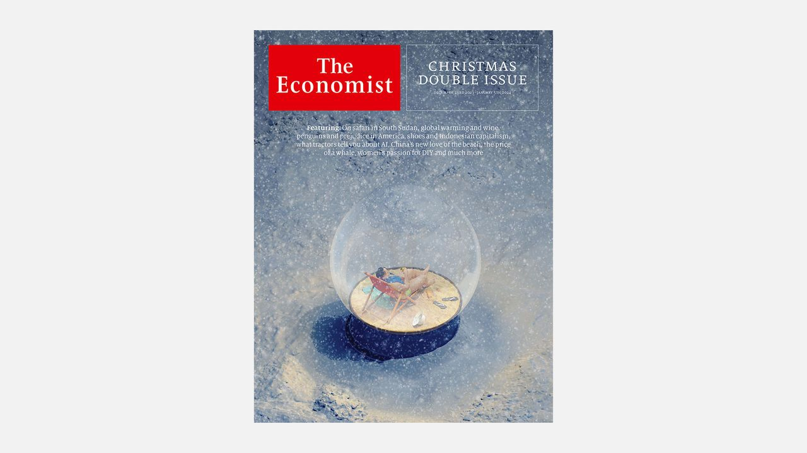image: Max Guther
The final option was completely different. For an article about women finding fame online with their DIY skills Joanne Joo, a Chinese illustrator based in Thailand, produced a set of wonderful illustrations using 3D figures. The cover she designed featured several of the characters our journalists had written about throughout the issue, working together to decorate a log cabin. It had two strengths. First, its visual references to different stories helped convey the extravagance of the issue. Second, its mood of joyful warmth felt appropriate at this time of year.
Joanne’s first version worked well, but the details needed refining. Donald Trump, a horrifying fairy perched atop the Christmas tree, was not sufficiently recognisable. Nor were Churchill or Crusoe. The woman kneeling with a shoe box could have been holding a box of anything. And a wall on the left looked sad and blank in contrast to the colourful jumble of the rest of the picture.
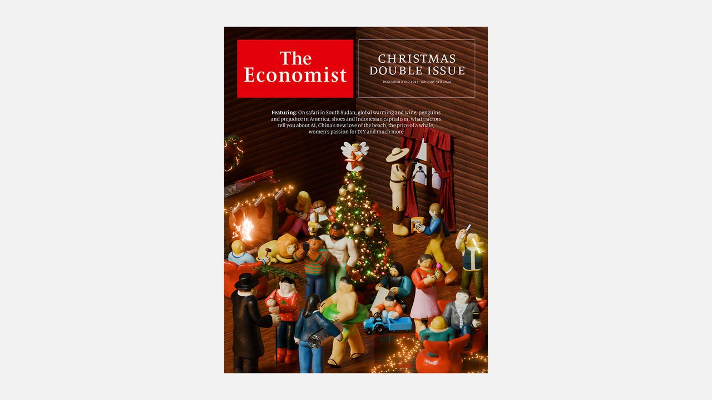image: Joanne Joo
The final iteration was better. Churchill was more Churchillian, Crusoe more Crusovian. St Donald had a quiffier quiff. A wine rack and a stack of logs made that back corner feel less empty. A final round of edits fixed the final niggles: the ostracised penguins at the window were brought in from the cold and the shoes made more apparent. The cosy scene was set. It includes hints to each one of the Christmas stories in the issue—can you spot them all?
Doom-mongers on both the left and the right are wrong
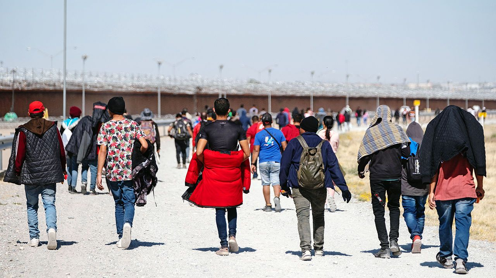
Listen to this story.Enjoy more audio and podcasts on iOS or Android.
Every day, screens around the world fill with grim pictures from Gaza, where nearly 2m Palestinians have been forced out of their homes. Even larger numbers have been displaced in Congo, Sudan, Syria and Ukraine. Most people feel compassion when they see fellow humans fleeing from bombs, bullets or machetes. But many also experience another emotion: fear.
Seen through a screen, the world can seem violent and scary even to residents of safe, rich places. Many worry that ever-swelling numbers of refugees and other migrants will surge across their borders. Nativist politicians talk of an “invasion”.
Fear has curdled rich-world politics. A man who once advocated banning the Koran could be the next Dutch prime minister. Britain’s Conservative Party is trampling on constitutional norms to try to send asylum-seekers on a one-way trip to Rwanda. Donald Trump tells hollering crowds that unlawful immigrants are “poisoning the blood of our country”.
Some perspective is in order. The vast majority of people who migrate do so voluntarily and without drama. For all the talk of record numbers and unprecedented crisis, the share of the world’s people who live outside their country of birth is just 3.6%; it has barely changed since 1960, when it was 3.1%. The numbers forcibly displaced fluctuate wildly, depending on how many wars are raging, but show no clear long-term upward trend. The total has risen alarmingly in the past decade or so, from 0.6% in 2012 to 1.4% in 2022. But this is only a sixth of what it was in the aftermath of the second world war.
The notion that refugees pose a serious threat to rich countries is also far-fetched. Most fugitives from danger do not go far. Of the 110m people whom the UN classified as forcibly displaced as of mid-2023, more than half remained in their own countries. Barely 10% had made it to the rich world—slightly more than the population of London. This is not a trivial number, but it is plainly manageable if governments co-operate. Overall, poorer countries host nine times more displaced people with skimpier resources and less hysteria.
The populist right drums up fears of overwhelming numbers in order to win votes. Some on the left inflame the issue in different ways. Lavishing benefits on asylum-seekers while making it hard for them to work guarantees that they will be a burden, which is why Sweden’s anti-immigrant party now has a slice of power. Calling for the abolition of border controls, as some American radicals do, terrifies the median voter. Insisting that everyone should be defined by race and given a pecking order with the majority group ranked last, and then demanding that America admit millions more members of minority groups, is a recipe for ensuring Mr Trump’s re-election.
A wiser approach to migration would bear in mind two things. First, moving tends to make people much better off than they would have been, had they stayed put. Those who flee from danger find safety. Those who seek a new start find opportunity. Migrants from poor countries to rich ones vastly raise their own wages and have little or no effect on those of the native-born. Mobility also allows families to spread risks. Many pool cash to send a relative to a city or a richer country, so they have at least one income that doesn’t depend on the local weather.
Second, recipient countries can benefit from immigration, especially if they manage it well. The most desirable destinations can attract the world’s most talented and enterprising people. Immigrants in America are nearly twice as likely to start a company as the native-born and four times likelier to win a Nobel science prize. Less-skilled migrants fill gaps in ageing labour forces and free up locals for more productive tasks (for example, when a foreign nanny enables two parents to work full-time).
A more mobile planet would be richer: by one estimate, completely free movement would double global GDP. These colossal gains remain unrealised because they would accrue mostly to the migrants, who cannot vote in the countries they want to move to. Still, rather than leaving all these trillions of dollars on the floor, wise governments should find ways to share some of them. That means persuading voters that migration can be orderly and legal, and proving that immigrants not only pay their way but enhance the collective good.
So border security should be tight, while the slow process of denying or granting entry is streamlined. A realistic number of workers should be admitted—and selected primarily by market forces, such as visa auctions. Immigrants should be free to work—and pay taxes—but not to draw the same welfare benefits as citizens, at least for a while. Some day, the creaking global asylum system should be modernised and the task of offering sanctuary should be shared more fairly. A provisional EU deal announced on December 20th is a small step in the right direction.
Pessimists on the right argue that more migration will breed disorder, since people from alien cultures will not assimilate. Yet studies find no solid evidence that diverse countries are less stable—contrast homogeneous Somalia with many-hued Australia.
Pessimists on the left say the West will never let in many people or treat newcomers fairly because it is incorrigibly racist. Yet though racism persists, it has dwindled more than many people realise. When Barack Obama was born, mixed-race marriages were illegal in much of America, and many Brits still thought they had a right and a duty to rule other nations. Now a fifth of new American marriages are mixed, and Brits find it unremarkable that a descendant of colonial subjects is their prime minister. British Indians, Chinese-Canadians and Nigerian-Americans all earn more than their white compatriots, suggesting racism is not the main determinant of their life chances.
Westward leading, still proceeding
In the future, climate change may spur people to move more. But this will be gradual, and two forces may have the opposite effect. The shift from farms to cities—a much bigger mass movement than cross-border migration—will slow, as most of the world is already urban. And humanity will grow less mobile as it ages. Today, rich countries have a wonderful opportunity to import youth, brains and dynamism. It may not last for ever. ■
Houthi attacks on Red Sea shipping threaten global trade
Listen to this story.Enjoy more audio and podcasts on iOS or Android.
For the world to prosper, ships must reach their ports. They are most vulnerable when passing through narrow passages, such as the Strait of Malacca or the Panama Canal. So a recent surge of attacks on vessels in the Red Sea, the only southern conduit into the Suez Canal, poses a grave threat to global trade. The Houthis, militants in Yemen backed by Iran, have fired over 100 drones and missiles at ships linked to more than 35 countries, ostensibly in support of the Palestinians. Their campaign is an affront to the principle of freedom of navigation, which is already at risk from the Black Sea to the South China Sea. America and its allies must deal firmly with it—without escalating the conflict in the Middle East.
A hefty 20% of global container volumes, 10% of seaborne trade and 8-10% of seaborne gas and oil pass through the Red Sea and Suez route. After weeks of mayhem four of the world’s five largest container-shipping firms have suspended voyages through it; bp has paused oil shipments. The effect on energy prices has been muted, owing to ample supply. But the share prices of container firms have soared, as investors anticipate a capacity squeeze. The cost to ship a container between Asia and Europe has spiked. If unresolved, the crisis will cause a supply-chain crunch.
The Houthis’ drone-and-missile stockpile, supplied by Iran, is the envy of many armies. They are one of the proxy forces Iran uses to attack Israeli, Gulf Arab and Western interests. In 2022 they launched multiple attacks on the facilities of Saudi Aramco, which is responsible for over 10% of global oil output. It is unprecedented for a militia in a failed state, whose motto promises “Death to America, Death to Israel”, to have ballistic missiles capable of flying 2,000km and hitting tankers.
American, British and French warships have spent weeks shooting drones and missiles out of the sky: on December 16th they took down 15. Yet this defensive approach is hard to sustain. Surface-to-air missiles costing millions of dollars are being used against a blizzard of cheap Iranian drones. Only a handful need to get through and ships and their insurers will stay away.
That points to a three-step approach. First, a bigger international naval presence in the Middle East. On December 18th America announced a new task force to patrol the area. Ten mostly Western countries have signed up publicly; nine others, including Egypt and Saudi Arabia, are thought to be helping more discreetly. Others, including India, which depends on Suez and has ships in the area, should come aboard.
At least five American destroyers are now in the Red Sea. The , an aircraft-carrier, is poised off Djibouti, its four squadrons of strike aircraft within range of Houthi territory. Its destroyer escorts have some 600 missile-launch tubes between them. For now the task force will play defence. One option is to provide armed escorts for merchant ships, as America did in the Gulf in the 1980s during the so-called tanker wars. But over time this requires too many warships. The task force is more likely to establish a safe corridor, with an air-defence bubble against drones and missiles.
That points to the second step: diplomacy. Saudi Arabia is on the cusp of a deal to extend a ceasefire with the Houthis which could end a war that has devastated Yemen for nine years. It could include commitments to end naval attacks. That might suit America, which is keen to dampen down regional tensions. Its navy is stretched and its carriers are sorely needed in Asia.
Yet diplomacy may fail and the Houthis may not respect any deal: they will surely find it tempting to hold global trade to ransom again. That is why, third, America and its allies must retain the option of strikes on the Houthis. Though malign and reckless, Iran surely does not want an all-out regional war and may be persuaded to rein in its client. But it should understand that if it fails to do so, retaliation against the Houthis is inevitable. ■
Listen to this story.Enjoy more audio and podcasts on iOS or Android.
Spare a thought for economists. Last Christmas they were an unusually pessimistic lot: the growth they expected in America over the next calendar year was the fourth-lowest in 55 years of fourth-quarter surveys. Many expected recession; added to the prognostications of doom and gloom. This year economists must swap figgy pudding for humble pie, because America has probably grown by an above-trend 3%—about the same as in boomy 2005. Adding to the impression of befuddlement, most analysts were caught out on December 13th by a doveish turn by the Federal Reserve, which sent them scrambling to rewrite their outlooks for the new year.
It is not just forecasters who have had a bad year. Economists who deal in sober empirical work have also had their conclusions challenged. Consider research on inequality.Perhaps the most famous economic studies of the past 20 years have been those by Thomas Piketty and his co-authors, who have found a rising gap between rich and poor. But in November a paper finding that after taxes and transfers American incomes are barely less equal than in the 1960s was accepted for publication by one of the discipline’s top journals. Now Mr Piketty’s faction is on the defensive, accusing its critics of “inequality denial”.
Economists have long agreed that America would be richer if it allowed more homes to be built around popular cities. There is lots of evidence to that effect. But the best-known estimate of the costs of restricting construction has been called into question. Chang-Tai Hsieh of the University of Chicago and Enrico Moretti of the University of California, Berkeley, found that easing building rules in New York, San Francisco and San Jose would have boosted American GDP in 2009 by 3.7%. Now Brian Greaney of the University of Washington claims that after correcting for mistakes the true estimated effect is just 0.02%. If builders disagreed as wildly about roof measurements, the house would collapse.
Think social mobility in America is lower than it was in the freewheeling 19th century, when young men could go West? Think again, according to research by Zachary Ward of Baylor University. He has updated estimates of intergenerational mobility between 1850 and 1940 to account for the fact that past studies tended to look only at white people, as well as correcting other measurement errors. It now looks as if there is more equality of opportunity today than in the past (albeit only because the past was worse than was thought).
A rise in suicides, overdoses and liver disease has reduced life expectancy for white Americans. Angus Deaton and Anne Case of Princeton University popularised the idea that these are “deaths of despair”, rooted in grimmer life prospects for those without college degrees. But economists have been losing faith in the idea that overdoses, which are probably the biggest killer of Americans aged 18-49, have much to do with changes in the labour market. New research has instead blamed the carnage on simple proximity to smuggled fentanyl, a powerful opioid.
Other findings are also looking shaky. The long decline in the prestige of the once-faddish field of behavioural economics,which studies irrationality, continued in 2023. In June Harvard Business School said it believed, after an investigation, that some of the results in four papers co-written by Francesca Gino, a behavioural scientist and PhD economist, were “invalid”, owing to “alterations of the data”. (Ms Gino, who has written a book about why it pays to break rules, is suing for defamation the university and the bloggers who exposed the alleged fiddling.)
What lessons should be drawn from economists’ tumultuous year? One is that for all their intellectual discipline they are still human. Replicating existing studies and checking them for errors is crucial work.
Another lesson is that disdain for economic theory in favour of the supposed realism of empirical studies may have gone too far. After the global financial crisis of 2007-09, commentators heaped opprobrium on theorists’ common assumption that people make rational predictions about the world; gibes about an unrealistic, utility-maximising helped raise the status of behavioural economics. Yet rational-expectations models allow for the possibility that inflation can fall rapidly without a recession—exactly the scenario that caught out forecasters in 2023.
A last lesson is that economists should cheer up. The research that has been called into question this year inspired much pessimism about the state of modern capitalism. But a dodged recession, flatter inequality trends and less despair would all be good news. Perhaps the dismal science should be a little less so. ■
It is possible to enact painful economic reforms and still get re-elected
Listen to this story.Enjoy more audio and podcasts on iOS or Android.
Historians will not look back on 2023 as a happy year for humanity. Wars blazed, autocratic regimes swaggered and in many countries strongmen flouted laws and curbed liberty. This is the grim backdrop to our annual “country of the year” award. If our prize was for the resilience of ordinary people in the face of horror, there would be an abundance of candidates, from the Palestinians and Israelis in their bitter conflict to the Sudanese fleeing as their country implodes.
Yet since we started naming countries of the year in 2013, we have sought to recognise something different: the place that has improved the most. The search for a bright spot in a bleak world led some of our staff to despair and propose Barbie Land, the fictional pink utopia of a Hollywood blockbuster. But in real life, there are two sets of countries that deserve recognition in 2023.
The first includes places that have stood up to bullying by autocratic neighbours. One cannot say that life in Ukraine improved, but the country valiantly continued its struggle against Vladimir Putin’s war machine, despite wobbling by its Western supporters. Moldova resisted Russian intimidation. Finland joined the nato alliance and Sweden will follow soon. In Asia a number of countries held their nerve in the face of Chinese aggression, often in collaboration with America. The Philippines defended its maritime boundaries, and the law of the sea, against much bigger Chinese ships. In August Japan and South Korea put aside their historical grievances to deepen their co-operation. The island state of Tuvalu,with a population of 11,000, has just signed a treaty with Australia that insures its population against climate change and includes a security guarantee to prevent it from falling under China’s thumb.
Our second group of countries defended democracy or liberal values at home. Fragile, war-scarred Liberia managed a peaceful transfer of power.So did Timor-Leste, which maintained its reputation for respecting human rights and a free press. In some mid-sized countries, such as Thailand and Turkey, hope flickered as the opposition pushed hard to eject autocratic regimes, but those regimes held on at elections skewed in their favour.
Three countries stand out for turning back to moderation after a walk on the wild side. Brazil swore in a centre-left president, Luiz Inácio Lula da Silva, after four years of mendacious populism under Jair Bolsonaro, who spread divisive conspiracy theories, coddled trigger-happy cops, supported rainforest-torching farmers, refused to accept electoral defeat and encouraged his devotees to attempt an insurrection. The new administration quickly restored normality—and reduced the pace of deforestation in the Amazon by nearly 50%. Brazil’s impressive record was marred, however, by Lula’s habit of cosying up to Mr Putin and Venezuela’s despot, Nicolás Maduro. As a result, Brazil misses out on the award.
Poland had a remarkable 2023: its economy withstood the shock of the war next door; it continued to host nearly 1m Ukrainian refugees; and to deter Russia it raised its defence spending to above 3% of gdp, giving its stingy nato peers an example to emulate. The country’s biggest problem has been the dominance of the populist-nationalist Law and Justice (pis) party, which has run the government for the past eight years, eroding the independence of the courts, stuffing state media with lackeys and nurturing crony capitalism. In October voters dumped PiS in favour of an array of opposition parties. It is early days for a new coalition government, led by Donald Tusk, a veteran centrist, but if it does a good job of mending the damage PiS did to democratic institutions, Poland will be a strong candidate for our prize next year.
That leaves our winner, Greece. Ten years ago it was crippled by a debt crisis and ridiculed on Wall Street. Incomes had plunged, the social contract was fraying and extremist parties of the left and right were rampant. The government grew so desperate that it cuddled up to China and later sold its main port, Piraeus, to a Chinese firm. Today Greece is far from perfect. A rail crash in February exposed corruption and shoddy infrastructure; a wire-tapping scandal and the mistreatment of migrants suggested civil liberties can be improved.
But after years of painful restructuring, Greece topped our annual ranking of rich-world economies in 2023. Its centre-right government was re-elected in June. Its foreign policy is pro-America, pro-EU and wary of Russia. Greece shows that from the verge of collapse it is possible to enact tough, sensible economic reforms, rebuild the social contract, exhibit restrained patriotism—and still win elections. With half the world due to vote in 2024, democrats everywhere should pay heed. ■
Technology is helping Santa Claus come to town more efficiently
A letter to shareholders of Father Christmas Global Inc
Listen to this story.Enjoy more audio and podcasts on iOS or Android.
DEAR SHAREHOLDERS of Father Christmas (FC) Global Inc, ’tis the season for management to update you on the state of the business. Growth in demand continues to be ho-ho-hum. That other implausible global delivery maestro, the stork, has been slacking, so our global customer base has expanded by just 130m infants this year, down from 144m in 2012, bringing the total addressable market to just over 2bn under-15-year-olds. We thus made 2023 the “year of efficiency”, like Meta but jollier.
In particular, we invested heavily in our technological capabilities, to streamline operations, avoid supply-chain bottlenecks and contain costs. Start with logistics. We are ramping up use of sidewalk robots, drones and hypersonic jets. This provides a convenient way to put Donner, Blitzen and the rest of the herd out to pasture, while burnishing our ESG credentials by dispelling complaints about animal cruelty.
Satellite production sites near big population centres are being equipped with additive-manufacturing tools, popularly known as 3D printers. Like Alstom, a French maker of trains, which boasts of having printed 150,000 spare parts at its depots around the world, we are making our toy locomotives locally. This helps us avoid supply disruptions, such as those causing some competitors problems in the Red Sea. It will also help us avoid overstocking stocking-fillers. Our green footprint is benefiting from advances in the circular economy. Toys that end up broken by Twelfth Night—which in some years is most of them—are increasingly being recycled into raw materials for the 3D printers.
Our new Santa App for iOS and Android offers computer-aided design software for fully customisable gifts. This took inspiration from the system launched in May by Nike for its trainers, and lets us make individualised items at little or no added cost. Forget scientist Barbie: we can do “irritating nine-year-old Jane Smith from Brighton” Barbie. Parents will love it.
Technology is curbing other costs, starting with labour—a blessing in a time of worker shortages. Because 3D printers work autonomously, productivity per remaining pixie has surged. Shortages among service elves are being allayed with the help of ClausGPT, our proprietary chatbot. It can parse incoming correspondence and field complaints. Not loving little Jimmy’s new drum kit? We hope ClausGPT suggests earplugs, not violence.
Virtual AI avatars of Father Christmas reduce the strain on our chief executive. Ozempic, the hot obesity drug of 2023, reduces the strain on his health-insurance bill. It also lowers our key-man risk, which independent analysts now put below that for Elon Musk or Sam Altman.
To limit production costs, we have adopted the open-source RISC-V architecture for microchips, which these days feature in most of our products (and everybody else’s). This lets us avoid paying licence fees for semiconductors; Nvidia and its shareholders don’t need any more presents this year. With the promised phase-out of coal, just agreed at the un’s climate summit, the lumps for the badly behaved should become cheaper, too. Superbrats may even get two lumps.
In the spirit of Christmas disclosure, we wish to highlight a number of risks to our business. Some of our new technologies are dual-use, so government export controls threaten deployment. The spread of solar panels, already covering 4m residential roofs in our biggest market, America, is making landings treacherous. Efforts to insulate homes and substitute heat pumps for fireplaces are leading to access problems.
Snow laughing matter
And we cannot count on Amazon and Alibaba, our chief rivals, to remain on regulators’ naughty lists for ever. But we firmly believe that these risks are under control. In the worst-case scenario, we can always fall back on miracles. ■
Letters | On investment in Europe, Napoleon, funeral cars, spy novels, euphemisms, flying lawn chairs
Letters to the editor
A selection of correspondence
Listen to this story.Enjoy more audio and podcasts on iOS or Android.
Your article on the state of the startup community in Europe (“Partying like it’s 2023”, December 9th) provided a welcome reminder of the promise of Europe’s tech entrepreneurs and Europe’s future competitiveness. As a businessperson, I wholeheartedly agree with your conclusion: the best thing the European Union can do to support the startup and scaleup community is to move away from digital-specific regulation and focus more on creating a truly single market. The single market is our best tool to strengthen European competitiveness, especially in a world of severe competition from America and China.
By the European Commission’s own estimate, completing the single market would deliver a budget-neutral boost in growth of over €700bn ($767bn) between now and 2030. Hopefully, the forthcoming proposal from Enrico Letta, a former Italian prime minister, to strengthen the single market will receive the political attention and investment it so desperately needs. Aside from easing access to national markets of the EU, consider how a deeper single market would also enable scaleup by facilitating better access to investment funding.
EU capital markets have shown some growth year on year since 2015. In some countries, they are moving in the right direction, but the harmonised EU push is not there. Not least because of the fragmentation of national capital markets, which hinders integration at an EU level.
A well-functioning European capital market would be transformative, allowing small- and medium-sized business to grow, companies and people to invest, citizens to cater for their financial needs and investments to be carried out where they are needed the most. The potential positive externalities in terms of competitiveness, trade and security are self-evident.
For all these reasons, the EU capital markets union, launched in 2015, needs to materialise. Leaders at both the national and EU level need to move beyond lip service and invest the political capital needed to make it happen.
Jacob Wallenberg Chair Investor AB
image: Peter Schrank
Napoleon by the numbers
Charlemagne stated that Napoleon killed millions and, adjusted for population, “that is perhaps no less murderous than an Adolf Hitler or Joseph Stalin” (November 25th). There are actually huge differences behind the numbers. The French revolutionary and Napoleonic wars resulted in an estimated 3.5m to 4m deaths, including up to 1m civilians, over a period of some 25 years. Not all of those deaths can be attributed to the or to Napoleon personally, since the first round of warfare was initiated by the countries opposed to the French revolution. But certainly a large percentage of that total was the consequence of Napoleon’s actions and policies attempting to secure French dominance of Europe through military conquest following his assumption of power.
The laws that governed the conduct of war were rudimentary by contemporary standards, but those rules that existed were mostly observed by all the major participants in the Napoleonic wars.
The French revolutionary wars were much less destructive than either the second world war or the mass starvation and oppression of the Stalinist regime. Out of a population of approximately 187m people in Europe and Russia in 1800 the estimated 4m deaths in the Napoleonic and revolutionary wars between 1790 and 1815 represent about 2% of the population. In the second world war around 40m to 45m perished in the European theatre of the conflict, including the Soviet Union. That represents approximately 9% of the total population of Europe, including the European part of the Soviet Union, of around 485m people at that time. Stalin’s policies resulted in the deaths of an estimated 20m people, most of whom died between 1930 and 1941. That is 12.5% of the Soviet population.
There is no comparison between Napoleon and the genocidal and mass-atrocity policies of Hitler and Stalin.
Dr T.D. Gill Emeritus professor of military law University of Amsterdam
One often neglected area of Napoleon’s legacy is his sale of the Louisiana Territory to the fledgling United States. Because of that America could expand westward without fighting France. In 1898, Bismarck purportedly said that the most decisive event in modern history was the spread of English in North America, which was helped by Napoleon’s decision to sell off land stretching from Louisiana to Montana.
James Horton
Death and the divas
Art galleries hosting supper clubs (“Sup on that”, November 18th) demonstrates the same rational management of under-utilised assets that was used decades ago by Steve Ross, who later became Time Warner’s boss. In the 1950s he convinced his father-in-law, who owned the largest funeral home in America, to lease his fleet of limousines for night-time use by Manhattan’s high-rollers. The only catch was they had to ensure the cars were returned in time for the next day’s funerals.
Ira Sohn Emeritus professor of economics and finance Montclair State University
image: LMK MEDIA
Some Christmas reading
As a long-time devotee of spy novels I found no fault with your list of eight of the best ( reads, November 24th). Except, perhaps, the fault of omission. Any list of the best spy fiction should include something from the Ashendon stories by W. Somerset Maugham. As with John le Carré and Graham Greene, Maugham knew of what he spoke, having served in the Secret Service and basing the spymaster “R” on Sir John Wallinger, who recruited him.
Also, the Bernard Samson books by Len Deighton have no peer in terms of the consistent development of multiple characters through time periods and events. Both Maugham and Mr Deighton make delightful use of the ambiguities of the profession to weave compelling tales.
Stephen Gash
image: Nick Lowndes
Long-winded opinions
Johnson’s column on euphemism and exaggeration in language (November 25th) reminded me of a quote from C.S. Lewis’s “Studies in Words”: “the greatest cause of verbicide is the fact that most people are obviously far more anxious to express their approval or disapproval of things than to describe them.”
Joshua Tomlinson
Oh what fun it is to ride…
It was great to see “Lawnchair Larry” Walters recognised for his achievement of using weather balloons to take flight in a garden chair (Letters, November 25th). The feat earned him a spoof Darwin Award, which is normally given on behalf of the human race to those who accidentally select out of the gene pool during the spectacular climax of a great idea gone very, very wrong. Luckily Walters did not die, and the award was changed to a special “most at risk survivor”.
A majority of congressmen want more military aid for Ukraine
They are being prevented from voting for it in the name of phoney populism
Listen to this story.Enjoy more audio and podcasts on iOS or Android.
Ukraine this year officially moved its Christmas state holiday from January 7th, in line with the Russian Orthodox Church, to December 25th, when most of the Western world observes it. But there won’t be much to celebrate. A long-awaited and much-needed assistance package from the US Congress will not arrive in time for the new Christmas, and lawmakers appear unlikely to approve legislation in time for the old one either.
Throughout the autumn pro-Ukraine lawmakers on both sides of the aisle, who form a strong majority in the House and Senate, predicted that eventually Congress would authorise more military aid. Important issues with broad, bipartisan support eventually get a vote, the thinking went. Many expected passage at the end of the year, when big spending packages are often cobbled together quickly, allowing their contents to evade scrutiny and legislators to get home for Christmas.
But Mike Johnson, the House speaker, ran for his job with a plan, “to ensure the Senate cannot jam the House with a Christmas omnibus”. So far that has meant punting the main legislative debates until early 2024. Mr Johnson has a point that passing weighty bills with no time for serious debate is suboptimal. But House Republicans, mired in perpetual infighting and unable to govern effectively with a thin majority, squandered their workdays.
Back on October 20th President Joe Biden requested $106bn to fund Ukraine’s defence, assist Israel’s war against Hamas and “counter malign influence” in the Indo-Pacific. The package also included $13.6bn to fund border security, but Republicans wanted policy changes to tackle what has become a real crisis on the southern border. US Customs and Border Protection reported 240,988 migrant encounters at the south-west border in the month that Mr Biden made his request—up from 185,527 a year earlier.
The House adjourned for the holidays on December 14th, but the Senate stayed in Washington and continued negotiations. James Lankford, Chris Murphy and Kyrsten Sinema—Republican, Democrat and independent senators, respectively—have been working with the White House on a compromise. The negotiators insist that talks are advancing. Yet only 61 senators showed up for votes on December 18th, a clear sign that the Senate would not get legislation through before Christmas.
That is cold comfort for Ukrainians who have spent the better part of two years fighting and dying to preserve their independence. The European Union failed to approve a $54bn package for Ukraine the same day that the House left Washington, thanks to the eu’s own functionally pro-Putin blocking minority (otherwise known as Viktor Orban). This has direct consequences on the battlefield. Ukraine, which had been firing nearly 250,000 large-calibre artillery shells per month over the summer, soon will be able to fire at only around a third of that rate. Russia—which has taken defence industrialisation more seriously than the West, while also relying on support from pariah states like Iran and North Korea—will see its advantage grow.
Before lawmakers can tackle Ukraine’s immediate needs, they are trying to resolve a domestic political problem that has vexed American politicians for decades. Chuck Schumer, the Senate majority leader, cited progress on December 19th but admitted that border policy is “among the most difficult things we’ve done in recent memory”. Mitch McConnell, the minority leader, said that “getting this agreement right and producing legislative text is going to require some time.”
The Senate and White House have not published an outline of negotiations or a basic framework for the compromise. But they are reportedly discussing requiring more mandatory detentions; making it harder to claim asylum; generally granting the federal government more authority to expel migrants; and limiting the ability of the president to allow large groups to enter or remain in the US temporarily. The White House knows the crisis has become a political liability, but the proposed policy changes have not sat well with progressive activists and many Hispanic lawmakers.
Some have even alluded to the gravest transgression in the contemporary Democratic Party: doing something Donald Trump would do. Alex Padilla, a senator from California, warned that “Trump-era policies” would only worsen the crisis. It doesn’t help that such changes would be combined with more funding for Israel, which the party’s left flank has criticised more as the war in Gaza drags on and the number of Palestinians killed rises.
Meanwhile, many House Republican hardliners have unrealistic expectations of the kind of policy victory they can achieve with only a narrow majority in one chamber of Congress. Mr Johnson, one of the most conservative members of the House, lost support from his tribe by preventing a government shutdown and then passing a National Defence Authorisation Act that eschewed fights over social issues. The retirement of his predecessor and expulsion of another Republican made his job even harder, by shrinking his majority further.
Mr Johnson has previously said he would accept nothing short of the Secure the Border Act of 2023, a hardline bill that includes poison pills like resuming border-wall construction. But Senate Democrats won’t support a bill that zero House Democrats backed. Even if the Senate somehow did, that’s not a guarantee that Mr Johnson could win over the most unruly elements of his party for a bill that pairs Ukraine funding with immigration policy.
Slow and painful as negotiations have been, the Senate seems determined to pass a bill. The House returns on January 9th, and most of its members would probably accept a bill that could draw bipartisan support in the upper chamber. The question is, as it has been for months, whether Mr Johnson would allow a vote that expresses the will of the majority of the House, even if that majority doesn’t include more than half of his caucus.
More than 10,000 Americans have served in Congress. Relatively few are remembered in history. Mr Johnson, an accidental speaker, may become one who is. He consistently voted against aiding Ukraine before taking his current role, but he changed his tune after assuming the speakership and has spoken eloquently about the need to stop Mr Putin’s imperialist designs. Will Mr Johnson be remembered as the speaker who defied the will of most Americans and abandoned Ukraine—and also let a border crisis fester—to satisfy the demands of the most radical members of his party? Or will his legacy be as a lawmaker who rose to the occasion, whatever the short-term political cost? He has a long Christmas vacation to decide.■
Newark may have found a fix for chronic homelessness
Working with police, and converting shipping containers into housing, seem to help
Listen to this story.Enjoy more audio and podcasts on iOS or Android.
ON A SINGLE night every January, volunteers all over America search parks, woodlands, subway tunnels and pavements to count those without shelter. It is part of the annual count mandated by the federal Department of Housing and Urban Development. The point-in-time count results were released, at last, on December 15th. Roughly 650,000 people were homeless, a 12% increase over the year before. The count is the highest since reporting began in 2007. The snapshot is useful for spotting trends and attracting federal funding. Most experts agree it is an undercount and often out of date.
After seeing their own figures for homelessness increase by 20% between 2022 and early 2023, New Jersey officials were shocked into action. Officials tweaked existing programmes and spent more on rental assistance for those at risk of becoming homeless. More services for people living rough has led to a rise in sheltered homelessness. The state also gathers near-real-time data, rather than taking an annual snapshot. In November New Jersey’s Office of Homelessness Prevention released its own figures. They showed unsheltered homeless falling across the state by 23% year on year.
Newark, New Jersey’s largest city and home to the state’s largest homeless population, recorded the biggest decrease. A year ago Ras Baraka, the mayor, unveiled a plan bringing together state, local and private-sector financial support to reduce street homelessness, improve the shelter system and expand housing and prevention services. Mobile crisis teams, behavioural-health providers, community leaders and the police formed a coalition. It seems to be working. Newark has achieved a 58% reduction in unsheltered homeless since the start of the year.
Luis Ulerio, the director of Newark’s Office of Homeless Services, says “there’s just been a lot of hard work behind that number.” The mayor converted a local primary school into a 166-bed facility. He built transitional housing out of shipping containers, a common sight in the nearby port. A second cluster of containers with supportive services, called Hope Village II, will open soon. The containers have been altered to look like little cottages. One woman who had been living in a nearby petrol station for over a year has been persuaded to move in. A third cluster is in the works. Mr Baraka wants to create a pipeline from shelters to transitional housing to giving section-eight vouchers (a federal housing programme) to getting chronically homeless people into permanent housing.
Legal teams offer free counselling and court representation to people who risk being illegally evicted. The city also provides money for back-rent. Beth Shinn of Vanderbilt University points out that there are “lots of points of intervention”, on the theory that it is cheaper to give $200 to help make rent than to pay thousands later. The city also relies on data, updated daily by those working with Newark’s homeless. “What we’re doing is essentially moneyballing homelessness,” says Michael Callahan, head of the state’s Office of Homelessness Prevention. Near-real-time data is crucial, he says, in order to pivot interventions in state policy and on the front line—even helping assign which outreach team will work a certain night shift. ■
Youngsters are trying to resurrect a culture beaten out of their grandparents
Listen to this story.Enjoy more audio and podcasts on iOS or Android.
Jourdan Thibodeaux has had a job every day since his tenth birthday. These days the dreadlocked millennial flips houses, manufactures pork sausages and raises two little girls. But the project of his lifetime is resuscitating his family’s heritage with his voice and his fiddle.
Born of African, French, Native American and Spanish descent in south-western Louisiana, he speaks with an accent your correspondent had never heard. Loss is the subject of his ballads. Young people of the bayous have forgotten their families, he laments in French, and understand only their conqueror’s language. Kneeling in a church pew he confesses that he fears it will all die with him: “Tu vis ta culture ou tu tues ta culture, il n’y a pas de milieu,” he sings, “You live your culture or you kill your culture, there is no in-between.”
The story of that culture dates back to before America’s founding. One year after the French settled New Orleans in 1718 the first slave ships docked on Louisiana’s shore. Feeding a hungry economy took many hands and after two decades there were four slaves for every free person in the colony. Sugarcane, the region’s cash crop, was particularly labour-intensive, which made communication between the Europeans and Africans critical.
Masters learned words from West African languages and slaves picked up on some French. Together they crafted a new hybrid language known as Kouri-Vini, or Louisiana Creole. By the time America purchased Louisiana in 1803 Kouri-Vini had become the language of the swamp, spoken alongside French. Slaves became fluent, working-class whites learned it on plantations and black nannies taught it to children of the wealthy.
Just as the language fused, so too did the people. Because the French—and Spanish, who briefly ruled the colony—were Catholic, they believed their slaves had souls and ought to be baptised (a view generally not shared by Protestant masters). The church’s endorsement gave permission for more social integration than in other parts of the South. Masters chased black and native women and passed down land to mixed children. Surnames, like LeBlanc and Broussard, ceased to denote race. Songs melded African syncopation with French melodies. The brutalities of slavery persisted, but Louisianans of all colours came to call themselves Creoles.
Pas possible
During Reconstruction Southern Democrats, opposed to their northern conquerors, replaced Creoles in the legislature and imposed a binary view of race that felt as exotic to south-western Louisianans as the English they spoke. Jim Crow enforced a social order in black and white. Light-skinned Creoles grew uncomfortable with the ambiguity they had always known; some moved away to start over as white.
In 1921 Louisiana’s government decreed that English alone be taught in schools. Pupils who spoke Kouri-Vini or French were made to kneel on rice and beaten. Both languages were deemed “foreign”, though one was as native as could be. Humiliated children taught their younger siblings English to spare them from punishment. Though there are no official counts, historians reckon the number of Kouri-Vini speakers has probably dropped from about 1m in the 1910s to roughly 5,000 today.
Then, in the 1960s ethnic pride became voguish. Alongside the red- and black-power movements that grew out of civil rights, Louisianans started their own. They called themselves Cajun, not Creole, and it was just for whites who descended from the Acadians, exiles who came to Louisiana from Canada with their own kind of French in the late 18th century. Cajun culture drew tourists who came to taste gumbo and jambalaya and tour the alligator-infested rivers. In 1968 the state launched the Council for the Development of French in Louisiana (CODOFIL) to revive spoken French. By the turn of the century the group was importing young Europeans to teach in new French-immersion schools. But the language still carried a stigma. And though kitschy tourism of their shared culture boomed, black people had no place in it. “Creole was the red-headed stepchild,” says Christophe Landry, a historian.
Today a coalition of young people of all shades is bringing back what it means to be from the Louisiana that preceded America, in all its messiness. Mr Thibodeaux, who hunts alligators, is deeply devout and whose French Instagram has nearly 100,000 followers, wants to incentivise local bars to serve patrons in the old languages. Taalib Pierre-Auguste, a 20-year-old from Ascension Parish, lobbies lawmakers to back French and Creole projects. The first indigenous French-immersion school opened this fall. “We are beginning a solemn and unshakable march to finally realise a dream,” the revivalists wrote in September. Older folk still warn youngsters not to speak “ghetto” languages in public.
Mr Pierre-Auguste has watched his childhood friends leave Louisiana for better opportunities and worries that the state’s new Republican governor will accelerate the exodus. Rising seas and storms also threaten life on the prairies. On a cool evening he sits on the steps beneath the state capitol, the tallest in the country. “Leaving Louisiana is like leaving me,” he says when asked if he would consider it. He hopes to run for office and create something for his generation to return to. Without them the culture cannot last. When the elderly who know it best die, there will be nothing authentic left to sell. ■
Why Donald Trump is gaining ground with young voters
Joe Biden is struggling both on substance and on style
Listen to this story.Enjoy more audio and podcasts on iOS or Android.
As tastemakers, the two previous American presidents could not present a sharper contrast. Barack Obama, with his elegance and irony, still issues year-end lists of the best music, movies and books, each a triumph of accessible urbanity that blends in just enough Lizzo and “Top Gun: Maverick” to help the Abdulrazak Gurnah go down. To Mr Obama’s mix-mastery Donald Trump counterposed a signature style of ostentatious kitsch. His braggadocio, his combativeness, his gilded lairs, his manner of associating with women: all these led a writer, Jelani Cobb, to note as far back as 2015, “in all the ways that matter, save actual performing, Donald Trump is not a politician—he’s a rapper.”
And yet, as president, Joe Biden has found a way to stand apart from both the DJ and the rapper, and from all other presidents of the modern era: he is leaving almost no cultural imprint whatsoever. John Kennedy may have altered the course of men’s fashion by not wearing a hat during his inauguration, but Mr Biden failed to spark a revival of The Staple Singers by including their music on his inauguration playlist. Aviator glasses and ice cream cones, maybe a ride in Delaware on a bicycle, are the pop signifiers, to date, of the Biden presidency.
It would, of course, be patronising to suggest that Mr Biden’s lack of engagement with the broader culture, rather than his handling of weighty affairs such as the war in Gaza, is behind his struggle to connect with young Americans. But it cannot be helping. What is clear is that he has a problem, one that encapsulates his overall challenge headed into his re-election campaign. Young voters, who were key to his win in 2020, are just not into him.
No Republican candidate for president has won most voters under the age of 30 since 1988. But a poll by the and Siena College published on December 19th found Donald Trump leading Mr Biden by 49% to 43% among voters aged 18 to 29. That is a swing in this poll to Mr Trump of ten points since July. According to the Pew Research Centre, in 2020 Mr Biden won that age group by 24 points, 59% to 35%.
The polling has been so dismal for Mr Biden, and also so erratic, and confidence in polling has been so shaken in recent years, that a debate has broken out among political obsessives over whether to trust the numbers. Within national polls, subgroups such as young voters comprise smaller samples and so yield larger margins of error. To control for this, a group called Split Ticket in early December aggregated subgroups across numerous national polls. The results showed Mr Biden leading Mr Trump by a diminished but still substantial margin of 16 points among voters under 30, yet by only three points when young voters were defined as those under 34. That is a sign both that there is static in the numbers, and that the danger to Mr Biden’s re-election is real.
Republicans sense an opportunity. Joe Mitchell, a former Iowa state representative who runs a group called Run GenZ that recruits young conservative candidates, says what he hears most is that “we had more money in our pockets when Donald Trump was president”. But he argues that Mr Trump’s cultural heft is an advantage as it has not been since 2016. Mr Biden, he says, has passed more progressive legislation than Mr Obama but is less admired by progressives because he lacks Mr Obama’s cachet. By contrast, the indictments of Mr Trump have restored his celebrity gleam. “People were displaying his mugshot in a positive way,” says Mr Mitchell, who is 26. “He’s up with the Tupacs of the world.”
The Republican National Committee has created a “youth advisory council”, and it staged its first primary debate in concert with a group for young conservatives. But Republicans have problems of their own. When a college student at that debate asked how the candidates would calm “fears that the Republican Party doesn’t care about climate change”, most of them ducked for cover. And in mid-December, five of the 16 members of the youth advisory committee quit, citing a problem evocative of the Trump years: a lack of organisation, goals and vision.
The latest iteration of the Harvard Youth Poll found that Americans under 30 did not much trust either probable nominee. But they trusted Mr Trump more on the economy, national security, the Israel-Hamas war, crime, immigration and strengthening the working class. They trusted Mr Biden more on such issues as climate change, abortion, gun violence and protecting democracy.
In that poll, Mr Biden led by 11 points among all young Americans, but he appears to owe most of that support to Mr Trump. Most of those who favoured Mr Biden—69%—said they did so more out of opposition to Mr Trump; by contrast, 65% of those favouring Mr Trump said they felt loyal to him. That underscores the risk to Mr Biden of a third-party candidate siphoning the anti-Trump vote. The Harvard poll showed Mr Biden’s lead diminishing substantially when people were also asked about such candidates.
Always being boring, never being bored
Mr Biden’s age and lack of cultural effect were advantages in 2020. After the chaos of the Trump years, he was a calming, grandfatherly presence who would never pop up, beet-red and shouting, between images of Taylor Swift and bubble tea in anyone’s social-media feed. “America Votes to Make Politics Boring Again,” the publication declared after that election. On this implicit promise, Mr Biden has not delivered. And the very fact that many of the developments on his watch, such as the wars in Ukraine and Gaza, are beyond his control only reinforces the problem.
This is Mr Biden’s real style problem: he does not appear to be in control. Rather than cocooning the president, his aides need to find more ways to present him as a commanding presence. Failing that, they could make more use of the cabinet secretaries and portray Mr Biden as the wise leader of a high-functioning team. Mr Biden has a good case to make, and he needs to make it both on substance and in style. ■
Read more from Lexington, our columnist on American politics:
For a second time Chileans reject a new constitution. Now what?
After four years of discussions over a new basic law, patience is wearing thin
Listen to this story.Enjoy more audio and podcasts on iOS or Android.
For the past four years Chileans have engaged in a rare democratic experiment. They have twice been asked to vote on a new constitution, and twice they have rejected the product on offer. The discussion kicked off in 2019, when violent protests over inequality rocked the country. Politicians offered citizens the chance to elect an assembly to write a new social contract. But the assembly was dominated by the hard left and alienated most voters. In a referendum in 2022 nearly two-thirds of Chileans voted against the charter. Then the politicians offered citizens the chance to elect an assembly to have another go. This time it ended up being dominated by the right. On December 17th, 56% of voters rejected its proposed text.
The constitutional rewrite was marked by a widespread lack of interest and rising dissatisfaction with politics. According to Roberto Izikson of Cadem, a pollster, most Chileans considered the process this year a “waste of time”. Since 2019 Chileans’ priorities have shifted from pensions, health care and education to crime, economic problems and immigration. Meanwhile, the unpopular left-wing administration of Gabriel Boric has been unable to pass serious reforms while waiting for the outcome of the two constitutional processes. Many Chileans are losing patience. Only 52% of those polled say that democracy is the best form of government, compared with 64% in August 2021.
On the face of it, the rejection of the draft is a victory for Mr Boric, whose allies did not support the text. A third constitutional process is out of the question for now, allowing the administration to get on with governing. Yet if it is a victory for Mr Boric, it is a bitter one. The president and many of his millennial allies made a name for themselves in part by criticising the current constitution, which was first approved in 1980 during the military dictatorship of Augusto Pinochet, but which has been heavily amended since. Now they must live with it.
The first convention was dominated by scandals. Many of the assembly’s 155 members were left-wing independents without party discipline. Their proposed charter was prolix and filled with bizarre clauses, including rights to “digital disconnection” and food that is “culturally appropriate”.
When that draft was rejected, politicians tried to avoid another fiasco. Though they gave the go-ahead for another assembly, they put guardrails around it. They agreed to 12 principles that had to be maintained in any new charter, including the independence of the central bank. They convened a commission of 24 legal experts from across the political spectrum to write a first draft. A convention of 50 members would then be elected to edit it.
The experts’ commission got to work in March and was a model of consensus-building. The draft proposal retained the current constitution’s strong protections of private property while fulfilling long-standing demands of the left, such as one for a chapter on the environment. Verónica Undurraga, the body’s president, says it was defined by “political realism”.
Such moderation did not survive the election of the assembly. Twenty-three seats on the body went to the hard-right Republican Party, led by José Antonio Kast. Another 11 were won by Chile’s traditional right. “In the last convention the majority abused its power and drafted a text beyond the pale for most Chileans,” says Loreto Cox of the Pontifical Catholic University of Chile. “This time the Republicans took a text that had consensus and turned it into something much more divisive.”
Rather than merely edit the draft, the assembly rewrote it. According to Unholster, a data company in Santiago, the capital, only 23% of the wording from the experts’ draft was maintained. Some ideas appear to have been imported from the global culture wars.
The draft included a right to conscientious objection, more limited versions of which have been cited by religious business owners in the United States in order to decline service to LGBT customers. When made the highest law, it “basically gives you the right to exempt yourself from compliance with the law on the basis of your beliefs,” says Domingo Lovera, who sat on the experts’ commission. The draft constitution also entrenched Chile’s restrictive laws on abortion (it is already only permitted in cases of rape, threat to the mother’s life or fetal non-viability).
The assembly’s draft included numerous populist giveaways. It all but abolished a property tax that most Chilean municipalities depend on for their revenues, as well as including an article that would have allowed Chileans to deduct any “expenditures necessary for life, the care or development of the person and their family” from “corresponding taxes”. This could undermine the collection of income taxes, which are paid only by the richest quarter of Chileans and amount to 1.6% of GDP.
LarrainVial, a Chilean bank, compared the move to Liz Truss’s attempt in September 2022 to drastically cut taxes in Britain, when she was briefly prime minister. Instead of boosting growth, the bank warned that such unfunded tax cuts could signal the start of a fiscal spiral “reminiscent of Argentina or Greece”.
The Republican Party led a polarising campaign focused on Mr Boric’s low approval ratings, rather than the contents of the constitution. One video consisted of a single chant: “Boric votes against, Chile votes in favour.” Many Chileans balked at such tactics. The share of respondents who say they prefer political leaders who seek consensus over those who defend their stance at the expense of reaching agreements has risen from 59% in June to 70% today, according to the Centre of Public Studies, a Chilean think-tank. Voters tend to be more liberal than the authors of the new constitutional draft, too. Only 15% say they want to ban abortion completely.
Chile could now go in several directions. The first would be positive. To write a new constitution, politicians have had to reduce the quorums needed in Congress to modify the current one. That could now allow Congress to improve the current charter with some suggestions from the experts’ report. Indeed, consensus could come back into vogue. On the night of the results Mr Boric said he would prioritise a pension reform that has stalled in Congress for years. It would gradually increase the contribution rate from 10% to 16%, with most of the extra cash going to a common fund. Mr Boric’s ambitious tax plan, which seeks to increase revenues by 2.7% of GDP, seems less likely to pass.
The other option is negative. Chile holds local elections in 2024 and general elections in 2025. There are only a few months to enact reforms before parties begin campaigning. If voters believe the next few years will be wasted, as many feel the last four have been on the constitution, they will get fed up. That, warns Mr Izikson, the pollster, could “open the door to authoritarian populism more than ever”. ■
The Mexican president’s latest boondoggle officially opens
The Maya Train will not be fully operating until February 2024, however
Listen to this story.Enjoy more audio and podcasts on iOS or Android.
On coming to power in 2018 Andrés Manuel López Obrador, Mexico’s president, promised to boost the fortunes of the poor south-east. His flagship project to do so is a 1,500km (970-mile) tourist railway, known as the Tren Maya, connecting towns, beach resorts and ruins around the Yucatán peninsula, which the president inaugurated on December 15th.
The opening was a bit of a damp squib. Billboards adorned with toucans and lush vegetation along the coastal road between Tulum and Cancún have long announced that the train “is here”, but workers in hard hats suggest otherwise. In Mr López Obrador’s haste to finish various mega-projects—a refinery, a new airport in Mexico City and an interoceanic corridor in the south—he often opens them half-finished. For now the train is only operating on the stretch between Campeche and Cancún, on a limited timetable. The first journey took over nine hours, far longer than by car. The president says the rest will start operations by the end of February 2024.
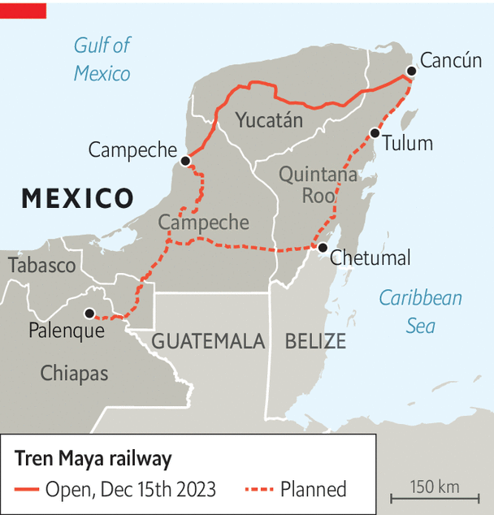image: The Economist
The railway’s construction has generated some impressive figures. The government says the project has created over 100,000 jobs. It says the train will bring opportunities to out-of-the-way villages and towns by encouraging tourism, as well as by moving locals and freight.
But many analysts doubt the train will boost the economy for long. Many jobs are temporary, linked to laying the tracks. It is unclear how many tourists will use the train. Locals will struggle to afford it: a ticket for the first stretch costs 1,166 pesos ($68), nearly a week’s average salary. The government reckons that the railway will cost more than triple its original budget of 120bn-150bn pesos, a huge sum that might have been better spent on basic infrastructure the area lacks, such as roads, drinking water and electricity. José Gasca Zamora of the National Autonomous University of Mexico reckons the government will be subsidising the train for years to come.
Others highlight the damage caused by the construction, including felling trees and inadequately protecting archaeological remains. “It is environmental devastation,” claims Gemma Santana of Sélvame del Tren, a protest group. Some indigenous communities along the route have objected to it.
In 2019 Mr López Obrador held a referendum on whether to build the railway. He won, but fewer than 3% of eligible voters turned out. To speed up the process—and, sceptics say, to conceal information—he gave certain stretches of the railway to the armed forces to build. They will also operate it. In 2021 he declared the project a national-security matter, reissuing the decree this year after the Supreme Court struck it down. His railroading may pay off. But the project may yet prove to be a train wreck. ■
China is backing opposing sides in Myanmar’s civil war
But it doesn’t want the murderous junta to fall
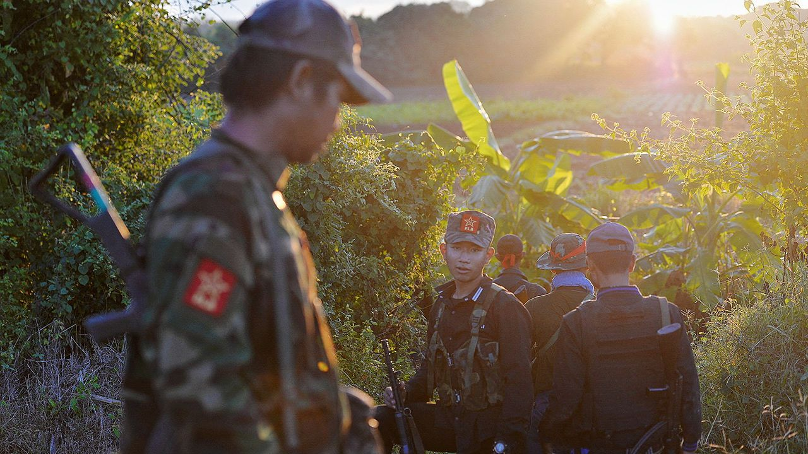
Listen to this story.Enjoy more audio and podcasts on iOS or Android.
When Myanmar’s junta toppled the country’s elected government and seized power in February 2021, China called it a “major cabinet reshuffle”. After that bloody coup sparked a civil war, in which thousands have been killed, almost two million displaced and the generals’ crimes against humanity have mounted, China stood by the generals. It has condemned Western sanctions on Myanmar’s army as “exacerbating tensions”. As Myanmar’s largest trading partner, China has sold the junta over $250m in arms. Yet in late October China appeared to reconsider its interests in its war-ravaged neighbour.
This was illustrated by a major offensive against the army in northern Myanmar carried out by a coalition of ethnically based militias, known as the Three Brotherhood Alliance, which has links to China’s security services. Operating close to the border with China, in an unruly jungle area informally considered part of China’s sphere of influence in Myanmar, the alliance swiftly became the biggest security challenge to the junta yet. With no discouragement from China—and even modest help, Burmese analysts allege—its forces claim to have seized over 200 army bases and four border crossings that are vital for trade with China.
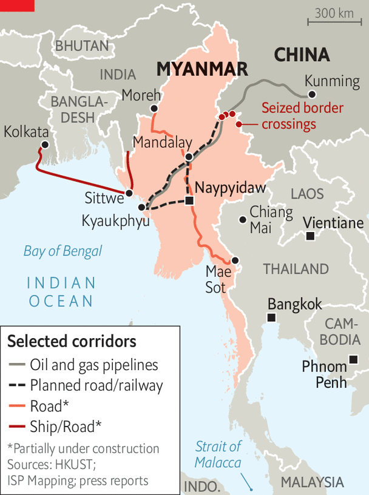image: The Economist
Inspired by this success, the junta’s many other armed opponents—ethnic and political players in an increasingly complicated conflagration—redoubled their attacks, spreading the conflict across two-thirds of the country, according to the UN. Hundreds of thousands of people have been displaced since the onset of the offensive, which is known as Operation 1027, after its start date on October 27th. Tellingly, the Brotherhood Alliance announced that one of its goals was to eliminate a network of online scam operations that over the past three years has sprung up along the Myanmar-China border. A major security concern of China’s, these operations are estimated to be behind the trafficking of 120,000 unsuspecting workers to Myanmar, many of them Chinese, and to generate billions of dollars a year in revenue, much of it fleeced from Chinese victims.
By November there was speculation that China had switched sides in the conflict, and that the junta’s days were numbered. Signalling their displeasure, the generals permitted their supporters in November to stage rare anti-China protests in several cities. China has since taken steps to reassure the junta. It has conducted joint naval exercises with Burmese vessels. In early December China’s top diplomat, Wang Yi, met Myanmar’s deputy prime minister, Than Swe, in Beijing. Then, on December 14th China announced that it had brokered a temporary ceasefire between the army and the ethnic militias.
The episode encapsulates China’s self-interested, though seemingly conflicted, approach to Myanmar, to the detriment of its 54m people. The dissonance stems from tensions between China’s long-term and more immediate interests. In the long term, it has a big economic stake in Myanmar and wants to prevent it veering towards its pro-Western democrats. In the shorter term, China worries about security.
Although India and Russia also do business with the junta, China has by far the deepest economic links to Myanmar. Despite the war, China has pushed ahead with a plan to build a network of roads, railways, pipelines and ports through the country that could give it direct access to the Indian Ocean. China sees this as an alternative to the choke-point of the Strait of Malacca, through which most maritime trade to and from China flows. China has pledged to invest over $35bn in this ambitious project. By contrast, India plans to invest $500m in road and maritime links between its north-east and Myanmar.
China’s long-term investment and relative aversion to Myanmar’s democrats have made it an ally of the country’s army, which has been in power for most of Myanmar’s independent history. Yet China’s security interests in the country can be more tactical. Ever since Myanmar gained independence in 1948, its government has failed to control its jungly border zone. China, as a result, worries about insecurity spilling across the 2,000km (1,250 miles) of frontier between the two countries. This jeopardises its infrastructure investments, many of which run along the border, and at times flushes refugees and drugs and other contraband into China. The online scam industry is the latest such worry.
The enormous scale of the criminality, and the involvement of Chinese in it as victims and perpetrators, have made it a foreign-policy priority for China. In May, its then foreign minister, Qin Gang, visited Myanmar to demand the junta crack down on the scam industry. Tens of thousands of Chinese nationals had by then been trafficked to Myanmar, imprisoned in large, sweatshop-like compounds, and forced to scam people online through bogus romantic relationships and investment schemes. Those who refuse to comply may be tortured or killed. Yet Myanmar’s army, which is both incompetent and believed to have been paid off by the scammers, did nothing to disrupt them. Thus, China appears to have turned to the ethnic militias instead. The members of one of them, the Myanmar National Democratic Alliance Army, are mostly ethnic Chinese; many of these fighters speak Mandarin.
The ethnic armies are not straightforward Chinese proxies. They advance their own interests, including by gaining territory, while aligning themselves with other groups that are less friendly to China, such as Myanmar’s increasingly well-organised pro-democracy faction. Yet China has periodically pulled their strings, with the recent offensive apparently a case in point. On December 10th it sought to capitalise on the militias’ advance by issuing arrest warrants for ten scam bosses operating in northern Myanmar. Four days later, apparently content that its objective had been served, China brokered the ceasefire.
Now it is again cosying up to the junta, which still controls most of Myanmar’s airports, banks and big cities, including the capital, Naypyidaw. Despite Western sanctions, the junta buys fighter jets from China and Russia that enable it to carry out indiscriminate bombing of civilians in areas controlled by its enemies. China will by and large back the generals in Myanmar; sometimes it will support their foes. This divide-and-rule policy is not responsible for the disaster in Myanmar. But it is probably making it worse. ■
Why are Indians shunning the country’s shiny new metro lines?
Costly fares, inconvenience and poor planning all play a role
Listen to this story.Enjoy more audio and podcasts on iOS or Android.
WHEN NARENDRA MODI became India’s prime minister in 2014, the country’s entire metro-rail network spanned 229km (142 miles) in four-and-a-half cities: Bangalore, Delhi, Gurgaon (a satellite of Delhi), Kolkata and Mumbai. That amounted to less than half the length of Shanghai’s metro at the time. Yet Mr Modi’s government has since presided over a massive metro-rail expansion. By last April India’s network covered 870km in 18 cities.
Another 1,000km or so of metro track is under construction in 27 cities. Just under 6km of new track is being commissioned every month. Navi Mumbai, a satellite of Mumbai, became the latest city to boast a metro when its first line opened in November. Yet although the speed and scale of India’s metro build-out over the past decade have been impressive, the associated passenger figures are dismal.
Not one of India’s metro rail systems has achieved even half its projected ridership, according to a study by Geetam Tiwari and Deepty Jain of the Indian Institute of Technology in Delhi. Only their own city’s network, which is the longest and most expansive in India, comes close, at 47%. In Mumbai and Kolkata ridership is a third of what was projected. In most other cities it is in single or low double digits. In gridlocked Bangalore, India’s tech-and-traffic capital, a much ballyhooed metro’s first line attracts just 6% of its projected ridership. That is despite the fact that the average speed for cars during Bangalore’s rush-hour is 18kph, the slowest of any major city bar London, according to TomTom, a navigation-software firm.
The abysmal figures are all the more surprising given the dearth of decent public transport in most Indian cities and the YIMBY-ish local enthusiasm such infrastructure projects tend to generate. The revenue implications of this failure are dire. In keeping with the august tradition of Indian Railways, not a single metro system makes enough money to cover its expenses, according to another study, by Sandip Chakrabarti at the Indian Institute of Management in Ahmedabad.
Fixing the problem is crucial not only from an economic perspective, but also an environmental one. As India’s middle class expands, those who can afford to are opting for the relative comfort of private vehicles. The result is worsening congestion and traffic pollution. IQAir, an air-quality monitor, estimates that motor-vehicle emissions account for between a fifth and a third of concentrations of PM2.5—a particularly damaging kind of airborne pollutant—in urban India.
What explains the reluctance of commuters to hop aboard their shiny new, delightfully air-conditioned, metro carriages? For starters, Indian cities are not particularly dense, which means metro lines are not within walking distance for most commuters. Feeder services, such as bus routes, are rarely integrated with metro lines. So taking the metro to work can be complicated and involve walking, buses, shared autorickshaws and more walking.
A second reason is that metro systems are best suited for longer commutes. In the Indian context, they save time only on trips of 10km or more, reckon Mr Tiwari and Mr Jain. But around three-quarters of trips in most Indian cities are under 10km, and half are under 5km. Metro fares also tend to be high by Indian standards. The last time the Delhi metro raised its fares, in 2017, ridership fell by 15%.
Transport analysts and urban planners say India is backing the wrong horse. Bus services are far cheaper and more flexible for route-planning than metros. They can also be rolled out quickly. The emergence of electric buses has made them a greenish option, too. The best way to maximise these benefits is through dedicated bus lanes, known as a “bus rapid transit system”. Yet attempts at building such systems have often failed, owing to poor implementation, half-hearted enforcement, resistance from motorists and a lack of political will. The gulf in attitudes towards buses and metros is easily explained, says Devashish Dhar, whose book “India’s Blind Spot” looks at such urban problems: “Buses are not sexy. Metros are sexy.”
The result is a slew of expensive transport infrastructure that is failing to attract passengers even as poorer commuters walk in the heat and richer ones idle in traffic. Mr Modi and his advisers have done well to build so many metro lines. Now they need to make them more convenient to use—and improve India’s urban bus networks while they’re at it.■
A few cities are bucking the country’s low birth rate
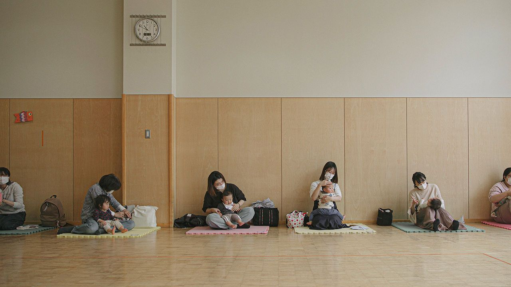
Listen to this story.Enjoy more audio and podcasts on iOS or Android.
Kishiki Noriyo pulls up outside a house in Akashi, a city in western Japan, in a truck emblazoned with a heart logo and the slogan: “Diaper delivery: we also deliver kindness.” She steps out with two bags of nappies. Higuchi Miki, a young mother, appears at the front door with a baby on her hip. Ms Kishiki is on the front line of a ten-year push by Akashi to encourage its residents to have children. It includes delivering free baby food as well as nappies, free medical care and school lunches. The effort seems to be paying off. Akashi’s population has increased for ten years in a row, to more than 300,000.
This makes the town exceptional. Japan’s birth rate dipped below the replacement level of 2.1 children per woman in the mid-1970s and has been steadily declining ever since. In 2022 the total number of births dropped below 800,000 for the first time since records began in 1899. Of Japan’s 1,800 municipalities, only around 200 have a rising population. According to Kishida Fumio, the prime minister, this has put the country on “the brink”.
Even in Akashi, which is an easy commute from the cities of Osaka and Kobe, most of the growth is from migration, not births. The town’s birth rate is 1.65. Yet given that the national figure is 1.3, this represents success of a sort. Schools are closing across Japan for want of pupils; Akashi is short of school places.
Many of the obstacles to young Japanese forming families, from high education costs to inflexible family laws, can only be tackled with national policies. But Akashi shows how local communities can make a difference. That starts with improving access to nurseries and day care. Smaller projects such as Ms Kishiki’s, which assist parents of young children, also help.
The population of Nagareyama, a commuter town outside Tokyo, is also booming. Over the past decade it has grown by 24%, to 211,000. The opening of an express-train service to Tokyo in 2005 largely explains that. But Nagareyama’s commitment to child care—the “utmost priority” of its local government—has also attracted young families. In 2007 the town launched a bus service that picks up children at train stations and takes them to day-care centres. Nagareyama has increased its number of nurseries from 17 to more than 100 in the past 15 years. “Our aim was to create an environment in which parents can continue to work while raising children,” says Izaki Yoshiharu, the town’s mayor.
Lack of child care is endemic across Japan. The central government has made some improvements in this regard, reducing the number of children waiting for a nursery place by 90%. It has also introduced tax and other economic incentives to encourage people to reproduce. But, as scattered examples like Akashi and Nagareyama suggest, making a real difference requires a more fundamental shift.
Kato Hisakazu of Meiji University reckons Japan “needs to foster a culture that is generous to children”. Efforts to build more child-care facilities are often blocked by locals who worry about increased noise. When Soup Stock, a popular restaurant chain, started offering free food for babies last April, it encountered a fierce online backlash from people who objected to the prospect of sitting next to crying infants.
Tanaka Yumi, a mother of two in Nagareyama, says young Japanese parents are used to receiving a “cold look” from their unsympathetic neighbours. But the abundance of young families in the town and the supportive policies of its local administration provide reassurance, she says. “I have many friends in Nagareyama who decided to have a second or a third.”
Akashi’s pro-child efforts are intended to drive the same cultural change. Morioka Kazumi of the town’s child-care department says the nappy deliveries are more about “alleviating loneliness” than the goods themselves. Ms Higuchi, the young mother, appreciates that. “It’s nice when someone checks on me,” she says. “It makes me feel I’m on the right track.” ■
As its population shrinks, China hopes machines can pick up the slack
Listen to this story.Enjoy more audio and podcasts on iOS or Android.
CHINA’S FIRST attempt at building a humanoid robot did not hit the mark. The machine produced in 2000 by a team at the National University of Defence Technology looked like a walking toaster. It had googly eyes and cannon-like protuberances near its crotch. Called Xianxingzhe, or Forerunner, it was mocked in neighbouring Japan, which at the time boasted far sleeker robots. Japanese netizens described it as China’s secret weapon—designed to make its enemies die of laughter.
China has stuck with it, though. In November the government published a plan calling for the mass production of humanoids by 2025. The country’s love of robots goes beyond those that can walk and talk. Last year half of all the industrial robots installed worldwide were fitted in China, according to the International Federation of Robotics, an industry body. It is now the fifth most automated country in the world when measured by robots per worker. Motivated by pride and pressing demographic challenges, China is on a mission to become a robot superpower.
Many of the country’s newly installed robots are mechanical arms that can be programmed to weld, drill or assemble components on a production line. But last year China also produced over 6m “service robots”, which help humans with tasks apart from industrial automation. Such machines scoot around warehouses, moving boxes. Others clean hotels. At a restaurant in the southern city of Guangzhou meals are cooked and served by robots.
Some of this may seem gimmicky, but to the Communist Party led by Xi Jinping robots are serious business. Officials believe China fell behind and was humiliated by Western powers in the 19th century in part because it did not embrace technological revolutions happening elsewhere. Now China aims to stay ahead of the game. Whereas officials once used steel production as a gauge of economic advancement, today they look at the number of robots installed, says Dan Wang of Hang Seng Bank.
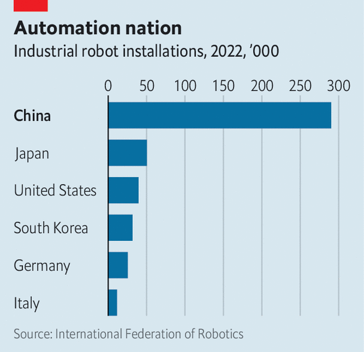image: The Economist
China’s impressive economic growth in recent decades was a result of three main factors: a soaring urban workforce, a big increase in the capital stock and rising productivity. Today, though, less new infrastructure is needed. And the working-age population, those between 15 and 64, is shrinking. It is projected to drop by over 20% by 2050. Earlier this year the government released a list of 100 occupations for which there is a shortage of labour. Manufacturing-related positions accounted for 41 of them. A surfeit of young and cheap workers once did these jobs; now wages are higher and workers less abundant.
As a result, Mr Xi has made boosting China’s productivity a priority. The government sees robots playing a big part in this effort. For years it has pushed industry to go from being labour-intensive to robot-intensive. Provinces have spent billions of dollars helping manufacturers upgrade in this way. China’s experience during the pandemic reinforced this mindset. Endless lockdowns caused factories to close and Western firms to reconsider their supply chains. When all of the controls were lifted in 2022, a wave of covid-19 again disrupted businesses as workers fell ill. With robots, health is not a concern.
Many of the challenges faced by factories apply to agriculture, too. The average Chinese farmer is in his or her 50s. Few young people want to take their place in the fields. Countries that face similar predicaments often import either their food or cheap labour. But China is paranoid about food security and uninterested in immigration. Robots could be the answer. Some aspects of agriculture, such as milking cows, can be automated fairly easily. Others are trickier, but appear possible on a small scale. The south-western city of Chengdu has developed an unmanned vegetable farm which could, in theory, produce ten harvests a year.
In time, robots might replace ageing workers. They might also play a role in caring for them. China has far too few professionals looking after its 8.1m care-home residents. A plan from the National Health Commission, published in 2021, called for developing smart elderly care. Some of it is aspirational, such as providing frail people with electronic exoskeletons to aid their movements. But simpler robots could be used to help old folk bathe or stand up. China’s tech giants are looking into the challenge. In 2022 iFlytek, a big artificial-intelligence firm, said it wanted to send robots into the homes of seniors to offer companionship and health management. Residents of a care home in Shanghai are kept happy by a robot that zips around singing revolutionary songs from their youth, according to local media.
What would make the government happy is if China’s robotics industry became more self-sufficient. Local firms still rely on foreign companies for parts and know-how. China is fearful of being shut out of Western markets, for good reason. America has blocked Chinese firms from buying advanced semiconductors and the equipment used to make them (robots require chips, but usually not the most advanced kind). So the government has been trying to stimulate robotics research. In August the city of Beijing announced a 10bn-yuan ($1.4bn) fund for robot development.
Such efforts are having some effect. Last year 36% of the industrial robots China installed were made at home, up from 25% in 2013. Shenzhen Inovance Technology, a big Chinese firm, builds robots that are used to make LED lights and mobile phones. It may be able to source all of the components it needs from Chinese companies within five years, says Zhu Xingming, its chairman.
For most Chinese robotics firms, though, self-sufficiency is still some way off. That is part of the reason why the government is pushing the development of humanoids. These may not be very practical or affordable in the near term. But officials hope the process of manufacturing them will create a domestic supply chain.
One thing the government does not have to worry about is much pushback against its plans. Surveys suggest most Chinese people think robots will create more jobs than they destroy. China, it seems, is a land of techno-optimists. It helps, of course, that independent labour unions are banned. ■
The outspoken media tycoon will be punished for supporting democracy
Listen to this story.Enjoy more audio and podcasts on iOS or Android.
IT HAS BEEN more than three years since the police in Hong Kong arrested Jimmy Lai and stuck him in Stanley Prison. But as Mr Lai stood in court on December 18th, facing charges of sedition and colluding with foreign forces, it felt like the culmination of a much longer saga. The pro-democracy media tycoon has spent decades challenging the administration in Hong Kong and the national government in Beijing. They, in turn, consider Mr Lai a traitor and have been relishing the chance for more payback.
Revered by many Hong Kongers for his bravery, Mr Lai has led a rags-to-riches life. At the age of 12 he escaped Mao Zedong’s China by stowing away on a boat. Once in Hong Kong he worked his way up from factory dogsbody to clothing impresario and media mogul. The government in Beijing forced him out of the garment industry in 1994 after he wrote a column in one of his magazines calling Li Peng, China’s prime minister at the time, “the son of a turtle’s egg” (a rather nasty insult).
In 1995 Mr Lai founded , a popular tabloid that mixed tittle-tattle with criticism of the government. By 2021 the authorities in Hong Kong had had enough. Acting under the national-security law, they froze the paper’s assets, raided its offices and arrested several of its leaders. (People across Hong Kong queued to buy the paper’s farewell edition.) The charges against Mr Lai are based in part on articles in that called for international sanctions against Chinese and Hong Kong officials. Prosecutors argue that this amounted to collusion with foreign forces. Six of the paper’s former staff members pleaded guilty to the charge in 2022.
The government in Hong Kong has gone to great lengths to ensure that Mr Lai’s trial goes its way. It prevented him from appointing his preferred barrister, a Briton named Tim Owen. (The fight over that contributed to the trial’s being delayed for months.) Paul Lam, Hong Kong’s justice minister, insisted that Mr Lai be tried not by a jury, but by three judges approved by John Lee, the city’s chief executive (this is now the norm in national-security cases). Chris Tang, the security minister, has already proclaimed that the proceedings will prove Mr Lai is “bad”. The government likes to boast that it has a 100% conviction rate in national-security trials.
In 2022 Mr Lai was sentenced to five years and nine months in prison for fraud, a verdict denounced by human-rights groups. Now he looks set to spend the rest of his life behind bars. America, Britain and the European Union have condemned the trial. Mr Lai’s legal team hopes this will help. But the defendant is said to be reconciled to his fate. ■
Repression reaches one of China’s quirkiest ethnic communities
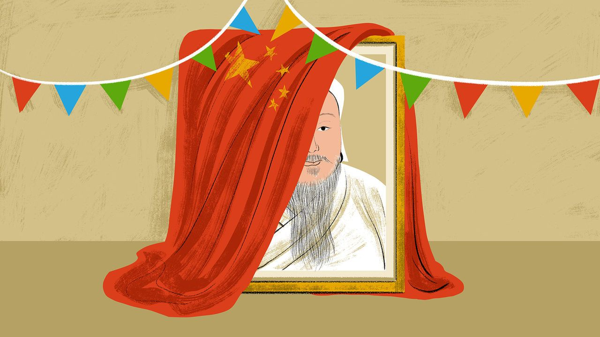
Listen to this story.Enjoy more audio and podcasts on iOS or Android.
HARSHNESS IS A crude metric for judging an unelected regime. To keep power, lots of rulers will crush dissent with an iron fist. A more subtle measure involves thoroughness. Dedicated autocrats use cold, patient repression to bring even the meek and unthreatening into line. Their aim is to snuff out any belief—no matter how harmless—that might divide subjects’ loyalties.
This grim trend may be seen in the Communist Party’s handling of China’s ethnic minorities, a diverse bunch who between them make up around 9% of the overall population. Since Xi Jinping took power in 2012, such groups have lost many of the limited privileges granted to them and faced aggressive campaigns to assimilate into mainstream Chinese culture.
Apologists present Xi-era policies as tough but rational responses to threats. The government’s actions in Xinjiang are indicative. To defend China’s cruelties in the region—including mosque demolitions, re-education campaigns, the jailing of poets and the surveillance of millions of Uyghurs and other minorities—officials play up the dangers of Islamic extremism.
National security is also used to justify an intensifying campaign to assimilate ethnic Mongolians who live in China’s northern region of Inner Mongolia. New laws mandating the use of the Chinese language over Mongolian in schools and public institutions aim to “safeguard national sovereignty”. When protests greeted similar changes in 2020, the local government responded by making the rules stricter. Citing Mr Xi’s calls for “ethnic solidarity”, the authorities have banned some history books and closed memorials to Genghis Khan, the founder of a dynasty that conquered tracts of Eurasia and ruled China between 1271 and 1368. Defenders of such hardline policies note that Inner Mongolia is a border region, sharing ties of language, religion and history with an independent, democratic country next door, Mongolia.
Revealingly, though, the Xi era has seen moves to smother traditions that pose no conceivable challenge to national security. Chaguan recently travelled to one of the oddest places on China’s ethnic map, the Xingmeng Mongolian Township of Yunnan province. This rural township of about 6,000 people lies in the lush, tobacco-growing hills of southern China near the border with Vietnam—about 2,500km from the grasslands and deserts of Inner Mongolia. Locals claim descent from Mongolian armies, initially led by Kublai Khan, grandson of Genghis, that conquered the region in the 13th and 14th centuries. In their telling, some soldiers stayed on after their Mongol overlords were defeated and driven back north by Ming-dynasty emperors. After an early flurry of intermarriage with local women, these “Yunnan Mongolians” reputedly settled down as fishermen and carpenters in five villages.
Today locals praise their ancestors for stubbornly declining to marry outsiders, thereby—they insist—preserving traces of Mongolian language and dress for over seven centuries. Declaring himself a descendant of Genghis Khan, a village elder admits that he married a woman from China’s Han majority, “so my daughter is only half Mongolian”. To the elder, a longtime party member, his child is fully Mongolian nonetheless, because she “inherited the spirit of the Mongolian nation”.
Xingmeng’s history was rediscovered in the 1950s, a time of Sino-Soviet amity, by party officials and ethnographers, as well as by envoys from the Soviet-controlled Mongolian People’s Republic. Alas, as Mao Zedong led China deeper into paranoid isolation, ethnic minorities with ancient traditions and links to foreign lands became the target of attacks. After China broke with the Soviet Union and sank into the frenzies of the Cultural Revolution, terrible violence reached Inner Mongolia. Tens of thousands of ethnic Mongolians were killed, accused of treason and feudal thought. Far to the south in Yunnan, minorities were attacked in a “Political Frontier Defence” campaign aimed at border counties. Xingmeng avoided the worst violence, older locals relate, though a temple and ancestral clan halls were damaged. Some temples survived because they had been turned into schools.
After Mao’s death in 1976 Xingmeng enjoyed something of a golden age, as history was harnessed for economic development. Teachers visited from Inner Mongolia to give language lessons at the primary school. Cement replicas of nomads’ tents, horse sculptures and other Mongolian touches appeared. A damaged temple was restored in 1985 as the “Three Saints Temple”, housing statues of Genghis and Kublai, as well as Mongke (Kublai’s brother). A Mongolian folk festival, called Naadam, was held every three years. It began with ceremonies honouring those royal ancestors.
No stately pleasure-domes here
Not this year. No worship of Genghis Khan was allowed as the latest Naadam began in Xingmeng on December 15th (though early that morning some locals quietly slipped into the temple to light incense before the Khans’ impassive statues). At the opening ceremony, a parade featured cloth and bamboo models of fishing boats, shrimp, clams, dragons and a large, dancing white elephant. Missing was a cloth and bamboo model of Genghis Khan on horseback, which appeared at the last Naadam in 2017.
A few years ago Xingmeng’s schools stopped offering Mongolian language lessons. The state has also reduced the number of bonus points given to ethnic-Mongolian students taking university-entrance exams. Pointedly, at the Naadam opening ceremony local leaders hailed Xi Jinping Thought and the ethnic unity of the Chinese nation. In Xingmeng’s cobbled back alleys, your columnist heard wistfulness and fatalism about the new Naadam, rather than revolt. Asked about the changes, an old man said: “All nationalities should unite, and all Chinese should listen to what the party says. Isn’t that how it works with political issues in China?”
It takes an implacable regime to hear such words and still detect a need for stricter controls. China has such a regime. ■
Attacks on shipping threaten to upend peace talks in Yemen
The Saudis want to end their war with the Houthis, even as America may fight them
Listen to this story.Enjoy more audio and podcasts on iOS or Android.
NOT LONG ago the Saudis might have welcomed a Western show of force against the Houthis, a Shia rebel group that has fought against a Saudi-led coalition in Yemen since 2015. Yet today, as America forms its own coalition to stop Houthi attacks on commercial shipping, it is the Saudis urging caution: they fear efforts to escape their war in Yemen could be spoilt.
Since mid-November the Houthis have attacked at least a dozen vessels in the Red Sea, either by firing missiles and drones, or by attempting to hijack them. Stirred up by the war in Gaza, the group claims it targets ships with ties to Israel. But its attacks seem increasingly random. One missile strike in December hit a Norwegian-flagged, Indian-crewed tanker carrying vegetable oil from Malaysia to Italy.
image: The Economist
Many firms have decided to avoid the area. Since December 15th, four of the five largest shipping companies—CMA CGM, Hapag-Lloyd, Maersk and MSC—have halted passages through the Red Sea. On December 18th BP, a British oil-and-gas giant, said its tankers would avoid the route. Insurance costs have soared. This will have sharp consequences for the world economy: about 10% of seaborne trade passes through Bab al-Mandab, a narrow strait between Africa and the Arabian peninsula.
It will particularly hurt Egypt, which collected a record $9.4bn in revenues from the Suez Canal in the fiscal year to June 30th. Those fees are one of its main sources of hard currency. The government has tried to play down the impact of the Houthi attacks. Osama Rabie, the head of the Suez Canal Authority, says that only 55 vessels diverted their course between November 19th and December 17th, compared with 2,128 that passed through the canal. But that mostly reflects a time before big shippers started to avoid the Red Sea. Next month’s figures will probably be worse.
The Houthis have received arms and training from Iran, and their campaign against shipping fits a broader Iranian strategy of using its proxies to hamper Israel. But Western and Israeli officials are not sure Iran is directing individual attacks. American officials say they are keen for China to play a diplomatic role. They hope it will urge Iran to rein in the Houthis. China is the largest buyer of Iran’s oil, taking nearly 1.5m barrels a day (nearly half of its total output), which gives it leverage in Tehran; and it needs safe passage through the Red Sea for trade with Europe.
A multinational task force led by America’s navy is already operating off the Yemeni coast to try to deter the Houthis. In recent weeks American, British and French warships have all intercepted Houthi drones and missiles. This is making the Saudis nervous. After the Houthis seized Sana’a, Yemen’s capital, and much of western Yemen in 2014, a Saudi-led coalition invaded to remove them from power and restore the internationally recognised government. The war became a quagmire. The Houthis still control most of Yemen’s population, while secessionist rebels, backed by the United Arab Emirates (UAE), hold sway across the south.
The Saudis have been desperate to end their role in the war (the UAE withdrew most of its troops in 2019). They agreed to a two-month truce with the Houthis in April 2022 and then extended it twice. Though the truce ended officially in October 2022, it remains largely in effect: violence in Yemen is well below pre-truce levels. Both sides have spent months talking about a peace deal, and the Saudis have offered a few gestures to the Houthis, such as easing their naval blockade of Yemen and allowing more flights into Sana’a.
Diplomats say the parties are now close to agreeing on a “road map” to make the ceasefire permanent and end the war. Hans Grundberg, the UN’s Yemen envoy, is shuttling between them to finalise the details. The first phase would probably focus on economic measures. The Houthis have long demanded that the internationally recognised government pay public-sector salaries in areas they control, something the Saudis have refused to allow. Under a new road map, which could be announced in the next few weeks, the kingdom would probably permit such payments.
That puts Saudi Arabia in the awkward position of urging American restraint against its old foe. The kingdom seethed when Joe Biden decided in 2021 to remove the Houthis from America’s list of foreign terrorist organisations. But now, as members of Congress urge the Biden administration to reverse its decision, the Saudis are quiet. Western officials say putting the Houthis back on the list would shred the road map: for example, the Saudis could not facilitate salary payments to a group under blanket American sanctions.
The Houthis hope that their attacks on shipping will give them more leverage in talks with Saudi Arabia, and that fighting on behalf of the Palestinians will boost their popularity in Yemen. They may be right about the former—but the latter could prove a miscalculation. Their campaign has undeniably had an impact on Israel. Revenue at the Israeli port of Eilat is down 80%, and the cost of shipping goods to Israel is rising. But Eilat handles only around 5% of Israel’s seaborne trade; most of it goes through Ashdod and Haifa on the Mediterranean. The Houthis will raise costs for Israeli consumers, but they are far from placing the country under siege.
The consequences could be much worse in Yemen, which imports more than 80% of its food. Most of that comes through Hodeidah, its main Red Sea port. Ships will now either avoid calling there or charge higher prices to reflect their own soaring cost of insurance. One Yemeni businessman says his freight rates have increased by more than 50% since the Houthis started their attacks.
That will mean higher food prices in a country where most people already cannot afford to eat: the price of a basket of staple foods in Yemen has increased fourfold over the past five years. Around two-thirds of Yemenis rely on aid to survive. The Houthis are not so much blockading Israel, in other words, as they are blockading their own desperately poor country. ■
Israel isn’t sure what to do about the hostages in Gaza
Every option is fraught with danger
Listen to this story.Enjoy more audio and podcasts on iOS or Android.
The deaths on December 15th of three Israeli hostages in Gaza, who were misidentified as members of Hamas and shot by Israeli soldiers, highlights how Israel’s dilemmas in reconciling its objectives in its war with Hamas are growing ever more acute. To the desperate families of the remaining hostages it seems clear that their loved ones may pay the ultimate price.
After Hamas’s attack on October 7th, Israel vowed to demolish the Islamist movement militarily, end its rule over the Gaza Strip and rescue 240-plus hostages taken by Hamas and other Palestinian groups. Since then, the Israel Defence Forces (idf) has dropped tens of thousands of bombs onto the territory and sent over four divisions of troops into the coastal enclave.
Yet only one hostage has been safely recaptured as the result of an Israeli raid. Around 130 are still being held. Finding and freeing them in a war-zone where around 20,000 Palestinians—a majority of them civilians—have been killed is proving impossible. Nearly half were released in a prisoner exchange during a truce in late November. But Hamas is demanding the release of many more of its own prisoners in Israel and a much longer ceasefire if it is to free any other hostages.
The Israeli government’s position on further negotiations over hostages looks confused. Binyamin Netanyahu, the prime minister, at first ruled out resuming the Qatari-brokered talks with Hamas. He also stopped David Barnea, the head of Mossad, the intelligence agency, who is also Israel’s main negotiator, from flying to Doha, Qatar’s capital. But two days later Mr Barnea met Qatar’s prime minister in Europe.
For the moment Israel is resisting pressure for another ceasefire. The idf says it needs more time to destroy Hamas’s extensive tunnel network under Gaza, where many militants are still hiding. The far-right parties in Mr Netanyahu’s coalition are adamantly opposed to another truce.
But Israel’s other war aims look increasingly muddled, too. Mr Netanyahu insists in public that “Gaza will neither be Hamastan nor Fatahstan”: the latter refers to the group that runs the Palestinian Authority in the West Bank. Yet puzzle-solvers in the Israeli government have been discussing—albeit unofficially—alternative ideas for Gaza’s post-war future which do involve Fatah and the Palestinian Authority.
It is also unclear how Israel plans to provide basic aid to the 2m-plus Palestinians trapped in Gaza. “If the idf is to continue its campaign against Hamas in Gaza, there has to be a serious plan for taking care of the humanitarian needs there as well,” says an exasperated Israeli security official. “But the political paralysis means this is happening too slowly.”
Immediately after the massacre of Israelis on October 7th, the government declared that it would not let any supplies enter Gaza from Israel. Aid would have to go through Egypt. Some food, water and medicine would be allowed in, but no fuel.
Since then, fuel has begun to trickle in. On December 17th Israel’s cargo-terminal with Gaza at Kerem Shalom was reopened. Before the war around two-thirds of shipments into Gaza passed through this crossing. Opening it has increased the capacity for sending desperately needed supplies, but Israel is still insisting that any aid comes on a circuitous route via Egypt, rather than directly through Israel, which is much quicker and more efficient.
Among Israel’s Western allies, Britain, France and Germany are now pushing for a ceasefire. On December 17th the British and German foreign ministers called for a “sustainable” one, but did not suggest a date and accepted Israel’s view that Hamas should not be allowed to run Gaza.
Pressure from Israel’s key ally, America, to end the war is still mainly behind the scenes. But Mr Netanyahu is increasingly frank about his rift with the Americans. He presents himself as a defiant defender of Israel’s interests, hoping to shore up his shrinking nationalist base and keep his far-right partners on board. But his focus on his own political survival at the expense of a coherent plan for Gaza means the fate of both Israeli hostages and Palestinian civilians in Gaza looks bleak. ■
The plight of Christians in Bethlehem and Jerusalem predates the latest Gaza war
Their number is continuing to dwindle
Listen to this story.Enjoy more audio and podcasts on iOS or Android.
This year’s nativity scene in Bethlehem depicts a baby swaddled in a Palestinian (a chequered headdress)resting on a heap of rubble. It is hard to spot the wise men, frankincense, or myrrh. The war in Gaza has prompted a drastic scaling back of celebrations in the West Bank. No banquets, no traditional parades of Boy Scouts, no pilgrims. Bethlehem is silent. Christmas in the land where Jesus Christ was born has, in effect, been cancelled.
Gaza’s dwindling community of Palestinian Christians has been hard hit since October 7th. At least 16 were killed in an air raid that damaged the church of St Porphyrius, Gaza city’s oldest. Pope Francis called Israel’s actions in Gaza “terrorism” after a Christian mother and daughter were shot dead as they sheltered in a church compound. Church leaders say half of Gaza’s Christians have fled since the war began.
Instead of Christmas carols, barber shops in Jerusalem’s Christian quarter are blaring out non-stop coverage of the horrors in Gaza on the Al Jazeera TV channel. “No one is in the mood for celebrating,” says Munther Isaac, pastor of Bethlehem’s Lutheran church. “But maybe we are praying even more.”
Even before the latest war the fortunes of Christians in the West Bank, including Jerusalem, were fast declining. Gaining permits from the Israeli authorities to travel in and out of Bethlehem and Jerusalem is unpredictable, even for the clergy. Moreover, say Christians, a violent Jewish settler movement is bullying them more and more—with impunity. Cut off from Jerusalem by Israel’s separation wall and by a string of settlements, Bethlehem is isolated.
Jewish settlers in the Arab eastern side of the old city of Jerusalem are only about a thousand strong. But they have become more aggressive and are implanting themselves more strategically to isolate both Christian and Muslim Palestinians in the city and its vicinity.
Meanwhile the Armenian community is fighting what it says is an “existential battle” to keep part of its domain in the old city. A land deal with an Israeli developer “puts the Armenian presence and Christian presence in Jerusalem in danger”, says the Armenian patriarchate. Bulldozers have already moved in.
Yousef Daher of the World Council of Churches in Jerusalem explains that if a Palestinian Christian in Jerusalem marries a West Banker, the spouse cannot live in the city without a permit that can take a decade to get. But if the couple move to the West Bank, any residency rights in Jerusalem may be forfeited. Before the war in 1967, some 24,000 Christians lived in the city. Now there are only 9,000.
“The mindset in Israel is that Jerusalem is ours,” says Daniel Seidemann, an Israeli lawyer and expert on the city. “It’s the most serious crisis since 1948.” The exodus of Palestinian Christians looks unlikely to be reversed, he suggests: “You’ll probably find more Jerusalem Christians living in Illinois or Michigan than in East Jerusalem.”■
A supposed haven in Sudan falls to a genocidal militia
The worse of two bad factions is winning the war
Listen to this story.Enjoy more audio and podcasts on iOS or Android.
The gunfire on the outskirts of Wad Madani, one of Sudan’s biggest cities, began at dawn on December 15th. Panicked civilians began to flee. The attack by fighters from the Rapid Support Forces (rsf), a paramilitary force, was met with air strikes by the Sudanese Armed Forces (saf), the regular army. After a brief lull in which the saf claimed victory, gun-toting militiamen then stormed into the city centre. As they did so, saf soldiers abandoned their posts and slunk away to the south.
The fall of Wad Madani, about 200km south-east of Khartoum, the capital, comes five years after pro-democracy street protests erupted that eventually forced out Sudan’s long-time dictator, Omar al-Bashir. But Sudan’s political transition was derailed in 2021 by a coup staged jointly by the rsf and the saf. In April their edgy alliance collapsed into civil war. Some 7m people have been displaced within Sudan. Another 1.4m have fled to neighbouring countries, many to Chad, after genocidal violence against the Masalit, a black African tribe, by the rsf and allied militias.
image: The Economist
The latest fighting is worsening a humanitarian catastrophe. As many as 300,000 people have fled Gezira state, of which Wad Madani is the capital, in just four days, the UN estimates. Many are fleeing for a second time, since nearly 500,000 people had escaped there, mostly from bloody chaos in Khartoum. Cities farther south, where they may now flee, may not be safer for long. Those remaining in Wad Madani fear atrocities by the rsf, which has a record of carrying out massacres and rapes, and air raids by the saf.
Wad Madani was also an important staging-point for sending aid and was one of Sudan’s few remaining medical hubs. No longer. Scores of badly disabled babies who had been relocated from Khartoum after their orphanage had been caught in the fighting are again in desperate need.
The city had been considered an saf stronghold. That it fell so swiftly piles the pressure on General Abdel Fattah al-Burhan, the SAF’s head. After the city’s fall, rumours swirled of a coup against him, which the saf seemingly sought to deny. Instead the saf announced an investigation into why its troops fled the city.
In fact the army has been in retreat for months. General Burhan himself left Khartoum for Port Sudan, in the north-east, while the rsf seized control of most of the big cities in Darfur, in the west. “saf has essentially not won a major battle of this war,” explains Alan Boswell of Crisis Group, a think-tank, who is based in Nairobi. One reason for the rsf’s success is backing from the United Arab Emirates (uae), which has reportedly been shipping weapons to it via Chad. (The uae denies this.) Egypt, which General Burhan hoped would prop up his side, has failed to keep pace, in part as a result of its own mounting economic woes.
Many worry Sudan could end up like Libya, split into chunks controlled by rival factions. It could get even worse. The rsf may try to seize much more of the country, perhaps all of it. What may be left standing in Sudan is unclear, cautions Mr Boswell. The rsf’s next move may be to try to seize all the major southern cities.
Still, the rsf could get bogged down in the south. And the saf is not its only rival. In November many feared a big battle for el-Fasher, the capital of North Darfur state. That has not yet materialised, despite some skirmishes, in part because other former rebel groups announced that they would defend the city from the rsf.
Diplomacy has plainly foundered. On December 9th a regional summit failed again. Talks may have a chance if the rsf gets stuck or if it surges dramatically forward and the SAF is forced to sue for peace. Even then, a deal would be hard to strike. Western governments have been distracted by crises elsewhere. Regional ones have been just as ineffective. “There hasn’t been a major ceasefire push since the first few weeks of the war,” laments Mr Boswell. “It’s been a giant mess.” ■
For Congo’s next president, winning may be the easy part
Whoever it is, a staggeringly hard task beckons
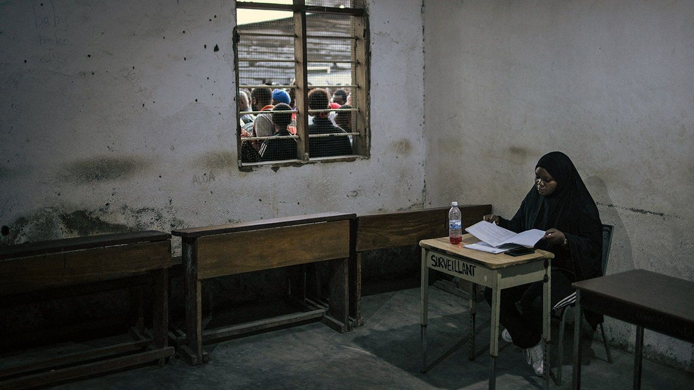
Listen to this story.Enjoy more audio and podcasts on iOS or Android.
On December 20th, as went to press, millions of Congolese were queuing to vote. The much-criticised electoral commission will probably claim that the very fact of holding a general election on time in a country four times the size of France should itself be considered a triumph. Yet as Moïse Katumbi, a leading opposition candidate, angrily puts it: “Which type of election?”
Some 1.7m voters in the east will not cast a ballot because of conflict there. Many others elsewhere may be disfranchised. Crucial papers for reporting the results across the 75,000 polling stations arrived so late in Kinshasa, the capital, that the government had to beg the UN peacekeepers it has spent years scapegoating and other countries such as Angola and Egypt to provide planes to fly the papers around the country. The illegibility of millions of voter cards will add to the chaos. Though the results are almost certain to be disputed, the president is meant to be sworn in on January 20th.
image: The Economist
Whether it is Félix Tshisekedi, the incumbent, or one of his opponents, he (not she) will face a monumental task. After nearly three decades of war in the east, some 7m people are displaced. Under the guise of chasing former perpetrators of the genocide of 1994, Rwanda has been backing the M23, a rebel group in eastern Congo, where it has also sent troops (Rwanda denies both accusations). So a first urgent question for the incoming president will be what to do about Rwanda. The M23 is only about 30km from Goma, a big eastern city. America, worried that a proxy war could turn into a brutal direct one, recently brokered a temporary ceasefire which it hopes to turn into longer peace talks.
Yet the politics of peace is extraordinarily complicated—and getting more so. To widespread astonishment a new political-military alliance was recently announced between the M23 and Corneille Nangaa, who headed Congo’s electoral commission at the 2018 election. Back then, he declared Mr Tshisekedi the winner despite leaked official data suggesting that another opposition candidate, Martin Fayulu, had won handsomely.
Peace talks have failed in the past. Even if a deal is struck between Congo and Rwanda, strife in the east could persist. A dizzying array of other armed groups operate there, including one linked to Islamic State. To secure a broader peace, the new man must decide whom to rely on for help.
Long-deployed UN peacekeepers are slowly leaving. So is an ineffective east African regional force, in theory to be replaced by one from southern Africa. Soldiers from Uganda and Burundi have also been operating in Congo under bilateral agreements but that may complicate matters. “You think you’ve got Rwanda and Congo fixed up, but then Uganda is a really important element…and then you’ve got Burundi,” sighs a Western diplomat.
Adding to the mix of men with guns are the , Swahili for patriots, a mishmash of government-backed militias with a record of bloody mayhem whom Mr Tshisekedi nonetheless calls heroes. Some 1,000 Romanian mercenaries also operate in the east. Mr Tshisekedi insists they are instructing his army, not directly fighting.
Improving the economy is the new president’s second tough task. Despite strong growth thanks to high mineral prices, the number of Congolese living in extreme poverty, some 60m in a population of 100m or so, has been rising. How to make the mining boom improve wages and pay for roads and hospitals rather than go on chandeliers and filling politicians’ bank accounts? One hope, shared by Mr Tshisekedi and Mr Katumbi, is to process more minerals within Congo itself. But that would require reliable cheap electricity in a country where about 80% of the people have none at all. The perennial hope is the Grand Inga Dam, a huge hydropower scheme, but Nicolas Kazadi, the country’s finance minister, admits that the project does not even have a timeline.
Many hope for real action on another pervasive problem: corruption. In July the government suspended the licence of the country’s first gold refinery just days before it was to start producing, saying it did not respect its “societal obligations”. Around the same time the government expanded its own gold joint venture with Primera Group, based in the United Arab Emirates, where the gold is refined. The government denies any wrongdoing.
Many Congolese bigwigs operate in a web of facilitation fees and patronage. The country must redefine more tightly the meaning of corruption, says Willy Mulamba, who chairs Congo’s banking association. The faith of young people in politics and democracy has been savagely eroded. “For years we’ve been in the same mess,” complains Shishi, a Congolese rapper. “People come to us and say ‘We’re going to change this country’,” he explains. “But they’ve lied to us a lot.” ■
The head of the hard-right Alternative for Germany is riding high
Alice Weidel’s laments for the decline of Germany, and broadsides against immigrants, strike a chord among voters
Listen to this story.Enjoy more audio and podcasts on iOS or Android.
FROM HER sixth-floor office next to the Bundestag Alice Weidel looks west over an expanse of winter-brown treetops. This is the Tiergarten, Berlin’s most famous park. At its centre rises a 67-metre (220-foot) column celebrating Prussia’s defeat of Denmark in 1864. Glinting in gilded glory at its top strides Victory, this particular version of the winged goddess modelled on the then-crown princess of Prussia, a daughter of Britain’s Queen Victoria.
With her pulled-back blonde hair, sharp nose, erect posture and simple, crisp business attire, Ms Weidel does carry the air of a queen-in-waiting. As the co-leader of the Alternative for Germany (AfD), the furthest-right of the country’s seven main political parties, her influence has been steadily rising. True, the party, which was launched only in 2013 and represents itself with the colour blue, fields just 78 of the Bundestag’s 736 MPs. It controls none of Germany’s 16 states, and just three small municipal governments. A majority of Germans say they would never vote for it, and the other leading parties have all sworn to shun it. The Federal Office for Protection of the Constitution, an internal-security agency, has put several local AfD branches under surveillance for extremism.
Yet in the 19 months since Ms Weidel rose to the top, the AfD has more than doubled its share of national “voting intentions”, from 10% to well over 20%. That makes it Germany’s second most popular party, after the opposition centre-right Christian Democrats (CDU) but ahead of all three parties in the coalition government. A recent poll suggests that Ms Weidel is more popular than Olaf Scholz, the Social Democrat chancellor.
In elections to the European Parliament in June the AfD is expected to surge far past its current nine seats, echoing a continent-wide trend that has boosted right-wing populists from Sweden to the Netherlands to Italy. In September the eastern German states of Brandenburg, Saxony and Thuringia will head to the polls; the AfD is the leading party in all three. By the next Bundestag elections, due in 2025, Ms Weidel and her co-leader, Tino Chrupalla, could indeed be republican royalty of a sort, as kingmakers rather than monarchs.
Regal bearing aside, the 44-year-old Ms Weidel seems a paradoxical figurehead for the AfD. The party is male-dominated; women make up just one in nine of its MPs compared to 35% across all parties. Mr Chrupalla seems more typical: like many AfD voters, he is an eastern German and proudly working-class. He embodies the resentment against elites that has powered the party through the turbulence of covid-19, high inflation and war in Ukraine.
Ms Weidel comes from a well-to-do family in a small west German town. She is armed with a PhD in economics, and tends to prefer the controlled arena of the boardroom or studio to flesh-pumping through crowds. Her career trajectory before politics was rocket-fuelled. She worked for Goldman Sachs, a global investment bank, as well as Allianz, an insurance giant, before starting a private consultancy. She spent several years in China, but heeded warnings that it could be a career mistake to be branded a “China hand”.
Openly gay, Ms Weidel lives primarily in Switzerland. She and her partner, a Swiss filmmaker with Sri Lankan origins, are raising two sons, aged seven and ten. Ms Weidel says that although her partner holds “very, very liberal” views—and despite the German media’s intrusions into their privacy—she has been strongly supportive of her political career.
Sipping green tea in her office, the AfD co-chief admits that her decision to take her political convictions into public life has been challenging. Impressed by its anti-euro stance, she worked part-time for the party for four years before getting sucked into national elections, and the limelight, in 2017. Representing a district in the southern German state of Baden-Württemberg, Ms Weidel joined Mr Chrupalla in the leadership in 2022.
Aside from press scrutiny, she and her party now face official surveillance in three German states. “I find it really absurd that Stasi spies read my private correspondence and can listen to my phone conversations although I am an elected opposition leader,” she says. Especially, she adds, since her “cardinal sin” is merely to call for Germany to have secure borders. “Apparently if you don’t say open borders for everybody, then you’re in this far-right corner!”
In Ms Weidel’s telling, most of Germany’s problems can be traced to what she describes as deeply irresponsible immigration policies, particularly the welcome given by Angela Merkel, the chancellor from 2005-21, to an influx of refugees from the Syrian civil war and other migrants. ”I believe politicians must point to the negative sides of certain population groups of Muslims,” she says. “Crime rates have gone through the roof and people from this context, above all Afghans, followed by Iraqis and Syrians, have by far the highest crime burden.”
She also faults immigrants for Germany’s poor showing in a recent PISA study comparing education across countries. “The level is automatically reduced if they come from a non-[German]-linguistic, non-[German]-cultural and educationally uneducated context,” she says, citing a big recent brawl in a Berlin school involving boys she describes as Middle Easterners.
Over one-quarter of Germany’s 85m people now have some form of immigrant background. Yet police records show that rather than rising after the migrant surge, the country’s overall crime rate dropped steeply from 2016-21 before going up slightly last year. European rankings of public safety place Germany unremarkably in the middle of the pack. Foreigners do make up a growing proportion of schoolchildren, and tend to score lower than native Germans in tests. But PISA results show narrower differences in neighbouring countries with similar proportions of immigrants. Immigrants in the UK score higher than native-born Britons, suggesting that Germany’s problem may lie with its school system rather than the ethnicity of pupils.
Yet Ms Weidel’s mix of claims of persecution, alarmism, insinuations against immigration and nationalism plays well not only to the AfD base, but to a growing number of Germans. One sign of this was a recent shift by the CDU, the party of Mrs Merkel. A new CDU manifesto issued on December 10th pointedly replaced the phrase “Islam belongs to Germany” with wording that welcomes Muslims “who share German values”.
This surely pleased Ms Weidel, although she also seems to suggest that it may be too late. Germany has already lost its , or “leading culture,” she sighs. And after Mrs Merkel opened a path to ruin, the country’s current left-of-centre coalition has accelerated the decline. “We’ll have to see what’s left of the country when they are done,” she says, daintily replacing her empty teacup in its saucer. ■
Ukraine’s army is struggling to find good recruits
Russia is suffering immense casualties—but it has the edge in manpower
Listen to this story.Enjoy more audio and podcasts on iOS or Android.
THE NEW recruits came from a variety of backgrounds, but they shared one thing: after rudimentary training in western Europe, none of them expected to be deployed to an assault unit at the hottest section of the Ukrainian front line. Some had signed up voluntarily, thinking they would to be given places in units that suited their profiles: as drone operators or artillery men. Others were plucked from their villages with little warning. One older recruit didn’t even have the chance to pick up his false teeth. After less than a week in the trenches of the Donbas, in eastern Ukraine, the platoon of 20 had been reduced by six. Three had been killed in action, three seriously wounded.
This is one of the worst recruitment stories, but it is far from isolated. Ukraine is desperately looking to plug its front lines against new Russian attacks. No army offers new recruits guarantees about where they will be deployed, let alone in wartime, and the assault brigades are among the most desperate units.
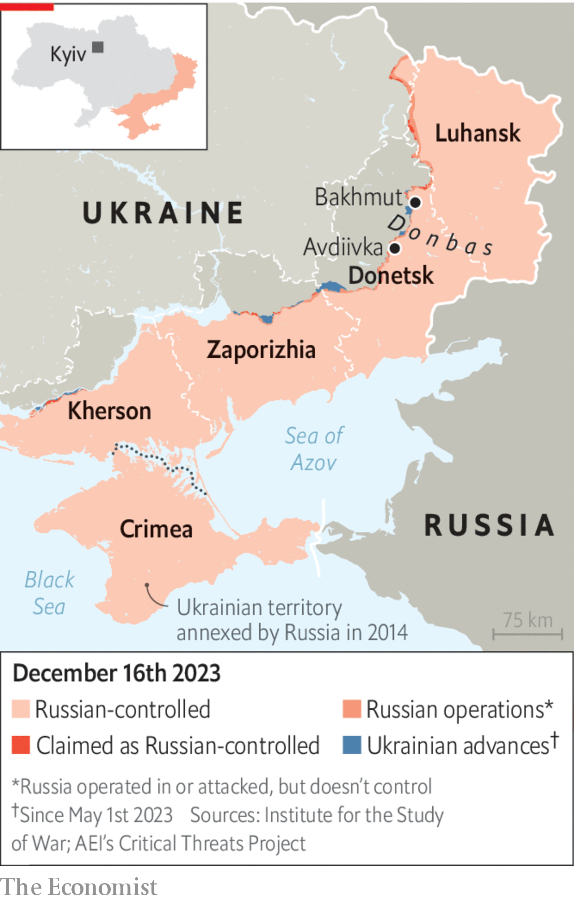image: The Economist
But what lawyers describe as a “deployment lottery” is straining the recruitment process. Army chiefs are struggling to fill places with the willing; some are resorting to conscription raids on gyms and shopping centres. Few of those who are signed up this way make good soldiers. “We’re seeing 45- to 47-year-olds,” complains one senior officer. “They are out of breath by the time they reach the front line.”
Recognising the problem, in September Ukraine’s defence ministry began work on a new mobilisation strategy. Illarion Pavliuk, a spokesman for the ministry, says part of the problem lies in the army’s success: many citizens no longer view the war in the existential terms they did immediately after Russia’s invasion in February 2022. “Some mistakenly think there is someone else who can do the job for them,” he says.
The reforms aim to give those who are wavering more choice: new recruits can, more or less, sign up for a specific position. A new digital register will improve the ministry’s understanding of Ukraine’s manpower resources. There will be a clearer system of rest and rotations. Eventually, volunteers will be mobilised for a finite period, not indefinitely as is the case now.
There are several examples of successful recruitment campaigns into individual units. The 3rd Assault Brigade, created nine months into the war as a branch of Ukraine’s special forces, is perhaps the most visible. Skyscraper-sized adverts in Ukraine’s cities glamorise life as one of the brigade’s stormtroopers, slaying goblin-like caricatures of evil. But no less important is the brigade’s reputation for competent command, good equipment and low attrition rates. New recruits typically undergo months of training, unlike the one-month standard.
Khrystyna Bondarenko, a spokesperson for the brigade, says it has no shortage of volunteers. By the start of next year the brigade will be Ukraine’s largest, she says, at around the size of a NATO division. (Ukraine’s army does not have divisions.) The majority of its new recruits are under 25, and she turns down 150 applications a month from minors. “No one is saying there are millions of people waiting to fight in Avdiivka [a town in the Donbas that has recently seen fierce fighting],” she says. “But there are people you can work with.”
Russia, too, is having difficulty mobilising the troops it needs. Its tactic of hurling vast numbers of men at defended positions, often without proper equipment, can mean daily losses as high as 1,000 men. But the fundamentals point to a gargantuan challenge for Ukraine. With a pool of potential soldiers about four times greater, Russia looks favoured in the long run. In its prisons and poorest areas, joining the army looks rational.
Elsewhere, the Kremlin has been able to meet its minimum needs with secret recruitment for a full-scale war that it still pretends is not happening. If it did need to ramp up its mobilisation the Kremlin would need to admit that Russia is at war. That would not be without political consequences.
Ukrainian critics of the government in Kyiv, meanwhile, charge that the country is only “pretending to mobilise.” Viktor Kevlyuk, a retired colonel who oversaw the implementation of mobilisation policy for the western half of the country from 2014—when Russia first invaded—to 2021, says Ukraine risks falling into a trap. Russia will step up its mobilisation after its presidential election in March is over, he thinks. (HUR, Ukraine’s military-intelligence agency, agrees.)
Vladimir Putin has already signed an edict increasing the size of Russia’s armed forces by 170,000. Colonel Kevlyuk argues that Ukraine must respond with a nationwide mobilisation of industry, government and resources. The often-decadent lifestyles of those enjoying safety in Kyiv need to change, he thinks. “This is not a time for imported smoked salmon.”
Throughout the war Volodymyr Zelensky has resisted the maximalist urgings of his soldiers, much to their chagrin. His top generals have, for example, pushed to lower the age at which non-reservists can be mobilised, which currently stands at 27. Others have proposed a stricter implementation of mobilisation laws.
The president has pushed back partly for political reasons: he does not want to irritate the population unnecessarily. But Mr Zelensky is also driven by more noble concerns. “Zelensky wants to do the right thing by Ukrainians,” says a high-level government source. “He doesn’t want to be a dictator”.
Tough decisions lie ahead. For Colonel Kevlyuk, the army is a beast that must be fed: “We have no choice other than to be bloodthirsty,” he says. But some officials prefer a more consensual approach. The high-level source predicts media campaigns promoting national sacrifice and warning that Russia continues to pose an existential threat. “If we lose, it will be bad for all of us,” he says.
The task is to convince potential recruits. “Conductor”, one of the men deployed to the ill-fated unit in the Donbas, says he is committed to serving his country, “but only in a way that can be useful”. In the meantime he is occupied “24/7” in securing a transfer away from the assault forces. “You can’t just write people’s lives off like this,” he says. ■
A footwear revolution in the world’s fashion capital
Listen to this story.Enjoy more audio and podcasts on iOS or Android.
The high-heeled shoe, popular among men in pre-revolutionary France, is losing favour among women on the streets of Paris. The once familiar click of stiletto on cobble is giving way to the silence of rubber soles. Today fashion writers offer French women advice on “”: heavy, black, grooved-sole footwear. Trainers, once derided in the as an American abomination, are now a daily feature in Parisian cafés and offices. Nearly half of French women, according to a poll, do not know how to walk in high heels. What is going on?
Modern France helped to make the female high heel iconic. Roger Vivier, a French designer, is considered to be the godfather of the stiletto, having designed the (needle) heel back in 1954. He was the first to insert a metal rod into the heel, stiffening its structure and stretching the female silhouette. The brand still calls stiletto heels “tools of unstoppable seduction”. Christian Louboutin, a French luxury designer, gave the 10cm-high heel a twist with his famous red-soled stiletto, a pair of which goes for around €800 ($870).
Today’s disappearing French high heel is explained in part by covid-19 and the way working from home has spread . It may also mark a form of post-#MeToo rebellion. A younger generation is turning against the stiletto’s figure-deforming nature—nodded to in the film “Barbie”, whose star’s feet no longer fall flat when relieved of her heels.
During the festive season the high heel—or at least a block version of it—may be enjoying a revival. But this could be fleeting. On the French high street, the trend seems entrenched. “ That’s over,” says a Parisian shoe-shop manager when asked if she sells many stilettos, waving at the limited range she has relegated to an upper shelf. “Women want comfort,” says an assistant at another store. “What matters is that you can wear flat chunky boots with an elegant dress, and still be chic.”■
Listen to this story.Enjoy more audio and podcasts on iOS or Android.
The EU’s 27 members have spent freely since early 2020 to support their economies and citizens through a global pandemic, a war on their doorstep and an energy-price surge. Back in 2020 richer northern EU members reluctantly signed up to a debt-funded recovery fund worth €806bn ($880bn, some 5% of EU GDP in 2022) that mostly benefits the south and east of the union. But high interest rates have bent these plans out of shape.
At a summit on December 14th and 15th all countries bar one reached an agreement on how to top up the EU budget to pay for more financial support for Ukraine (a pot of €50bn over the next four years), as well as higher interest rates on EU debt and extra support for countries facing a surge in the arrival of refugees. The compromise was less generous than the European Commission, the bloc’s executive arm, had hoped for, but it was enough to win almost everyone’s agreement.
The lone opposition came from Viktor Orban, the prime minister of Hungary. He had just given his tacit agreement to opening membership talks with Ukraine, after the EU released €10bn of funds earmarked for Hungary that had until then been frozen as a punishment for his rule-of-law abuses. His price for approving the larger fiscal package is probably for the EU to unblock Hungary’s remaining and still-frozen €20bn. But his leverage is limited. Ideas being floated to get around his veto include using the European Stability Mechanism (ESM), the euro zone’s bail-out fund which has plenty of spare capacity. If Mr Orban’s bluff is called early next year, he may well fold.
Finance ministers, meanwhile, are still trying to sort out a different fiscal mess. The euro zone’s byzantine deficit rules were barely workable before the covid-19 pandemic. They were too complex, put overly onerous demands on highly indebted countries and led to procyclical budget cuts without making much if any allowance for green investment. When the pandemic struck, the rules were suspended to allow countries to spend freely, and have not been enforced since. With their return due at the start of 2024, they were in desperate need of an upgrade.
The commission had proposed rules that would give it more power and that would stick less slavishly to numerical targets. Countries would agree to adjustment plans to bring down debt and commit to investments and reforms that would boost growth. But Germany wanted to require countries to lower their deficits and debt by set minimum amounts each year. As went to press, France was expected on December 20th to give in, after much back and forth, under the rather self-serving condition that these new measures would not fully apply before President Emmanuel Macron’s term is over.
Over-prescriptive rules can indeed be a problem, as Germany itself illustrates. In November its constitutional court ruled various accounting gimmicks to be illegal under the country’s strict deficit rules. The governing coalition has since then put together budget cuts and tax increases to plug the gaps—at a time when Germany’s economy is stagnant and the country should be investing heavily. Sometimes, muddling through is not enough. ■
At Christmas, Europeans look less united than ever
There is no single market for how to celebrate the holidays
Listen to this story.Enjoy more audio and podcasts on iOS or Android.
Never call a Swede as the sun sets—absurdly early—on Christmas Eve. For at 3pm the country collectively stops in its tracks to watch a bit of televisual lore. Since 1959 the public broadcaster there has served up much the same hour-long show of Donald Duck and other vintage Disney cartoons to the nation’s children and their nostalgic parents. Despite being over six decades old, , as it is known, is among the most-watched shows of the year. Such is its centrality to celebrating Christmas that Swedes living abroad were once known to smuggle versions out on VHS tapes; now YouTube serves up the antique quacking on demand. Sitting down to watch old American cartoons has become as archetypally a part of Swedish national culture as extended paternity leave and couples having blazing rows at IKEA.
New dads getting time off and flatpack marital strife have long since become a pan-European phenomenon, if not a global one. By contrast the Christmas traditions dear to Swedes have remained firmly national affairs, shared only with a couple of Nordic neighbours. A political scientist yet to sign off for the holidays would find much to ponder here. Even as Europe has come together in myriad ways—a common currency across much of the continent, a single set of EU parliamentary elections every five years, a shared horror at the prospect of a second dose of Trumpism—its most intimate moments seldom cross national borders. For much of the year Europe looks like a continent melding into a union, one set of chemicals regulations at a time. But when it comes time to unwind during the festive season, Greeks, Italians and Lithuanians retreat into their national cocoons.
Beyond a decorated fir tree, twinkling lights and children tearing into gifts, little else is common at Christmas. For God-fearing Poles and Portuguese the birth of Jesus is at the heart of the whole affair; not so for secular Danes and Czechs. (In all circumstances, supposedly Christian celebrations borrow heavily from pre-existing pagan rituals to mark the winter solstice.) Even the date on which Christmas is celebrated varies. Orthodox Christians in the east often mark the day according to the Julian calendar, on January 7th. For those of the Gregorian persuasion, the split is between feasting on the evening of the 24th, as many northern Europeans do, or the day of the 25th, more typical in the south of the continent. The decision can come tinged with geopolitics. Ukraine used to be a January 7th country, alongside Russia. This year it changed by law to become a December 25th one, in line with the EU countries it hopes to join.
To focus on the day of Christmas itself is to ignore the vital run-up and its aftermath. December 5th is a meaningless date to Portuguese or Irish children. But for Dutch ones (and Belgians, Luxembourgers and others a day later) it marks the all-important visit of Saint Nicholas—and an early trove of presents for children thoughtful enough to leave a carrot in their shoes for his horse to munch on. Scandinavians mark the feast of Santa Lucia a week later, with processions of singing youths, one of whom wears a precarious crown of lit candles. The French have one last dose of gluttony on January 6th, when the three wise men arrived in Bethlehem, with a , an almond-flavoured cake featuring a hidden porcelain charm. On the same date a witch known as La Befana, a mostly unknown acolyte of the trio, delivers yet more goodies to kids in Italy. Her broom-flying powers apparently do not extend to reaching neighbouring Austria or Slovenia.
Europeans keen to mesh their continent into one ever-closer union are likely to conclude their neighbours are a touch weird. Catalans in Spain feed a hollowed-out log for two weeks before inducing it to poop out small presents on Christmas Eve. Poles and some other central Europeans prepare a table with a spare setting, to symbolise those that could not make it home, or might unexpectedly pop by. Brits attend pantomimes, theatrical performances at which Z-list celebrities (“Oh yes they are!”) indulge in cross-dressing and try to rile up the audience (“Oh yes they do!”). Swedes burn an oversized straw goat. Angela Merkel, then Germany’s environment minister, once used Christmas as an opportunity to show off her housewifely thriftiness by being pictured ironing soon-to-be-reused sheets of wrapping paper. Her fellow Germans on New Year’s Eve watch , a black-and-white piece of British slapstick comedy that few Brits have ever heard of.
No place like home
Does this cacophony of celebrations matter? The EU’s motto is “united in diversity”; the idea is to allow for a wealth of national customs to co-exist peacefully. Even the most standardisation-mad Eurocrat would hesitate to devise a single menu or television schedule. What little Yuletide harmonisation exists comes from two sources Europeans usually resent. One is Germany, which gave advent calendars, decorated trees and quaint Christmas markets to its neighbours (before invading them repeatedly). The other is America. Although Swedes watch Disney cartoons, much of the rest of the continent sits down in front of .
Elie Barnavi, an Israeli historian, once bemoaned what he called the “frigid Europe” method of EU integration: a continent whose leaders have focused on converging all that is economic and rational, but gave little thought to the cultural and the heart-felt. That approach means the countries in the EU are good at trading widgets or building border-crossing motorways, but their people still think of the rest of Europe as a place that is not really home to them. Can a continent whose people share no affinity in celebrating their most important holiday ever be said to be a true union? Charles de Gaulle quipped that it was impossible to govern a country blessed with 246 types of cheese. Building a continent with so many Christmas traditions will be harder still. Something to reflect on as the Poles enjoy their carp, the French their , Swedes their eels and the Greeks some stuffed cabbage leaves. ■
Read more from Charlemagne, our columnist on European politics:
The parable of Andy Street, the mayor for the West Midlands
Britain’s second-tier cities are too constrained from above and below
Listen to this story.Enjoy more audio and podcasts on iOS or Android.
Andy Street’s management tips are conventional enough. As the boss of John Lewis, a high-end department-store chain, he was “obsessed with the details’‘ and taught his 70,000 employees that “every interaction matters”. The method seemed to work: sales rose by 50% in his decade in charge from 2007. In 2014 , a trade magazine, named him “Britain’s most admired leader”.
Since 2017 Mr Street has turned to a tougher task: running the West Midlands Combined Authority (WMCA). The region spans three cities—Birmingham, Coventry and Wolverhampton—and almost 3m people. It is Britain’s most populous urban area after London. Fifty years ago it was an industrial powerhouse, churning out more than 1m cars a year. Its fortunes have since slumped. In September Birmingham council, the largest of seven within the combined authority, went bust.
Along with Andy Burnham in Manchester, Mr Street is the most high-profile figure in an experiment in English devolution that now extends to ten cities and regions. A moderate Tory, he has squeezed money from Conservative-run ministries. His business career makes him an ideal interlocutor for investors (“he speaks our language”, gushes one attendee at a meeting with housebuilders, architects and investors in Wolverhampton earlier this month). His pragmatic, consensual style has proved popular with voters. They probably could not have hoped for a better-equipped first mayor. And yet he has barely begun to move the dial.
The productivity of the Birmingham urban area is 14% below the national average. It has hardly budged in two decades. Economic inactivity is higher than almost anywhere in the country. Investment has increased since Mr Street took over. But success is spotty. Many boroughs are run down and cut off from opportunity. Whereas Barcelona, Hamburg and Lyon help to propel their nations’ economies, Britain is held back by the weakness of its second-tier cities.
The West Midlands’ first problem is that it is constrained from above. Take public transport. In September Birmingham’s tram line was extended: sleek blue-and-grey carriages run every ten minutes or so from Wolverhampton to Edgbaston. Yet that upgrade had been discussed for almost two decades; and almost everywhere else remains poorly connected. Three-quarters of people drive to work; the city is even more jammed than London. Those without cars rely on snail-like buses.
Local politicians are not blameless: almost all, including Mr Street, reject the idea of a congestion charge. But cities outside London have been starved of the funds needed to benefit from agglomeration. Half of graduates living in and around Birmingham cannot commute to the city centre within 45 minutes, according to the Resolution Foundation, a think-tank.
Mr Street has gradually won control over funds for transport, housing and adult skills. But his entire budget is still just £880m ($1.1bn), a rounding error in a Treasury spending review. Because Britain’s mayors have little ability to raise their own money, nearly every pound must be solicited—Mr Street calls this “begging-bowl politics”. In Lyon, which has four metro lines and six tramways, the transport authority alone has a budget similar to Mr Street’s; half of it is raised through local taxes, says Tom Forth, a transport wonk.
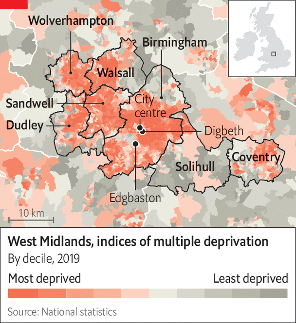image: The Economist
Mr Street is also constrained from below. Seven local authorities—Birmingham, Coventry, Dudley, Sandwell, Solihull, Walsall and Wolverhampton (see map)—agreed to create the mayoralty in 2016. They did so with the proviso that they would hold onto power themselves. Each has a place on the combined authority board; many decisions need two-thirds approval. The councils also kept a grip on planning policy, the critical lever for determining land use. The mayor’s office was designed as a “big tent with nothing in it”, says Max McLoughlin, leader of the Greens on Solihull council.
Mr Street gamely talks up the benefits of “collective endeavour”. In reality the region is often less than the sum of its parts. In 2018 the Labour-run councils in the WMCA blocked Mr Street from using his main revenue-raising tool, a “mayoral precept” that would be levied on top of council tax (he has not tried again). A plan to reopen a commuter line connecting Birmingham’s suburbs with the city centre has been complicated by Birmingham council’s decision to sell off adjacent land.
Large cities should link dense housing to jobs via mass transit. Mr Street’s lack of control over spatial planning makes that hard, says Paul Swinney of the Centre for Cities, a think-tank. In pushing brownfield development the mayor has made a virtue of necessity: several councils have blocked the kind of building on the green belt that might attract commuters. Four of the seven local authorities have not brought forward for development enough land to keep up with housing needs.
The design of the WMCA causes other problems. In October it won the right to create an investment zone where firms will benefit from tax breaks and direct funding. To keep everyone happy the goodies have been split among three sites, reducing the benefits of clustering. Forging a new institution was always going to be tough. Unlike Barcelona or Hamburg, Birmingham was never a true second city with a regional government, points out Richard Vinen of King’s College London. Nor is “West Midlander” a cohesive regional identity.
And if one of Mr Street’s successes has been sweet-talking investors, the woeful state of Birmingham council could sour things. Facing a £760m (£960m) bill for a long-neglected equal-pay claim, the council will begin slashing services and selling assets next year. A shoddy IT system means councillors cannot even see how broke their administration is. The mayor has been urging businesses to “keep the faith”.
Turning around a region that has struggled for four decades was always going to take time. Walk around and you will see pockets of success. Birmingham city centre is clean and vibrant: Goldman Sachs, HSBC and Deutsche Bank have opened or expanded offices since the pandemic. HS2, a high-speed rail line, has already brought investment; Mr Street still hopes that a northern connection to Manchester, binned by Rishi Sunak, will be built.
In Solihull advanced manufacturing is growing despite Brexit. In Digbeth a creative quarter is booming, centred on a studio opened by the creator of “Peaky Blinders”, a show about Brummie gangsters. “The bits of the economy that were doing well are doing a bit better,” says Adam Hawksbee, a former adviser to Mr Street now at Onward, another think-tank. In October Messrs Street and Burnham secured a big concession from Whitehall: the right to be treated like a department with a single budget, rather than having to bid for money from dozens of different funding pots.
Yet patience and attention to detail will not be enough. For Britain’s second-tier cities to be transformed, they will need greater control over spatial planning and, in particular, the ability to raise more money locally. Only then will they have the means to become more productive and the incentive to grow. Mr Street is running for a third term in May. But to make a real difference, he needs more power. ■
Peter Bone is the latest politician to succumb to a recall petition
Listen to this story.Enjoy more audio and podcasts on iOS or Android.
The british constitution is an adaptable thing. Today’s innovations can fast become a familiar part of the landscape. Take recall petitions, a device introduced in 2015 whereby locals can vote on whether to fire their MP and force a by-election.
One such petition has just been held in Wellingborough, a town in Northamptonshire. It felt much like a municipal election. Locals headed to one of nine polling stations, signed a piece of paper and put it in a ballot box. On December 19th it was announced that 10,505 signatures had been collected—13.2% of the electorate, more than the 10% needed to fire Peter Bone, the seat’s Tory MP. A by-election will take place next year; Mr Bone is eligible to run again as an independent.
Recall petitions were brought in by David Cameron’s coalition government to help clean up politics after the MPs’ expenses scandal. A petition is triggered if MPs receive a prison sentence (they are automatically booted out if they are locked up for more than a year), are convicted of fiddling their expenses or get suspended from the Commons for more than ten sitting days after a disciplinary investigation.
In Mr Bone’s case, he had long been regarded as an eccentric backbencher—someone obsessed with the EU and the BBC who would raise questions in Parliament on behalf of “Mrs Bone”. A report by a parliamentary watchdog into the treatment of a member of staff cast him in a much more sinister light. He allegedly walloped his assistant over the head when displeased; he would ask for massages, the report said, and exposed himself on a trip abroad. The report found him to have been bullying and sexually inappropriate; MPs voted to suspend him for six weeks. Mr Bone says the claims against him are false and the investigation procedurally flawed.
The trickle of people going to the polling station at the Castle Theatre on December 18th did not suggest a town in uproar. Most had made up their minds on Mr Bone long ago. “He’s made us look quite foolish,” said Lorraine Redden, a Labour voter. Madeleine Robinson, a 19-year-old student, was pleased to be casting her first ballot to fire Mr Bone, whom she never liked.
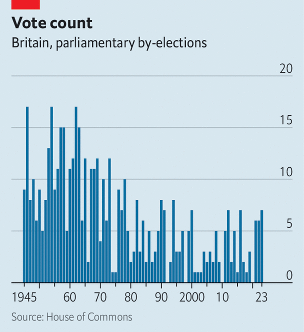image: The Economist
When recalls were introduced, some critics said the scheme was too onerous to be effective. Instead, recall petitions have become a bit of a fixture. Wellingborough’s is the fifth since 2016; all but one has resulted in a by-election. Another four MPs quit the Commons before a petition could be organised against them; they included Boris Johnson, a former prime minister. The number of by-elections each year is still far below post-war highs, when unhealthy MPs often died in office (see chart), but recalls have prompted several recent by-election blows to the Tories.
The rise of recalls reflects a subtle change in the nature of an MP’s lot. Historically it was seen as a public office, with MPs fulfilling the role more or less as they saw fit and answering to voters every five years. Increasingly, it is seen more like a salaried job, with MPs scrutinised by something akin to a human-resources department and fired if they fall short. If Labour wins the next election, this professionalising trend will continue: the party wants to ban MPs from holding “second jobs”.
Recall petitions have another effect: they tip by-elections in favour of challenger parties. The six-week petition period gives them a head start. They can canvass locals and boost the profile of their candidate while the hapless incumbent can only sit tight and hope the petition fails. During the recall earlier this year of Margaret Ferrier, a Scottish National Party MP who breached covid-19 rules, Labour hoovered up potential voters’ data with an e-petition called fireferrier.com and won the subsequent by-election.
Another recall petition now looms in Blackpool South. Scott Benton, its Tory MP, was recently caught in a cash-for-influence sting by a reporter pretending to be a gambling lobbyist. Mr Benton is appealing against a 35-day suspension. For the Tories, recalls mean bad memories. ■
Soldiers helped to spark the Victorian beard craze
Listen to this story.Enjoy more audio and podcasts on iOS or Android.
“It is time to modernise,” was the message from Grant Shapps, the defence secretary, in an interview with earlier this month. Mr Shapps was talking not about weaponry or strategic doctrines, but facial hair. The Army Board, a management committee for the service, is pondering whether to end a century-long ban on beards for soldiers.
At present serving soldiers are usually allowed to grow a beard only with the permission of their commanding officer; such permission is typically granted only on religious grounds. There are a handful of other exemptions. The Goat Major—actually a corporal—who tends the Royal Welsh regiment’s goat is allowed to have facial hair. So is the goat, which is technically a lance-corporal. (Britain is like this.) Everyone else is expected to be clean-shaven.
The Royal Navy, plainly a bunch of woke progressives, has long embraced (full) beards; the Royal Air Force has allowed them since 2019. Army traditionalists have no truck with such nonsense. “I do not think a group of men marching with beards looks nearly as smart as a group without,” harrumphed a retired colonel in the recently. The morning wet shave “adds to fighting spirit”. Some argue that beards impede the effective use of gas masks, although there is little concrete evidence for that assertion.
The British army has not always been pogonophobic. Indeed, soldiers helped to usher in the Victorian beard craze of the 1850s to 1880s. During the Crimean war in the mid-1850s, a ban on beards was relaxed due to the extreme cold weather and the difficulties of shipping in shaving soap. This conflict was also the first to be extensively photographed. As images of whiskered soldiers were transmitted back to Britain, full beards, which had been out of fashion since Tudor times, became associated with martial virtues. By 1860 the army was actively requiring moustaches.
According to Alun Withey, a historian at Exeter University, this happened at a time of growing worry that “British men were becoming weedy as more and more of them were working in offices”. Nothing could be more manly than facial hair.
Many also believed that not shaving offered health benefits. In 1854, more than 400 members of the Dublin police force petitioned to be allowed to join the beard movement on the ground that “almost all, if not all, diseases of the respiratory organs are in great part, if not altogether, caused by the practice which obtains of shaving off the beard.” Beards were even thought to bring productivity gains. An article in the in 1861 calculated that America lost 36m working days each year to shaving.
Prior to the 1850s beards had been a rarity in Britain. Now bristles sprouted everywhere. The full-bodied “cathedral” or “patriarch” beard, of the kind sported by late Victorian statesmen, was the favoured style of the elites. Beard fashion spread to the lower social classes, too. For a research project, Dr Withey studied the photographs of prisoners at three Victorian jails, taken soon after their arrest, and found that 58% had some form of facial hair. Almost three-quarters of their beards were “chin straps”—long sideburns meeting underneath the chin, without a moustache.
The beard craze petered out in the 1890s as fashions shifted, better razors became available and doctors took to warning against facial hair (a damp beard was thought to spread germs). Beards became the preserve of older men as the young rejected the fashions of their fathers. The army was slower to adapt. The requirement for moustaches lasted until 1916; some regiments maintained a stockpile of artificial ones for those unable to grow their own. Only the recruitment of ever younger men during the first world war, and fears about the close fit of gas masks, led to the regulations being reversed.
A decision on whether to allow beards again is expected soon. Mr Shapps thinks it is “ridiculous” that the army is turning away potential recruits because of facial hair. The Victorians would agree. ■
What the world’s darts championship says about Britain
Listen to this story.Enjoy more audio and podcasts on iOS or Android.
For two weeks from mid-December, a walk up the hill to Alexandra Palace, a venue in north London, is a trip through a lager-soaked fever dream. At one point a squad of human traffic cones waddles past. Next comes a gaggle of men dressed as condiments. At a bus stop, four judges wait for the next W3 service.
The Professional Darts Corporation (pdc) world darts championship has become an end-of-year institution, a debauched collision of fancy dress and elite sport. For a fortnight each year, a corner of the British capital is transformed into a place where it is always 11.30pm on a Friday night. Inside the venue a confused bottle of Heinz tomato ketchup looks for his seat. Two monks hurry by, carrying eight pints between them. On stage a first-round match between Stowe Buntz, a goateed American, and Kevin Doets, a Dutchman, takes place in front of a semi-oblivious crowd. Before long, a chant begins. Oompa Loompas, nuns and traffic cones stand up, arms wide, and yell: “Stand up if you love the darts.”
Darts sits squarely in the middle of Britain’s banter-industrial complex—the laddish industries of drinking, gambling and sport that have found a profitable niche and infuse the country’s culture. At “Ally Pally” the darts is a melting pot, albeit still a very male one. “Where else would a young plumber or banker rub shoulders with. . . Prince Harry?” wonders Barry Hearn, the sports impresario who turned the championships into a juggernaut, in his autobiography. At the darts men from all levels of society rub together—just blokes in fancy dress in a peculiarly long queue for a toilet cubicle, even though urinals are free. Banter is the great leveller.
Mr Hearn likens darts to “working man’s golf”. Alexandra Palace feels more like a working man’s Wimbledon. Both offer class tourism. At Wimbledon everyone pretends to be posh; at the darts accountants pretend to be massive lads. For strawberries and cream during a fortnight of sport on the telly in the summer, substitute a 29-year-old dressed as a traffic cone during a fortnight of sport on TV in the winter. Each offers the same form of escape.
Unlike the tennis, however, this is not an event for purists. Darts is a sport doused in irony and then dipped in lager. It has always had a natural bathos, given that it involves throwing a 20-ish gram dart at a target 237cm away. It manages to be at once difficult, dramatic and fundamentally unimpressive. The sport leans into this contradiction. Each player has a nickname and entry music, aping professional wrestling. “Rapid” Ricky Evans, a player built for comfort rather than speed, emerges to the soundtrack of “Merry Christmas Everyone” by Shakin’ Stevens; he wears a shirt with a large cartoon of himself as Santa. The competition is almost incidental. In a queue containing a bearded nun, a pair of Ali Gs and a man dressed as a jockey, the only person to attract strange looks was a man wearing a replica shirt of Joe “The Rockstar” Cullen, the world number 14.
Yet the sport is stronger than ever. Big money helps. Top players can earn millions over the year. The eventual winner of the title at Ally Pally will take home £500,000 ($635,000). The pdc started life as a breakaway organisation in 1992, attracting players who felt underappreciated and, more importantly, underpaid by the more stuffy British Darts Organisation. (The Premier League, England’s top-flight football league and the country’s most successful cultural export, began with a similar logic the same year.) Greed has been good for both sports. The more people pay, the better the contest; the better the contest, the more people will pay. Sky Sports once paid £100,000 for the rights to televise darts; now it costs them about £10m per year. With an audience of 4.5m last year, Sky Sports’ viewing figures during the tournament will be bettered only by the Premier League. Banter sells.
To the naked eye, darts is a dreadful spectator sport. At 45.1cm in diameter, the board is practically invisible from the back of the hall, never mind the darts themselves. The sport becomes spectacle only on television. In Alexandra Palace the throng watches on big screens, making the venue a bit like the world’s drunkest living room. Without the crowd, however, the show would not work. The organisers know this. When a man dressed as a princess accidentally poured a pint over someone dressed as Toad from Super Mario, the moment was shared by the pdc’s official social-media accounts: “Only at the darts.”
The lad economy
Like any canny business, the banter-industrial complex is alive to changing social mores. In 2016 a former world champion was sacked from a commentary gig after a rant about victims of an abusive football coach. “I would have went back and sorted that poof out,” he wrote. “Dart players tough guys footballers wimps.” In 2023 a “kiss cam” started out as a firmly heteronormative exercise, zooming in on the few women in the crowd; it ended with two men in sombreros in a passionate embrace to roars of approval.
A predecessor tournament was known as the Embassy, after its cigarette sponsor. Players received a stipend of 200 cigarettes per day. Now the sport’s premier event is plastered with warnings about prostate cancer. Paddy Power, the bookmaker sponsoring the jamboree, is donating £1,000 to a prostate-cancer charity for each 180 (the maximum possible score for three darts). Players implore watching 50-something men to go for a test (“And speaking of checkouts, here’s another checkout that all us men should do”). From Big Tobacco to Big Prostate in a generation.
Only tighter regulation can threaten Britain’s banter-industrial complex. A sport synonymous with drinking and supported by bookmakers is a little anachronistic in an era in which “public health” concerns and environmental, social and corporate governance investing are in vogue. But other enjoyable sins are determined to avoid the same fate as tobacco. And even the most puritan of politicians are leery of pursuing popular industries. Lucky everyone loves the darts. ■
Read more from Bagehot, our columnist on British politics:
The planet’s biggest conservation project is in South Sudan
|
NYAT, KASSANGOR AND OTALLO
As the helicopters whizz above the savannah eagles, storks and vultures swoop away from the scything blades. Voices on the intercom joke about the best height to avoid machine-gun bullets. Through the open doors the emerald hue of the plains seeps towards the horizon. In the grass there is life in abundance: lions, cheetahs, giraffes, baboons and, most of all, white-eared kob, the dainty antelope whose annual treks may be the biggest land migration of any mammal on the planet. To try to find out, a vet dangling from a chopper fires a tranquilliser dart at a kob’s rump, then leaps out to attach a collar. The scene is part “Apocalypse Now”, part “The Lion King”.
This is one of Earth’s largest intact ecosystems, in an area more than twice the size of Portugal. Yet no tourists come here, for it is in South Sudan, the world’s newest country—and one of its most dangerous.
200 km
Sudan
South Sudan
Ethiopia
White
Nile
Otallo
National parks
Boma
Nyat
Kassangor
Badingilo
Juba
Uganda
Kenya
Congo
South Sudan had a painful birth. It broke away from Sudan in 2011, and quickly plunged into a civil war that cost perhaps 400,000 lives (out of a population of 11m). That conflagration ended in 2018 but local conflicts smoulder. Since April a new civil war in Sudan, to the north, has driven refugees south, piling on misery. South Sudan is the world’s least developed country, says the United Nations. Life expectancy is 55, about the same as it was in America a century ago.
“There are a lot of negative perceptions,” concedes Rizik Zakaria Hassan, the minister for conservation and tourism. “That killing is rampant, that everyone is holding a gun.” Such pessimism is overblown, he argues; conflict remains “just in a few pockets”. Today South Sudan has a new story to tell.
Video: African Parks
A year ago African Parks, an NGO, began a stunningly ambitious project. Under an initial ten-year deal with the government it will try to protect an area of 200,000km2, stretching from the White Nile in the west into Ethiopia in the east. To succeed, it must also bring benefits to the people who live there.
That will be hard, given South Sudan’s history. The area now within its borders was plundered by the Ottomans, neglected by the British and subjugated by Sudan, whose Muslim, Arabic-speaking rulers oppressed and enslaved black African southerners. In 2011 99% of South Sudanese voted for independence—a share beyond the wildest dreams of, say, Scottish nationalists.
But what did independence mean to people? There was little sense of a national identity—the country’s 60-odd tribes were paramount. Nor was there much of a state. Many South Sudanese still rely on aid for food, health care and education. When the pope visited Juba, the capital, in February the government tarred a few roads—but only along his route. Drivers now ask customers if they want to take the “Pope road”.
Oil, which supplies more than 90% of state revenues, has fuelled vast corruption. Politics is a violent marketplace, with groups using force or the threat of it to grab a larger share of the petrodollars. President Salva Kiir’s government endlessly tries to fight or pay off factions. The country has five vice-presidents and, by one count, more generals than America.
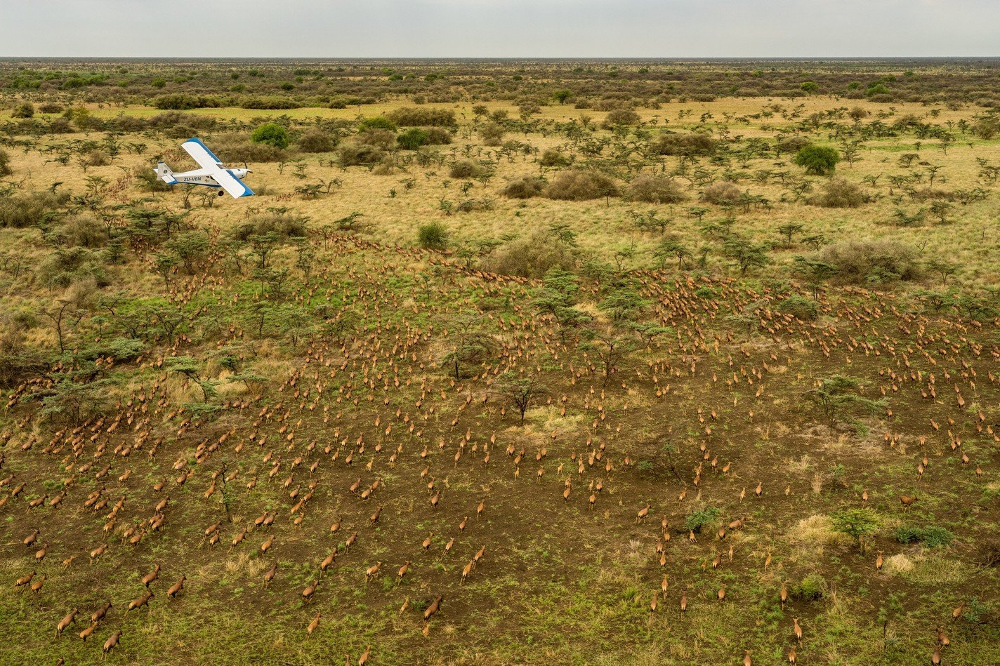
Image: Marcus Westberg
“After the wars broke out everything collapsed, including the wildlife,” says Khamis Adieng Ding, the director-general of the wildlife service. “When people fight they need something to eat.” Yet many areas were relatively unscathed. These include Badingilo and Boma, two national parks that are part of African Parks’s mandate. War is not always as bad for animals as it is for humans. It has curbed development, which means no roads for commercial poachers or loggers.
In Boma, earlier in 2022, African Parks was finding out which species were left—and in what numbers. Every morning Richard Harvey, the vet, would fire the darts from a helicopter, and hurtle out into the bush to collar animals. He chased an obstreperous eland for half a mile, dodging its horns like a khaki-clad matador. “If the lion comes at us, run to the chopper,” he advised, before jabbing a sedated male.
African Parks is astonished by what it has seen. Gobsmacking numbers of big cats; millions of antelope. A survey to be published in 2024 is expected to confirm that the kob migration is the world’s largest by land mammals, greater even than the famous trek of wildebeest over the Serengeti. Vast raptors, lacking exposure to man-made poisons, have survived in enormous numbers. What look like snow-capped hills in Boma are actually cliffs covered in vulture droppings. And whisper it: some conservationists suspect that northern white rhinoceroses, assumed to be functionally extinct, are chomping away in the bush.
“This place is very, very special,” says David Simpson of African Parks. “This is what the world used to be like; it is the only place that has these numbers of wildlife.” He adds: “We have a huge, huge responsibility...to save this place.”
Eyes on the prize
Doing so will be the ultimate test of African Parks’s model. Since it was founded in 2000, several governments have outsourced the running of their parks to the NGO. It raises capital from donors such as the EU and philanthropists like the Walton family. The group trains rangers, sharpens management and looks for ways to generate income, such as agriculture and tourism. After five years running a park it reduces poaching by 70% on average and increases wildlife numbers by 50%, it claims. It does this in places as poor and fragile as Chad, where it revived elephant numbers and built a luxury lodge. Mr Risik believes that rich tourists will one day flock to South Sudan, too.
That remains a way off. First, African Parks must win over hundreds of thousands of people who depend on the animals for their food and livelihoods. Locals have a profound sense of ownership over the land, even if they have never heard of a title deed. And they are sceptical of do-gooders and the state.
Your correspondent flew from Nyat and, after a comfortable night in a mud hut, met the king of the Anuyaks, a local tribe, in his kraal in Otallo, a village in Boma. Akwai Agada Akwai Cham Gilo sat atop skins of big cats and kob. Dressed in a leopard-skin shawl, he caressed a rusty shotgun, smiling as he explained how it was captured a century ago from the British.
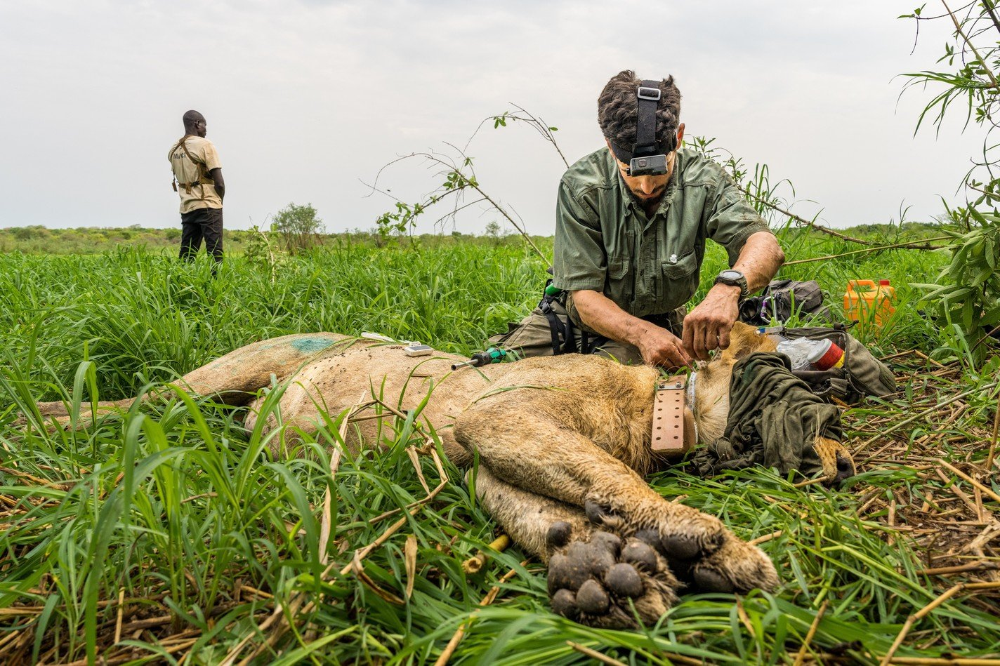
Image: Marcus Westberg
Mr Akwai is surely the only former employee of Fine Impressions, a Minnesota-based envelope manufacturer, to reign over a South Sudanese tribe. He was a refugee in America, but after the then king, his half-brother, died in 2011, he picked up the crown.
His time outside South Sudan has given him perspective. He cites three main challenges. The first is education. There are no paid teachers at the primary school, where scores of pupils cram into classrooms hoping that volunteers from the village will turn up. The second is health care. The clinic in Otallo offers little save for nutritional sachets. The third is a lack of clean water. There is a pump in the village but demand is such that people camp out in the queue overnight.
Later that day Meet Ojwok Lero, a local leader, gives a tour of the village, gingerly stepping past huts seemingly floating on mud caused by heavy rains, through plumes of smoke rising from fish charred by burning dung. “The problem is we’re not connected,” he says. There is no phone signal, no internet, no paved roads, no grid. “This is the 21st century but it might as well be the 18th,” he adds, pointing at children heaving hoes.
Hunger for development poses a challenge for African Parks. It is neither an aid agency nor the UN; its mandate is to protect the parks. Infrastructure would bring modernity closer to indigence, but also to wilderness. A road north from Juba has encouraged deforestation as trees are felled to make charcoal for cooking. Plastics have polluted the Nile.
Another challenge is the rivalries among the tribes. Competition for resources and, in some cases, decades of intercommunal violence, have entrenched divisions. Near the clinic in Otallo Dimuy Owiti tells how two years ago she was walking home when three Murle, members of a neighbouring tribe, ripped her three-year-old daughter from the shawl in which she was cradled. “This is the culture of the Murle,” she says. “If you don’t kidnap a child, you’re not a true Murle.”
In private Murle admit that their tribe snatches children, but point out that their own children are snatched, too, and that kids can be exchanged for cattle, with a young girl fetching 20 cows. Violence is part of life’s backdrop. In 2023 Anuyak launched an attack in Nyat, ostensibly in reprisal for child kidnapping. Perhaps 15 people died (the true tally is unknown).
Video: African Parks
African Parks hopes that if it helps locals set up businesses, they will have less cause to poach or to steal each other’s cattle and children. Encouraging day-to-day contact—having Murle and Anuyak work together as rangers or spotters—may help break down suspicions and ease animosity.
However, the idea that a Western NGO can bring order and prosperity to poor parts of Africa—while stewarding millions of acres of land—has raised inevitable criticisms. Environmental activists and left-wing academics liken the notion to “green” colonialism.
Conservation in Africa does have a dark side. Indigenous people have sometimes been evicted to make way for foreigners who want private reserves. In 2022 Maasai in Tanzania lost a court battle against their eviction by the government, which reportedly wants to allow a firm backed by Emirati royals to open a luxury hunting lodge. Some conservation charities seem to care more about elephants and pangolins than about the Africans who live among them.
Yet not every conservationist is the same. African Parks is in some ways more like a substitute for the state than an animal-saving charity. “Logically we might not want any more development,” notes Mr Simpson. “But that is neither feasible nor moral.” He adds: “In the traditional idea of conservation it is either people or wildlife…but the people depend on the wildlife. It’s about the interface between them.”
Image: Marcus Westberg
African Parks seems to have made a good start. In Kassangoro, another village in Boma, Natabo Abraham, a leader of the Jiye group, says that no organisation that has worked in his area is as inclusive. Some aid workers may fly in and out to open projects that run out of funding within a year, but villagers in Otallo say African Parks is not like that. Its staff are happy to rough it, and often stay overnight.
South Sudanese yearn for a success story. They want their country to be known for something other than killing. For King Akwai it is obvious that protecting animals can also help his people. Asked about the white-eared kob, his eyes light up. “My favourite animal: we depend on them, we love them. Our children are born on their skins.” Unlike oil, which has enabled graft and misrule, “The kob is a renewable resource,” he adds. “We need the animal for future generations. The kob was created by God for us.”■
This article appeared in the Christmas Specials section of the print edition under the headline "Guardians of Eden"
Many Trump supporters believe God has chosen him to rule
The Economist tries to find out why
Listen to this story.Enjoy more audio and podcasts on iOS or Android.
Say the word “apostle” and people think of stern, halo-crowned men with names like Peter or John. Not a bloke called Greg from Mississippi. Unlike the first apostles, who were partial to robes if stained-glass windows are anything to go by, Greg prefers jeans and cowboy boots. Another difference: Greg did not attend the last supper. He is very much alive.
An affable, burly man with a shaved head, Apostle Greg Hood can often be found at the premises of an organic, gluten-free snack-food company in Franklin, Tennessee. Mr Hood runs his ministry and school, Kingdom University, from this warren of offices; the owners of the snack-food firm are friends.
On a recent Friday night, he stands behind a lectern in a repurposed garage at the back of the building. Mr Hood is teaching a class on the theology of his sect, a charismatic Pentecostal movement bent on making America a Christian nation. Behind him are a whiteboard and signs advertising the school’s various “colleges”: business, government and “kingdom studies”.
His 15 students are a mix of black and white. Most are middle-aged and insulate themselves from the air-conditioning with shawls and flannel shirts, but a few are young women in ripped jeans. They sit at folding tables, with textbooks, laptops and tiny plastic goblets containing a few drops of communion wine. A camera on a tripod streams the seminar to people watching online. The class opens with a prayer and the strange, sibilant sounds of students speaking in tongues.
“We have learned that Jesus did not come to give us a religion, right?” Mr Hood says. “He only promised us a kingdom.” As he quotes from the gospel of Matthew, students flip open their Bibles to the relevant passage. “Our father, who art in heaven, hallowed be your name.” Mr Hood asks the class to complete the verse. “Your come?” “Your kingdom come,” the students say. Mr Hood nods his head. “Your kingdom come—and your will be done, on earth as it is in heaven.”
In a folksy tone, Mr Hood gives this familiar verse an unusual gloss. “God’s not religious. He’s a government man, if I can put it like that,” he guffaws. “He’s a king, a ruler.” His authority does not end at the church gates. It flows through the halls of government, too.
Or at least, it ought to. America was founded as a Christian nation and is destined to become one again. This does not mean “that we are looking to take over the government.” But believers must elect “righteous” politicians courageous enough “to shake all the structures that are not kingdom, to dismantle these structures.” That might mean voting for somebody who isn’t a churchgoer. “I don’t necessarily want a Christian president...We don’t need a Sunday-school teacher. We need a bull in the china shop,” says Mr Hood.
“We got one,” says a student wearing a baseball cap with a cross on it. “Amen,” agrees Mr Hood.
For years scholars have tried to explain why conservative Christians so avidly support Donald Trump, a man who is more intimately acquainted with the seven deadly sins than the contents of the Bible. Some chalk it up to Mr Trump’s conservative policies. (He appointed the judges who gave back to the states the power to ban abortion.) Others think they share Mr Trump’s nostalgia for America’s past—an era when white Christians dominated the country. Yet another factor may also have played a role: the belief that Mr Trump was anointed by God to lead the country.
In 2016 a self-styled prophet named Lance Wallnau had a vision: the next president would be a latter-day Cyrus, the Persian emperor who, though not Jewish, was chosen by God to free the Jews from captivity. Mr Wallnau proclaimed Mr Trump, then a Republican candidate, the Cyrus of his dreams. The message was, even though he is not evangelical, “Trump is sent by God to deliver conservative Christians back from cultural exile,” says Matthew Taylor of the Institute for Islamic, Christian and Jewish Studies in Maryland.
Mr Wallnau and Mr Hood are leaders of a Christian revival known as the apostolic movement or New Apostolic Reformation (NAR), which emerged in the 1990s. (Mr Hood denies belonging to the NAR yet espouses its beliefs.) Its adherents believe that God wants them to build his kingdom on Earth. Hindering them are demons, who govern vast swathes of the planet. To use a metaphor favoured by Mr Wallnau, these demons control seven mountains, each symbolising a sphere of life: family, religion, education, media, entertainment, business and government.
To vanquish the demons, believers must reform the church. The bureaucracy of Protestantism must go. The church must be ruled instead by independent, supernaturally gifted apostles and prophets, as it was in its early days. This is controversial: the church has not recognised apostles since the first crop appointed by Jesus, and Protestants broke with Catholicism because they believed spiritual authority resided in scripture, not a caste of intermediaries.
Champions of latter-day apostles and prophets retort that only these figures have the charisma, dynamism and spiritual authority to kindle the fervour necessary to best the demons, says Mr Taylor. By waging spiritual war against Satan’s demon-generals, apostles and their flocks will recapture the seven mountains and plant God’s flag in America.
It is hard to measure the size of this loosely organised sect. Yet there are indications that it is popular. Non-denominational churches—a category to which the apostolic movement belongs—are the only branch of Christianity in America that is growing. Harvest International Ministry, a network launched by an apostle nearly 30 years ago, claims to have more than 25,000 affiliated congregations around the world. The Southern Baptist Convention, the largest religious body in America in terms of number of congregations, still has twice as many churches in America. But it was founded more than 175 years ago.
Many Americans agree with the apostolic movement’s tenets. A survey in 2023 by Paul Djupe of Denison University in Ohio found that a quarter of Americans believe in modern-day prophets and prophecies. In a Pew poll in 2021, more than a third of white evangelicals said the government should stop enforcing the separation of church and state.
To that end, apostles engage in political activism. They shun the Democratic party (membership is a form of “demonic worship”, Mr Hood has written) and cultivate ties with Republicans. Representatives Marjorie Taylor Green, Lauren Boebert and Mike Johnson, the new speaker of the House, are affiliated with the movement. Mr Trump is central to its plans.
During the presidential campaign of 2016, Mr Wallnau observed that Mr Trump had already climbed the mountains of media and business and said God had foretold that he would also conquer the government peak. The rest of the apostolic movement quickly endorsed Mr Trump. Several of its leaders advised him during his presidency and formed a “spiritual strike force” called POTUS Shield to protect him from Satan. Many prophesied that he would win re-election in 2020, and their followers believed them. In a survey conducted by Mr Djupe shortly before the election, three in ten Americans believed Mr Trump “was anointed by God to become president”.
After Mr Trump lost, an apostle named Dutch Sheets went on a tour of swing states, dubbed Operation Valkyrie, to prevent Satan from “tak[ing] over the nation”. “Through late November and early December, Dutch Sheets and his travelling band of prophets build this fever pitch of charismatic anger and assurance that God is going to intervene,” recounts Mr Taylor in a podcast on the subject. Much of the rhetoric at these prayer meetings sounded like a call to arms: “the militiamen...of the kingdom of God are rising up in this hour” and “expose the neck, swing the sword, finish the job.” Hundreds of thousands of viewers watched live-streams of these rallies in late 2020.
On January 6th 2021 many heeded the call. “Christian Nationalism was central driving force” that day, wrote Andrew Seidel, an expert, in testimony to Congress. Prophets battled the evil spirits embedded in the Capitol by praying, their voices amplified on a PA system. Protesters blew shofars, ram’s horns which they believe can summon the forces of heaven. Many protesters brandished flags emblazoned with the words “An Appeal to Heaven”, the apostles’ rallying cry for a Christian conquest of America.
Neither Mr Sheets nor Mr Hood was in the Capitol when rioters stormed it. But they spoke at a spiritual-warfare conference call with 4,000 apostles and their disciples. “America, you’re being saved,” Mr Hood declared. “You’re rising up, you’re standing up, you’re coming up out of the ashes,” his voice a battering-ram of righteousness. “This is the day I have promised you, says the Lord. Awakening is here.”
Blessed are the meek?
“I don’t know if you’ve heard of the Black Robe Regiment,” Mr Hood says to the class. This was a group of 18th-century ministers who preached in favour of independence from the British. Like Revolutionary-era supermen, they wore the uniform of the Continental Army under their robe, claims Mr Hood, and “they’d lay their pistols on their pulpit as they preached.”
“Maybe we need a little bit of that going on...These guys, after they would preach, they would lead their men into the battle against the crown of England... How many people in pulpits today are willing to stand up and to speak what we believe is righteous?”
A student asks a question. Earlier Mr Hood had entreated his students “to love your neighbour as yourself, even if they don’t know God”. The student wondered, “How do we love and be like the Black Robe Regiment? Because some day, there is going to be a war.”
Mr Hood agreed. No matter the outcome of the presidential election in 2024, “we’re going to see violence in our nation.” But, he said, “politics should never drive us to blows.” When another student wondered how to respond to what she considered the unjust imprisonment of the January 6th rioters, Mr Hood continued to preach restraint. “You don’t get angry...you speak out, but you don’t commit violence.”
The students’ confusion is telling. Many apostles disavow violence but then appear to encourage it. Earlier, Mr Hood had told students: “When you see turmoil on the streets and you see cities burning…fight for the heart of the king.” On January 6th Mr Hood seemed to celebrate the rioters for doing God’s work.
Later Mr Hood clarifies that when he speaks of fighting, he means against Satan. “I don’t believe God approved of the riot at the Capitol at all.” But he sees how he could be misunderstood. “We have to really be careful. I know the language can be kind of funny sometimes. And sometimes this is a fault of ours… Sometimes we don’t understand when we’re talking in more public places that… those who are not Christians do not understand ‘Christianese’.”
That distinction between spiritual and temporal combat was certainly lost on the January 6th rioter who attacked police with a flag pole; hanging from the pole was the “Appeal to Heaven” banner. It was also lost on the one who wore the flag like a cape as he entered the Capitol. By day’s end it was spattered with blood. ■
Global warming is changing wine (not yet for the worse)
New vineyards are popping up in surprising places; old ones are enduring
It is late enough in the growing season that most grapes have already been picked, but it feels like a glorious summer day at the Octagon Block. Bright morning sun blazes from a near-cloudless sky, bathing the vineyard’s eponymous eight-sided gazebo and the still-verdant leaves on generously spaced rows of Chardonnay and Pinot Noir in golden light. The remaining thigh-high grape bunches, beehive-shaped and coloured rich indigo and chartreuse, shudder slightly in a light breeze above perky dandelions, scrubby weeds and bone-dry, pebbly earth. A weathervane in the shape of Sleipnir, the eight-legged horse of Norse mythology, points towards the nearby winery, where workers in t-shirts race to get the day’s harvest into a pressing machine before their baskets of fresh fruit succumb to the heat.
Could this bucolic scene be from a late summer holiday in Napa Valley, California? Or in the Côte-d’Or, the exalted hillside strip in Burgundy, France, that makes the world’s priciest wines? No, it is an October jaunt east of London, in Essex. Yes, Essex. The county that (fairly or not) has long signified brash, nouveau riche English culture is home to one of the world’s most exciting new wine producers. Danbury Ridge is earning rave reviews for its ripe, dense, still wine in a country that for centuries was too chilly to muster any bottles of such quality. On days like this—October 9th, with a high of 26°C (79°F)—it becomes clear that global warming is already changing the wine industry. And for the better, at least for the time being.
2000
Only in the past few decades has Essex warmed enough to join the areas that support Chardonnay vines.
By the end of this century central Germany and western Poland may be able to produce decent vintages of the variety too.
Chardonnay’s cultivation will have to move north and up-slope. Compared with the end of the 20th century, many southern areas will grow too warm for it.
Mike Bunker, a silver-haired former asset manager, planted Danbury Ridge’s first vines near his house in 2014, on a gravelly patch once used to train racehorses. Only years earlier it would have been a poor choice. In the 1980s Essex accumulated an annual average of 850 growing degree days (GDD), the sum of daily average temperatures above 10°C from April to October. For example, a 15°C summer day adds five GDD to the annual total. At that time Burgundy was amassing 1,150 GDD per year. Since 2018 Danbury Ridge has almost equalled that former Burgundian average, receiving 1,120 GDD per year. Burgundy has been getting 1,535. “We’ve stolen Burgundy’s climate,” Mr Bunker says.
What of Burgundy, then? Thus far, established regions have fared better than agronomists predicted. Warming has benefited cooler parts of Europe, while Mediterranean vineyards are still flourishing thanks to the grapevine’s resilience to high temperatures. No one yet knows how hot is too hot for .
Grape expectations
On current trends, growers will find out some time this century. Extreme weather is already reducing output: global wine production in 2023 is expected to be the lowest in 62 years. Surviving further warming will require both discovering new sites like Danbury Ridge, and changing planting and farming practices in existing vineyards. Winemakers in the New World have long turned to science to catch up with methods that European producers had perfected via centuries of trial and error. Now the climate is forcing those incumbents to change their time-honoured ways.
First domesticated some 8,000 years ago in Georgia, the grapevine is versatile yet finicky. It can bear quality fruit in climates ranging from Tahiti’s to Norway’s. Scientists seeking to understand why the world’s finest grapes grow where they do have identified a few attributes that such areas share. The most important is temperature: daily averages during the growing season cluster between 12°C and 22°C. Precipitation tends to be moderate, and sunlight abundant.
Within these limits, certain varieties prefer narrower temperature bands. Growers strive to synchronise two aspects of the red grape: the accumulation of sugar and the development of “phenolic” compounds in the skin such as tannins and anthocyanins, which give red wine its colour, texture and many of its aromas. As vines absorb sunlight and heat, the amount of sugar they contain—and thus their alcoholic potential—rises, while their levels of methoxypyrazines (which smell like green bell peppers) and acids decline. The speed of this process differs vastly between varieties: planted side by side, early-ripening grapes, like Pinot Noir, attain a given level of sugar as much as two months before late-ripening ones, such as Cabernet Sauvignon, do. Meanwhile, phenolic compounds need time to ripen steadily in the skins, aided by a delicate balance of sunlight and cool nights. Otherwise wines end up tasting bitter and astringent.
Grapes picked with insufficient sugar yield sour, leafy-smelling wines deficient in alcohol. Excessive sugar yields boozy, syrupy beverages with prune or raisin flavours. Kees van Leeuwen, a professor at Bordeaux Sciences Agro and one of the world’s leading wine scientists, explains that to get the right amount of sugar just when grapes achieve phenolic ripeness, growers use varieties that they can harvest near the start of autumn. For warm regions like Napa, this means late-ripening grapes; for cooler ones such as Oregon, early-ripening ones. White wines are made without grape skins but still follow a similar pattern: those grown in the warmest regions tend to lack aromatic complexity; varieties like Riesling achieve their full potential mainly in chilly places like Germany.
The other main geographic factor shaping the character of wine is soil. The principal role of soil is to provide water, and secondarily nutrients—not too little, but definitely not too much. Vines with abundant water tend to focus on growing leaves and new shoots, and form large berries that yield wines lacking concentration. In contrast, those suffering “moderate water deficit” dedicate what little vigour they have to their fruit, producing berries full of phenolic compounds and the potential for aromatic complexity. Great wine grapes can be grown on a wide variety of soil types, ranging from clay to sand to gravel, so long as they provide a constrained, steady water supply.
But even the best soil cannot compensate for poor weather. And for many years much of Europe was too cold to produce great wine. Famous French vintages like 1945, 1961 and 1990 were unusually hot and dry, yielding fully ripe grapes with above-average alcohol levels. Wines from years in between were frequently thin, herbaceous and unsuitable for long-term ageing.
As is typical for high latitudes, Europe has warmed unusually fast. In most of its wine regions average temperatures during the growing season have risen by a full 2°C since 1950. As a result, grapes’ ripening cycle has accelerated. In the Alsace region of France, the typical date of —the point at which grape skins change from green to yellow or purple—is now 39 days earlier than the long-run historical average. One response is to pick grapes sooner. A database from Beaune, Burgundy, going back to 1354 showed that harvest dates since 1988 were on average 13 days earlier than the previous baseline. Nonetheless, sugar concentrations are creeping up: the typical level at harvest in Bordeaux rose by about 20% from 1978 to 2005.
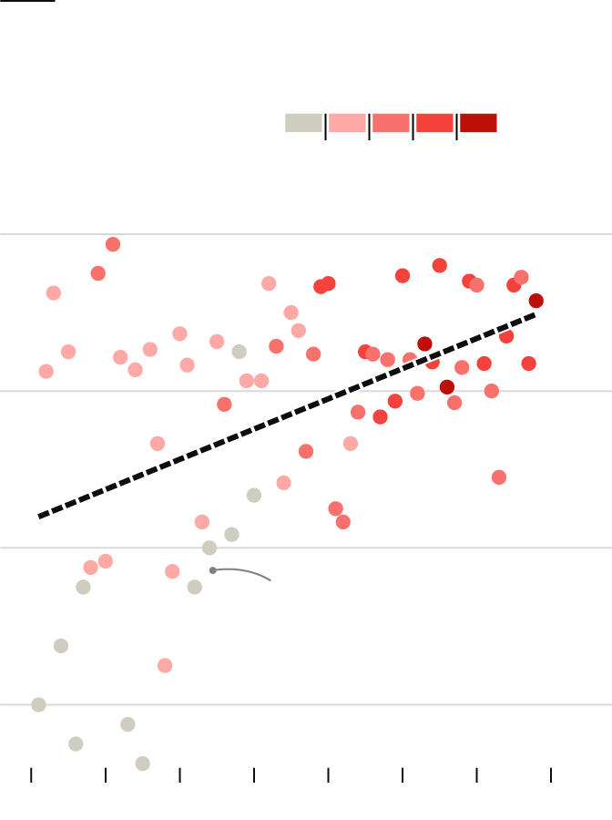
Critics’ scores of Bordeaux vintages
100=best
Average temperature
during growing season, °C
16
17
18
19
100
80
Trend
60
Bordeaux no longer suffers very cold years, which produce poor wines
40
1950
60
70
80
90
2000
10
20
Critics’ scores of Bordeaux
vintages, 100=best
Average temperature
during growing season, °C
16
17
18
19
100
80
Trend
60
Bordeaux no longer suffers very cold years, which produce poor wines
40
1950
60
70
80
90
2000
10
20
Critics’ scores of Bordeaux vintages, 100=best
Average temperature
during growing season, °C
16
17
18
19
100
80
Trend
60
Bordeaux no longer suffers very cold years, which produce poor wines
40
1950
60
70
80
90
2000
10
20
In theory, the welcome disappearance of years that are too cold or wet should be offset by the advent of vintages that are too hot or dry. One widely cited paper from 2005 calculated that the optimal average growing-season temperature for Bordeaux was 17.3°C, a threshold surpassed more than a decade ago. In Burgundy, all 11 of the warmest years since 1979 have occurred since 2003. Yet it turns out that grapevines have surprisingly robust defences against such conditions.
Generally as temperatures rise, photosynthesis and the accumulation of sugar accelerate. But once the air gets above a certain temperature—approaching 40°C—vines partly shut down, and ripening slows until the heat abates. So long as grapes do not suffer severe sunburn, record-hot summers like 2022 can still deliver balanced wines. “The level of stress the vineyards had to put up with was unprecedented,” says Gaia Gaja, a leading Italian producer. She says the plants resembled bonsai for lack of water. “But they made it.”
Still, frequent bouts of extreme weather are testing the limits of such resilience. Warmer winters make buds break earlier in spring, after which vines are vulnerable to frosts. France suffered a late frost in 2017 and a dire one in 2021, which cut Burgundy’s yields in half. Mild temperatures also help pests like the grapevine moth, which gobbles up berries’ innards, to survive winter. In Italy torrential rains this May enabled downy mildew disease to ravage grapes in the east and south. Drought in Spain in 2023 has cut yields by 14%.
Will growing conditions reminiscent of the ten plagues become the new normal? In 2022 a group of scientists led by Giovanni Sgubin of the University of Palermo built a statistical model to estimate the suitability of a given location for numerous grape varieties based on factors such as temperature, precipitation and humidity, and then applied it to all of Europe for a range of climate trajectories. They found that existing wine regions would cope fairly well up to about a 2°C increase in global temperatures, roughly twice the warming seen since 1880. Beyond that threshold, however, the share of current area under vines expected to stop producing wine-worthy fruit would soar. “It’s not so much that things will creep up on us and fruit quality will deteriorate, and we’ll wake up one morning and say, ‘God, the wine sucks,’” says Gregory Gambetta, an author of the study. “It’ll be some event that’s so extreme that you wake up and all the wine is gone.”
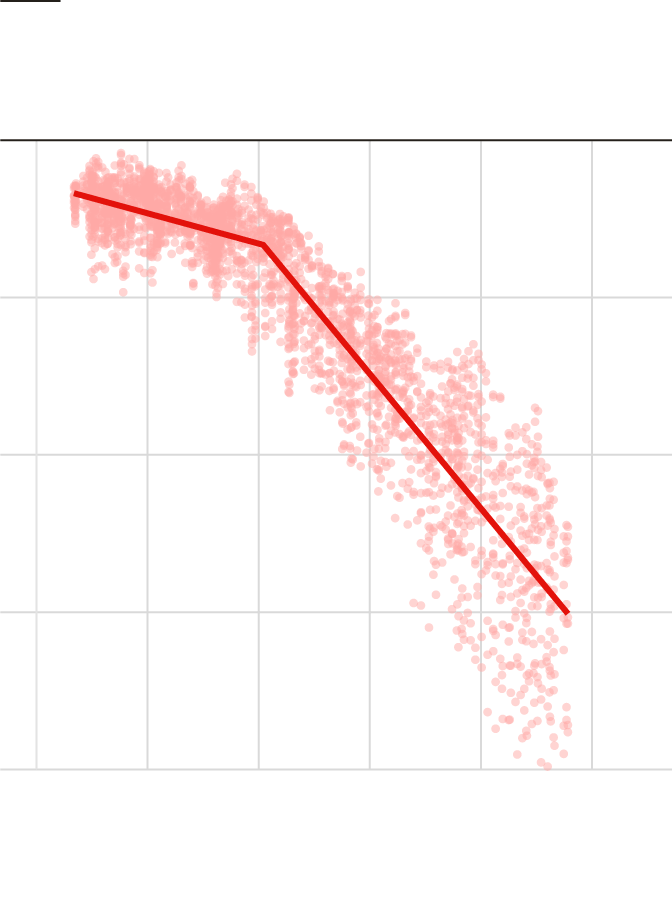
Projected area lost in
traditional wine regions, %
0
20
40
60
80
0
1
2
3
4
5
Increase in global temperature, compared
with pre-industrial average,°C
Projected area lost in traditional wine regions, %
0
20
40
60
80
0
1
2
3
4
5
Increase in global temperature, compared with pre-industrial average,°C
Projected area lost in traditional wine regions, %
0
20
40
60
80
0
1
2
3
4
5
Increase in global temperature, compared with pre-industrial average,°C
In response, some regions and producers are breaking long-standing norms. Bordeaux, the home of Cabernet Sauvignon and Merlot, has authorised the use of six late-ripening varieties that predominate in southern Europe, such as Portugal’s Touriga Nacional. Familia Torres in Spain is trying out vineyards 900-1,200 metres up in the foothills of the Pyrenees.
These deviations are not an option for estates like Château Lafleur in Bordeaux, whose bottles routinely fetch $1,000 or more. The finest producers are expected to express , the French notion that wine should reflect the soil and climate of a specific location. Omri Ram, of Château Lafleur, says, “I want someone who’s been drinking Lafleur for 40 years to say, ‘That’s a great Lafleur. I taste the Lafleur in it.’”
Such growers are experimenting as much as they can. Simple changes in farming techniques—like lengthening vines’ trunks, increasing the space between vine rows or reviving an old Mediterranean practice of shortening vines called “goblet pruning”—can delay ripening or improve resistance to drought. Shade cloths can protect grapes from sunburn and shrinkage. Irrigation would help as well, but it is (still, for now) generally prohibited for fine European wines. The most promising remedies arise from genetics: selecting both certain “clones” within each grape variety and the rootstocks onto which vines are grafted based on their tolerance for heat and water stress.
Reign of terroir
Regardless of such adaptations, warming may well spawn more new vineyards than it destroys, even as it wreaks havoc on humanity. In a study conducted for , Gro Intelligence, an agricultural-data firm, found that the share of European regions with growing conditions like those in Bordeaux today would rise by 18% by 2100 in the highest-warming scenario. And Dr Sgubin’s paper projected that the most extreme warming would increase Europe’s total suitable area for grape-growing by 45%. (Neither forecast, though, attempted to estimate the effects of extreme weather on yields.) Cabernet Sauvignon would flourish along the entire coast of the English Channel and Low Countries, and Chardonnay would predominate on the southern shore of the Baltic Sea (see map).
The challenge for aspiring winemakers will be to predict where exactly the finest can be found within these new regions. The sunniest part of Essex, one of England’s warmest and driest regions, is the Dengie Peninsula, where the wide estuaries of the Crouch and Blackwater rivers limit cloud formation. To guide his search for vineyard sites in this area, John Atkinson, a viticulturist for Danbury Ridge, hunted for a clay mineral called smectite, which predominates at hallowed Bordeaux producers. It has optimal water-buffering qualities, storing small amounts of water in thin sheets between its microscopic layers. During downpours, it swells and becomes impermeable, whereas in droughts, it shrinks and forms cracks, letting roots probe for the last drops.
Mr Atkinson eventually discovered that the parts of southern England with the highest proportions of smectite clay happened to be in or near Danbury Ridge’s own Crouch Valley. This July the winery persuaded a farmer who owned a sloping parcel rich in smectite to sell 17 acres. New vines will be planted there in 2024 under the supervision of Liam Idzikowski, Danbury Ridge’s winemaker. A former jockey from Northern Ireland, he sought out a career in wine after his prior profession’s strict dieting requirements compelled him to seek out the tastiest types of every food and beverage. Mr Idzikowski is confident that Chardonnay from this new vineyard will give off the same clementine scent that characterises the estate’s other white wines. “No doubt,” he says between sips, “there’s an Essex Crouch Valley .” ■
Image: Sandra Navarro
Sources: “Non-linear loss of suitable wine regions over Europe in response to increasing global warming”, by G. Sgubin et al., 2022; “Global warming and wine quality: are we close to the tipping point?”, by G. Gambetta and S.K. Kurtural, 2021
How five Ukrainian cities are coping, despite Putin’s war
From ravers to rubbish collectors, residents tells their stories
lviv
City of refuge
Orest knodt was near the eastern end of Ukraine, close to Russia, when the invasion began. Unlike many of his compatriots, he had taken the reports of a Russian build-up seriously. He had four rucksacks lined up by his door in Kharkiv when the first missiles hit: medical kit, laptops, warm clothing. Within an hour Mr Knodt, a tech entrepreneur, was driving south to his native Izyum, a town in the forest he assumed would avoid the invaders’ attention. He was wrong. Two weeks later, as Russian troops were surrounding Izyum, he barely escaped. Activist friends were tortured: teeth beaten in, plastic bags on their heads.
Mr Knodt travelled far west to Lviv. This quaint former outpost of the Austro-Hungarian empire had become a hub for the displaced, especially young, mobile professionals. The city, once a stuffy bastion of tradition, was transformed by its hip new inhabitants.
Halya Shyyan, a local writer, says war made Lviv discover a more open version of itself. “The city was always charming, but it was limiting, a vacuum, closed,” she says. In her childhood, natives viewed the east with suspicion. Someone from Kyiv, a mere 470km away, was deemed “exotic”. Now schoolchildren from Lviv are studying alongside kids from Kharkiv, Sumy, Mykolaiv, cities deep in the alien east. That is healthy, Ms Shyyan suggests.
None of this was obvious to Mr Knodt when he arrived in Lviv in April 2022. Displacement had robbed him of joy. Yet he found comfort in techno music. “I have this idea that dark, difficult, complex acoustic phenomena help you get through the darkest times,” he says. “It doesn’t tell you to clap and be happy. You should just be yourself with other people around you.”
Mr Knodt soon found himself organising techno raves. He put on the first with a friend, Karina Malinovska, in the autumn of 2022. Later the two produced parties separately. One was called “Ptakha” (bird), an “all-welcome” rave. Another was “Darkred”, a gay event with bondage themes.
Not everyone in Lviv welcomes this sort of thing. Ms Malinovska is accused of distracting people from the war effort. Nonsense, she says: both Ptakha and Darkred collect money for the troops. “Life should not stop, because it does not stop,” Ms Malinovska says.
The first Darkred parties were timid. But as Mr Knodt’s confidence grew, he began experimenting with all kinds of kinks, including piercing performances. “The locals were scandalised,” he says. “But soon enough they were asking when the next one was.”
kyiv
Under the dome
Since Mr Putin failed to capture Ukraine’s capital in March 2022 and his army fell back to pillaging the east of the country, life in Kyiv has all but resumed its normal rhythm. The economy is recovering. Cafés are full. Rents are rising. None of this would be possible without the ceaseless vigilance of the 96th missile brigade of Air Command, under Colonel Serhiy Yaremenko.
He says he is proud his forces have given residents a sense of security. But Russia has a lot of missiles. Most of those that Col Yaremenko’s men shoot down are flying low. Burning, heavy fragments can fall on houses.
Ballistic missiles are still hard to detect and intercept. Some residents are so confident in the protective “dome” over Kyiv that they don’t bother running to bomb shelters. Such people “are fooling themselves”, he says. At peak periods, Yaremenko’s men work round the clock: intercepting Russian missiles during the night and preparing the next night’s defences during the day. Family life is put on the back burner. “Black days” are common, the commander says. Nine of the men directly under his command have died in service. But it’s the civilian deaths that hurt most.
“It’s really hard if you hear someone has died in Kyiv because a missile has got through. You keep thinking it over and over. But you realise you have to keep going.” There are happy moments, too. Every interception is “a triumph”, he says. Messages of thanks from the public: “they mean so much.”
It is a race against Russian technology and cunning. The Ukrainians have just about managed to stay ahead. On May 4th Col Yaremenko gave the order for his crew to intercept a supposedly unstoppable Kinzhal ballistic missile for the first time. That was a real “wow”. Russia, meanwhile, claims to have destroyed all five of the two Patriot anti-missile systems in Ukraine.
Col Yaremenko never believed Russia would fire 150 long-range missiles at a peaceful neighbour on the first day of an unprovoked invasion, but it did. He could not imagine that Mr Putin would keep the support of ordinary Russians as he sacrificed their sons to his vanity war, but if Russian polls are to be believed, he has. “There is no point looking for moderation with the Russians. We have to be ready for anything.”
odessa
A port without a port
Perhaps half of Ukraine’s imports and exports— cars, fridges, grain—used to flow through Odessa’s three deep-water ports. A fair bit of contraband did, too. “We went through a funny period at one point,” recalls Oleh Brusko, a port manager, “where you’d find cocaine in tinned pineapple.” But since his terminal was destroyed by missiles in May, 2022, there hasn’t been much work for Mr Brusko or his fellow dockworkers.
He used to take home $1,000 a month for a two-day-on, two-day-off schedule. Now he’s earning less than half that for a five-day week of 12-hour shifts loading cargo onto trains at an inland depot. His specialist skills are not needed there. Like many other dockers, Mr Brusko has put his CV on a local job-search site.
The boats used to line up to enter Odessa’s docks, he recalls. Now it is rare to see one on the horizon. There is a “protected” corridor, which the Ukrainians have set up unilaterally in the wake of the collapse of a deal with Russia, but not every shipper wants to risk it.
Mr Brusko, who describes himself as a survivor of Odessa’s lawless 1990s, says he has never been more pessimistic. War has put everything on hold: the wedding anniversary he had planned to spend in Egypt with his wife; the improvements he had planned for his garden; any communication with Russia.
Like many in Odessa, he still has close people “over there”. His brother left 31 years ago to work in the Russian far east. The two exchanged a few terse words earlier in the war. Once upon a time, Mr Brusko might have humoured the weird chats about “brotherly nations” (Mr Putin’s Orwellian code for neighbours he wants to subjugate). But now communication is impossible.“ You don’t understand how hard it is to say: ‘Brother, we have to stop talking to one another.’”
zaporizhia
Front-line city
Antonina, 60, is one of Zaporizhia’s newest residents. She arrived in August, after an evacuation on a motorbike with her husband— one of the only successes of the underwhelming counteroffensive. Ukrainian soldiers recaptured her village, Piatykhatky, in mid-June.
At first, she did not understand. A group of soldiers appeared outside her gate and started speaking in Ukrainian. Perhaps the Russian saboteurs have learned to speak Ukrainian, she thought? Then she realised. “It was like my blood was hit with an electric current. ‘Are you really our guys?’ I asked.”
Antonina had been cut off from the world for a year and a half. She had no electricity or phone connection, and survived by growing vegetables. The Russians planted mines at the entrances to the village.
She is finding it hard to adjust to city life. It is good to have electricity again, but she remains a country girl at heart. She’d rather be getting her hands dirty on the farm. She has been living in a shelter provided by the local church with her husband and 18 others.
She says not a day goes by without her thinking of the soldiers who rescued her, who are now fighting near the home she left behind. When she was still there, she would make borsch, boil eggs and bake bread for them. They were “lovely lads”. One got married, she heard. She kept in touch for a while, calling them every few days. Then she tried to call again. All she heard was ringing, no answer. She called again. And again. “There’s heavy fighting,” she reasons. “Perhaps they have to stay in their dugouts.”
kharkiv
Ukraine’s fortress
Early on February 24th Vladislav Pomilaiko, a binman, set off for his rounds. At 4.30am, there were booms in the sky like fireworks, “only duller”. The crew looked at one other and nodded. War had begun.
The story of how a massive Russian force failed to take Kharkiv, a city on its doorstep, is complicated. But nothing exemplifies the Ukrainian defenders’ spirit better than the binmen of Kharkiv. As others ducked and fled, they kept working. “What else were we to do?” asks Mr Pomilaiko. “There was rubbish to collect.”
For a while the binmen were the only city staff left working above ground. Decked out in flak jackets and helmets, they collected rubbish as fast as they could between curfews. They quickly spotted a pattern: the Russian gunners took breakfast, lunch and dinner breaks. So the binmen did not.
If a shell landed too close, they moved around the corner and kept working. There were many close calls. Fully 30% of the city’s standing rubbish containers were damaged. Ivan Kluii, 39, a driver, was in a column of lorries when cluster munitions started landing. His vehicle escaped, but the second and third were hit by shrapnel. “You felt sheer panic in the moment. But ten minutes later you were working again.”
Soldiers were initially sceptical of the need for rubbish collection. They would shout at the crews to take cover in cellars and inspect the lorries, somehow expecting to find Russian saboteurs in the compactor. One driver’s bin-lifting device was mistaken for a rocket launcher, with nearly fatal consequences. But eventually the soldiers relented, realising they had rubbish to be collected, too.
Frightened locals took inspiration from their daring dustbin-emptiers. They came out to greet them on their morning rounds. “We got tea and coffee, and they even did TikToks of us,” says Kluii.
Remarkably, not one binman has resigned. Some have volunteered to fight, even though, as essential workers, they don’t have to. And Kharkiv is daring to breathe again. All but 300,000 of its pre-war population of 1.6m have returned. Every little effort to restore normality—from organising a party to clearing up afterwards—is an act of defiance, a refusal to submit to the grandiose visions of the tyrant in Moscow. ■
This article appeared in the Christmas Specials section of the print edition under the headline "A tale of five cities"
A tale of penguins and prejudice is a parable of modern America
When two male penguins hatched an egg in Central Park, they set off an enduring controversy
Listen to this story.Enjoy more audio and podcasts on iOS or Android.
Once upon a time in America there lived a pair of penguins called Roy and Silo. They were just like the other penguin couples in their zoo, except that they were both boys. Together they sat on an egg until a chick popped out. Later two men wrote a story about them—igniting a controversy which, almost two decades later, is still blazing.
This is the story of that story, and it has many morals. It is a tale of parenting and devotion, and a fable of progress and the backlash it can provoke. It is a feathery parable of America’s divisions, in this case over freedom of speech and gay rights. An ongoing saga of politics and prejudice, in the beginning it was, first and foremost, a story about penguins.
Thronged with children, the penguin exhibit at Central Park Zoo in New York is an unlikely battleground in America’s culture wars. It is easy to see why the creatures are a hit. They wobble around their barren terrain like drunks trying to walk straight for a patrolman. Some engage in what seem to be lively conversations, flapping their wings for emphasis. (Others spend a lot of time staring at rocks.) Diving into their pool they become as lithe and dexterous as they are clumsy on land, rocketing out after their dips in gravity-defying bursts.
Of the various species in the cold, smelly enclosure, the feistiest are the chinstrap penguins, so called because of the black markings below their beaks. For a novice they are hard to tell apart; but, says Rob Gramzay, who oversaw their care for 17 years, zookeepers come to know the penguins individually while hand-feeding them fish twice a day. Some are sweet, says Mr Gramzay, others “really ornery”. Between Silo and Roy, “Silo was definitely the one with more attitude.”
In 1998 Mr Gramzay noticed that these two males were spending most of their time together. They exhibited the same behaviours as male-female pairs, such as squawking at each other and showing off in courtship displays. When, a year later, Mr Gramzay saw Silo sitting on an egg-shaped rock in the nest the pair had built, he swapped in an egg made of plaster. In 2000 he gave them a real egg that two other chinstraps, Betty and Porkey, had discarded. His aim, he says, was purely to support the penguin colony, which had not raised many chicks.
Roy and Silo took turns incubating the egg for around 36 days. At the time Mr Gramzay was enjoying the tango music of Astor Piazzolla, an Argentine composer; when the egg hatched he called the new penguin Tango. She was “a very sturdy chick”, he recalls. He helped her learn to swim.
That might have been that, had it not been for a double stroke of fate. In 2004 the ran an article about the penguins, headlined “Love That Dare Not Squeak Its Name”. And, in their kitchen in Greenwich Village, a particular human couple read it.
They were just the right pair to incubate the story. A psychiatrist and psychoanalyst who teaches at Columbia University, Justin Richardson had interests in sex education and gay and lesbian mental health. On a blind date almost a decade earlier he had met Peter Parnell, a playwright who worked on “The West Wing”. Lots of people, they knew, were squeamish about discussing homosexuality and gay parents with their children. Here was a tale of same-sex parenting from which everything that might cause discomfort—even the word “gay”—could be omitted. Two cute characters would overcome obstacles to reach their goal in a classic narrative arc. Unusually for the time, the children of same-sex couples would glimpse a version of their own experience.
They wrote fast. Mr Parnell quickly got out of his system a draft in which Roy and Silo loved Broadway musicals. Aided by a visit to the zoo, they stuck closely to the facts. “We got to hear them,” Dr Richardson says of the penguins, “and smell them.” An illustrator, Henry Cole, contributed dreamy yet realistic watercolours. Intended for four- to eight-year-olds, the book was published in 2005 as “And Tango Makes Three”.
It is a delight. “Every day”, it explains of Central Park Zoo, “families of all kinds go to visit the animals.” The animals have families too, mostly featuring male-female partnerships. Roy and Silo, however, were “a little bit different”. As in real life, Mr Gramzay gives them an egg, which they sit on until—“CRAAAACK!”—out comes Tango with “fuzzy white feathers and a funny black beak”.
The story was well-received by reviewers and readers. “It’s a great feeling”, says Dr Richardson, “to hear a kid loves your book.” Then fate—or what you might call a penguin —intervened again.
Life imitates penguin
The authors expected objections to their fable of same-sex union; the first illustrator they approached had declined on religious grounds. But they could not have anticipated the way penguins came to be enlisted as political warriors. “The March of the Penguins”, a documentary about emperor penguins in Antarctica, was released later in 2005. Some conservatives saw those birds as exemplars of parental devotion and stable relationships. In response, some on the left invoked the non-traditional family in “And Tango Makes Three”.
When, in 2006, two parents in Missouri complained about the book at a public library, it was reshelved in non-fiction. Stephen Colbert defended it satirically on “The Colbert Report” (“It’s all just another part of the homosexual flightless waterfowl agenda”). After that, the herring was in the penguin pool.
The American Library Association (ala) tracks “challenges” to books in public and school libraries—ie, bids to have them removed or access to them restricted. By its count “And Tango Makes Three” was the most targeted book in America in 2006-08, and again in 2010. Complainants alleged that it is “anti-family” and “promotes the homosexual agenda”. Penguin skirmishes erupted overseas: Singapore’s authorities resolved to pulp library copies of the book until, amid an outcry, it was moved to the adult shelves instead.
image: Noma Bar
The attacks betray several misconceptions, the most elementary involving science. Same-sex attachments among penguins are not a pernicious invention but a fact of nature. Mr Gramzay saw other such pairs in Central Park; they have been sighted in captivity in Berlin, London and Sydney. As for animals in general, says Paul Vasey of the University of Lethbridge in Canada, incidents of same-sex courtship and bonding have to some extent “been observed in many, many species”. (Hardly any animals, cautions Dr Vasey, are exclusively homosexual. And since many creatures have nasty habits like infanticide, basing moral arguments on their behaviour is inadvisable.)
A second misconception concerns human sexuality. Whatever its mysteries, it is unlikely to be swayed by a picture book about penguins, a fear that seems to lurk behind many objections to “And Tango Makes Three”. As Dr Richardson puts it, wearing his psychiatrist’s hat: “There’s no reason to believe that reading a book about homosexual waterfowl makes a child more likely to be gay when they grow up.” Conversely, banning books with gay characters—or their avian avatars—won’t change the fact that “gay families exist”.
A final confusion is over children and reading. It is not a mechanistic process whereby a story propounds a message and a child absorbs it. To think it is, says Marah Gubar, an expert on children’s literature at the Massachusetts Institute of Technology, is to see young readers as defenceless blank slates, altogether inferior to grown-ups and worryingly impressionable. In reality they are, like adults, exposed to umpteen competing influences that they sift and process. As anyone who has read to a toddler knows, Dr Gubar notes, they already have tastes and ideas; they interpret books—which tend to have several possible meanings—in their own ways. The response to this one might be, “I wanna be a zookeeper!” In the encounter between child and book, “It takes two to tango.”
The real-life union of Roy and Silo did not, alas, end happily ever after. They “stayed together for a couple more years”, remembers Mr Gramzay. Then Silo had a fling with a female chinstrap named Spike, before forming a long-term partnership with another female, Scrappy. (News of his change of mate and taste was greeted by some as a triumph of heteronormativity.) For his part, Roy took up with a male named Blue. Tango found a female partner called Tazuni.
There was a happier sequel for the authors. Like Roy and Silo, when they wrote “And Tango Makes Three” the couple felt, in the words of the story, that “Their nest was nice, but it was a little empty.” In that line, confides Dr Richardson, “We were talking about our own lives, too.”
In 2008 David Paterson, New York’s governor, ordered state agencies to recognise same-sex marriages performed elsewhere. Mr Parnell and Dr Richardson quickly tied the knot in Massachusetts, the first American state to make that possible. They hurried because, through surrogacy, they were about to become parents themselves. In 2009 their child was born: a girl (like Tango) whom they named Gemma. A few years later Mr Parnell wrote a funny, moving play about gay parenting called “Dada Woof Papa Hot”, those four words having been Gemma’s first. “Isn’t being normal the most radical thing of all?” muses one of his characters.
This case of life imitating art, or artists imitating wildlife, would have made a fairy-tale ending to the saga of the “gay penguins”, as, rather anthropomorphically, they are often known. Yet like the tango of progress and pushback at its heart, the story was not—and is not—over. As swallows are to summer, the appearance of these chinstraps is a sign that cultural rows are dominating American politics. Now they are back.
Book bans come in waves. As Jonathan Friedman of pen America, a free-speech watchdog, recounts, they surged in the McCarthyite era after the second world war and again in the late 1970s and early 1980s. Amid a wider battle over how and what children are taught, they are soaring again today. pen America clocked 3,362 bans in American schools in the 2022-23 academic year, a third more than in the previous one. The ala says more books are being challenged than at any time since it began keeping records more than 20 years ago. Whereas, in the 1950s, the censors fretted about un-American ideologies, today they focus on portrayals of race, gender identity—and sexuality.
image: Noma Bar
Teachers and librarians, says Mr Friedman, are caught in a pincer movement between two forces. One is new state laws, in which Florida has been a trailblazer. Its Parental Rights in Education Act, known by critics as the “Don’t Say Gay” law, severely restricts instruction in “sexual orientation or gender identity”. Other regulations oblige school authorities to vet every book on their premises, and prohibit the depiction in them of many sorts of sexual activity. Emulated elsewhere, such laws are powerful tools for conservative pressure groups, the other claw in the pincer.
“We’re not banning books,” insists Keith Flaugh, co-founder of one such group, the Florida Citizens Alliance (FCA). “We’re protecting the safety of our children.” Invoking Florida statutes, he argues that “You either have a rule of law or you have anarchy.” As a guide for parents and spur to action, the FCA produces a “Porn in Schools Report”, which lists commonly available books that it says “contain indecent and offensive material” and are “wilfully grooming our children to be sex-trafficked”. As well as “Normal People” and “The Kite Runner”, the list includes “And Tango Makes Three”. The FCA’s reviewer calls it “an attempt to influence young impressionable minds to accept the gay lifestyle”.
In Escambia County, Florida, meanwhile, a teacher named Vicki Baggett asked the school board to withdraw “And Tango Makes Three” from its libraries, with other titles, on grounds of “indoctrination”. Schools, she says, should be “protecting [children’s] innocence until they are more mature”. At a heated public meeting, a local queried whether “Goldilocks” should also be deemed a menace, since it might indoctrinate children into crime. The board sided with Ms Baggett.
Strong language for a book about androgynous-looking birds, in which the most explicit passage describes how Roy and Silo “wound their necks around each other”. The characters are exemplary homemakers, as, apparently, were the actual birds. (“They were really, really great parents,” Mr Gramzay says, dutifully regurgitating their fish for Tango to swallow.) The charge that the story is pornographic reveals more about the accusers than about the book, suspects Dr Richardson. Perhaps they associate the term “gay” with sex and assume everyone else does, too—even five-year-olds. As for “indoctrination”, it’s “a word that you use to make education sound nefarious, right?”
“And Tango Makes Three” has now been challenged in 32 states. It was the joint most-banned picture book of 2022, tied with two others with gay or transgender themes. All this troubles the authors more than the first bout of penguin-hunting did. Those early opponents “were at least sincere”, says Dr Richardson. Now the campaign is not spontaneous but organised; rather than reading the story, some people seem merely to have seen the title on a pressure group’s list. Another difference is that, with support from fans, free-speech activists and America’s constitution, in bygone years the book would eventually be restored to shelves. In some cases today, it hasn’t been.
So the penguins are fighting back. Mr Parnell and Dr Richardson are suing two school boards in Florida and the state’s department of education. They want a federal court to affirm that removing the book from school libraries was unconstitutional, and to rule that the “Don’t Say Gay” law, under which it has been targeted, has enabled discrimination. After all, it has not been used against, say, “Make Way for Ducklings”, a children’s classic featuring heterosexual ducks.
Taking it on the chinstrap
A sanguine view is that this strife is the price of progress—not least the Supreme Court’s ruling in 2015 that same-sex marriage is a constitutional right. In decades past, Mr Parnell didn’t think getting married was something he would ever be able to do. Mr Gramzay, who is also gay and also married, says he envisaged himself living alone with his dogs. (Now retired and taking wildlife photos, he still talks with touching affection about the animals he looked after.)
Some Americans resent these changes; a few take it out on Tango. On one point, though, they and the authors agree. “Books are powerful,” says Dr Richardson. “Books can change attitudes.” Back in 2004, he and Mr Parnell dared hope that theirs would nudge forward acceptance of gay parents and people—and in their own diminutive way, the penguins have. The book helped its readers see that “families can be different”, reckons Cheryl Greene of the Human Rights Campaign, a lobby group, and that “It’s love that actually makes a family.” Tributes to the tale have included penguin figurines atop gay-wedding cakes and students attending proms in penguin costumes.
Go to the penguin exhibit today, and you will not see Roy, Silo and Tango in the raucous black-and-white colony. All three have waddled off to the great ice floe in the sky. But their fictional doubles march on, improbable standard-bearers in the culture wars, on an epic odyssey of reform, resistance and hope.
The authors share a memory that encapsulates this zigzagging journey. As a toddler, their daughter saw a statuette of the penguins and exclaimed: “Look, there’s Tango!” There’s her father, she went on—“And there’s her mommy!” Laughing, Dr Richardson recalls thinking, “What did we do it all for?” Then he asked her, who is mommy? “And she said, ‘Daddy is mommy.’” ■
What the journey of a pair of shoes reveals about capitalism
And how Indonesia, the world’s largest Muslim country, is changing
Listen to this story.Enjoy more audio and podcasts on iOS or Android.
In a remote village in Borneo, Fatimah wonders what shoes to wear to her cousin’s wedding. For as long as she can remember, buying footwear meant an hour-long, wooden boat ride to a market. That changed a few years ago, when mobile phones arrived. Now, almost every day, she scrolls through Shopee, a shopping app. It connects her—and the 130m Indonesians who use it every month—with merchants thousands of kilometres away, and causes packages to appear, as if by magic, at her door.
Of course, it is not magic. Behind the luminous icon on Fatimah’s phone is a vast network of makers, packers, truckers and shippers, who don’t know Fatimah or each other but seamlessly collaborate to bring her what she wants. And they do it across the world’s biggest archipelago, a country of 13,000 islands and hundreds of languages, wider than the continental United States and far harder to get around: Indonesia.
image: Rosa Panggabean
E-commerce helps bind together a nation of skyscrapers and jungles, miniskirts and hijabs, software engineers and tribes who still hunt with bows and arrows. So the journey of a pair of shoes from factory to Fatimah reveals a lot about how the planet’s most populous Muslim country is changing. decided to follow those shoes.
The story starts with a wish. The shoes Fatimah wants are white and camel, open-toe sandals. They sit patiently in her online shopping cart. But at $25, they are more than she can afford. Her husband sells , a meatball made mostly of flour and peanut sauce, at the market. He gives Fatimah $3 a day to run the household. Whatever is left, she saves as pocket money. Ping! The app notifies her that the sandals are on sale for $12. Fatimah grabs the deal.
image: The Economist
Her click sets off a process 1,000km away in Bogor, a city outside Jakarta, the capital. The shoes are made by Patris, a family firm that started selling online in 2020, during the covid-19 pandemic. Three years later Ricco Antonius and Maria Putri Anastasia, the married owners, employ 50 staff (up from zero) and shift hundreds, perhaps thousands of pairs a day. Most of their customers are women under 40, like Fatimah.
On a Thursday afternoon your correspondent climbs a flight of stairs to a two-storey warehouse: on the top floor, shelves of shoes are stacked. The bottom floor hums with young women checking, boxing and wrapping footwear.
Initially, Patris didn’t know how to sell online, says Ricco. Now, it is all about live-streaming. Ten young women, working in shifts 24/7, flaunt sandals and slippers, mules and platforms, low and high heels, open-toe and closed-toe pumps, black and brocade shoes with fleecy, pillowy or puffy soles. They sit in brightly lit booths answering customers’ questions, and gently persuading them to tap “buy”. “Everyone has their own style, some of us are enthusiastic and bubbly, others are calm and slow,” says Siti Zahra Amelia, one of the sales staff. Most customers who watch her live-streams are young women. But occasionally, men ask Miss Siti for advice on what to buy their wives.
Fatimah’s order arrives digitally and instantly. Fulfilling it will take rather longer, however. In the past decade, Indonesia’s physical infrastructure has improved hugely. The president, Joko Widodo (known as Jokowi), sees pouring concrete as a path to prosperity. In the past decade the country has built more than 300,000km of roads, over 1,500 ports and 25 new airports, spending almost $180bn on infrastructure. Delivering goods is thus easier than it was, but still mind-bogglingly complex.
E-commerce firms everywhere fret over how to handle the first and last miles of deliveries. In Indonesia, the middle mile is also a challenge, says Handhika Jahja, the head of Shopee Indonesia. Parts of the country still have no proper roads, postcodes or addresses. Local couriers must know how to find the house three doors down from the blue mosque or by turning left at the big tree. They must ride their motorbikes onto sampans, balance on narrow, rickety boardwalks and sometimes wade through swampland on foot. Still, as investment pours into e-commerce in South-East Asia’s biggest market, Indonesia is a testing ground for the rest of the region, says Mr Handhika.
Fatimah’s shoes are first loaded onto a van, which takes them to a hub in Bogor. From there, they go by truck to a multistorey car park the size of a football stadium in Depok, a city south of Jakarta. This hub comes alive at night, from 10pm to 5am. Young men in fluorescent vests toss packages of everything from nappies to noodles into blue crates bound for different corners of the country.
Herman, the truck driver for the next leg of the journey, is impatient. It is 10pm and your correspondent’s questions are delaying the first of three trips he must make during his shift. Jakarta’s traffic is bad, and Herman worries about arriving in Kapuk, a suburb on the outskirts, in time. Eventually he races off into the night. In the early hours of Friday, Fatimah’s shoes arrive at Jakarta’s Halim airport.
Forest fires are burning across Kalimantan (the Indonesian part of Borneo), filling the air with smoke and reducing visibility for pilots. Yudhianto Prihantoro, who has to fly Fatimah’s shoes 900km from Jakarta to Banjarmasin, the capital of South Kalimantan, fears he may not be able to land his cargo plane. Around 85% of Shopee’s packages heading from Java, Indonesia’s main island, to Kalimantan travel by ship, which takes an extra three days, but some go by plane.
Yudhianto, a former air-force pilot, has flown cargo planes to remote airports for years. He has steered around clueless locals who wander across the runway. He has had a pilot’s-eye view of Indonesia’s breakneck development. One airport, at Wamena in West Papua, used to be a ramshackle affair of corrugated iron and wooden poles; now it has high ceilings, bright lights and a slick, steel skeleton, he says. Alas, this hasn’t stopped fighting in the province between the Indonesian military and separatist rebels, who kidnapped a pilot in February and burned his plane.
image: Rosa Panggabean
image: Rosa Panggabean
Yudhianto lands safely in South Kalimantan. It is Friday afternoon. The air is thick with a haze that smells smoky and tastes metallic. In just one month, 33 forest fires have raged across the island, which is about as big as Texas. The hot, dry El Niño weather pattern has made it harder than usual to control fires from traditional slash-and-burn land-clearing for palm oil, pulp and paper plantations. But locals say this year’s haze isn’t as bad as it was in 2015, when they had to turn lights on during the day to see anything.
Despite the slashing and burning, Kalimantan is still mostly covered in thick jungle. So the main highways are rivers, which connect most of its towns and villages. Shopee first built its sorting hub in Banjarmasin (“the city of 1,000 rivers”) in 2021, processing fewer than 10,000 parcels a day. Now it handles 60,000. Labourers roll crates of floorboards, kitchen appliances, clothes and smartphones into vans.
One, with a purple air freshener in the shape of a penguin, is driven by Muhammad Faizal, a 23-year-old Banjarese. His ancestors have plied the rivers of South Kalimantan for centuries. Around the time the Saxons invaded Britain, Banjarese sailed 7,000km across the Indian Ocean to what is now Madagascar.
Faizal isn’t travelling quite as far. Most days, he drives packages from Banjarmasin to Marabahan, 70km to the north. He looks forward to catching up with his friends who work as local couriers. A few speak Bakumpai, a local Dayak language. Not many speak Banjar, Faizal’s mother tongue. Most speak Javanese, as their families were part of a transmigration programme run first by Dutch colonists and then by the Indonesian government, to relocate people from more populous islands, such as Java, to more remote areas like South Kalimantan.
This sparked all kinds of trouble. Between 1996 and 2001 thousands of Dayaks and Muslim migrants from the island of Madura massacred each other. Some beheaded their enemies and even ate their organs. The area is considerably more peaceful today, but remains tense. When Faizal cracks a joke that is received with a blank look, he quickly makes the switch to Indonesian, a language that everyone speaks.
By Saturday morning, on day three of the journey, Fatimah’s shoes rumble across a new bridge on the Alalak river, connecting Banjarmasin to the rest of Kalimantan. Jokowi opened it in 2021. In the province of East Kalimantan next door, he is building Indonesia’s new capital city in the jungle. Shopee constantly has to update its delivery routes to include new roads, bridges and ports.
At night, the roads in these parts are often only lit by fireflies. Superstitious locals find them spooky. Once, Faizal was driving home from a wedding with leftover cakes and sticky rice in his van, through an area believed to be full of spirits. His van broke down. “I had enough petrol, I was in the right gear, my engine was running. But the car refused to start,” he recalls. Mindful of a local tradition, he offered his cakes and sticky rice to the bushes. “Grandfather, have some food and please don’t disturb me,” he whispered. His van started again, he says.
After an hour and a half winding past rice paddies, Fatimah’s sandals reach Marabahan, a sleepy riverside town. Juliansyah, one of Faizal’s friends, loads them, with 27 other parcels, into the saddlebags of his motorcycle. He sets off past single-storey houses spread across the plain. After almost two years in the job, he knows his customers well. Many are young mothers who order nappies, bottles and baby food, and often invite him in for tea. Knowing how to cut short such chats politely is an essential skill.
The brown waters of the Barito River come into view. Juliansyah pulls into a wooden hut that shelters people waiting for the (a small, wooden ferry). A boatman rides the motorbikes on board, one after another, along a narrow wooden walkway, expertly stacking them by the bow. Little mosques with silver turrets dot the river bank, alongside wooden houses on stilts with red and blue roofs.
image: Rosa Panggabean
image: Rosa Panggabean
The ferry rattles off, dodging bigger boats carrying coal and wood, and wobbling in their wake. Reaching the other bank, Juliansyah flicks away the sweat on his forehead, starts up his motorbike and winds down a narrow dirt path lined with drying laundry. He stops, flipping down his kickstand. He is nearly there. He jogs past a shed full of seeds and comes to a house with buckets and brooms stacked on sacks of fertiliser on the porch, and a dozen pairs of sandals out front.
After three, sweaty, sleep-deprived days, the journey is over. Fatimah pushes aside the blue and yellow netting that serves as her door and invites us in. Images of the “nine saints” who brought Islam to Indonesia in the 15th and 16th centuries adorn the walls of her front room. She tears open the purple wrapping paper and holds up her new sandals for inspection. Then she rushes off to fetch the blue and white dress she plans to wear with them to her cousin’s wedding.
She is delighted, and enthuses about the wonders of online shopping. She rushes around the house grabbing everything she has previously bought on Shopee to display for her unannounced guests: lip gloss, moisturiser and her baby’s milk bottle.
In some ways this is a story of globalisation’s triumph. Without the spread of smartphones, e-commerce would barely exist in Indonesia. And Shopee is a truly international firm: it operates in eight countries. Its parent company is headquartered in Singapore and is part-owned by Tencent, a Chinese tech giant.
But the story is more complicated than that (a phrase Indonesia-watchers use a lot). The country simultaneously embraces globalisation and resists it. Jokowi has protectionist instincts and is wary of China. In October, his government banned TikTok Shop, Shopee’s main rival, which is affiliated with TikTok, a Chinese social-media giant. It also banned the sale of imported goods worth less than $100 on all e-commerce platforms, hoping that this would boost local businesses like Patris.
The people in Fatimah’s village are only dimly aware of policy decisions made in the distant capital. But they appreciate the stunning variety of goods that e-commerce makes available in remote places, some of which bring real joy. And they see, in the spread of technology, new opportunities to earn a living.
Near Fatimah’s house lives Rizki Nur Annisa, a young woman who makes fish crackers. For generations her family would dry the fish, turn them into crispy snacks and take them by boat to the local market. When the pandemic hit, they could not leave home. But Rizki knew what to do. She logged on to Shopee and sold the crackers online. ■
What the tractor and the horse tell you about generative AI
Listen to this story.Enjoy more audio and podcasts on iOS or Android.
It was the Chatgpt of its day. “Come and see the tractors”, entreated an article in the in 1915, advertising a trade show in Illinois showing off the new tech. “It will mark a new epoch in farming—the farmer’s liberation from sole dependence on the weary horse.” “Tractors are more economical than horses,” insisted an agricultural expert in a government report around the same time, “not only making farm work cheaper but easier.” The tech clearly impressed people, but it also scared them. One American observer, watching a tractor in England, said it “walked over the earth like some huge animal, puffing and snorting”. Tractors promised a revolution in American agriculture, an industry which in 1900 employed about a third of workers and produced about 15% of gdp.
Today many people expect another revolution, linked to developments in generative artificial intelligence (ai). Like then, the general public today view the technology with a mixture of awe and fear. Goldman Sachs, a bank, reckons generative ai could raise annual global gdp by 7% over ten years. Some economists now talk about “explosive growth”. Others say that before long, jobs will be eliminated in their millions. Yet the economic history of the tractor casts doubt over these predictions. Over the sweep of history the tractor has indeed had an immense impact on people’s lives. But it conquered the world with a whimper, not a bang.
Historians disagree about who invented the tractor. Some say it was Richard Trevithick, a British engineer, in 1812. Others credit John Froelich, working in South Dakota in the early 1890s. Still more point out that the word “tractor” was little used until the start of the 20th century; and that only then did people start seriously talking about the average farmer buying one. At the time horses and mules pulled around an impressive array of farm implements, from ploughs to reapers.
The horses faced up to a bigger, more powerful beast. You can put yourself in the shoes of an early 20th-century horse by visiting Gene Jones’s tractor museum in Millbrook, a small city in rural Alabama, which contains dozens of machines, including Farmalls and Fords, from the 20th century. The tractors are beautiful—and not just because Mr Jones has lovingly restored them, painting them in a variety of rich auburn-reds. They are also intimidating. Some weigh thousands of pounds. Others have cranks to start the engine which can break your arm if you don’t know what you’re doing.
With hindsight, it is clear that the tractor had profound impacts. It meant that a given quantity of farmland could feed more people. Tractor-owning farmers no longer needed to pasture horses, each of which required about three acres of cropland for feed each year. More intensive farming also had downsides. Some researchers have argued that tractors helped bring about the Dust Bowl of the 1930s. Their powerful ploughing techniques damaged the topsoil that had once prevented wind erosion.
The economic impact eventually became clear, too. The greater efficiency afforded by tractors allowed farmers to expand their operations, as they could manage more land with the same number of workers. Farms began to grow in size, with smaller family farms giving way to larger, mechanised operations. According to one estimate, by 1960 the average American farm was 58 acres (equivalent to the land occupied by ten big Walmarts today) larger than it would have been without tractors. The tractor also reduced the number of workers needed to produce food by about 2m, or 25% of farm employment in 1960. All these improvements added up. In a paper published in 2012 Richard Steckel and William White, two economists, argue that by the mid-1950s farm mechanisation had raised American gdp by about 8%.
And yet for much of the first half of the 20th century, tractor-induced changes did not feel very profound. This is because the tractor diffused across the American economy slower than one of Mr Jones’s old Fords trying to cross a waterlogged field. In 1920, despite rave reviews in the , just 4% of American farms had a tractor (see chart). Even by 1940 only 23% had them. In the 1910s opportunistic businessmen had piled into the tractor-making business, hoping to make a quick buck (just as every second tech firm in Silicon Valley now describes itself as “ai-first”). Many had no customers and were forced to close.
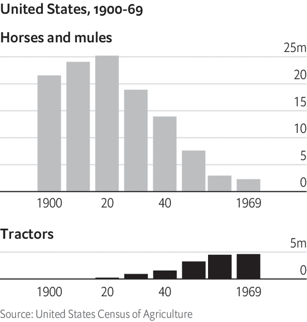image: The Economist
The horse endured for a surprisingly long time. For much of the 1930s the total productive capacity of equine animals—quite literally, horsepower—across American farms still exceeded that of tractors. In 1945 a quarter of farms reported both draft animals and tractors. The slow diffusion of the tractor produced slow productivity gains. The data are spotty, but in the first half of the 20th century annual productivity growth in agriculture probably never exceeded 3%. That 8% gdp effect is real, but it made itself felt only over decades. Explosive growth? Hardly.
The tractor’s plodding progress is one of the big puzzles of economic history. If they were so good, why did farmers not buy them more quickly? They were not Luddites who resisted new technologies on principle. True, anti-tractor lobby groups, such as the Horse Association of America, warned that buying one would land the farmer in unmanageable debt. But in the 1910s and 1920s many tractorless farmers did own cars, suggesting that they were willing to try new tech. In 1917 , a journal, published letters from 15 farmers who used tractors. They were probably solicited, but these letters urged others to follow suit.
Three reasons explain why the triumph of the tractor took so long. First, early versions of the technology were less useful than people had originally believed, and needed to be improved. Second, adoption required changes in labour markets, which took time. And third, farms needed to transform themselves.
Take capabilities first. The early tractors of the 1900s were behemoths. They were useful for ploughing, and a few other things, but not for cultivating fields of growing crops. Many early models had metal wheels, not tyres, so they got stuck in the mud. They were also costly. Between 1910 and 1940, however, the machines became both more versatile and smaller, making them suited to a wider range of tasks.
In 1927 John Deere released a power lift for its models. This meant that a farmer could pull a lever to raise an implement (such as a plough), rather than doing it manually. Rubber tyres came along in about 1933. For a long time the general-purpose tractor could not mechanise corn and cotton harvests, one reason why the area in which Mr Jones lives was one of the slowest to adopt tractors. But by the 1920s America had the corn-picker, followed by the mechanical cotton-picker after the second world war. By the end of the fighting, tractor prices had also fallen from their level in 1910, after adjusting for inflation, by about half.
Wages were the second factor. Horse technology was labour-intensive: horses require feeding, cleaning and medical care, even when they are not working. In the early 1930s, during the Depression, average real wages in agriculture fell. So for many farmers it became easier to hire someone to manage a horse—you could always fire them—than it was to splurge on a tractor. But by the second world war, labour shortages mounted, leading real wages to rise quickly. Suddenly, machines seemed like a better deal.
The third factor was corporate restructuring. Tractors worked best on big farms, where the farmer could spread out the expense of a huge upfront investment. As a result, enlarging the size of their holdings and buying a tractor were two sides of the same coin. In a survey in Illinois in 1916, for instance, farmers who used tractors profitably also talked about increasing their acreage. But growing a farm takes time. A farmer looking to expand had to gather the necessary capital, and then negotiate the purchase with the owners.
The history of the tractor hints at how quickly generative ai may take over. At present most ai models still have metal wheels, not rubber tyres: they are insufficiently fast, powerful or reliable to be used in commercial settings. Over the past two years real wages have hardly grown as inflation has jumped, limiting companies’ incentives to find alternatives to labour. And companies have not yet embraced the full-scale reorganisation of their businesses, and in-house data, necessary to make the most of ai models. No matter how good a new technology may be, society needs a long, long time to adjust. ■
Millions of Chinese are venturing to the beach for the first time
China’s beach culture is a microcosm of society
Listen to this story.Enjoy more audio and podcasts on iOS or Android.
A man with a giant tattoo of a carp jumping over a dragon is making a video of himself standing in the water, a green inflatable ring around his waist. As he films, waves move up the shore and catch the black flip-flops he has left on the sand. He grabs at one, but the water pulls the other out of reach. It is 7am and the competition is on, selfie versus shoe. The sandal floats out into the South China Sea.
On the shoreline nearby, several of the man’s high-school classmates are smoking. Two of them sport matching flowery swimming trunks that they have just bought for 45 yuan ($6). Last week the 18-year-olds drove six hours south to Shenzhen in southern China, a stone’s throw from Hong Kong.
Fortune-hunters from all over the country have tracked a similar path since 1978, when this rural backwater led the way in powering China’s growth. Today, however, the streets of China’s most prosperous city are no longer paved with gold. The economy is struggling. But the tattooed man and his blossom-shorted friends are a different kind of pioneer. Like millions of Chinese, they are making their first trip to the edge of their country—to sample the pleasures of the beach.
Mention of China’s coast is more likely to conjure visions of warships in the South China Sea or Taiwan Strait than sandcastles. But the population’s growing enthusiasm for being beside the seaside also points to the changing relationship between state and society in China over the past 70 years. Tiny pockets of the country’s 18,000km shoreline were first domesticated some 150 years ago, mostly by foreign colonialists, just as European beaches were becoming destinations for pleasure rather than simply medicinal sea-bathing or “taking the air”. In the 1950s Mao Zedong rejected traditional imperial retreats for a summer getaway with top Communist officials at Beidaihe, near Beijing, once frequented by the British. It was from there that the Great Leap Forward was launched in 1958.
Few Chinese had jobs as portable as party bosses, however. In the West the dawn of mass travel saw holidaymakers jetting off to sunny shores at a time when most Chinese were tied to the land or factory. Leaving the city became a punishment for intellectuals in the 1960s, not a sightseeing experience. Even after restrictions on movement eased in the 1980s, urbanites typically used their one annual holiday to return home.
Since then domestic tourism has taken off, boosted by speedy transport links and rising disposable incomes. China’s beach culture was turbocharged by the pandemic, when socialising outdoors became desirable and those accustomed to overseas travel were forced to pursue their foreign-holiday practices at home. Even the party seemed to approve. When “Born to Fly”, China’s answer to “Top Gun”, was released in April 2023, it portrayed the fighter-pilot hero as a steely daredevil. The evidence? His love of surfing.
The little white look
Yi Wangxia—her name means sunset—came to the beach to feel the “force of nature”. The landscape is beautiful at Dameisha, “big plum sand”, says the 26-year-old, then leaps back as the water looms at her crisp white dress. She recently passed a basic swimming test for her maritime-management course but is afraid to go in the ocean. Nor will communing with nature involve eating seafood. Chinese officials have stoked fears about contaminated fish since August, when Japan began releasing treated wastewater from the nuclear plant destroyed by a tsunami 12 years ago.
Those who do brave the water face little danger. Mao swam the Yangzi river in 1966 to demonstrate his physical and political prowess as he launched the Cultural Revolution. Decades on, however, the Chinese remain largely a nation of non-swimmers. Apart from a dedicated troupe of dawn swimmers, most who venture into the sea at Dameisha wear inflatable rings—even the adults—and stay in the shallows. A lifeguard smokes or shouts into a megaphone, less to save lives than to enforce the boundaries of a narrow rectangle of the water given over to swimming.
Even more glaring is the absence of figure-hugging swimming costumes ubiquitous in the West. Some women wear suits with sleeves and skirts or long shorts. Others sport swimming dresses with reinforced bodices and knee-length skirts. A few enter the water fully clothed. In four days, only one Chinese woman was observed in a regular swimsuit—bright pink with frills—which she had bought for her first beach holiday in 2021.
Wives of Communist leaders at Beidaihe sometimes wore Western-style swimsuits. (Mao and Deng Xiaoping, his successor, were both photographed in trunks but Xi Jinping, China’s leader, eschews bare-chested beach shots.) It was in Shenzhen that the first bikini was worn in public in China in 1986, for an international bodybuilding contest, 40 years after the two-piece debuted in Paris. Why, then, the lack of swimsuits or bikinis today?
“Being dark makes you look ugly and old,” says a 57-year-old Beijinger who wears her cap low and an spf face-covering across her cheeks. To many people pale skin is also a proxy for class, distinguishing toiling farmers from city-types who think their office work and service jobs make them refined. (Europeans held a similar view until the 1920s when a tan became a sign of having leisure time.) Beachside shops cater to such fears, selling cotton sheaths to pull over bare arms, umbrellas for shade, covid masks repurposed as face protectors, and “facekinis”—swimming masks that reveal only the eyes, nose and mouth.
No swimming and no sunbathing. Few picnics; despite an outbreak of “picnic fever” during the pandemic, most mealtime food in China is hot. Little booze and even less canoodling. Sure, some children dig holes and paddle. But at Dameisha a beach-volleyball net and giant swing are largely unused. So why does anyone bother to visit the seaside at all?
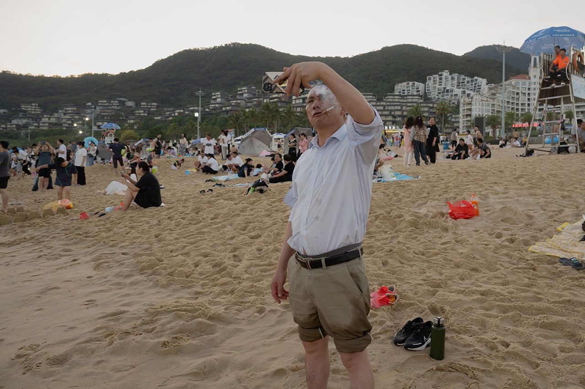Self-portrait of beachgoer as a young manimage: Billy H.C. Kwok
Ms Li’s antics provide a clue. She and her boyfriend of two years are not at Dameisha to swim (they cannot) or eat oysters (radiation). They wanted to go to the sea because their native Lanzhou in western China is so dry. But mainly because the beach is the perfect spot for photographs.
In a cream mesh dress and floaty veil Ms Li looks as though she is posing for her wedding photos. In fact, she and many others are dressed for the beach: the shoreline is one long photo shoot. Four women have set up a tripod to snap selfies, two in flowing red dresses, two in , a form of Chinese dress, with right arms raised to look as if they are holding up the sea. A woman in her 20s had travelled several hours that morning wearing a purple wig and purple mouse ears to take photos holding an illuminated star with fairy lights draped around her short purple dungarees.
In the 1990s, when few Chinese had their own cameras, photographers with instant cameras would snap visitors at tourist sites. People wanted images not merely of an attraction or landscape, but of themselves in front of the setting. Those rare, precious Polaroids were the forerunners to the smartphone selfies posted online today; both are proof of an individual’s experience. And a new destination must be celebrated with a special outfit. One woman (dressed in ordinary clothes) has brought her cat, Luna, trussed up in a peaked cap with holes for her ears and a lilac bodysuit.
For centuries China’s imperial rulers viewed the country’s shorelines as a buffer against a barbarian world. At times they forbade people from living within 15-25km of it. Today the sands at Dameisha are dominated by giant winged sculptures, commissioned by the city government. Impressive facilities serve the day-tripper—large toilet blocks (which even boast soap, rare in Chinese bathrooms) and showers; the metro will soon connect the seaside to urban Shenzhen.
Look closer, however, and the party’s presence is more insidious. Day-trippers are not the only ones taking photos. Entry gates capture an image of everyone who enters the beach; no state has more sophisticated face-recognition software than China. Tall towers stand every 120m up the beach with surveillance cameras pointing in all directions. Rather than encourage citizens to trust one another, a sign by a giant shoe rack reminds visitors that the cameras are watching.
image: Billy H.C. Kwok
image: Billy H.C. Kwok
In many ways this surveilled sandy fringe embodies the social contract that the Communist Party made with the Chinese people after the crackdown on pro-democracy demonstrations in 1989: political loyalty in return for greater personal freedom and affluence.
Anyone is free to come to the Chinese seaside, from the spotty 16-year-olds who dropped out of vocational college to the son of a tech worker who dashes in and out of the water, a giant grin revealing a gap where his front tooth came out at lunchtime while eating a spicy snack. (Or almost anyone—next to the free public beach is a private one, plus yacht club: “Shenzhen has many bosses,” says a staff member.)
The beach party
Even under the party’s watchful gaze, there are signs that the social contract is beginning to fray. Political loyalty is no longer guaranteed. Few people mention Mr Xi’s name at the seaside but his policies are ripe for discussion. A construction worker came for a dip because he can no longer find work now the property sector is floundering. A 20-something is feeling the pain of urban youth unemployment: he sells fingers of bright pink, processed sausage for three yuan apiece, cooked on a hotplate mounted on his three-wheeled bicycle. Often he makes just 100 yuan a day. A beach cleaner abandoned life as a subsistence farmer four years ago and now works seven days a week, living in a dorm for 300 yuan a month, aged 50. “It’s tough, but what can you do?”
Not everyone is getting richer or thinks that life is getting better. People still bemoan the long lockdowns in the late days of the government’s “zero-covid” policy. A woman whose tutoring firm had to shut when the government banned extra-curricular classes in 2021 is now applying for postgraduate degrees in Hong Kong—she wants a “better education” for her five-year-old. (Her husband, also a tutor, is trying his luck as an influencer-come-English teacher on Douyin, China’s TikTok.) A government worker from Inner Mongolia had to hand in her passport during the pandemic, as did most state employees, and must now apply to the authorities if she wants to go abroad.
As the light dims after 5pm, the state comes to the rescue again: bright floodlights flash on, extending the day’s joy. Even when it is wholly dark, children build castles and race toy diggers. A couple walks in the water, shin deep. A family unfolds a table and chairs to eat a kfc dinner. The social contract is safe—for now. And more brave folk step out into the South China Sea. ■
How the young Winston Churchill escaped from a prisoner-of-war camp
And what his unlikely tale reveals about imperialism
Listen to this story.Enjoy more audio and podcasts on iOS or Android.
The future prime minister sat at the bottom of a coalmine, clutching a bottle of whisky. He had fled from a prisoner-of-war camp, stowed aboard a train and jumped off in the middle of nowhere. The enemy were hunting for him. If caught, he would be locked up again; those who had helped him would be shot.
Escape would be tricky. He was absurdly conspicuous: a red-headed Englishman in Africa, who knew none of the local languages. “Wanted” posters mocked his “stooping gait” and “almost invisible moustache”.
Yet Winston Churchill did escape, and spun his exploits during the second Anglo-Boer war of 1899-1902 into a tale of derring-do that launched his political career. This improbable story reveals a great deal about war, journalism and history.
British people admire Churchill more than any other prime minister, because he stood up to an aggressive imperial power, Nazi Germany. Of British imperialism, however, he was a lifelong fan. As a young hack he went to cover the war in what is now South Africa convinced that his country, for all its flaws, was in the right. Today, as Britain and France agonise over their imperial history, former colonies try to move beyond it and Vladimir Putin spills lakes of blood trying to recreate Russia’s empire, the tale bears revisiting.
The Anglo-Boer war started because the Boers (descendants of Dutch settlers who began arriving in southern Africa in the 17th century) did not want to submit to British rule and because the British, eager to seize or at least suppress the Boer states, provoked them. The discovery of gold in the Transvaal Republic (one of two Boer states) raised the stakes, attracting British miners. Fearing conquest, the Boers attacked British outposts. The empire struck back. During three years of carnage that followed, neither side spared much thought for the majority of the population of the land they were fighting over: the black Africans.
Churchill arrived in Cape Town in October 1899 with a valet, a supply of fine wines and a contract from the for £250 a month (£26,500 or $33,500 today). This rate was “higher, I think, than any previously paid in British journalism to war correspondents,” he later wrote in “My Early Life”.
How did such a whippersnapper secure so fabulous a deal? You might suspect nepotism: his father had been Chancellor of the Exchequer, his cousin was the Duke of Marlborough. But in truth Churchill was not only a great writer (he later won the Nobel prize for literature), but also willing to take extraordinary risks to make a splash for the and a name for himself. He had already covered two wars, in India and Sudan, to widespread acclaim. He sometimes sounded as if he did not think a bullet could kill him. “I do not believe the Gods would create so potent a being as myself for so prosaic an ending,” he wrote to his mother.
In wars past he had served both as a journalist and an officer, killing perhaps four men in India and half a dozen in Sudan. This dual role had presented a conflict of interest: that he might favour actions that generated headlines over those that were militarily wise. He also criticised superior officers in print. The War Office found him so insufferable that it banned all correspondents in subsequent wars from being soldiers.
So Churchill began the Boer war as a not-so-humble scribe. He headed straight for the action, dashing to Estcourt, “a tiny tin township of a few hundred inhabitants” near the front line, via Durban.
He started giving officers older than himself “the benefit of his opinion”, as Candice Millard puts it in “Hero of Empire”. Estcourt was in danger of being cut off by 10,000 mounted Boers. The British commander, Colonel Charles Long, wanted to retreat. That would be “a blunder”, Churchill told him. John Atkins, the correspondent, marvelled at Churchill’s “unblushing self-assurance”. Colonel Long stayed put.
Churchill joined a reconnaissance train, though he thought the mission foolish. “It was only necessary to blow up a bridge or culvert to leave the monster stranded,” he wrote. “This situation did not seem to have occurred to our commander.”
Sure enough, the train was ambushed and partially derailed. Under heavy fire, Churchill led efforts to clear the tracks and send the engine back to safety with wounded men on board. He then ran back to the battle, but found that his comrades had been killed or captured. Two Boers spotted him. Churchill leapt into a shallow ditch. One Boer rode up and levelled his rifle. Intending to kill him, Churchill reached for his Mauser pistol, but he had left it on the train. It was surrender or die, so he surrendered, comforting himself that Napoleon would probably have done the same.
For the next few days Churchill demanded that as a journalist he be released. The Boers refused, citing British newspaper accounts that made clear he had been a combatant during the skirmish. (“MR CHURCHILL’S HEROISM” read one headline.) Also, as one Boer put it: “We are not going to let you go, old chappie...We don’t catch the son of a lord every day.”
Churchill was taken to Pretoria, the capital of Transvaal, and locked up with British officers in a converted school. “I certainly hated every minute of my captivity more than I have ever hated any other period in my whole life,” he wrote. “Luckily it was very short.”
He resolved to break out. Other prisoners were wary of letting him join their escape plans, since he was “unfit, too famous and he couldn’t keep a secret”, as Ms Millard writes. But he was also persuasive. He talked his way into joining a plot that involved hiding in a toilet and scaling the wall when the guards were not looking, on December 12th. Churchill went first, before his co-plotters were ready, and guards prevented them from following. Free but alone and lacking food and a compass, he had to get to the neutral territory of Portuguese East Africa (now Mozambique), 500km away.
Under cover of darkness, he set off on foot, with £75 and four slabs of chocolate in his pocket. “I was in the heart of the enemy’s country…My escape must be known at dawn. Pursuit would be immediate.” He pressed on, reached the railway and waited for a train. When it came, he hurled himself aboard and burrowed in among the empty coal bags.
After Churchill escaped, his fellow prisoners covered for him, stuffing a dummy under his blankets and pretending he was asleep. Unfortunately Churchill had booked a haircut and shave from a Boer barber for the next morning and forgotten to cancel it. His absence was noticed. The Boers were livid, and offered a hefty reward for his recapture.
Churchill slept among the coal sacks. When he awoke, he realised he would have to jump off the train before dawn, or risk discovery. He did so, near a coal town then called Witbank (now Emalahleni).
Study history, study history
John Bird, a local history buff, has mapped exactly what he thinks happened next, based on his knowledge of the landscape and a close reading of Churchill’s works. He showed your correspondent the bend in the tracks where the train slowed down, allowing Churchill to jump off; the pool of water from which he drank voraciously and the hill where he spent the next day hiding among the trees. “My sole companion”, Churchill griped, “was a gigantic vulture, who manifested an extravagant interest in my condition.” Today the hill is part of a not-yet-opened game park.
From the top of the hill Churchill could see a settlement in the distance. When darkness fell, he headed towards it and, desperate, knocked on a door. A man asked “Who’s there?” in Dutch. Churchill replied, in English: “I am a burgher [ie, a citizen of a Boer republic]…I have had an accident…I have fallen off the train. We were skylarking. I have been unconscious for hours. I think I have dislocated my shoulder.”
The stranger invited him in, sat him down and laid a revolver on the table. “I think I’d like to know a little more about this railway accident of yours,” he said, in English. “I think”, said Churchill, “I had better tell you the truth.” “I think you had,” said his host.
It was Churchill’s astonishing good fortune to have knocked on one of the few British doors in the area. His host, John Howard, a manager of a coalmine, fed him and hid him in a mineshaft, with a mattress, blankets and a box of cigars, as well as that bottle of whisky.
The mineshaft today is sealed, and the ground around it is unstable. The local coalfields are excavated at night by illegal miners, known as , who sometimes cause tunnels to collapse. When police try to evict them, gunfights erupt.
Howard hatched a plan to smuggle Churchill to the coast in a trainload of wool, setting off on December 19th. The British shopkeeper who was moving the wool, Charles Burnham, was in on the plot and accompanied the cargo. At one hotel along the way, he heard a rumour that Churchill had already passed by that spot, disguised as a Catholic priest. Around the same time Howard met some Boers with a British prisoner who they thought was Churchill. He did not disabuse them.
Arriving in Portuguese East Africa, Churchill walked into the British consulate covered in soot and introduced himself to the startled consul. He took a ship back to South Africa, where he was met by a flag-waving, cheering crowd who demanded a speech. He obliged. For the British, his escape was one of the few scraps of good news to have come out of a war that was going badly. Churchill resolved to join the fight.
Churchill, having lost a horse during a battle, is rescued by a comradeimage: Topfoto
He went to see Sir Redvers Buller, the British commander, and asked to re-enlist as an officer, without giving up his newspaper job. This was “very awkward”, he later recalled. The rule against combining journalism with combat had been written because of him. Buller “took two or three tours round the room, eyeing me in a droll manner. Then at last he said: ‘All right.’”
Churchill carried messages at Spion Kop, a gruesome struggle for a strategic hill “with a flat top about as large as Trafalgar Square”. One of the stretcher-bearers during the battle was Mohandas Gandhi, whom Churchill later came to detest (there is no evidence that they met there).
Next Churchill fought to lift the siege of Ladysmith, where a British garrison was hunkered down and running out of food. It gave him some of “the most happy memories” of his life:
“Day after day we rode out in the early morning on one flank or another and played about with the Boers, galloped around or clambered up the rocky hills, caught glimpses of darting, fleeting, horsemen in the distance, heard a few bullets whistle, had a few careful shots and came safe home to a good dinner and cheery, keenly intelligent companions.”
Ultimately, the Boers could not resist superior numbers. In June 1900 British troops entered Pretoria. Churchill went to see the remaining prisoners-of-war. They raised a makeshift Union Jack. Then Churchill went home and was elected to parliament aged 25.
Many Brits thought the war was over when the main Boer cities surrendered. But the Boers resorted to guerrilla tactics and fought on for another two years. The British responded with scorched-earth tactics. They herded Boer civilians into what they called “concentration camps”—a phrase that was to take on a hideous new meaning decades later. Conditions in these camps were atrocious—thousands of women and children died of disease. In time this caused outrage back in London, and tarnished the eventual British victory.
One lesson that can be drawn from the Boer war is that great powers often underestimate smaller enemies. The Boers were mobile, motivated and knew the land. They hid in well-disguised trenches and used smokeless gunpowder. The Brits who thought fighting them would be easy had something in common with Russians today who failed to foresee how ferociously Ukrainians would defend their country.
Another lesson is that military victory does not always bring political triumph. The war created “South Africa as we know it; as a political reality rather than a mere geographical term,” notes Professor Thula Simpson, author of “History of South Africa”. But it came to be dominated by the Boers, not the British, for most of the next century.
The two sides signed a peace deal in 1902 that absorbed the Boer republics into the British empire. It ducked the most important question: whether to give black people the vote. The British Cape Colony had for some time allowed men of property to vote regardless of race. In practice not many blacks qualified, but the Boers regarded this arrangement with horror. They negotiated a clause in the peace treaty stating that the question of the “native” franchise would “not be decided until after the introduction of self-government”.
In 1910 South Africa became a “self-governing dominion”. Its new Boer citizens helped make sure that the black franchise was never extended beyond the Cape. It was gradually curbed and, under apartheid, abolished. Had the British colonies never swallowed the Boer republics, might South Africa’s awful racial history have evolved differently? We will never know.
History will be kind to me
In a YouGov poll, 69% of Britons viewed Churchill positively. That is more than double the 32% who said, in 2019, that the British empire was “more something to be proud of than ashamed”. He is remembered less, and less kindly in South Africa. “In Europe, he was a crusader for democracy and against fascism, but in the South African context, he was opposed to democratic rights and majority rule,” notes Professor Simpson.
History is complicated. Often people’s sense of who they are depends on a simple, moralistic narrative. South African politicians today talk of the evils of colonialism and apartheid; yet many see no problem with Russia’s attempt to carve up Ukraine. Yascha Mounk, author of “The Identity Trap”, writes that “In Britain …some believe that the nation’s character is defined by the cruelties of imperialism, while others think it consists exclusively of the heroism of the Battle of Britain.” As Churchill’s life reminds us, a fair account must include both strands, and many more besides.
The young Churchill’s belief in empire was challenged, a little, by one of his boyhood heroes. During a speaking tour of America he met an ageing Mark Twain. “Of course we argued about the [Boer] war. After some interchanges I found myself beaten back to the citadel ‘My country right or wrong’. ‘Ah,’ said the old gentleman, ‘when the poor country is fighting for its life, I agree. But this was not your case.’” ■
Listen to this story.Enjoy more audio and podcasts on iOS or Android.
Spurn point would be a desolate place to die. Stretching five precarious kilometres into the North Sea, the constantly shifting finger of East Yorkshire coast is little more than a narrow sand bank held together by sea grass, the only obvious signs of human habitation a long-abandoned lifeboat station and lighthouse, both now given over to the winds and the rain. It is a permanent home solely to wading birds and the bugs they feast on, perhaps to the odd vole. But it is also, on occasion, the death bed of the world’s largest creatures. Beached on its sand, they suffocate from the weight of their own bodies under its open skies.
In England whales, sturgeon and porpoises are “royal fish”. Those caught off the coast are property of the Crown; so, in general, are those beached on the shore. Those which expire on Spurn Point, though, are an exception. The wonderfully named Lords Paramount of the Seigniory of Holderness, a line of local nobles, have first dibs on them. This has sometimes been lucrative. When, in 1749, a sperm whale expired on its sands the then lord sold it to David Bridges of Kingston-upon-Hull, the closest city, for £90 (£16,000, or $20,000 in today’s money). But sometimes it was not. The estate’s records show that when it chose to dispose of a whale on its own the following year it cost £7 more to cut the beast up than the sale of the meat made at market, valuing the whale’s remains as a liability worth £1,276 today.
In the 18th century, then, the value of a whale was a matter, albeit an uncertain one, of material trade: what would the parts bring at market. Today things are more complicated. In 2019, Ralph Chami of the International Monetary Fund, calculated that a great whale was worth about $2m to the global economy; from that he went on to value the world stock of great whales at around $1trn, or roughly the market capitalisation of Amazon, an online retailer.
Mr Chami’s approach sits within the “natural capital” paradigm of environmental economics, in which components of the biosphere are treated as assets to be valued. The fair value of a stock or bond is based on its monetary returns—the dividends a shareholder receives or the coupon payments a bondholder gets—appropriately discounted for the time it takes those returns to materialise. The value of a piece of natural capital follows the same logic. The “ecosystem services” provided by the relevant bit of the environment just by dint of its continued, unharmed, existence are treated as the returns which it generates; an estimate of the monetary worth of those services gives it its value. In 2011 Robert Costanza, an economist, put an annual value of $125trn on all of these ecosystem services, compared with a yearly global gross domestic product of $75trn. By this logic the natural world is humankind’s greatest asset.
For some the idea of putting a price on the wonders of the natural world sits somewhere on the borders of the cynical and the sacrilegious. On top of its apparent impiety, it is held to be a form of academic imperialism, yet another example of economists’ endless desire to bring more of the world into their territory. When Adrienne Buller, a dissident economist, published a critique of the way “green capitalism” seeks to financialise every aspect of the world, she could find no better emblem of such excess than Mr Chami’s research, and so she chose to title her book “The Value of a Whale”. Her point is that whatever that value is, it is not one reducible to dollars and cents.
To some extent, Mr Chami agrees; but he has a compelling defence. Now having set up his own consultancy, he says that he wanted to help preserve whales not by telling a story about their intrinsic beauty but about the service they render to the world by moving carbon which was recently in the atmosphere into the ocean depths. And there is only one way to communicate such value. “If I had said that without putting a dollar amount no one would listen,” he says.
Through most of modern history the idea that the value of a whale was not discoverable through its market price would have seemed silly, at least to anyone operating in that commercial market. But for three centuries whales have occupied a peculiar point where economics and the environment meet, their fortunes tracing the changing relationship between the two. In the 19th century a drop in the demand for whale-based products worked to the whales’ benefit. In the 20th century, though, the supply of whale-based products became much cheaper and demand returned redoubled. Whales became increasingly endangered until societies newly focused on the environmental costs of affluence imposed a worldwide whaling ban. That made them literally priceless.
In the 21st century they are once again being talked of as things with value by economists versed in the lexicon of natural capital, public goods, ecosystem services and the like. These new valuations lack the precision offered by a Hull trader’s willingness to buy, or the market price for a barrel of whale oil printed in a newspaper. But their vagaries have a good excuse. They seek to value not just the whale’s body, but its living presence. This means the price of a whale has become, like the creature itself, a slippery, barely seen thing, showing its flukes to those straining to see it before disappearing once again. More imprecise than economists would wish; but better than the certainties of the flensing deck and the butcher’s slab.
In 1861 , a magazine, published a cartoon showing sperm whales in black tie and ball gowns raising their champagne glasses in celebration and relief. It was, the caption informed readers, “The Grand Ball given by the Whales in honour of the discovery of the Oil Wells in Pennsylvania”. The oil rush which started in Titusville, Pennsylvania in 1859 had produced a new commodity that would reilluminate America. Light would no longer come from burning whale oil but from kerosene gushing out of the ground. Thanks to this substitution of fossil-fuel energy for biomass, the whale would be left at peace.
Those employed in the American whaling fleet, sailing predominantly out of New Bedford in Massachusetts, were less moved to celebration. Oil had been their main product; baleen for corsets, ambergris for parfumiers and other ancillaries could not support the industry. From a peak of 137 whaling voyages in 1851, the year in which Herman Melville’s “Moby Dick” was published, the number dwindled to around a dozen a year by the turn of the 20th century. Whale oil prices halved from £32 a barrel in 1874, when the data series starts, to £16 in 1887. In a piece which draws a parallel between the economic and strategic importance of the historical whaling industry and the oil industry, Charlotte Epstein, a political philosopher, notes that “Whale oil constitutes the only form of energy that our societies both centrally depended upon and turned away from completely.”
That final turn, though, was still a few twists away. Whales of the 20th century would have cause to look back on their forebears in swilling champagne under a banner saying “Oil’s well that ends well” with bitter irony. Yes, fossil fuels initially made whale oil less valuable. But before long they would also make whale hunting much cheaper. Fossil fuels allowed Norwegian and British steamships to chase them into the waters around Antarctica, which Melville had called the whales’ “polar citadel”. Explosive harpoons, made possible by the fossil-fuel-driven growth in explosives, made whale hunting easier and also, worst of ironies, more important for nations going to war, as whales were an excellent source of the glycerine used in nitroglycerine.
These new hunting technologies made the great whales a source of fat cheap enough to be used as pet food, a treatment for trench foot and, overwhelmingly, spread on bread. By 1935 roughly 84% of the world’s whale oil was being turned into margarine, at a price per barrel of £15 or so. With up to 120 barrels of oil in a typical blue whale’s blubber, the largest animal to have ever lived had a market value of about £1,800 ($130,000 or so in 2023).
Whales are, in principle, a renewable resource. But the rate at which they renew themselves is fairly slow. Blue whales have calves every two or three years. It takes those calves a couple of decades to get to their full size. This meant that as sales increased, stocks diminished, a change which first became a matter of official concern in their breached citadel: the Antarctic waters administered from Britain’s South Atlantic colonies.
In 1911, Sir William Allardyce, governor of the Falkland Islands Dependencies, began to worry that the rapid expansion of this Southern Ocean whaling risked becoming unsustainable. The whales were, to all extents and purposes, free to whoever could catch them; the government required only that the whalers pay for a whaling licence—£25—and a royalty on each whale caught—£10 for a right whale (so called because they were the right whales to go after), ten shillings for a sperm whale and five shillings for any other whale. Such fees were less than 1% of the whalers’ profits.
Had Allardyce been a modern economist he would have raised the prices. Instead he limited the number of licences he was willing to issue. He also communicated his concerns to London. As a result the British Colonial Office developed an interest in cetology. The levies on whale hunting were used to fund Antarctic research voyages on board the refitted , once the ship of polar explorer Robert Falcon Scott. Her complement of scientists took note of the abundance of nutrients in the waters around the islands, their currents and temperatures, the types of phytoplankton (which photosynthesise, like plants) and zooplankton (which eat the phytoplankton) which they were home to, the volume of krill (crustaceans that eat plankton of all sorts) and the populations of whales (most of which eat the krill). To track the whales’ movements they fired on them with harpoons which left stainless steel darts buried under their blubber; whalers were paid £1 for every dart they recovered.
The expeditions showed an appreciation that measuring the true wealth of nations requires ecologists as well as economists: a well-run country needs to know about the natural assets on which its prosperity ultimately depends. They did not call it “natural-capital accounting”, but armed with the expeditions’ data the Colonial Office saw the need to protect the future of the country’s assets. It pressed for restrictions on catches, including limits on the hunting season, and prohibitions on the hunting of juveniles.
Attempts at spreading such regulations internationally, however, were thwarted by politics, economics and technology. When, in 1927, the recently formed League of Nations proposed an international conference on whaling, various countries objected that such issues should properly be bilateral, not global. There were economic objections, too: when it decided not to hold the conference, the league said it was because the market had no need of such regulation: “If hunting becomes unprofitable it will stop by itself, long before whales are exterminated.”
Technology, meanwhile, was helping the industry escape almost all regulation. In Allardyce’s day whales killed at sea still had to be processed on land, or at least at a near-shore “floating factory”, allowing some oversight. The advent of the factory ship allowed whalers to do all that they needed to do on the high seas, and thereby pay nothing for their catches. Overexploitation continued: whale numbers fell further. Writing in 1933, Harold Salvesen, scion of a whaling family but also, in the 1920s, an economist at the University of Oxford, explained why the simple nostrums that had apparently satisfied the League of Nations did not work. “The reason is quite simple”, he wrote. “Whaling companies never have property in the whales they hunt; if one company spares them not the whales but another company will profit from it.”
It was the needs of the whalers, not the whales, which drove change. The Great Depression saw the world with more whale oil than consumers wanted. Unilever, a British consumer-goods company and the world’s largest buyer of the stuff, said that it would buy up the excess stock—but only if the Norwegian fleet sat out the 1931-1932 hunting season. The following year the British and Norwegian industries decided to self-regulate, setting quotas for catches so that prices would rise. The companies’ quotas were measured in “blue-whale units”, each equivalent to a single blue whale, two fin whales, five humpback whales or 12 sei whales. Salvesen, the whaler-economist, bought his rivals’ quotas, paying them to keep their ships at home while maximising the capital efficiency of his own.
Prices went up. So did profits. But there was an unforeseen consequence. Giving all blue whales the same value encouraged whalers to seek out the largest of them, which meant the cows, especially pregnant ones storing up blubber for later conversion to milk. In 1932-33 the whalers working under the quota system took 422 cows for every 100 bulls. They were profiting today at the expense of the future in a peculiarly literal way.
The end of the second world war saw a new internationalism take hold. The International Whaling Commission (IWC) was founded “to provide for the proper conservation of whale stocks and thus make possible the orderly development of the whaling industry”. Its early decades were an abject failure. Alongside the long-standing whaling giants of Norway and Britain, other nations were joining the hunt. General Douglas MacArthur, who administered the American occupation of Japan, encouraged the defeated and semi-starving country to use its decommissioned navy ships to hunt whales in the Southern Ocean.
The Soviet Union, too, became a major whaling nation, with the help of American whaling ships provided through the wartime lend-lease programme and a German factory ship seized as reparations. Joseph Stalin, the Soviet leader, encouraged IWC delegates to conserve whales from “predatory and irrational exploitation”. The logic of scientific socialism would, the USSR thought, do better than free markets at preserving natural resources. It didn’t.
The IWC was not completely supine. From 1955 on it imposed limits on the catch of the largest whales, the blues. But overall it continued to grow. In 1964, roughly the industry’s peak, an estimated 82,000 whales were slaughtered. Blues and rights being protected and scarce, sperm whales bore the brunt of the hunt.
In that decade, though, whales, and in particular endangered ones, started to take on a new symbolic and cultural value. Big-eyed, warm-blooded and viciously slaughtered, they served well as stand-ins for peace and the environment in general at a time when young people were increasingly exercised about both. The growth of Soviet whaling added some cold war needle to the mix.
The cold war bolstered the whales’ standing in another way, too. After the second world war, the whaling industry adapted sonar systems and helicopters from their military uses to whale spotting. In the 1960s new ways of underwater listening developed by American engineers listening out for Soviet submarines made the first recordings of humpback-whale song. Scientists took note; so, soon, did the public. “The Songs of the Humpback Whale”, an LP released in 1970 at a retail price of $9.95, breached the Billboard top 200 the following year, reaching number 176 in May 1971 and staying in contention for eight weeks. The whales received no royalties, but their plaintive calls provided great PR.
America’s Endangered Species Conservation Act of 1969 included protection for the eight largest whales. In 1971 the country proposed an outright moratorium on whaling at the IWC. At the UN’s 1972 Stockholm conference on the environment, forebear of today’s COP climate summits, the American delegation proposed and won a vote calling for a ten-year moratorium on commercial whaling. When the USSR and Japan rejected the whaling quotas the IWC assigned them for being too limited, President Gerald Ford threatened a trade embargo.
Countries without any prior history or economic interest in whaling began to join the IWC, keen for the diplomatic boost from being on the side of nature. Steadily, it turned from a whaling organisation into an anti-whaling one. The eventual moratorium on commercial whaling was passed at the IWC in 1982.
Overall, the 20th century saw an estimated 2.9m great whales killed; Phillip Clapham, an American biologist, called it “the largest hunt in human history”. Many species were on the verge of extinction.
To a large extent, the IWC ban worked. Whale populations are recovering, albeit slowly. The IWC estimated that there were roughly 450 blue whales left in the Southern Ocean at the time of the moratorium; its latest estimate, made at the turn of the millennium, was that there were now 2,300. That is a rate of growth of about 8.5% a year. Humpback whales have done even better: numbers in the south Antarctic have increased from 10,230 to 42,000. The environmental movement had scored what might be seen as its first global success. But there were still a few places where whales had a price.
The flesh of a great whale tastes something like beef or venison. It is iron-rich and coloured almost purple thanks to the amount of haemoglobin needed to store a body’s worth of oxygen while diving into the abyss. In a basement restaurant in Tokyo, it is served as steak, battered like fried chicken, wrapped into shumai, a kind of Chinese dumpling, and finally fried as a set of well-spiced rice balls. It all tastes fine, but not quite good enough for your correspondent to overcome his discomfort. Most of the dishes are left abandoned after a token effort. Eating whale comes more naturally to Japanese people, suggests Konomo Kubo, the secretary of the Japanese Whaling Association and your correspondent’s dining partner.
After the IWC’s 1982 moratorium Japan continued to hunt under the auspices of research. Kyodo Senpaku, the national whaling company set up in 1987, auctioned off the meat. Initially prices increased as supply dwindled: the cost of a kilogram of whale meat rose from $9 straight after the moratorium to around $30 per kilo in the early 1990s, according to official auction statistics. Today it is a minority habit. In 2023 a Tokyo fishmonger sells a 130g steak for ¥702, roughly $35 per kilo. Overall consumption has collapsed from 233,000 tonnes a year in 1963, the peak, to 1,000 tonnes in 2021, roughly 16 grams per person.
That was two years after Japan had left the International Convention for the Regulation of Whaling, the treaty under which the IWC operates, and resumed commercial whaling. Commercial, here, does not mean economically sustainable. The government was spending around ¥5bn ($35m) a year to keep the industry running in 2019. Spread over the 335 whales the Japanese fleet caught in 2019 that amounts to slightly less than ¥15m per whale. Since the exit Kyodo Senpaku, the whaling company, has had the hard job of demonstrating that commercial whaling is still a viable industry. In 2022 it managed to eke out a small operating profit of ¥132m, which management attributed to cost-cutting. But in 2024 it will have to start making payments on ¥3bn it borrowed from the government after subsidies ended.
One way to see this propping up of the whaling industry is through the lens of ecosystem services. An accounting system used by the UN divides these services into four kinds: provisioning, regulating, supporting and cultural. For provisioning services think of cutting timber and mining coal; hunting and gathering the bounty of the natural world. Regulating means keeping natural processes ticking over; bees pollinating flowers or freshwater plants purifying water. Supporting services are more fundamental and include the operation of carbon cycles, creation of atmospheric oxygen or the maintenance of the soil that ultimately keeps all plants and animals alive. And then there are cultural services. Nature provides people with the symbols and language to understand the world as well as food, fibre and fuel to survive it.
Whales provide cultural services in abundance. Ancient and indigenous literature often treats them as the guardians or descendants of the gods; in modern works of literature, such as “Whale Fall” by Rebecca Giggs, whales die elegiacally and thereby remind humanity of its cruelty. A first edition copy of “Moby Dick” has an auction price of over £53,000, more than the roughly ¥8.4m ($60,000) worth of meat that Mr Kubo reckons is typically on a whale.
In Japan, part of the cultural service whales provide is as a means of self-assertion. “It is a way of raising a fist to foreigners,” says Kurasawa Nanami of Iruka and Kujira Action Network, a whale and dolphin conservation charity. You do not have to be fond of whale meat, or partake in it at all, to hate the idea of Western influence telling the Japanese what they should do, she points out. Resentment at Western sentimentality and hypocrisy over whales—did not MacArthur rebuild the industry? Were not Commodore Perry’s “black ships” in search of a refuelling station for America’s whalers?—is said to have deep roots. Conservationist critics read the story differently, highlighting the degree to which Japanese industrial whaling is an invention of the 1950s and a product of foreign influence rather than indigenous culture to boot. Cultural value can be complicated.
It can also be a wasting asset. The government spends ¥340m a year helping with whale marketing, largely to persuade younger consumers that whale is worth eating. The clients at a whale-meat vending machine in Keikyu, a Tokyo suburb, are largely older. The shop manager thinks they are nostalgic for the days when whale was served as part of school lunches. Marketing materials reassure younger customers: the walls of the shop are covered with placards suggesting recipes, including whale spaghetti, lauding the health benefits of whale meat and suggesting that hunting whale is good for the environment: whales are eating too many salmon and squid, the posters argue. In ecosystem-services speak, the whales represent a loss; eating them has a value.
It is an argument few ecologists find convincing. But some species do have a disproportionate effect on the shape and texture of the ecosystems they inhabit. The reintroduction of wolves to Yellowstone National Park in America has been championed as having helped reduce the impact of elk on trees and improve the overall health of the habitat. Such supporting services, though, cannot be easily priced on a piecemeal basis.
Dieter Helm, an Oxford economist (like Harold Salvesen) and the author of a book on natural capital, argues that such services cannot be apportioned out to individual creatures; the presence of wolves may matter a lot, but that cannot be used to put a value on the marginal wolf. For him it makes more sense to think about habitats and ecosystems as the basic unit of natural capital than particular creatures, or even particular species. “It is absurd to ask ‘What is a whale worth?’” he argues.
In this view the value of “charismatic megafauna”—a term first used of giant pandas—is as figureheads. The ecosystem may be the thing that matters, but it is not the thing that inspires wonder, and most of its participants are barely even visible. There is no great American novel written about phytoplankton. They do not appear in cave paintings, no recording of their plaintive calls has breached the charts; they play their crucial role in the carbon cycle and the ocean food web, unsinging and unsung.
And yet the whales are not just ambassadors. Mr Chami’s assessment of their ecosystem-services value rests on the idea that they play a distinctive regulatory role in carbon sequestration. They increase the size of the ecosystem they inhabit, and thus its ability to absorb carbon. Their vertical movement through the water column returns nutrients from the lower tiers to the surface waters in “buoyant faecal plumes”, thus allowing more phytoplankton to grow. The study of this “whale pump” dates back to the expeditions. Next is the “whale conveyor belt”. Migratory whales move nutrients horizontally, as well as vertically, getting them to places which continental run-off and ocean currents neglect. Finally there is whale fall: the descent of carcasses, with their carbon, into the abyss.
Based on the stimulus whales provide to the ocean’s ability to sequester carbon, Mr Chami estimates that returning whale populations to their pre-whaling levels would allow the fertilised oceans to store away 1.7bn more tonnes of carbon dioxide a year than today’s depleted ones do. At a carbon price of $60 per tonne—a fairly conservative estimate of what economists call the “social cost of carbon”—that represents a benefit to the world at large of around $13 per person per year through improved regulation of ecosystem services. Whales, then, are global public goods: undervalued by the market and therefore undersupplied.
I N constable hall, the East Yorkshire residence of the Lords Paramount of Holderness, some erstwhile natural capital has been turned into the physical sort: an asset which brings monetary returns. Part of what visitors buy for the £13.75 it costs to visit the stately home is access to a barn containing the centuries-old skeleton of a sperm whale. Not particularly large by sperm-whale standards, it is still an imposing beast. Its spinal column is the width of your correspondent’s waist; its skull could contain half a dozen of him lying down.
In 1825 this whale was beached slightly farther north along the Yorkshire coast than Spurn Point, near the village of Turnstall. On this occasion Clifford Constable, the 18-year-old lord, decided not to sell it for parts but to keep it for himself. After a dissection by a local doctor with an interest in natural history, it became an exhibition. Its skeleton was placed in the parkland for visitors to marvel at, the bones held up on iron poles so that the whole thing floated in the air, at least for a while.
Over time it fell into disrepair. Bits went missing. At one point a scout troop tried to use some of its bones as firewood. In 2019 the current lord decided the situation needed sorting out and put the whale on permanent display in one of the seigniory’s barns. The stately home declared an amnesty so as to get as many pilfered pieces as possible back. Some bones returned; some did not. Philippa Wood, the curator, says she has been told that one of the missing vertebrae was made into a coffee table. But it attracts a fair bit of attention, not least from fans of Herman Melville keen to see the only whale mentioned in “Moby Dick” which actually existed then and is still around today.
In the novel the Turnstall whale is complete. Indeed Ishmael, the narrator, claims the skeleton has been turned into a mechanical marvel: “Sir Clifford’s whale has been articulated throughout; so that, like a great chest of drawers, you can open and shut him, in all his bony cavities—spread out his ribs like a gigantic fan—and swing all day upon his lower jaw.” Ishmael suggests to the reader that a visit can be used as a way of verifying the dimensions of a sperm whale that he has had tattooed on his forearm, but warns it will eventually carry a price: “Sir Clifford thinks of charging twopence for a peep at the whispering gallery in the spinal column; threepence to hear the echo in the hollow of his cerebellum; and sixpence for the unrivalled view from his forehead.”
Melville contrasts the profane commercialism of this natural cathedral with the treatment of another whale skeleton, one which Ishmael claims to have been the primary source for the whale measurements tattooed on his arm. He tells the reader that he was invited to holiday with a king in the Solomon Islands who, like the lords of Holderness, enjoyed sovereignty over whales that beached in his domain. His priests had turned a beached sperm whale’s bones into a temple: “In the skull, the priests kept up an unextinguished aromatic flame, so that the mystic head again sent forth its vapoury spout.” When Ishmael tries to measure it he is confronted not with a bill but claims of heresy: “‘How now!’ they shouted; ‘Dar’st thou measure this our god! That’s for us.’”
The priests then set about measuring the volume of the skull. They soon come to blows over the matter.
The economic priesthood at the UN, rather than arguing about the best way to profane the sacred with the tools of measurement, instead provides alternative methodologies among which adepts can make their own choice. The system of environmental-economic accounting, akin to the guidelines it offers for estimating GDP, which the UN set up in 2012 now offers five different ways of generating monetary valuations for ecosystem services. They go from the relatively simple—the rent paid for agricultural land—to the fiendishly complex. One suggestion involves looking at very small variations in the amount of ecosystem services provided to a production process in order to calculate the “marginal productivity” of those services. The example the UN gives is of pollination across different areas where detailed data of agricultural productivity is well known. Incorporating data on the areal density of pollinators into their models could, perhaps, allow statisticians to estimate the marginal productivity of a bee.
These are at best educated guesses. Classifying, enumerating and quantifying ecosystem services reaches the limits of both economists’ and ecologists’ skills. Mr Chami’s estimate of the value of a whale required multiplying an uncertain price (the social cost of carbon) by an uncertain quantity (the volume of carbon removed from the atmosphere by the interaction between whales and the rest of their ecosystem). Since his original paper the role of whales in any large-scale sequestration of carbon has come under attack. Some of the critics worry that a belief in whales as carbon-removing saviours will delay the action on climate change needed to protect the ecosystems of which those whales form a part.
Could such estimates be replaced by a market price? Also in 2012 a group of ecologists suggested doing exactly that. Under their proposal the IWC would issue permits allowing for commercial whaling. Given that the amount spent on whale conservation was, at that point, an order of magnitude bigger than the commercial whaling market, conservationists would be able to buy the whole set. When what is at risk is an entire species of whale, not just the marginal whale, the perceived value rises, even though the ecosystem services offered by a dangerously small population will tend to be minimal. There are fewer than 500 North Pacific right whales left; the North Atlantic rights are in a similar state. A survey done in 2009 suggested that Americans would be willing to pay an average of $73 a household for the species to be removed from the endangered species list.
The suggestion is not to everyone’s taste. Markets in nature feel to some like privatising a public resource for private profit. They can feel less like the protection of a common heritage, more like the enclosures of common land in 18th-century England, a dispossession that drove rural poverty and a flight to the then deeply unhealthy cities. Rather than making investment environmentally friendly, markets in nature make the environment investor friendly. “The desire to be able to reflect the value of ecosystems or individual species in a capitalist economy is very legitimate,” says Adrienne Buller, author of “The Value of a Whale”. But when that desire sees things which can be traded given undue priority, environmental policy gets distorted.
Nevertheless some are eager for the billions they think such markets can mobilise for the environment. Negotiators at the 2022 meeting of the UN Convention on Biological Diversity, held in Montreal, called for a programme of biodiversity credits to help finance the goal to protect and restore 30% of the world’s land and oceans by 2030. These credits would be tradable, allowing markets to identify the cheapest and most effective ways to keep nature safe. Demand would, supposedly, come from marketing and corporate social-responsibility efforts. Discrete units of nature could be sold off to companies in exchange for a landowner pledging to rewild their plot and thereby offsetting the impact.
There have been some such schemes around for a while. America has had a programme of offsets for damage to wetlands since the 1970s. Costa Rica was also a pioneer, with a programme of government payment for ecosystem services launched in 1997. Landowners are rewarded for carbon sequestration, improving water, protecting biodiversity and promoting natural beauty. Britain proposed something similar for its post-Brexit programme of farm subsidies; property developers were to prove that their building projects lead to a 10% “Biodiversity Net Gain”. Buying up biodiversity credits from farmers would have been one way to do so.
Perhaps, then, your correspondent should buy a biodiversity credit to expunge the lingering guilt he feels over his Tokyo dinner with Mr Konumo. A whale dies off the coast of Japan but, perhaps, a piece of wetland in Florida is restored. An equal amount of natural capital replaces another and the world is no worse off; the common inheritance of mankind changes its shape but not its size.
The practical, as well as ethical, problems are numerous. Start with fungibility. Carbon offsets have the advantage that one tonne of carbon dioxide is the same as every other tonne, and there are established rules for valuing other greenhouse gases in terms of equivalent amounts of carbon dioxide. There is no similar common unit for nature, no way, beyond willingness to pay, of establishing how much wetland is equivalent to a whale. Existing schemes typically use a sort of hierarchy: first avoid damage, and if that is unavoidable then compensation should be as similar to what is removed as possible.
But for all the practical problems and seeming absurdities, advocates of pricing nature still have one very good argument on their side. Not pricing it is often worse. If nature has no economic value it will either be freely exploited to the point of destruction or set aside as inviolable, a recipe for economic stasis.
“The mistake is to have some pat answer about states, market and prices,” says Partha Dasgupta, an economist at Cambridge University and the editor of a review of the economics of biodiversity for the British government. He points out that all societies use a combination of prices, direct control and social norms to regulate the relationship between the economy and the biosphere. In Britain, for instance, custom dictates that oysters only be eaten when there is an “r” in the month; May to August is the spawning season for the native species of the shellfish. Prices are one tool to express nature’s value, not the only one. “If society is determined to ignore natural capital they will do it whether or not there is a pricing system,” says Sir Partha.
The Shiretoko peninsula, in eastern Hokkaido, the northernmost major island in the Japanese archipelago, is one of the few places one can see sperm whales from the shore. About 25 kilometres away is Kunashir Island, disputed territory between Japan and Russia. In winter the straits that separate the islands are filled with drift ice and the surface becomes a breeding ground for white-tailed sea eagles, attracting birdwatchers. When the ice melts, phytoplankton bloom in the warming water. Then come zooplankton, then salmon and squid, then, finally, the world’s largest predator: sperm whales spend their summers here.
That explains why Abashiri, a city that sits a short distance to the west of the peninsula, was once a busy whaling port. Today the boats which leave it in search of fins and flukes are full of tourists; whale-watching now adds more to the Japanese economy than whale-eating does. Unfortunately for your correspondent, a fervent “Moby Dick” fan, this spring he seems to have arrived too early for the sperm whales. But the spout of a fin whale, the second-largest species, is enough to send a jolt of electricity through the boat of whale-watchers he has joined. They rush to the side, clutching cameras. The boat idles closer. The whale disappears beneath the waves. The boat settles into a watchful silence. The spout reappears for a few puffs of vapour before the fin whale’s gargantuan form, once again, slips into the cold depths of the Okhotsk Sea. This time, the reverential hush on the boat is met with seeming indifference from the whale. It does not resurface. A moment of communion is over. The ticket cost ¥8,800. ■
Fan clubs can quickly become get-out-the-vote operations
Listen to this story.Enjoy more audio and podcasts on iOS or Android.
Around christmas in 1987, 30 people in the southern Indian state of Tamil Nadu killed themselves. Some swallowed poison, others set themselves on fire. All were distraught at the death of their hero, M.G. Ramachandran, aged 70. “MGR” had been the state’s chief minister for a decade. To his acolytes, he was , the revolutionary leader.
That was not a title he earned from politics. Under his rule, living standards in Tamil Nadu barely improved. But in a previous role, he had protected women from predatory men, wrestled land from feudal landlords and delivered riches to the poor. He did all these things as the star of 136 films. That his noble deeds were scripted and fictitious never dimmed the passion of his millions of fans.
Since his demise, much has changed in Tamil Nadu. The state grew much richer after India’s economic liberalisation in the 1990s. Its 77m people are now among the best-educated in the country. But some things have stayed the same. Cinema is still a finishing school for politics.
Kollywood, the Tamil movie industry, named after Kodambakkam, an area in Chennai, the state capital, produces around 150 films a year. That is less than the 200 made by Bollywood, its Hindi rival. But in many ways movies matter more in Tamil Nadu. The state has 5% of India’s population but 12% of its screens. Ticket prices are capped, making them among the cheapest in India. And in all but five years since 1967, the state’s chief minister has had Kollywood roots.
The incumbent, ominously named M.K. Stalin, dabbled in acting as a young man. His son and intended successor, Udhayanidhi Stalin, has produced and acted. His father, Muthuvel Karunanidhi, was a scriptwriter and the state’s longest-serving chief minister. Tamil Nadu’s second-longest-serving leader, Jayalalithaa, who died in 2016, was an actress. (Most Tamil thespians go by one name.) In the past 30 years four parties have been founded by actors, including Rajinikanth and Kamal Haasan, who first won fame in the 1980s. Vijay, a newer star, may soon plunge into politics. The leap from star to power is propelled by fans.
A male Tamil idol typically gives larger-than-life performances in “masala” (mixed-genre) films, which feature action, comedy, romance, melodrama, recurring punchlines, and a hyper-masculine hero fighting injustice. Such a “mass hero” (ie, hero of the masses) can inspire intense devotion.
Consider what happens before, during and after a big release. The hype starts months in advance, when the trailer is released. Hundreds, sometimes thousands, gather to watch that first snippet. The launch of the soundtrack triggers a similar celebration. The biggest party, though, is on the day of the first screening.
Rohini Silver Screens, a theatre in Chennai, is specially designed to celebrate the “first-day-first-show”. Banners deck the theatre, featuring action shots of the hero and images of humble fans. In the final hours a gigantic cardboard cutout of the star makes an appearance. Amid a frenzy of fireworks, music and dancing, fans pray for box-office success by performing a , a Hindu ritual that involves pouring milk on the cardboard cutout, just as a priest would consecrate a temple idol.
The hero’s first appearance triggers pandemonium. In his first scene in “Leo”, which premiered on October 19th, Vijay fights a hyena with his bare hands, in slow motion, to a pulsating score. Fans scream and throw confetti. They keep screaming, especially when the hero delivers punches or punchlines.
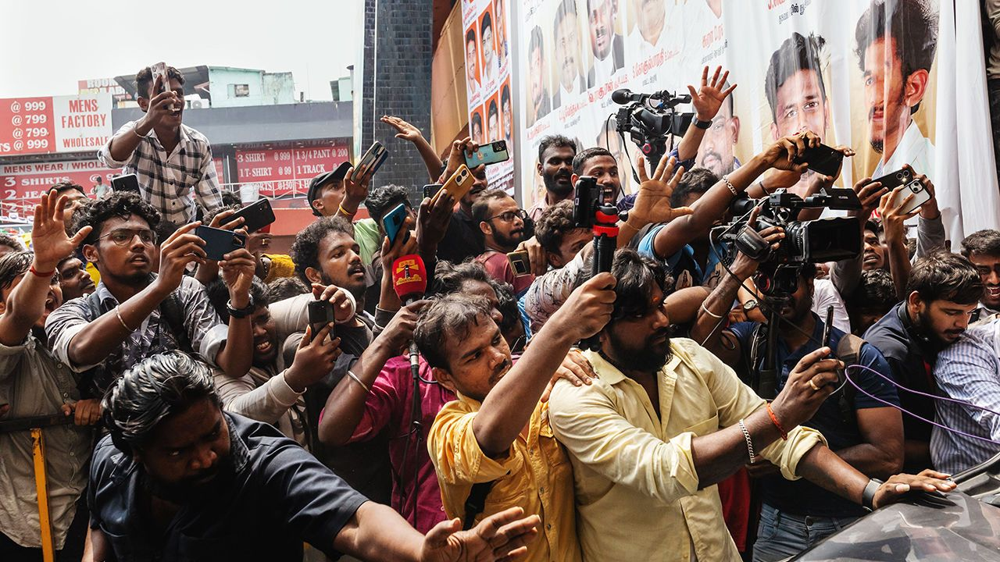Fans and journalists jostle for view of director of “Leo”image: Harsha Vadlamani
Vijay banner put up by fansimage: Harsha Vadlamani
Police use rope to control exuberant Vijay fansimage: Harsha Vadlamani
Later, fans rewatch the movie in more serene settings. Hari Prasanna, a Rajinikanth fan, says he watched “Jailer”, released on August 9th, 25 times in 25 days. The film featured Rajinikanth as a retired cop who comes back to dismantle a notorious smuggling network, almost singlehandedly, and save his family. Mr Prasanna says he felt a “buzz” with every viewing.
Tamil heroes are outrageously productive. Rajinikanth has been in 164 films in 48 years; Vijay has done 75 in 39. By comparison, Brad Pitt and Tom Cruise have acted in a mere 48 films each. Tamil scripts are packed with references to the star’s previous films, rewarding fans who have watched them often and attentively.
Actors may rest between films, but a fan’s work is never done. They celebrate their hero’s birthday and the anniversaries of past releases. Fans of rival stars spar on social media, bigging up their own man’s box-office statistics and belittling the other guy’s. All heroes are treated with reverence. Your correspondent was gently rebuked for referring to Rajinikanth by his name, instead of (respected leader). Every star has a sobriquet: Kamal Haasan is (universal hero); Vijay is (commander).
Fans vouch for their hero’s humility, generosity and morals. Mr Prasanna was first drawn to Rajinikanth because of his charismatic smile. “There was no looking back,” he recalls. After Mr Prasanna’s father died when he was child, the fan felt his connection with the actor deepen. “ has given me a lot of life lessons. Despite his stardom, he has always stayed the same,” he says.
Even at a snazzy awards ceremony, Rajinikanth will sport a simple shirt and dhoti, says Prakash Bharat, another fan. He teaches people “how to conduct yourself in society”. Mr Bharat credits the star for his personal and professional growth. (He is an executive at a big software firm.) “Every time I buy a new house or a car, I go outside ’s house to say: ‘I am what I am because of you,’” he gushes.
Such devotion can sound almost religious, notes Sara Dickey of Bowdoin College, who has studied Tamil fans. In Hinduism, the line between gods and humans is often blurry. And religious fervour spills into politics. Prashant, an odd-job man, says Vijay’s overcoming of setbacks during his film career shows he has the necessary fortitude. “Tamil Nadu needs a strong leader and that can only be ,” he says.
Prashant is part of the Vijay fan-club network, which he guesses has 1m members (no one knows the true figure). Serious fans often join a (fan society), which can be an informal group (usually of men) from the same street or a big, well-organised outfit. By some estimates there are thousands of fan clubs. In a book on “the politics of fandom”, Roos Gerritsen, an anthropologist, describes how neighbourhood Rajinikanth fan clubs are overseen by “head fan clubs” at the district level. These head fan clubs report to the All India Rajinikanth Fan Club in Chennai.
Joining a club and being associated with a star, even distantly, can make fans feel empowered, says Ms Gerritsen. When members’ photos appear next to the actor’s on a club banner, their status soars. Many fans also do charitable works, from blood-donation drives to flood relief, in the name of their hero.
Loyal and energetic, fan clubs make ideal political vehicles. To create a political party in 2017, all Rajinikanth had to do was rebrand his fan club as Rajini’s People Party. Some fans hope that if their hero wins power, they will be rewarded with jobs in government, suggests Ms Gerritsen. This makes them press loudly for him to run for office.
Tamil Nadu’s first fan club was formed in 1954 in homage to MGR, an emerging star at the time. Like many others in the nascent film industry, he was part of the Dravidian movement, which sought to tackle caste injustices and prevent the imposition of Hindi, northern India’s lingua franca, on the south.
The Dravidian movement gave birth to a political party, the Dravidian Progressive Federation (DMK). Whereas the Congress party, the first rulers of the state (and post-colonial India itself), saw cinema as a source of moral corruption, the DMK embraced it. As a result, Tamil films in the 1950s and 60s were unashamedly political, anti-Brahmin and anti-Hindi. In 1967 the DMK, aided by MGR and his fans, booted Congress out of power in Tamil Nadu. It has struggled in the state ever since.
Five years later MGR fell out with party leaders and broke away to form his own party, the All-India Anna Dravidian Progressive Federation. His fans followed him. The DMK, a party with cash, a resonant ideology and capable leaders, proved no match. The new party won the first elections it contested, in 1977.
MGR’s electoral success was built on a carefully cultivated image, writes M.S.S. Pandian, a biographer. He always played a good guy with no vices. Not once in a film was he even seen drinking or smoking. In keeping with his on-screen persona as a champion of the poor, he started welfare programmes and plastered his photos on them. To hide his balding dome and drooping eyes, he wore a fur hat and sunglasses in public.
Tamil cinema has evolved over the years, but one plotline endures: the action hero righting wrongs. Hit after hit has featured messages that could have come straight out of a political manifesto. In “Sivaji”, released in 2008, Rajinikanth roots out black money in the state, and then India. A decade later in “Kaala” he plays a morally scrupulous gangster who thwarts a corrupt politician’s plans to demolish a slum.
Still, emerging forces could erode the relationship between cinema and politics. Streaming offers a cheap alternative to the movies. The number of theatres in Tamil Nadu is falling. Iconic, gritty venues have been replaced by posh, sterile multiplexes, where the higher official ticket-price cap and costlier snacks deter working-class audiences.
The revolution will be filmed
Meanwhile messaging apps, such as WhatsApp and Telegram, make it so easy to share adoring messages about a star that some fans feel less urge to take part in rallies or grassroots events. Many people who attend first-night showings do so to observe the fanaticism, not partake in it, notes Nikilesh Surya, the owner of Rohini Silver Screens.
Voters are changing, too. Many want more than a leader with a winning smile and dashing dance moves: they want better lives for themselves. Persuading them you can give them that is hard, if you are an actor with no political track record. When the star Kamal Haasan launched a party in 2018 that campaigned against corruption, he faced a snag. A lot of voters expect cash, says Parvatha, a party member. His party was routed in state elections in 2021.
Fans of Vijay, who is about to enter politics, are undaunted. They say he will succeed because he is a bigger star with a huge fanbase. They have a point. In 2022 several Vijay fans stood in local elections across the state. They did so as independent candidates, but campaigned with the flag of the Vijay fan club. They won 115 of the 169 seats they contested.
Udhayanidhi Stalin, the current chief minister’s son and heir apparent, must be hoping that his own career as a movie star, plus his father’s political machine, will be enough to see off the challenge. But that is uncertain. Though the DMK swept the last state election, it has been tarnished by corruption scandals. Vijay’s entry could grab a lot of votes, even if he doesn’t win.
India’s ruling party, the BJP, would love to harness some Tamil glamour. It is weak in Tamil Nadu, so it has long courted Tamil actors such as Rajinikanth. For some reason, perhaps linked to its image as a party of the Hindi-speaking north, or its aggressive Hindu nationalism, it has not succeeded.
Kollywood continues to churn out hits, and to export its formula. India’s biggest release in 2023, a rollicking Bollywood film called “Jawan”, was directed by a Tamilian and featured a typical Tamil masala plot.
As long as people seek entertainment, cinema will thrive and so will superstars, says G. Dhananjayan, a Tamil producer. And in Tamil Nadu, as long as superstars have huge fan bases, they will want to enter politics. Their fans may no longer die for them but they will vote for them. ■
Listen to this story.Enjoy more audio and podcasts on iOS or Android.
“It’s very creepy down here,” says Hannah Lee Duggan as she leads the way into her basement. It looks like the staging area for a “Saw” trap. There are drills and nail guns neatly arranged on a shelf. The walls are made of metre-deep stone. There are no windows. We are in the middle of the woods.
Hannah is not a serial killer. Far from it. She is known for something impeccably wholesome. She fixes up her home and posts about it. She is one of a growing number of female do-it-yourself influencers.
All over America, women are upping tools. In Virginia Cass Smith, who posts videos of her projects on Instagram under the handle “cassmakeshome”, is building herself an office in her basement, from two ikea dressers. In Utah Elise Hunter, known as “huntersofhappiness” on TikTok, is hand-painting flowers to make wallpaper for the playhouse that she has built for her two young daughters. It is not just homeowners who are at it. On the Upper West Side of Manhattan Shelby Vanhoy has wallpapered the dining-room ceiling in the rented flat she shares with her husband, her son and an enormous dog.
How big is this trend? The Bureau of Labour Statistics conducts an annual “time use” survey in which it asks thousands of Americans what they do with their days. Taking “interior maintenance, repair and decoration” as a proxy for DIY, it finds that Americans in general are doing less of it now than two decades ago. But drill down into the data and another trend becomes clear. Men still do more diy than women, but over the past five years the time that men spend on it has remained flat while women have put in 60% more. This is partly because the number of women reporting that they do diy has risen by nearly 20%, but also because they are devoting more time to it. In 2017 female diyers reported spending nearly four hours per weekend on projects. In 2022 it was almost five.
Much has been made of the post-pandemic boom in diy. James Loree, the then boss of Stanley Black & Decker, a maker of tools that old-fashioned folks might deem manly, reported that, after a dearth of activity in April 2020, sales had leapt 30-40% year on year in early summer as people, stuck at home, discovered or rediscovered diy. “We enjoyed [an unprecedented] surge in North American retail,” he said in January 2021. Far less has been made of the fact that it was women driving this surge.
During the pandemic, women who do diy on the internet started to get famous. Elise found “viral” success with her videos after she joined TikTok in late 2020. An early post showed her recreating a ceramic lamp with knobs on it, which retailed for $695, from an old light, some wooden beads and superglue. It ended up looking uncannily like the spike protein structure of the coronavirus. Shelby recalls how she and her husband moved to New York just before the virus started spreading. “It was when I started making over that apartment that things really took off,” she says.
Something similar happened with Hannah. In September 2020, when everyone was obsessing about avoiding contact with other people, she posted a video with the title “I’m moving into the woods alone”. That, she says, was when she “blew up”. She now has 1m subscribers on YouTube.
There is much about these women-doing-diy that varies. Their aesthetics, for one. Shelby’s style is old and European-inspired. Elise’s home is a kaleidoscope of pastel girly-hued paints and wallpapers. Hannah, whose house looks increasingly like a fairy-tale cottage and who adopted a litter of orphaned mice, is often compared to a Disney princess by her followers. Like Cinderella, if only her fairy godmother had conjured her up a Dewalt drill instead of a ball gown.
They seem to fall into three broad buckets. Most, from an anecdotal scroll, seem to be mothers of young children making over their family homes, like Elise and Cass. Think of them as literal home who build custom wardrobes in addition to caring for their families. They are typically making over the single-family suburban homes they own.
Then there are those, like Shelby, who specialise in “renter-friendly” upgrades. Their tools are mostly things that resemble giant stickers: “peel-and-stick” wallpaper, which can be slapped up and peeled off with relative ease; faux-marble “contact paper” which can convert a drab laminate countertop into something that looks (from a distance) like a $3,000 marble slab. Shelby, who rents her two-bedroom flat, is queen of the command strip–a sticky velcro-type contraption that can stick things to walls without marking them.
“There are hundreds in here,” she says, as she gestures to the ceiling medallions, the tile behind the fireplace and the panelling she has affixed to the walls (all of which, she assures me, could be velcroed on and off at will). Still, in a city apartment, without much space to store power tools, most of the manipulation she does of her home is manual. “Every dowel you see in here? I sawed them all by hand.”
The most radical diyers seem to have taken the diy approach to their entire lives. Hannah started doing projects to kit out a van to live in as she travelled around America. She has since bought two cabins, a house and lots of tools to do them up. Rachel Metz (aka “Living to DIY”) quit her job when she found she had cancer and now renovates full-time.
Nearly all DIY sisters seem to have three things in common. First, their original rationale was partly economic. Cass has written that her “visions started becoming bigger” but her “budget was still small”. Second, they are impatient. Elise has written that she “seized the power tools” when she no longer wanted to wait for her husband to be free to help her. “When I have an idea I just want to get going,” says Shelby. Third, they learned a tonne about diy from YouTube.
Various changes over the past 70 years have made it easier for women to diy. Gender roles are less rigidly defined than in the 1950s and 1960s, when boys learned woodwork and girls were taught to bake cookies. Power tools, which became popular in the 1980s, made it simpler to drill and saw without male muscles. And diy-themed media have provided inspiration.
Before the rise of renovation reality shows, like HGTV (Home & Garden television) in the 1990s, people would see inside the homes only of friends or fictional tv characters. Reality real-estate shows let them peek into thousands more. Instagram now allows them into the home of anyone who cares to share.
YouTube videos, which took off in the 2010s, made it easier to learn essential skills. Rather than reading a DIY manual full of jargon, you can look up a task and watch someone do it. Clips of women doing diy appear popular. Most projects are a neat story of challenge and aesthetically pleasing triumph. “People love a transformation video,” says Hannah. “They also love to watch a woman struggle.”
Many female diy influencers lean into the juxtaposition of girliness and power tools. “JUST GO FOR IT GIRL!” shouts Elise’s Instagram bio. “Baby girls in one arm; Power tools in the other!” Others are subtler about it. “I don’t mean to get on my soapbox or anything,” says Hannah, “but it is empowering.”
To test this notion, your correspondent picked up a nail gun for the first time. She pressed it against a plank, felt the vibration and heard the whirring. As she grabbed the trigger, she understood how addictive a hobby this could become. Nothing is quite like the thrill of shooting a nail at high velocity into a slab of wood. Your correspondent is hooked: she adds a brad nailer to her Christmas wishlist.
Laurie Santos, a professor at Yale, argues that people often think they will be happier with a better job or a bigger house but enduring happiness comes from more trivial-seeming things, like interacting with loved ones, or taking the time to feel thankful for doing a job well. Other research also suggests that completing little projects is a source of joy. And Diy is filled with small to-dos: buying materials, cutting them to length, nailing them together.
Making one’s home prettier may seem like a superficial pursuit. But as night falls on a Midwestern wood, your correspondent wonders. Hannah is building a fire in a firepit she dug herself. We are tired from the simple toil of cutting, staining and putting up boards. Soon we will sleep on beds that she built from scratch. Women like Hannah, in making their environment more beautiful or functional, have achieved something greater. They have built beautiful lives. ■
What responsibilities do individuals have to stop climate change?
The nature of climate change makes that a tricky question
Listen to this story.Enjoy more audio and podcasts on iOS or Android.
The vast majority of readers of would recoil at the idea of stealing from a poor Malian goatherd or a struggling Bangladeshi farmer. Next to none would countenance murdering such a person. They would feel little differently if they committed these crimes as part of a mob, rendering the responsibility diffuse. Nor would they feel much better if their actions were only likely, but not certain, to do blameless strangers serious harm: they would not scatter landmines in a populated area, for instance.
How, then, should we think about readers’ (and your correspondent’s) responsibility for global warming? Almost every human activity involves some emissions of greenhouse gases. Global warming is already harming the livelihoods of many people, including lots of poverty-stricken goatherds and farmers. At the extremes, the increasing frequency and intensity of droughts, floods, storms and heatwaves brought on by global warming is killing people—a tragedy that will get worse as the planet bakes. Are rich Western consumers thus conniving in theft and murder?
Many would dismiss such a question as hyperbole. How much harm is any one person doing through their planet-cooking ways? How could you even answer that question, given that the precise impact of any given wisp of greenhouse gas is unknowable?
Yet the relationship between carbon emissions in aggregate and extreme weather is strong. And during the course of their lives, wealthy Western consumers generate a lot of emissions. Estimates of the damage done vary widely, but none concludes it is insignificant. In 2011 John Nolt, a philosopher at the University of Tennessee, estimated that a typical American, born in 1960, would be responsible for enough greenhouse-gas emissions over his or her lifetime to cause between one and two deaths. John Broome, another philosopher, thinks the typical Westerner shortens a human life by six months. Either way, it is a grim thought. And that is only the average. Drive a gas-guzzling car, heat or cool a big house or fly a lot (ahem, readers of ) and your rap sheet gets worse.
Is it too much to ask individuals to do their part to mitigate these harms? That doing so will impose a heavy burden on some does not let them off the hook. That is true regardless of your underlying moral theory. Schools of philosophy that focus on outcomes, such as utilitarianism, make big demands on the individual for the greater good. Even theories that frame morality in terms of individual rights, including many kinds of liberalism, still entail a duty not to harm others without reason.
Plenty of people feel a moral obligation to curb their own emissions of greenhouse gases. Take Grahame Buss, a retired British engineer, who thinks climate change means that the world is headed towards economic collapse and war. His response has been to reduce his own carbon footprint dramatically. He keeps his house so cold in winter—to minimise emissions from heating—that guests ask what is wrong with his boiler. He consumes only a couple of kilograms of meat a year, he reckons, and no beef at all.
How far should someone worried about the climate take such self-denial? There is no obvious answer. Mr Buss stopped taking flights three years ago, even though his son lived in Brazil at the time. But his wife refused to forswear visits to their offspring, despite the emissions. Mr Buss also decided that he should not drive cars that run on fossil fuels. But he has not just stopped using his two polluting cars; he is paying to have them crushed so that no one else can.
Mr Broome has argued that, since all emissions are sure—or at least very likely—to hurt some people in some form over the thousands of years they linger in the atmosphere, we have a duty either not to cause those emissions or to compensate the victims. (He considers activity to reduce others’ emissions or to remove carbon from the atmosphere—offsets, in the jargon—a suitable form of compensation.)
This logic can be taken even further. Some people decide not to have children—a question itself of great debate among climate activists. Early in 2023 a Belgian man in his 30s with two children was reported to have taken his own life after a long discussion with a chatbot about how best to curb global warming.
Such horrors are rare. But they hint at the high standards the most ferocious forms of carbon abstinence place on individuals in the rich world. No living person can eliminate all their emissions, and even the dead decompose. What volume of emissions, then, may an individual reasonably inflict on the planet?
Attempts to answer that question empirically inevitably involve some arbitrary assumptions. The first concerns how much greenhouse gas the planet can bear. Harm occurs at any level. The effects of global warming are already fairly awful, and so producing any more emissions at all would be foolhardy. The increase in global temperatures above the pre-industrial average reached almost 1.5°C in 2023—a threshold once thought of as the maximum acceptable rise. The Paris agreement calls for the rise to be kept “well below 2°C”.
A further set of assumptions is required to estimate the volume of emissions that would lift global temperatures by that much. That is not straightforward. Most climate scientists think that by 2070 humans can pump only 1trn tonnes more carbon dioxide into the atmosphere if Earth is to stay below the 2°C target. Divide the trillion by the number of years between now and then and by the number of people on the planet and you end up with a volume of emissions—2 tonnes or so—that an individual can generate each year without pushing the planet towards perdition.
Divide the emissions generated in America each year by the number of Americans, and you get around 15 tonnes per person. Even virtuous Sweden is 3.6. And Americans and Swedes bear some responsibility for China’s 8 tonnes a head, given how many Chinese-made goods they buy. Only poor countries meet the threshold. The global average is 4.7 tonnes. One long-haul flight in a year leaves you no “carbon budget” for heating, eating, driving—or flying home.
What does it mean to share the costs of reducing these emissions fairly? You might say that the rich, being rich, can better afford the extra expense of electric cars and heat pumps, so should have smaller budgets. However, plenty of people in rich countries, although well-off by the standards of Mali or Laos, cannot afford to trade in their gas-guzzling car for an electric one, or to replace their inefficient boiler.
How green was my basket?
Part of the problem with the notion of carbon budgets is that individuals cannot fully control the volume of emissions they cause. In most societies it is hard to participate in everyday life without joining in some carbon-belching activities. Where public transport is bad, it is difficult not to drive. Most individual customers cannot pick whether they want their electricity generated using wind or coal. And given that few supermarkets systematically distinguish between carbon-intensive and climate-friendly products, it is hard to know what is best to buy. Even if painstaking research might reveal the least damaging choice, it is not reasonable to expect a single mother working two jobs, say, to spend hours pondering the optimal course for the climate for every purchase. Nor is it fair to hold her responsible for the social structures that leave her with little practical choice but to cause emissions.
What is more, argues Julia Nefsky of the University of Toronto, talk of budgets makes sense only within an overarching regulatory system. Every individual should definitely do their bit, but making detailed prescriptions about how big that bit must be and what shape it should take is the job of governments. That is in part because it is a political decision, like designing a tax code. Ideas about distributive justice may inform the design, but cannot determine the rates.
Some ethicists go further, and argue that governments have a responsibility to fight climate change, and that individuals should feel no obligation to curb their emissions beyond the burdens that governments impose on them. Walter Sinnott-Armstrong of Duke University maintains that those who condemn racing around in an suv are confused about the nature of climate change. Each tiny emission of greenhouse gases does not have a tiny effect, he argues, trillions of which can be aggregated into a giant effect. Instead, tiny emissions of greenhouse gases themselves have no clear effect. The carbon-dioxide molecules involved may disperse in such a way that they do not stop any heat from escaping the atmosphere. They may get caught up in other biochemical processes and not linger in the atmosphere. It is only society-wide, aggregated emissions that clearly harm the planet, he says; the whole is more than the sum of its parts.
Mr Sinnott-Armstrong does not deny that individuals have moral duties regarding climate, in particular to press their leaders to tackle the problem. The idea that lobbying governments to change the rules is an individual’s main duty when it comes to climate change is widespread among climate activists. If social and economic structures make it hard for people to reduce their emissions, they argue, it makes sense to focus on changing those structures.
Mr Buss, the engineer-turned-car-crusher, thinks along these lines, despite his hair-shirted lifestyle. He is wary of appearing preachy, and argues that, whereas pushing governments to restrict emissions much more severely is a matter of the utmost urgency, his own efforts are a question of personal conscience.He used to work as an engineer for Shell, developing alternative fuels, among other things. Having tried to bring about change from within, he has concluded that businesses and politicians are moving too slowly, and that the painless transition to a low-carbon world they seek is no longer possible, if it ever was.
image: Ryan Chapman
Mr Buss became an activist in Just Stop Oil, a green pressure group, a couple of years ago, joining protests that blocked roads and impeded traffic. This helps to reframe the political debate, he thinks, by making milder environmentalists seem middle-of-the-road. Without such protests, he argues, the government would not have enshrined in law the goal of reaching net-zero emissions by 2050.
Focusing on activism rather than abstinence, however, still raises the same question: exactly how demanding are individuals’ obligations in preventing climate change? Mr Buss has carried his convictions quite far: he was arrested at a protest in 2019 in London for obstructing a public highway. But, as he points out, he was rapidly released without charge. Other climate activists have been tried and, in a few cases, jailed for disruptive protests. What is more, he has relatively little to lose. He is retired, so he cannot jeopardise his career. And he has a good pension to fall back on.
The same is not true of Ali Rowe, a former mental-health nurse with Britain’s National Health Service who is now an activist in Extinction Rebellion, another pressure group. In 2022 she was one of eight women arrested at a protest at the main office in London of JPMorgan Chase, a bank that finances the extraction of lots of oil and gas. The protesters put stickers on some of the building’s windows that read “In case of climate emergency, break glass”. They then broke the windows. She was charged with criminal damage and is to be tried in June. If convicted, she could be jailed for up to four years. She has burned through her savings and gone into debt preparing her defence.
As Ms Rowe sees it, global warming directly threatens the health—and sometimes lives—of young people, and not just in faraway places. As Britain gets more humid, she says by way of an example, mould will become more common. Exposure to certain types can harm or even kill children with respiratory ailments. The number afflicted in this way is bound to rise, she argues, as the planet heats up. Having taken an oath to protect life, she considers it her responsibility to do whatever she can to prevent such outcomes.
But most consumers in the rich world regularly demonstrate that they are not ready even to forgo flights, meat or petrol-fuelled cars, let alone to risk their career or freedom, to stop the planet heating up. So some activists focus instead on persuading people that green behaviour need not mean total upheaval.
Little green men
Jesper Lund lives in a green community called Permatopia about an hour’s train-ride from Copenhagen. The houses are all hyper-insulated. A windmill powers a heat pump, providing hot water and heating with negligible emissions. There is a natural sewage-treatment facility, and all the houses have toilets that separate urine and faeces, the better to use both as fertiliser. The community grows much of its food, which is cultivated in ways that minimise harm to the atmosphere.
All this, Mr Lund explains, has enabled residents to slash their carbon footprints. But the community is not doctrinaire or conformist. Plenty of residents commute to work in Copenhagen in cars, not all electric. Some fly away on foreign holidays. The communal canteen (which residents are under no obligation to use) serves fish on Thursdays and meat on Fridays.
The question of just how green residents should be caused great upheaval in the early years of the community. Some saw no problem driving gas-guzzlers; others thought only electric cars should be allowed. In the end, the most extreme carbon misers and spendthrifts moved away, leaving those who wanted to be green “without living in a hole in the ground”.
In fact, Permatopia was always designed to set a plausible, replicable example of green living to the world. Almost half the houses are reserved for those paying rent, to make joining the community less of a financial commitment. Adult residents are required to provide only two hours’ labour a week to the various communal endeavours. Visitors are often amazed to discover how normal it all seems, Mr Lund says. But that is the idea: what better service can you do the environment than to show that it is possible “to live a good life without damaging the globe too much”? ■
Why the vaka, vehicle for the extraordinary story of the peopling of Oceania, is enjoying a revival
Listen to this story.Enjoy more audio and podcasts on iOS or Android.
“No alcohol, no smoking, no drugs, no sex: the vaka is a marae!” The instructions for the crew of are clear. A is the name given to a communal sacred space in Polynesian or Maori culture. Though usually a place ashore, this 40-foot replica of a traditional Polynesian double-hulled sailing canoe, known as a , or , feels hallowed enough as this author takes the first night-watch, drifting hove-to away from the breaking reef off tiny Mitiaro, one of the Cook Islands’ remoter territories.
The eight-strong crew have just returned full-bellied from a feast thrown by the 130 islanders that consisted of a whole roast pig, fowl, taro and fish; plus prayers, speechifying, Maori songs in pure harmonies and laughter. The farewell from the quay still rings in the watch’s ears as a carpet of stars reels overhead. A humpback whale with her calf blows by the boat. And a rumble comes from the deckhut of one of the Pacific Ocean’s most revered navigators, Peia Patai (pictured).
A couple of hours later Peia commands the crew to make sail for Atiu, over the horizon to the south-west. Seeing his chosen star rising, he tells the helmsman to steer for it. Soon is lolloping over the swell. Peia sits at the port stern quarter, looking up at the sky and over at the cross-swells, giving occasional orders to the helmsman wrestling with the huge wooden steering paddle. At dawn the island appears. The ritual of welcome, feasting and feting will surely begin again.
, run by the Te Puna Marama Voyaging Foundation on Rarotonga, largest of the Cook Islands, is part of a revival in sailing skills and traditional navigation. The revival began in Hawaii in the 1970s but has since gathered pace across Micronesia, Melanesia and Polynesia. The story of the settlement by long-distance voyagers of island Oceania is unparalleled. They had no compass, sextant or chronometer. Rather, they relied on a deep understanding of sea swells, on clouds, on the flights of birds and, above all, on the star-compass, the nightly turning of the firmament.
image: Alex King
image: Alex King
Much of the knowledge was closely guarded and often hereditary. But in the Cook Islands, as elsewhere, it was nearly all lost. With the advent of European and American traders, missionaries and rulers, long-distance exchange ceased or, increasingly, took place on modern vessels and on Western terms. Today the arrival of named after a whale-riding demigod, symbolises the ancestral means by which the islanders came to be where they are. She is greeted with joy.
Captain James Cook was the first European to call at Atiu, in 1777. Many, including this author, were taught at school that it was European explorers who opened up the Pacific. In reality the arrival of the Europeans came just when the last—and most impressive—settlement in human history was coming to an end: the peopling of the remote islands of the Pacific. The settlement happened across much of an ocean that encompasses a third of the Earth’s surface. Those who undertook it had embraced entirely new maritime technologies and survival skills enabling long-distance voyaging, dependable navigation and the means of successful colonisation when they made landfall. The navigation relied, above all, on a deep, learned knowledge of how and where the sun, stars, moon and planets rise and set. And so, as K.R. Howe, a historian, writes, as well as marking the conclusion of our terrestrial settlement, Polynesians’ expansion marked the beginning of our extraterrestrial journey too.
The peopling of the remote islands of the Pacific began around 1500bc and seems to have happened in two wild bursts. Along the way Hawaii was discovered and settled after 900ad and New Zealand around 1200, from jumping-off points in east-central Polynesia. By then Polynesians had even made it to the Americas.
By the time the Europeans showed up the Polynesian expansion was largely over. It was plain to Cook that the peoples of much of Oceania were, in terms of looks, language and myths, “the same nation”. Cook yearned to know more about their provenance, though not as much as Pacific islanders do today. Curiosity and pride about roots encompasses the revival in the craft that enabled their existences.
Three broad island regions of Oceania are defined as Micronesia to the north-west, Melanesia to the west and Polynesia east of that. Thanks to archaeology, linguistic research and dna analysis, the shared origins of all three groups have come more sharply into focus. Islanders descend largely from Austronesian-speaking voyagers whose linguistic roots trace back to Taiwan. Over millennia, ancestors pushed through South-East Asia. But a restless streak kept them moving south-east. They eventually jumped off into Oceania from the Philippines (for Micronesia) and from the easternmost tip of Papua New Guinea for the Solomon Islands, Vanuatu and Fiji (Melanesia). Most of this movement was over by 1000bc, but it resumed a millennium later across what became Polynesia.
Since Cook’s time, the history of the settlement of Polynesia has been a subject of tantalising (if often wrong-headed) inquiry. Foundation myths and oral legends throw some light. Self-replicating in their general form, the legends travelled with the voyagers. From island to island gods such as Maui, who fished new land out of the sea, were recruited and repurposed to cap the founding myths of new settlements. In those myths, the settlements’ founding navigators, chiefs and shamans enjoy high status. Oral traditions support the supposition that Polynesians embarked on as family bands of two dozen to 200-odd individuals, traversing hundreds or thousands of miles of open ocean to inhabit new island groups.
Yet legends help little in confirming the timing and sequencing of settlement. Archaeological and linguistic analysis agrees that the expansion probably began in Samoa, 2,800km (1,750 miles) north of New Zealand, and ended in Easter Island, 7,000km east. But it disagrees on whether it started around 900ad and lasted a short few centuries, or whether it began much earlier and lasted longer. A genetic analysis of modern-day Polynesians, published in magazine in 2021, settled many doubts about sequencing and duration.
The researchers inferred a genetic story from, in effect, looking down the wrong end of a telescope: every time a voyaging group left an already populated island for a new, uninhabited one, the genetic diversity on successive voyages would shrink even as the settlement range expanded. They were right. Their analysis suggested that the first set off from Samoa in about 800ad, arriving first at the high and fertile island of Rarotonga. From there voyagers hopped in all directions, reaching Easter Island around 1210.
The story of intentional voyaging seems so extraordinary that for years many did not believe it. The theory of “accidental drift” argues that the remote Oceanic islands must have been populated by inshore fishermen or travelling warriors carried away in storms. The theory does not hold water. carried whole families. They shipped a portable landscape of pigs, fowl and dogs along with breadfruit, coconut and the pandanus tree (for sails, rope and cloth). Such species were vital to life on impoverished island biomes. It is hard to imagine they were brought by chance.
Computer simulations of ocean currents blew another hole in the theory of accidental drift; genetic analysis underscoring the purposefulness of settlement sank it. Yet the naysayers set in train a remarkable group of sailors, scholars and cultural leaders determined to show that their ancestors knew what they were doing and to revive old navigational techniques.
It was almost too late. Across Polynesia the acquired navigational techniques had largely died out. But in the 1960s a New Zealand doctor and long-distance sailor, David Lewis, found the practices living on among a tiny handful of old navigators in the extensive Caroline Islands in Micronesia. One navigator, Tevake, arrived for a voyage among the islands on Lewis’s boat with “15 people, including sleepy children, wailing babies and a new bride recently purchased with feather money”. On deck squalls and a veering wind paralysed Lewis’s sense of direction. By contrast Tevaka stood with his feet wide apart, setting the course in relation to a cross-swell which Lewis had not even noticed. (Navigators, famously, would lean their testicles on the moving boat to divine the cross-swells.)
We must take the current
In 1976 another navigator known to Lewis from the same islands, Mau Piailug, joined the , commissioned by the Hawaii-based Polynesian Voyaging Society, and guided her on a trip from Hawaii to Tahiti, over 4,000km apart. Four years later, his student, Nainoa Thompson, the first Hawaiian navigator in six centuries, accomplished the same. Mau Piailug spotted Peia’s promise; Mr Thompson was his chief teacher; and in 2011 Peia was initiated as a master navigator.
image: Alex King
image: Alex King
Though some claim it was, navigation was probably never an exclusively male preserve. Peia points out that in Micronesia, even if men sailed more than women did on inter-island voyages, women held the knowledge as an insurance against menfolk being lost at sea. And consider, says Sean Mallon, curator of voyaging at New Zealand’s national museum, the country’s Maori name, Aotearoa: “long, white cloud”. New Zealand is said to have been discovered by Kupe, a legendary Polynesian navigator. But, in the story, it is his wife who declares, sensing land beneath it: “A cloud, a cloud, a white cloud—a long, white cloud!” Today, new generations of women navigators are on the rise.
The revival is striking. A generation ago old navigational knowledge in the Pacific hung by a thread. Just a few navigators such as Mr Thompson and Peia helped keep that thread from snapping. Certainly much traditional knowledge is lost, but much has been relearned or—it hardly matters—reinvented.
More importantly, the revival has fostered a cultural renaissance around a Pacific spirit better able to face shared challenges, climate change above all. In an age where, elsewhere, unscrupulous leaders seek potency by emphasising the separateness of identities, the are helping reimagine a Pacific identity defined, as Nicholas Thomas, an anthropologist, puts it, by our capacity to connect. That’s a star worth steering by. ■
The art of getting a vessel and its occupants from one place on a vast ocean to another
QUITE HOW the Pacific Ocean’s early long-distance mariners found their way so impressively will never be precisely known. Islanders had no written language, and by the time Europeans arrived in the Pacific, the colonisation of the last habitable islands of Oceania had all but ended. Widespread open-ocean voyaging between archipelagoes using traditional wayfinding techniques still persisted—European mariners were greatly impressed by Polynesian seafarers’ knowledge of the night sky and of their maritime environment. But the voyaging soon came to an end—due to, among other things, catastrophic population crashes in Polynesia caused by introduced diseases.
Only in parts of Micronesia did an active body of navigation knowledge persist just long enough into the modern age to be systematically recorded and learned. Thanks to that luck, and to parsing oral narratives of migration, Western ethnological records, archaeological evidence and, in recent years, trial-and-error efforts on the water, an understanding of how Pacific voyagers accomplished their navigational feats has deepened.
Pacific navigators had none of the essentials of Western navigation: no compass for following a course, no sextant for estimating latitude, no chronometer for longitude. That fact has led observers to notice the dissimilarities between Western and Pacific seafaring. In reality, the key stages of making a traditional Pacific voyage are recognisably the same as those of a Western one. Nicholas Thomas sums them up in “Voyagers: the Settlement of the Pacific” as: orientation or course-setting; maintaining a course once it has been determined; and making landfall. Any modern sailor, even one reliant on GPS, would recognise them.
Still, the potential for mutual confusion starts at the beginning. For course-setting, a modern sailor will use the abstraction of laying a course on her paper chart or, more likely these days, her laptop. But Pacific navigators had no charts. Mr Thomas reports how in 1821 an English missionary, John Williams, called at Atiu in the Cook Islands. A local chief, Rongomatane, offered to direct the Europeans to Rarotonga. The largest of the Cook Islands lay a day-and-a-half’s sail away on a course of south-west by west, yet Rongomatane was pointing in all sorts of directions, to the Europeans’ bafflement.
What they failed to understand was the importance of jumping-off points, with specific landmarks essential for orientation. For instance, the summit of a hill would have to be in line with a spit of land on the shore or even with a rock that had been moved to a particular spot. Rongomatane took Williams’s schooner down the coast to the starting-point, where he had the vessel manoeuvred into place. “When his marks on the shore ranged with each other,” Williams wrote, “he cried out, ‘That’s it! That is it!’ I looked immediately at the compass, and found the course to be S.W. by W.” Today a rising Hawaiian navigator, Kala Baybayan Tanaka, explains how prominent rocks long known to be essential to course-setting have sacred value to her island communities.
Using a back-transit (ie, lining up two features behind you and keeping them in line as you sail away) serves for as long as landmarks are visible astern. After that, stars take over. Because of Earth’s rotation, stars rise in the east and set in the west, each one meeting pretty much the same point on the horizon at any given latitude. And so at night ocean navigators orient themselves using rising or setting stars and constellations. When a star rises too high in the night sky to be of use, another one on the horizon is pressed into service.
Star courses are laid down for different destinations. A big part of a navigator’s training is in learning the night sky and star courses. On land, a “star-compass” is laid out rather like a compass rose to aid memorisation of stars and their positions when they rise and set. Where there is a cross-wind or known cross-current, the star course makes allowance for leeway (the sideways component of a sailing boat’s movement) or set. Peia Patai, a Cook Islands navigator, has a star-compass motif tattooed impressively around his belly button. He knows to recognise and steer by many dozens of stars, many of whose traditional names have been forgotten. Earlier navigators knew and used perhaps 120 stars.
Dead reckoning is a means of tracking a vessel’s progress that is well-known to Western sailors—using bearing and speed to estimate position. In the Caroline Islands a remarkable variant exists, known as the system, as Ben Finney in “Vaka Moana”, a compendium on Pacific voyaging and settlement, explains. When travelling to a distant island a “reference” island is chosen roughly mid-way between starting-point and target, but well off to one side—indeed, it is usually invisible. With the vessel heading to his destination, the bearing of the reference island changes, as do the chosen stars that rise or set beyond it. The exercise usefully divides the voyage into segments, or . In a further, impressively abstract, evolution, Peia explains, if no physical reference island exists, you simply invent one, to serve the same purpose.
During the day, or when the night-sky is clouded over, wayfinders must steer in relation to a swell. These are travelling waves, a form of energy imparted by distant wind and weather systems. Disparate swells may overlap with each other, as well as with the waves being generated by the present wind driving the craft. Few Western-style sailors are even remotely as attuned to the complex interplay of swells as are Pacific navigators. Pacific teachers these days often make their students drift on the ocean for hours on their backs, to gain a more visceral feel of swell movements.
Waves are also important for landfinding. A sea that flattens might suggest that an out-of-sight island is blocking the long ocean swell (atolls are rarely visible more than ten miles out, but their dampening effect on upwind swells reaches farther). What is more, swells can refract around invisible land or bounce back to criss-cross with the incoming swell—an effect you can observe in miniature by watching how waves bounce off a harbour wall. Other signs of land include cloud formations and even the green of coconut stands reflected on the underside of distant clouds. Seabirds, too, give vital clues about the presence of land: fairy terns and noddies rarely fly further than 30 nautical miles (55.6km) from land, frigate birds and boobies considerably more. Evening flights of nesting birds can point the way to land.
Like aiming for a bigger target, finding a cluster of atolls is always easier than making for a single speck. But that Pacific navigators routinely did both, over great expanses of ocean, remains staggering. No wonder great status accrued to them on finding new land. A modern-style navigator at the end of a voyage is lucky if she is stood the first round at the Bar du Port.■
Maize fed ancient civilisations, then wiped out 100,000 American Southerners. What went wrong?
A plain wooden house in a sea of cotton. A gaunt woman is sat at the kitchen table, mouth parched, insides burning. She is dying. Across her face a rash has spread from her nose to her ears, a red butterfly resting its giant wings against her cheeks. She is used to its return, for three springs since 1903. By summer it took off, took with it the terrible thirst and the pain.
Not this time. Next comes the delirium. Her children stare at her wide-eyed; her husband takes her to the asylum. Two weeks and she is dead. And yet, as he will tell anyone who listens, they’d never gone hungry: home-baked cornbread and fatback, johnnycakes with molasses, and always plenty of grits.
Pellagra was first seen in southern Europe, in the mid-1700s. Its cause and cure were still unknown when it showed up in the American state of Georgia in 1902. A decade later the disease had become a “national calamity”, said the surgeon-general. It was South Carolina’s second-biggest killer after tuberculosis.
Its first symptom was a symmetrical rash—on both hands and feet, and joining below the collarbone like a necklace. It caused stomach pain and vomiting, then confusion and delusions. These were known as the “4Ds” (dermatitis, diarrhoea, dementia and death). Some victims killed themselves at the first D.
Cases of pellagra peaked in 1928, by which time it had sickened more than 3m Southerners. Some doctors thought it was carried by flies. Others, noting that pellagrins were mostly peasants, blamed poor hygiene. In 1913 South Carolina concluded that it was an intestinal disease circulating in outhouses.
A few observed that pellagra was common in places where corn was a staple. Italian peasants ate lots of polenta and American Southerners ate grits—not to mention cornbread, cornpone, hushpuppies, hasty pudding and spoonbread, all made from cornmeal. What if some of this meal harboured a tiny toxic organism?
The corn theory gripped the public. “If you fear pellagra, beware of corn”, warned the in 1909. Yet the theory didn’t fully make sense. Why did only some members of a family fall ill? And why was pellagra only now an epidemic, when Southerners had been eating corn for centuries?
In 1914 the surgeon-general put his best infectious-disease specialist on the case and sent him south: Joseph Goldberger, a New Yorker who began his career examining immigrants. In the Public Health Service he studied malaria, typhus, measles, dengue and yellow fever (and caught at least three of them himself).
Goldberger saw that pellagra was nothing like the diseases he had spent his life battling. From a mental hospital in Mississippi that was filled with pellagrins, he reported that not a single case had developed in the staff. As he spent time in milltowns and orphanages, he observed that Southerners subsisted on the “3Ms”—cornmeal, fatty meat and molasses—in winter and spring. Rates of pellagra shot up in those months, then fell again when the first vegetables became ready. They were also higher in women than men. He observed that families routinely fed children and men the protein-rich tidbits; mothers ate the leftovers.
Goldberger was convinced the disease was a “fault of nutrition”—that something essential was lacking. It seemed to be in milk and vegetables. In a series of tests, he modified diets to show pellagra could be prevented or induced (prisoners who took part were promised $5 and their freedom).
The idea of a deficiency was new. Though citrus fruit had long been known to cure scurvy, vitamin C was not identified until the 1930s; limes were viewed as an antidote to noxious air on ships. Goldberger was inspired by the discovery that rice husks cured beriberi, which afflicted those who ate lots of polished white rice. Only years later was a vitamin found in husks and named B1.
B3, or niacin, was identified as pellagra’s cure in 1937. It helps the body turn food into energy and make new DNA. Sweet potatoes and peas have it, protecting Southerners in summer and autumn; milk contains an amino acid that produces it. In 1941 America’s Food and Drug Administration set standards for fortifying food with vitamin B3. By 1950 America eradicated pellagra by manufacturing a food additive on an industrial scale. But there had always been another way.
800 kernels of truth
Corn gave life to humans—twice. The Maya gods made people out of corn dough. And corn gave birth to Mesoamerican civilisations like the Maya. By 2000BC it made up over half of their diet, the earliest evidence of its use as a staple grain. Today corn provides one fifth of human calorific intake, mostly as cornmeal. No country grows or consumes more than America.
Humans gave life to corn, too. Over 8,000 years ago in Mexico, a passer-by chewed on a sweet wild grass called teosinte and, liking it, shared it with others. Over time they changed its genetic make-up, by selecting for the development of milky seeds. Corn cannot self-pollinate. It depends on humans for its survival: only they can free and plant the seeds trapped in its husk.
image: Adams Carvalho
Few plants hold so much fat, sugar and carbohydrates. An acre of corn yields 15m calories to rice’s 11m and wheat’s 4m. But drawing nutrition from corn required wizardry. Nixtamalisation involves cooking kernels with an alkali—often wood ash or limestone. The high pH dissolves the kernels’ tough skin, making them easier to grind by hand. It also boosts the body’s ability to absorb calcium, copper and zinc. Crucially, it unlocks vast stores of niacin.
Rely on untreated cornmeal for half of your calories, and pellagra may kill you. But eat nixtamalised corn in the same quantity, and you can thrive. The chemistry may be the closest the world gets to an elixir, by transforming an innutritious food into one that is ultra-nutritious.
European colonists saw tribes soak kernels with ash. They dismissed this as a curious ritual. They had no taste for the earthy, bitter aroma of nixtamalised corn, says Rachel Briggs of the University of North Carolina at Chapel Hill (UNC). In the mid-1800s officials seized tribal lands and forced tens of thousands of Native Americans west. Many died. But women sewed seeds into the hems of their skirts and nixtamalisation survived. When pellagra showed up on their ancestral lands, few Native Americans fell ill with it.
In 1901 the Beall Improvement Company extended the shelf life of ground corn by removing its germ—the reserve of all its niacin. Midwestern millers could ship their cornmeal to the South, whose poor relied on its calories. Machines have since dissected corn kernels into their tiniest parts—protein, fibre, starch, germ—to refine them into additives that sweeten and stabilise ultra-processed food. Calorie-rich, nutrient-poor.
In 2004 Barry Popkin, a nutrition epidemiologist at UNC, suggested a link between rising obesity and high-fructose corn syrup, a sugar alternative used in ultra-processed food. Today less than 5% of the corn America grows is eaten on the cob, from the can, as popcorn or cornmeal (most goes into cattle feed and biofuel). Yet corn is central to American diets. It shows up in 4,000 products in the average grocery store, as dextrose, lecithin, sorbitol and xanthan gum. Test almost any strand of American hair for a form of carbon found only in corn, and you will find that a majority of the carbon in that person’s body is corn.
The American idea of corn has been reduced to a genetically engineered ear of around 800 yellow kernels in 16 rows. So some farmers, millers and chefs are reviving “heirloom” corn, strains that have been preserved over decades for their flavour. They can produce white, blue, green, pink or many-coloured corn.
Among them is dazzling Jimmy Red, whose high sugar content once made it a favourite of hooch-brewers. It was thought extinct until some was found growing at the home of a former moonshiner. High Wire Distilling in Charleston, South Carolina, now makes a bourbon from it. Look for notes of maple and cinnamon, says its head distiller. Millers of stone-ground grits—which retain the germ and its aromatic oil—pride themselves on preserving flavour lost in industrial processing. Corn connoisseurs speak of terroir.
Elsewhere, Native American tribes are searching for their lost ancestral seeds. Some varieties of corn are bound to a location and associated with a tribe: Cherokee White Eagle corn or Hopi Blue, for instance. The Catawba Nation, a tribe in South Carolina that has lived in the area for 6,000 years, is growing its rainbow-coloured corn for the first time in generations. The kernels were found at a local agricultural agency, where they had been since the 1800s.
None of the 1,000 Catawba living on the reservation knew how to nixtamalise anymore. So for their first batch last year the nation called on a Mohawk chef in the region. Dave Smoke McCluskey roasts his kernels to recreate the effect of smoke-filled longhouses, where braided corn would hang from the rafters. “I’m chasing a memory of Native food,” he says. Harder to remember, even for those alive then, was a time around a century ago when corn had been their talisman. For there was nothing remarkable in that; corn had always been there, somehow granting life from the finality of ash. ■
The classic yarn of a shipwrecked sailor reveals a lot about scarcity
Listen to this story.Enjoy more audio and podcasts on iOS or Android.
After spending 28 years, two months and 19 days marooned on an island, Robinson Crusoe does not lose his nose for adventure or his “native propensity to rambling”. He crosses the Pyrenees, stalked by “hellish wolves”, witnesses the “pomp and poverty” of China and battles Tartars on the Russian steppe.
The character’s strangest adventure, however, is none of these. It is surely his centuries-long ramble through the literature of economics. Crusoe has appeared in Karl Marx’s “Das Kapital”, John Maynard Keynes’s “General Theory” and Milton Friedman’s Chicago lectures on “Price Theory”. He has an entry in the New Palgrave Dictionary of Economics. And he often washes up in economics textbooks.
Crusoe’s economic appeal is unsurprising. The sailor spends a few pages escaping pirates and shooting cannibals. But his real battle is against scarcity, which he defeats through careful deployment of the resources at his disposal, including his own labour.
After being shipwrecked, Crusoe makes his island prison habitable, even hospitable. Salvaging what he can from the wreck, he fortifies a cave (his “castle”), erects a tent (“my country house”), plants crops, tames goats (and a parrot) and fills his improvised shelves with pigeon, turtle and other foodstuffs.
Scarcity also stalked Daniel Defoe, the novelist who created Crusoe in 1719. Over a chequered career he traded in bricks, wines, pickles, tobacco and the glands of civet cats. He dabbled in horse-trading. Literally. He defaulted on his debts. Twice. “No man has tasted differing fortunes more,” he wrote. “And thirteen times I have been rich and poor.”
He wrote allegories that turned dry economic variables into colourful characters like “Count Tariff”, an English nobleman dressed in domestically manufactured cloth, and “Lady Credit” (“if she be once Disoblig’d; no Entreaties will bring her back again). His publication “The Compleat English Tradesman” has been described as the first business textbook.
But it is his island fable that has most resonated, as Michael White of Monash University has documented. Economists are eager to find behavioural laws that apply anywhere. Crusoe’s isolation thus provides a useful thought experiment. Principles that hold true on his island must be elemental, not socially incidental.
William Forster Lloyd, for example, was keen to show that economics had something to say about value even in the absence of markets and exchange. In a publication in 1834, he pointed out that Crusoe prizes his goods more dearly as they become more scarce (“my ink beginning to fail me”, Crusoe says, “I contented myself to use it more sparingly”). He took that as evidence for the principle of diminishing marginal utility: a second bottle of ink is worth less than the first.
Most economists have turned to the tale not to corroborate a theory but merely to illustrate it. Textbook authors, for example, want to introduce the principles of supply and demand in the simplest possible case, and nothing is simpler than a one-person “Robinson Crusoe” economy.
Such an economy features in a textbook by Hal Varian, chief economist at Google. Crusoe must decide how to divide his day between gathering coconuts and working “on his tan”. In keeping with diminishing marginal utility, each extra coconut or hour of sunbathing is worth less than the last. Each hour of work also yields fewer coconuts than the last. Under these assumptions, Crusoe should stop working at the point when an extra coconut is worth no more to him than the additional leisure he must sacrifice to gather it.
A one-person economy has several things going for it. There is no waste. If an extra coconut is not wanted, it will not be collected—supply implies its own demand. There is no unemployment. If Crusoe wants the extra coconut more than the leisure, he will employ himself to gather it. Such an economy, Keynes pointed out, cannot suffer the kind of slump that cursed the 1930s—when people fail to spend enough of their income on the goods the economy could produce.
Textbooks present Crusoe’s one-man economy as a kind of benchmark, against which more sophisticated economies can be judged. Can its harmony be replicated, even when decision-making is divided up and dispersed—even when consumers and producers do not share the same mind?
The answer is yes, through the magic of flexible prices and wages. In his own more elaborate version of the parable, Daniel McFadden, a Nobel prize-winning economist who was also Mr Varian’s thesis adviser, introduces a second character (“Friday”). In this version, Crusoe gathers yams not coconuts. Friday acts as a manager, hiring Crusoe’s labour, paying him in yams, and giving him leftover yams as a “dividend”.
Mr McFadden shows that there is an hourly wage that will reconcile the demand and supply of labour, and also, miraculously, the demand and supply of yams. But things can go wrong if wages get misaligned or expectations sink too low. If the wage gets stuck at too high a level, for example, Crusoe might find himself unable to work as long as he wants. The yams he could collect in an extra hour may be worth more to him than the leisure he would lose. But if the wage he must receive is higher still, Friday will deny him the extra employment. The island would suffer a recession, combining unmet needs (for yams) with unused resources (Crusoe’s spare labour).
If Friday worries that he will not be able to sell as many yams as he can produce, he may limit his demand for labour. That will curb his customer’s purchasing power, thereby seeming to bear out his pessimistic sales forecast. Crusoe will lack work, because Friday lacks sales. And Friday will lack sales, because Crusoe lacks work.
An obvious objection to these parables is their cartoonishness. The concept of a Crusoe economy has become “another cuss-word to people who crave realism and are contemptuous of theory” noted Frank Knight, a Chicago economist, in 1960. But simplification can often aid understanding. Mr McFadden’s parable, for example, illustrates that recessions are not necessary or salutary, but absurd and inefficient.
Never too late to be wise
For Crusoe-lovers, however, what is most striking about these exercises is not their distance from reality, but their distance from Defoe’s original tale. Neither coconuts nor yams appear in the book. And far from working on his tan, Crusoe took a “world of pains” to hide from the sun, making a “clumsy, ugly, goat’s-skin umbrella” to ward off its rays. His island is not in the South Seas, as Mr McFadden maintains, but near Trinidad. And Friday and Crusoe do not bargain over labour or anything else. After Crusoe saves him from the cannibals who have carried him to the island by canoe, Friday in effect indentures himself to the sailor. One of the first English words he is taught is “Master”.
Obliviousness to Defoe’s tale does not invalidate the textbook parables. Little of importance hangs on whether Crusoe gathers coconuts, yams or grapes, in the South Seas or anywhere else. But the neglect is nonetheless a missed opportunity. There is a lot of economic incident and insight in the original story. Economists might enjoy rediscovering it.
They could start not with coconut-gathering but with bread-making. “Few people have thought much upon...the strange multitude of little things necessary in the providing, producing, curing, dressing, making, and finishing [of] this one article of bread,” Crusoe says, as he struggles to make some for himself. In trying to start from near-scratch, Crusoe discovers that even the simplest product is a minor miracle of economic choreography. His thoughts resemble the classic essay, “I, Pencil”, written by Leonard Read in 1958, which details the “genealogy” of the humble pencil, with its wood from Oregon, graphite from Sri Lanka and rubber from Indonesia, all collected, transported and refined by machines that have their own even more complex genealogy.
After bread-making, economists could turn to Crusoe’s pottery. It takes him about two months to make a pair of jars—“two large, earthen ugly things”—in which to store his grain. Preserving resources is no easy matter: pests threaten his crops and decay unravels his clothes. In his 1916 book “The Natural Economic Order”, Silvio Gesell imagines how grateful Crusoe would be to lend his spare provisions to another islander, like Friday, in return for similar provisions a few years hence. He would accept the deal even if Friday pays no interest, because merely keeping wealth intact represents a victory against the relentless forces of decay. It is a useful thought experiment for anyone who resents today’s financial system, which for all its flaws, allows people to preserve their wealth in convenient savings accounts, not misshapen jars.
The Crusoe in the textbooks is a rational man, always equating marginal this with marginal that. He is the stock character of economics 101. The Crusoe in Defoe’s story is more mercurial and conflicted. As such, he lends himself to more recent, psychologically informed theories of decision-making. He could become an icon of “behavioural economics”.
The want of thankfulness for what we have
At one point, Crusoe uses his scarce ink to take stock of his predicament, drawing up a kind of balance-sheet of comforts and miseries, credits and debits. He is a lone castaway (a debit), but he is alive (a credit). The island is uninhabited, but it is not barren. He has no defences, but the island has no obvious predators. No companion survived the wreck, but provisions could be salvaged from it.
Daniel Kahneman, a psychologist who won the Nobel prize in economics, and Amos Tversky have shown that when assessing their lives, people often evaluate not their level of well-being, but their gains or losses from some “neutral” reference point.
The choice of reference point is not always obvious. On each line of his balance sheet, Crusoe entertains alternatives.His shipwrecked isolation represents a grievous loss from where he was. But it counts as a gain from an alternative scenario—not hard to imagine—in which he drowned or washed up on a more perilous shore. Mr Kahneman and Tversky point out that in dreaming up these alternative scenarios, people follow certain rules. They reimagine the chain of events leading up to their predicament, removing any strange or surprising twists of fate.
After Crusoe abandons the wrecked ship, it drifts closer to shore, allowing him to return to it and strip it bare. That, Crusoe recognises, was unlikely (100,000 to one, he says). It is therefore easy for him to imagine an alternative reference point in which he rescued nothing from the wreck. That helps him psychologically.
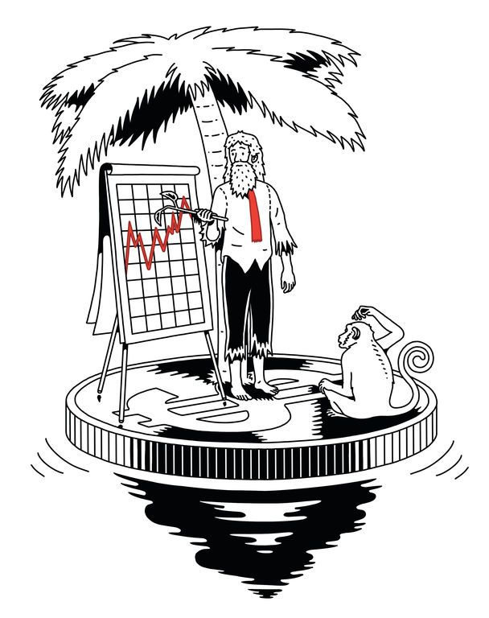image: Olivier Heiligers
Indeed, Crusoe later concludes that he can be happier within the tight compass of his island than he would be in the outside world, where he had once lived a “wicked, cursed, abominable life”. He also immediately admits to himself that if offered the chance to escape, he would nonetheless take it.
Behavioural economists stress that more choice is not always better. People may be unable to resist choices they know will hurt them in the long run. Choice also invites regret. It obliges us to compare our fate with the alternative we could have chosen. Forced to stay on his island, Crusoe can be happy. But if he were to choose his isolation, he would be haunted by the alternative life he could have chosen elsewhere.
As these examples show, economists might profit from greater familiarity with the Crusoe story. And the trade could be two-way. Defoe scholarship could and has benefited from a closer acquaintance with economics. There are several corners of Defoe’s works that require some economic knowledge to appreciate.
When Crusoe embarks on his ill-fated voyage to Guinea to buy slaves, he leaves behind a growing tobacco plantation in Brazil that would soon be worth “three or four thousand pounds”. It is hard for a reader today to make sense of such a figure. Drawing on the work of economic historians, David Spielman, formerly of Penn State University, calculates that the income on such a sum would have put Crusoe in the top 5% of English families at the time. With so much wealth in prospect, Crusoe has no reason to take risks. His voyage was as “preposterous” as he himself admits.
Economists might also resolve some other mysteries. After his return from the island, Crusoe reclaims his plantation and sells it. In the first six editions of the book, he receives 328,000 pieces of eight, worth about £72,000. But in later ones, a zero is deleted. That matters for the interpretation of the story. Does Crusoe finish the novel a rich man or a very rich one?
Literary scholars pride themselves on their sensitivity to every nuance of a text. But the decimation of Crusoe’s wealth has barely registered. “Despite the careful attention that the textual history of Robinson Crusoe has received, no one has even noticed a problem,” Mr Spielman has pointed out. Economists may have lost sight of Robinson Crusoe’s richness. But literary scholars have overlooked most of his riches. ■
Investigating MH17, the crime that presaged the war in Ukraine
This article includes audio interviews, click here to unmute
The fields of Hrabove bloom yellow in the summertime. On July 17th 2014 Vitaly rose at 6am, walked out of his front door and pushed past rusted gates on which his young daughter had drawn mermaids in chalk. He trudged down a dirt road, past rows of sunflowers. He roused a herd of cattle, 22 in total, and drove them out to graze. It was a beautiful day.
As a boy, Vitaly dreamed of becoming an astronaut. But he was a poor student, and never ventured far from home. His life mostly revolved around Hrabove, an eastern Ukrainian village frozen in Soviet amber. Vitaly had never visited Kyiv, Ukraine’s capital, nor flown on a plane, much less a space shuttle. His world—the green expanse from the chicken coop to the reservoir—was small and peaceful. Until that summer.
The path of Malaysia Airlines flight 17
Moscow
Amsterdam
POLAND
BELARUS
RUSSIA
GERMANY
Kyiv
UKRAINE
Donetsk
HUNGARY
ITALY
ROMANIA
Crimea
SERBIA
BULGARIA
TURKEY
Source: News reports
Just before 7am that day in Rotterdam, 2,500km away, Silene Fredriksz opened the door to her son’s room. Bryce and his girlfriend, Daisy Oehlers, had to catch a flight to Kuala Lumpur, and then on to Bali. Bryce, whose father, Rob, is Indonesian, wanted to show Daisy his second home. She hoped to reset after losing her mother to cancer. “Heading to paradise,” she told friends. When Ms Fredriksz entered, Bryce, 23, a young man who aspired to play professional football, was still lazing in bed; Daisy, 20, who wanted to be a schoolteacher, was about to take a shower. She hugged them both. “Yeah Mom,” Bryce said. “No problem, we’ll take care of each other, we’ll have fun, don’t worry.”
Michaël Niewold’s younger brother, Tallander, was also excited about Bali. He planned to climb a volcano there. Tallander, 22, a soldier, had just been promoted to private first class. Mr Niewold gave “Tallie” a call after finishing an early shift at the Dutch news channel where he works, and caught him at the airport. “Have a good journey,” he told his little brother.
Bryce, Daisy, Tallander and 295 others boarded Malaysia Airlines Flight 17. The young couple buckled in to row 17, seats D and E; Tallander took his place just in front of them, 16D. The plane took off at 12:31pm for what should have been a routine trip. At around 3pm, MH17 radioed a control tower in central Ukraine. Then it continued flying over Donbas, where for several months Russia and its separatist proxies had been fighting a war against the Ukrainian government.
Vitaly was herding his cows. He heard a bang, looked up and saw a plane. It kept getting bigger and bigger, as if flying towards him, spinning wildly and then breaking apart. “No freaking way,” he thought. He hid in a ditch, covered his head with his backpack and prayed. The crash shook the earth. With fragments still falling, Vitaly ran towards the road, where he saw one body, undressed, lying face down, and soon another. He found corpses in civilian clothes strapped into their seats, and realised it must have been a passenger plane. He went home, where his mother and daughter were hiding in the basement. His father had gone out to look for him. When they finally found each other, they hugged.
I thought I should film it on video, but it kept getting bigger and bigger and bigger.
It was flying, spinning, flying around, and it flew as if it were coming at me.
No freaking way, I thought, I’ve got to get out of here. And it got bigger and bigger and bigger…
“I thought I should film it on video, but it kept getting bigger and bigger and bigger.”
Vitaly, May 2015
The fields of Hrabove, Ukraine
Your correspondent happened to be in eastern Ukraine that day, covering the war. He arrived in Hrabove as dusk fell, after driving past hardscrabble towns, coal mines and smoky factories, through checkpoints manned by scraggly separatist soldiers. He found the fields filled with mangled bodies, charred metal and the eerie debris of arrested lives: guidebooks and playing cards, Kleenex packs and Maxi pads, a stuffed pink horse and a real blue Macaw, an orange bikini, a melted necklace and a watch frozen at 3:27.
“Only a lobotomy could make me forget this,” Vitaly’s father, Viktor, said that night, sipping what he called his first glass of vodka after eight years of sobriety. “What words could possibly explain this? Let this world degenerate and let the dinosaurs roam again—at least they did not go around killing each other with weapons like this. We have become beasts.”
The news reached Mr Niewold when he was at home, watching the Tour de France. He saw reports of a plane crash. The information looked ominous: a Malaysia Airlines flight to Kuala Lumpur that had departed from Amsterdam. He phoned his parents. “I think this is very bad news,” he told them. Ms Fredriksz received a similar call from her husband. “No!” she replied. “No, it’s impossible, it can’t be true.”
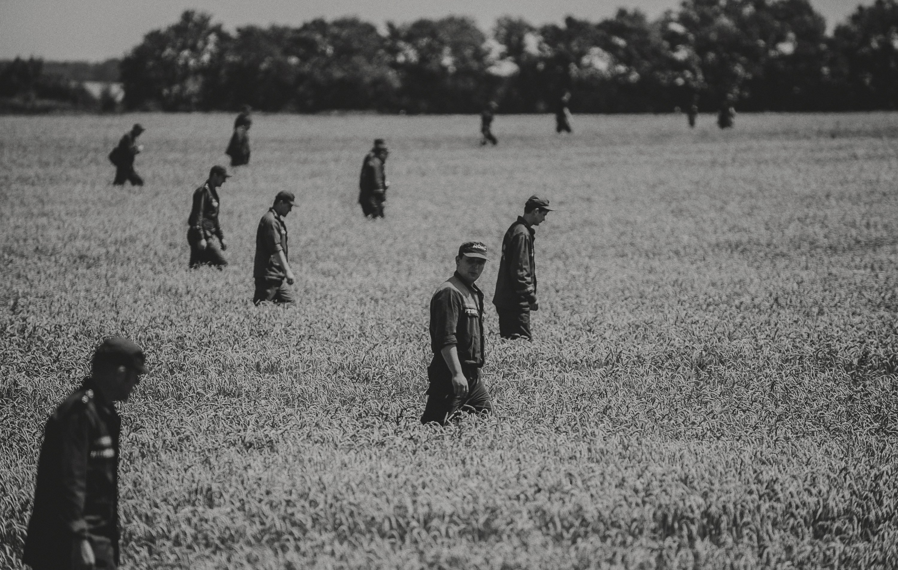
All my life since I’m a mother, I kept imagining things that could happen to my children,
like running under a bus or have an accident with the bicycle or whatever.
But then something happens that you can’t even imagine that can happen.
I’ve thought about everything that could happen in a child’s life but not this.
Then you let them go on holiday, you say goodbye in the morning and a few hours later
they’re vanished, they’re gone, they say they’re gone. Yeah I believe it but I can’t understand it.
I still sometimes think they’ll come home, it’s not possible what happened.
“All my life since I’m a mother, I kept imagining things that could happen to my children,”
Silene, November 2022
Fredriksz family home, Rotterdam
As soon as MH17 came crashing down, a battle for truth and accountability began. Western and Ukrainian officials said that a surface-to-air missile fired from separatist-held territory had caused the crash. Vladimir Putin, Russia’s president, who at the time denied any involvement in the conflict in eastern Ukraine, blamed the authorities in Kyiv.
For a moment, the tragedy seemed like it might galvanise global action to end the then-nascent war in Ukraine. Many Ukrainians thought it would shock the world into helping. Barack Obama, then America’s president, said it would “be a wake-up call for Europe and the world that there are consequences to an escalating conflict in eastern Ukraine”.
What followed, however, were limp sanctions, a poisoned peace agreement between Ukraine and Russia in early 2015, and a return, largely, to business as usual between Russia and Europe. Germany launched Nord Stream 2, a new gas pipeline, a year after the crash; football fans descended on Moscow for the World Cup in 2018. Only when Vladimir Putin openly invaded Ukraine in 2022 did the world truly wake up. And yet, as the open war drags into its third year, some are falling asleep again, forgetting what is at stake in the sunflower fields of eastern Ukraine.
Image: Cristiana Couceiro
As it became clear a passenger plane had crashed, Igor Girkin knew he had a mess on his hands. A veteran Russian soldier and spy, the mustachioed Mr Girkin went by the call sign “Strelkov”, or “The Shooter”. Since his student days, he had campaigned for the restoration of the Russian empire. He abetted Russia’s annexation of Crimea and later emerged as “defence minister” of the Donetsk People’s Republic, a Russian puppet statelet illegally carved out of eastern Ukraine. He had been pleading with contacts in Russia for “decent anti-aircraft defence” to counter the Ukrainian air force, as he put it in an intercepted phone call.
On the morning of July 17th Mr Girkin gathered his commanders at his headquarters. A Buk surface-to-air missile system had finally arrived from Russia. That afternoon, a social-media page believed to be operated by Mr Girkin’s supporters posted a triumphant dispatch about downing a Ukrainian military plane near Snizhne, a city next to Hrabove, only to edit it soon after. Sergey Dubinsky, one of Mr Girkin’s deputies, tried to persuade his boss that a Ukrainian fighter jet had shot down MH17. Mr Girkin was sceptical. He pressed Mr Dubinsky to make sure “the equipment” made it back to Russia. Lest they appear to be engaged in a cover-up, the separatists allowed international officials and investigators access to the 50km2 crash site to recover the remnants of the plane.
Russia could simply have confessed to what was probably a tragic mistake, as other countries have in the past. America hit an Iranian passenger jet in 1988, killing 290; Iran fired on a Ukrainian one in 2020, killing 176. Both governments ultimately took responsibility. Some Russians wanted to do the same—Novaya Gazeta, an independent newspaper, put MH17 on its front page, with the words “Forgive us, Holland.” But Mr Putin instead embarked upon a campaign of lies.
The aim was not to convince people of any specific version of events, but to confuse them and make them doubt that the truth was knowable. Russian media said a Ukrainian fighter shot down MH17, pointing to a Twitter account purporting to belong to a Spanish air-traffic controller named Carlos working in Kyiv who saw Ukrainian aircraft on his radar. (A Spanish ex-convict later told journalists he was paid by Russian sources to write the messages.) Some pundits blamed the CIA. Russian media ran reports that the bodies on the plane appeared to have been dead before the crash. In late 2014 Mr Girkin mused that Ukraine organised the crash “as a massive provocation”.
Meanwhile, funerals had to be organised, often more than once, as many bodies came back in pieces. Bryce was identified via a charred right foot. Daisy returned home as an 18cm-long pelvic fragment.
Amid the grief, many next of kin placed their faith in the justice system to deliver answers. Yet they also knew they were unlikely ever to see the perpetrators behind bars. “It’s not like they’re looked for by the FBI—it’s just the Dutch, with all due respect, public prosecutor,” Mr Niewold reflected in 2015.
I felt so sorry for the poor people of Ukraine. Because we as [NATO] let Putin be.
I understand the difference between invading a country and shooting down an airliner…
completely understand how this kind of politics works, the dependency on gas
and all this cynical bullshit. But I really felt so sorry for Ukraine. We should have
taken action then and get this guy [Putin] out of power, or not him you know,
clip his wings or whatever. But we let him sit there.
“I felt so sorry for the poor people of Ukraine. Because we as [NATO] let Putin be.”
Michaël, November 2022
The Lobby Fizeaustraat, Amsterdam
The news about MH17 reached Digna van Boetzelaer while she was on holiday in Bali. Just a week earlier, she and her daughter had flown the same route as many of the passengers on board had planned to. Her daughter came running towards her in a panic: one of her school friends had been on the plane. Many people had a connection to the tragedy. As a share of the population, more Dutch died on that flight than Americans in the 9/11 attacks. Ms Van Boetzelaer, a prosecutor, volunteered for the MH17 criminal trial. She had the right name for the job: Digna, as in dignity.
Digital sleuths from Bellingcat, an investigative journalism outfit, had pieced together social-media posts to trace the route of a Buk missile system from a base in Russia to separatist territory in eastern Ukraine, suggesting that Russia supplied the deadly weapon. Yet making that case stand up in court was another matter. The Dutch Safety Board first reconstructed the wreckage of the plane at an airbase in southern Holland. Distinctive butterfly-shaped shrapnel inside the pilots’ bodies told them that the missile in question was a Buk. A Joint Investigative Team (JIT) set up by Australia, Belgium, Malaysia, the Netherlands and Ukraine spent years gathering evidence into the Buk’s provenance and chain of command.
Several legal cases were launched, including interstate trials between Ukraine and Russia at the European Court of Human Rights and the International Court of Justice, a UN body. But Dutch prosecutors, led by the JIT, focused on the most vexing questions of individual criminal responsibility. In the summer of 2019, they announced murder charges against three Russians and one Ukrainian: Mr Girkin, Mr Dubinsky, and two of their deputies, Oleg Pulatov and Leonid Kharchenko. Since Russia does not extradite, the suspects were tried in absentia. But Ms Van Boetzelaer held on to hope that eventually they might face justice.
Sometimes some things are so important you have to walk that road,
even if you don’t know where it will lead you or if it will lead you anywhere.
I think that principle might give back some certainty. I think that’s important.
Sometimes you hate systems and sometimes there’s also a power in systems
because this system could keep on doing this and just slowly, slowly, slowly, uh, get there.
It might be that Russia will never extradite, but there again, it’s step by step and never say never.
Because we have time, the system has time. Maybe not me as a person, but the system has time.
“Sometimes some things are so important you have to walk that road,”
Digna, November 2022
Schiphol Judicial Complex, Amsterdam
Over years of hearings the JIT team steadily built their case. Investigators had painstakingly cross-referenced and verified images and videos, often seeking out the original cameras or memory cards that captured crucial stages of the Buk’s journey. Dozens of first-hand witnesses, including separatist fighters positioned near the missile launch site and involved in escorting the Buk out of Ukraine after the crash, gave secret testimony, despite the dangers involved.
Yet as the trial unfolded, the accused were unruffled. In mobile-phone footage from 2019, Mr Dubinsky can be seen drinking with another separatist commander on a boat in Crimea, toasting Mr Girkin, who had become a prominent nationalist activist back in Moscow, pressing for Russia to finish what it started in 2014. No wonder, then, that Mr Putin felt emboldened. As Roman Liubyi, the director of “Iron Butterflies”, a documentary about the disaster, puts it, if you can shoot down a passenger plane with impunity, you “can invade the country next to you, no problem”.
Image: Cristiana Couceiro
On November 17th 2022, eight years and four months after the crash, relatives, lawyers and journalists packed the courtroom to hear a verdict. MH17, the judges declared, had indeed been downed by a Buk fired from separatist-controlled territory and delivered from Russia. Messrs Girkin, Dubinsky and Kharchenko bore criminal responsibility for the death of the 298 people aboard; Mr Pulatov, a lower-ranking operative, did not. Russia, the judges said, had been a party to the conflict since 2014, despite its denials. In the courtroom, relatives embraced.
“Two key words were very important for me: Russia and murder,” Ms Fredriksz said. “It’s a relief.” For Mr Niewold, the acquittal one of the defendants made the decision even more powerful. “It showed we have an independent judicial system,” he said, allowing himself a rare smile. Ms Van Boetzelaer sighed with satisfaction: “For the next of kin, they now know all those facts have been confirmed by a court.”
Yet the perpetrators remain at large and missiles are still flying across Ukraine. “Holding to account masterminds is crucial too,” said Volodymyr Zelensky, Ukraine’s president, after the verdict. The JIT officially concluded its work in February 2023. At the final public presentation, investigators played intercepted conversations featuring Mr Putin which suggested he might have personally approved the Buk’s transfer to eastern Ukraine in 2014. But the evidence needed to prosecute remains out of reach. “We know that the answers to our questions can be found in Russia,” declared Ms Van Boetzelaer. They will not be found until the skies over Hrabove, Kyiv and all of Ukraine are peaceful again. ■
Hear about this report on our Weekend Intelligence podcast
Meet the boffins and buccaneers drilling for hydrogen
The search is on for a clean fuel that could one day replace oil
Listen to this story.Enjoy more audio and podcasts on iOS or Android.
“I believe that water will one day be employed as fuel, that hydrogen and oxygen, which constitute it, used singly or together, will furnish an inexhaustible source of heat and light.” So wrote Jules Verne in 1875. Visionaries and cranks have long searched for cheap ways to manufacture hydrogen, with limited success. Now the world is once more hyperventilating about the simplest element, but with a twist. Some modern visionaries don’t want to make it; they want to drill for it. A rush is starting for colourless gold.
Unlike actual gold, hydrogen is spectacularly useful. As a fuel, in theory it could power cars, buses, planes and ships. It could be burned in power plants, generating electricity. And because, unlike fossil fuels, it emits no greenhouse gases, it could help curb climate change (so long as it is cleanly obtained).
Governments are throwing subsidies at efforts to make hydrogen fuel. America’s Inflation Reduction Act offers lavish support for producing it cleanly from fossil fuels (which involves the clunky process of capturing and sequestering the carbon dioxide by-product), as well as from carbon-free nuclear power and renewables (which requires lots of energy to split water into hydrogen and oxygen via electrolysis).
The snag is that making hydrogen in any of these ways is costly, and likely to remain so for years. Hydrogen is the most common element in the universe but, says America’s National Renewable Energy Laboratory, “typically does not exist freely” on Earth. It is normally found bound up with oxygen, as water, or carbon, as hydrocarbons. Releasing the hydrogen can require lots of energy, complicated kit and hassle.
So a motley crew of hydrogen hunters are searching for “natural” (or “geological”) hydrogen, which they believe is more common than is widely supposed. To those who dismiss them as dreamers, they point out that the notion of plentiful oil in the ground was once dismissed as crackpot, too.
In the middle of the 19th century, the world faced an energy crisis. Whale oil was in short supply. Some thought petroleum might work as a replacement, but many attempts to dig for it had flopped. When Edwin Drake proposed drilling for oil in Pennsylvania, investors mocked the notion: “Oil coming out of the ground...? Nonsense! You’re crazy.” Then, one day in 1859, Drake hit a gusher, and the oil age began.
Could something similar happen with hydrogen? In a small way, it already has. In 1987 in Bourakebougou, in a remote corner of Mali in West Africa, locals searching for water drilled 100m down and, since the hole was dry, gave up. Then, to their surprise, a mysterious emission from that hole caught fire. The well was quickly capped and forgotten—until a sparky local businessman came along.
“I want to be the king of hydrogen!” bellows Aliou Diallo. The son of a railway worker in Mali, Mr Diallo made his first fortune investing in distressed debt, parlayed those winnings into industrial concessions, and went on to acquire a gold mine. He has dabbled in politics, despite the dangers in a coup-prone country like Mali, running for president in 2018 and coming a respectable third. But now he has given up politics to concentrate on hydrogen.
By happenstance, the hydrogen-emitting hole in Bourakebougou was within an oil and gas concession that had been granted to a firm run by Mr Diallo. The villagers, seeing flames shooting out of the ground, assumed the place was cursed. Mr Diallo, who is not superstitious, decided to investigate. Tests confirmed that the well was producing 98%-pure hydrogen. Mr Diallo brought in equipment from Canada to do more drilling and testing. A coup in 2012 spooked outsiders, but he forged ahead. Now those villagers have reliable light and power day and night—a rarity in rural Mali.
The well tapped into a large reservoir of natural hydrogen that continues to flow to this day. Mr Diallo’s firm drilled over two dozen more wells, from shallow ones akin to the first water well to ones 1,800m deep, to map and master the geology. Hoping to replicate his success elsewhere, he has set up a firm called Hydroma in Canada to scour more stable countries for the gas. (Mali has had two more coups since 2020.) “Hydrogen is the gamechanger for humanity,” he says.
He is no longer alone in this view. Hydrogen has been found in France, America, Brazil, Australia, Colombia and Oman (see map). A place in Turkey thought to be the location of the original Olympic flame has burned for millennia thanks to an energy source now known to be rich in hydrogen. The mid-Atlantic ridge and the African rift valley emit the gas. And mysterious surface formations known as “fairy circles”, spotted in the Carolinas, Poland and western Australia, also appear to seep it.
Why have these hydrogen sources not previously been noticed? It may seem odd, but big oil firms never looked for hydrogen or deployed sensors to detect it. Geoffrey Ellis of the United States Geological Survey (USGS) adds that, as well as being odourless and colourless, the gas is often gobbled up by microbes below the surface. So prospectors may have to drill with the explicit intention of detecting hydrogen if they are to find what is hidden under their noses.
The benefits of bad Soviet science
In 2020 Viacheslav Zgonnik, a chemist of Ukrainian origin, published a review of academic literature showing that “molecular hydrogen is much more widespread in nature than was previously thought.” Earlier Western scholars had focused on papers in English. Dr Zgonnik, who is fluent in Russian, scoured the undigitised, untranslated paper archives of the old Soviet Union for clues. After reviewing over 500 studies, he had a breakthrough.
Much of the relevant field research over the past century took place in the Soviet Union and was largely unknown to Western researchers. Soviet engineers often found hydrogen not because they wanted it but because they had a different (and now debunked) theory of how petroleum originates. They believed it was generated from inorganic matter rather than crunched-up dinosaur bones. On this view, carbon from the earth’s mantle would interact with hydrogen deep underground to produce hydrocarbons, so it made sense to look for hydrogen as a telltale sign of petroleum.
There are, by one estimate, more than a dozen ways that hydrogen might occur naturally, but only a handful seem likely to yield commercially extractable deposits (see graphic). The most promising, says Dr Zgonnik, is serpentinisation: iron-rich rocks below the Earth’s surface react with very hot water to produce iron oxide and hydrogen gas—in effect, rusting. This reaction has been well studied. Dr Zgonnik’s company, Natural Hydrogen Energy, has identified a likely spot in Nebraska and drilled the world’s first wildcat well for hydrogen, to a depth of some 3,400m. Though the pandemic and financial constraints have slowed it down (“very few investors are willing to take this kind of risk,” he sighs), with new partners the firm plans to drill again soon at the site.
Another theory, deep-seated formation, holds that hydrogen is produced deep in the earth’s core or mantle, and seeps up to the surface as it rides along cracks. Yet another, known as radiolysis, proposes that energy from radioactive rocks splits water into hydrogen and oxygen deep underground. However hydrogen is formed, its molecules are so small and slippery that it can easily seep its way to the surface unless it is either caught in a trap (say, under an impermeable salt layer) or consumed by microbes.
Since the publication of Dr Zgonnik’s article, interest in hydrogen has been fizzing. The Geological Society of London attracted over 200 experts to a conference on the topic in July. America’s Department of Energy, while still pumping billions into schemes to manufacture hydrogen, has come round to the view that “large quantities of geologic hydrogen [probably] exist in the Earth’s subsurface.” Dr Ellis of the USGS reckons there could be enough to power the global economy for centuries. The USGS will soon publish an assessment of the most promising locations—in other words, a treasure map.
The search for hydrogen is attracting millions of dollars in investment, says S&P Global, a financial-data firm. Australian explorers such as HyTerra and Gold Hydrogen have raised millions more through public offerings. Other efforts are funded by government grants or quiet money from oil and mining giants. Koloma, a secretive startup based in Denver, recently attracted $91m in funding from the venture-investment arm of Breakthrough Energy, a climate-innovation organisation started by Bill Gates.
Talking to on the sidelines of the UN climate conference, Mr Gates said of natural hydrogen: “It could be gigantic or it could be a bust, but if it’s really there... wow!” That is why he is betting on Koloma, which rejects trial and error in favour of a rigorous scientific framework. At Ohio State University Tom Darrah, the firm’s chief technology officer, and a team of researchers are working feverishly in an ordinary-looking cinderblock building. Dr Darrah has drawn up his own map of where he thinks natural hydrogen can be found. He says there is “very little overlap” with where oil and gas are found.
Asked what his theory of the case is, the bespectacled academic leaps to the whiteboard and starts scribbling. “We use the SMARTS [Specific, Measurable, Attainable, Realistic and Time-Bound goals] approach,” he explains, which is inspired by the subsurface modelling used by the oil industry. By applying “hydrogen smarts”, his firm is looking for the best source rock that might contain hydrogen, finding traps and seals on top, and using his long experience in research to validate findings quickly in the laboratory.
When the USGS releases its treasure map, it will point wildcatting rivals in the right direction. However, he insists, his firm has an edge thanks to its systemic approach, which includes improved detection tools, reservoir simulation and in-situ stimulation of hydrogen. He says he knows “what scientific questions to ask” to find “real drillable areas”.
In his spare time, Dr Darrah hunts deer with a bow and arrow. (He says he gets some of his best ideas in the woods.) At work, he is hunting something bigger. He does not want another Mali; he wants to find the Saudi Arabia of hydrogen, perhaps in America. It might, however, be in Australia.
The green baron
“I have a rather unpopular view that science and innovation are likely to come to our rescue on climate, rather as they did over covid,” says Baron Howard of Lympne. Michael Howard, as he used to be known, has been an oilman, an opposition leader and Britain’s environment minister. Now he is chairman of Earth Source Hydrogen, a startup looking for the elusive gas in Australia. He insists his firm is not wildcatting randomly, but rather applying for licences in promising areas and doing desktop exercises before drilling. It is eyeing areas close to big mining operations, which might want to buy the fuel if he finds any.
Dr Ellis of the USGS calls Australia “one of the hottest areas for exploration”. An Australian competitor, Gold Hydrogen, has just set the industry ablaze. Nearly a century ago, diggers struck hydrogen in southern Australia and, unusually, took careful notes. After looking at those notes, which showed extremely high concentrations of the gas, Gold Hydrogen decided to drill at the same location. Neil McDonald, the firm’s boss, reports ecstatically that the initial data from drilling in October show that hydrogen levels are still high there, just as they were in 1931. That suggests a long-term source or large reservoir, he reckons. The gas can probably be tapped directly, with no need for fracking or other complicated processes to flush it out.
The most basic question has been answered, says Philip Ball of the Clean Air Task Force, an American environmental group. “We are rapidly converging on agreement that a lot of hydrogen exists,” he says, “as we find the stuff everywhere.” The question now is whether it can be exploited.
Great uncertainty remains about whether any of the hydrogen dreamers’ dreams can be realised. But it is possible that a cheap, low-carbon fuel could be widely available at some point in the future.
Hydrogen has the highest energy density of all chemical fuels and is also very reactive, says Eric Toone, chief technology officer of Breakthrough Energy. This makes it potent. It could be used to make essential but currently dirty things such as liquid fuels, steel and ammonia. With enough hydrogen, Dr Toone reckons it might be possible to make starch without photosynthesis, which would revolutionise agriculture. Only nuclear fusion has a comparable potential, he says, and he thinks hydrogen is a less risky bet. “If you have enough hydrogen and it is cheap enough, you can do literally anything,” he summarises. Jules Verne would surely agree. ■
What a town is like when one family runs everything
Listen to this story.Enjoy more audio and podcasts on iOS or Android.
Egyptian pharaohs left the pyramids. Donald E. Stephens left a Museum of Hummels. These are porcelain dolls, based initially on paintings by Maria Hummel, a German nun. Stephens was, until his death in 2007, the mayor of Rosemont, Illinois. His collection of Hummels, which is on display in a strip mall, is apparently the world’s largest. It includes rare figurines of soldiers at Checkpoint Charlie in Berlin. The museum is a monument to kitsch, and to a dynasty.
Politics in Rosemont is a family affair. Stephens and his son, Brad (pictured below), have run the city for almost 70 years. It is perhaps America’s last true political machine. It reminds your correspondent, who has spent years reporting in Africa, of Gabon, a petrostate that was ruled by the same family for 56 years. The parallels between these two very different places reveal much about power, not as a civics textbook describes it, but as canny, charming men actually wield it.
image: Jamie Kelter Davis
The village of Rosemont was founded in 1956 on land that was then (according to the official history) a rubbish dump on the edge of Chicago. Stephens, then a 27-year-old businessman, was among a group of people who decided to incorporate as a city, literally picking the name out of a hat. The city came into its own after it traded a strip of land with Chicago to allow the expansion of O’Hare airport.
Proximity to the airport brought highways, a train connection and thousands of travellers. Though Rosemont covers less than two square miles, it now has a huge convention centre, an ice hockey and basketball arena, a theatre and, just outside its formal territory, a casino. It also has office blocks, car-rental outlets and more hotel rooms than residents. With a population of 4,000, it has an annual budget of $200m.
Today, Rosemont is run by Bradley Stephens, Donald’s son, who took over by acclamation on his father’s death. In his first election for mayor, in 2009, he won 91% of the vote—988 votes in total. In every election since, he has been unopposed. He looks and acts like his dad, though his private life is less colourful, with just one wife to his father’s six.
Below Brad are a host of other Stephenses. Christopher Stephens, Brad’s nephew, runs the convention centre. Brad Stephens II, Brad’s son, manages a city-owned mall. Until late 2020 Donald Stephens III, another grandson of the original Donald, ran the tiny police and fire department. The director of the city’s parks, Karen Stephens, is the wife of another nephew. Other relatives are spread throughout the city government and the businesses it owns.
Most live in a gated community that is a picture of old-fashioned suburbia. Modest post-war homes line wide streets that are agreeably quiet, bar the noise of landing planes. Teenagers roam on bicycles. In October almost every house had elaborate Halloween decorations on its lawns. Many had American flags out front, or the pro-police version with a thin blue line. Rainbow flags with liberal homilies, common in Chicago, were nowhere to be seen.
Brad Stephens receives $290,000 a year, slightly more than Eric Adams gets to run New York, and draws another salary as an Illinois state representative. His nephew Christopher gets $335,000 for running the convention centre. Donald Stephens III pulled in $215,000 to manage 80 cops, slightly less than the head of the Chicago police gets to manage 13,000.
image: Jamie Kelter Davis
image: Jamie Kelter Davis
Then there are contracts. Bomark, a firm owned by the mayor’s brother Mark, provides cleaning and parking-management services. It is paid $4.5m a year, according to the Village’s accounts. In the past, contracts have gone to businesses owned by the mayor’s sister, by a wife of the former mayor and by family friends. Tendering is seldom competitive. As a home-rule “city”, the Village insists that under Illinois law it is not required to seek competitive bids.
The family business has attracted scrutiny. As mayor, Donald Stephens was twice charged with federal crimes and twice acquitted. For decades, rumours linked the late Stephens with Chicago’s Italian mafia. In 2001 a plan to open a casino in the city was quashed by the Illinois Gaming Board, over alleged mob ties.
image: Jamie Kelter Davis
The current mayor, Brad Stephens, has never been accused of a crime. In an interview in his office, he defends nepotism, arguing that family members will work harder because they understand their privilege. “I will hold them to higher standards than other employees,” he says. Talking about his nephew, Chris, who manages the convention centre, he says, “He understands that his grandpa’s name is on the building, and we need to make sure that it is well run.” His spokesman says that salaries are set by the village board, and that employees are “fairly compensated”.
From Windy City to rainforest
It is a sentiment that Gabon’s most prominent family would endorse. A former French colony in central Africa, it was run by Omar Bongo from 1967 until his death in 2009. His son Ali, a former funk singer, then ran the country until he was ousted in a coup on August 30th. Citizens of Rosemont are unlikely to wake up and see soldiers on television announcing that they have seized power. But both places depend on an accident of geography for their fortunes. In Rosemont’s case, proximity to the world’s fourth-busiest airport. In Gabon’s case, oil, which supplies nearly two-fifths of GDP.
With just 2.4m people and $5bn a year of oil exports, Gabon is on paper one of the richest places in Africa. But that money is controlled by the state, which for decades meant the Bongos. In a patronage system, politicians turn the government into a vote-buying machine, explains Nic Cheeseman of the University of Birmingham, an Africa specialist. Elections are held, and opposition candidates stand. But if you vote for one, you may find that your neighbourhood no longer gets its share of public services, or that your friends and family lose their government jobs.
image: Jamie Kelter Davis
Chicago was once famous for having such a “machine” under Mayor Richard J. Daley. (Professor Cheeseman once advised your correspondent to study it to understand Kenyan democracy.) Every election, voters would be reminded of favours. Even criminal charges could be “fixed”. The Chicago machine eventually broke down when lawsuits curbed patronage hiring.
The Rosemont machine is still going strong. A bylaw reserves many jobs for residents. Some 236 city staff live locally—one for every seven households. Thus, the mayor, who knows everyone, directly controls the employment of a large share of his voters, few of whom will ever move. When houses in the gated estate are sold, current residents fall over themselves to buy them, so they can pass on jobs to their children.
Though in the Illinois state house he is a Republican, in Rosemont Brad Stephens has his own political party, the Rosemont Voters League. According to Frank Siciliano, a former Rosemont police commander, it is impossible to work for the city without joining it. When he once fell behind on his dues, “I actually got a letter, a note in my mailbox in the station,” he says, from his commander telling him to pay up. “Throughout my career I would be told several times: ‘You gotta know how to play politics,’” he recalls. The city contends that Mr Siciliano is a bitter ex-employee, and that employees “give freely and openly”.
How long can family control last? When Donald Stephens donated his collection of Hummels, he decreed that they would be displayed for 99 years after his death—he expected his legacy to last that long. His son sees no reason for change. “The employees buy in,” he says. “They drink the Kool-Aid.” He describes himself as being like the manager of a little league baseball team—he has to know every member. “It’s a big family, you know what, we all cover each other’s backs.” Pressed on when he might leave office, Mr Stephens prefers to talk about new businesses.
Your correspondent interviewed President Ali Bongo in 2016, and came away with a similar impression of stability. Yet a couple of months later, Mr Bongo lost an election, or so his opponents say. He was saved by an implausibly colossal turnout in his home district. Crowds cried fraud and rioted.
In 2018 Mr Bongo suffered a stroke, and soon businesses began to complain that the taxes they paid no longer bought protection from shakedowns. The economy, always at the mercy of the oil price, declined. The machine began to fall apart well before soldiers appeared at Mr Bongo’s door to arrest him.
What could come for the Stephenses? For now, perhaps nothing. Rumoured FBI investigations into the town’s leadership have hardly gone further than they did with his father. The money continues to flow and the voters keep turning out.
However, the Rosemont model hardly fosters dynamism. The median income is 20% lower than in the wider Chicago region. In the wake of the pandemic, Rosemont’s large offices with their endless car parks are quiet. And though conventions are once again filling up the town at weekends with people dressed as characters, the city is deeply in debt. In 2023, it will spend $38m on servicing it. Many city-owned businesses are highly leveraged, too. Men with guns and sunglasses pose no threat to the Rosemont machine, but one day men with calculators might. ■
The first actors to lose their jobs to artificial intelligence are four-legged
Listen to this story.Enjoy more audio and podcasts on iOS or Android.
Padding around his spacious ranch in the hills outside Los Angeles, Luke has the swagger of an actor who has made it in Hollywood. After six successful years in the movies he lives in an open-plan home with mountain views, a large swimming pool and staff who bring him steak or smoothies when required. A driver is on hand to take him into the city when he gets a call to shoot an ad or make a paid appearance at an event, for which he commands a fee equal to a week’s pay for a lowlier actor. Luke turns heads like few other artists. His agent’s only complaint is that, given half a chance, he might try to eat his co-stars.
As a 500lb African lion, Luke (pictured) has to deal with challenges not experienced by other actors. But lately, he and his human colleagues have found common cause. America’s screenwriters and actors spent half of 2023 on overlapping strikes. One of the reasons for their bust-up with the studios was the use of artificial intelligence (ai) in film and television production. Writers worry that ai will soon be churning out scripts, while actors fear that, as the technology improves the quality of computer-generated imagery (cgi), they may be replaced by digital stand-ins.
For most human actors that is still a hypothetical worry. But for four-legged screen stars it is already a reality. Work for animal actors is drying up as computer graphics offer an easier—and, some argue, more humane—way to portray creatures on screen. As ai makes those special effects still more realistic and easier to produce, the replacement of real animals with digital ones is accelerating, in television and advertising as well as in high-end movies.As demand for animal actors declines, their owners and trainers are leaving the business. Luke and his colleague, Maasai, who lies snoozing in a nearby enclosure, are the last two working lions in Hollywood.
Rendered in tooth and claw
Ever since a lion appeared on the title card of Goldwyn Studios, later part of mgm, animals have been an essential part of the Tinseltown talent pool. The star who saved Warner Bros from bankruptcy in the 1920s was Rin Tin Tin, a German shepherd who was in more than 20 pictures and was so bankable that producers dubbed him “the mortgage lifter”. From the 1950s an annual Oscars-style awards ceremony, first compered by an actor called Ronald Reagan, gave out gongs to stars such as Flipper the dolphin. In 1993 ranked “the most powerful non-humans in entertainment”, including Moose, a dog-actor in “Frasier” (whose human co-stars were smeared with liver pâté to encourage him to nuzzle them).
Animals with the right skills can still find fame. Steve Martin, Luke the lion’s owner and trainer, has been in the business for more than 50 years, supplying everything from the deer in the “The Deer Hunter” to a pair of skunks named Alice and Cooper. One of the first big roles he landed for Luke was in “A Royal Romance”, a tv movie about Prince Harry and Meghan Markle. Luke played a wild lion in Botswana who, the film implied, may have been Princess Diana reincarnated. Another of Mr Martin’s lions, the late Major, had his paw prints set in Hollywood’s Walk of Fame, during an appearance alongside a nervous Sylvester Stallone to mark mgm’s 90th anniversary.
image: Maggie Shannon
In an enclosure next to Luke and Maasai is Tag, an 11-year-old bear who lumbers over to greet Mr Martin with a lick. For a role in “Action Point”, a film released by Paramount Pictures in 2018, the 1,000lb bear was trained to drink from a beer can. “He never dented one, even,” says Mr Martin, proudly. Earlier this year Tag had to maul a dummy inside a sleeping bag, for an independent movie called “Night of the Grizzly” (Tag is a Kodiak, but he can play a grizzly). Training for that scene took two weeks, and a lot of biscuits. Like any good film star, Tag has become somewhat fussy about his diet, shunning the raw salmon that a bear might eat in the wild in favour of cooked chicken from Walmart.
Such successful animal-acting careers are increasingly rare. Mr Martin once kept 100 or so animals at his 60-acre ranch, looked after by 15 trainers. Now his staff is down to a core of three, and most of the enclosures on the ranch are empty. Other businesses have closed or radically reduced their stock. Trainers are fewer, too. Moorpark College, on the edge of Los Angeles, has supplied animal wranglers to Hollywood through its Exotic Animal Training Management course since 1974. Gary Mui, a faculty instructor, estimates that when he graduated from the programme in 1995, about 70% of his classmates went into the entertainment industry. These days only about 10% of graduates do.
One reason for the industry’s contraction is a growing public sensitivity to animal welfare, a hot topic in Hollywood since animals were first put in front of the camera. Early moviemakers treated animals as disposable props; Westerns used tripwires to make horses fall as if they had been shot. Public outcry greeted a cowboy film, “Jesse James”, in 1939 in which a horse was deliberately driven off a cliff into a lake, where it drowned. The following year the American Humane Society, a charity, began providing its now-famous certification that “No animals were harmed” in the making of productions that passed its on-set inspections.
Animals’ treatment in Hollywood has vastly improved since the days of “Jesse James”. But abuse has not disappeared, and the risk of scandal makes studios nervous. hbo cancelled its racing drama, “Luck”, after three horses died on set (poor ratings may have been another factor; one critic quipped that the animals may have died of boredom). “Gladiator 2”, currently in production, has faced protests for using macaque monkeys and horses.These days many trainers are reluctant to talk about their work; one, who says that animal-rights activists once called a police swat team to his home, insists (amid deafening squawking) that for security reasons he can no longer disclose whether he keeps animals on the premises.
Truly plausible digital stand-ins are now an alternative to real animals for wary studios. For many years, computer-generated creatures were convincing only in limited circumstances. “Jurassic Park” wowed audiences with its special effects in 1993, but used animatronic dinosaurs more than cgi ones. For years after that, computer models struggled to create realistic hair, which animals tend to have a lot of. Furry cgi creatures looked weirdly smooth—“like Gummi Bears”, recalls Mr Mui. Then, in 1998, came Disney’s “Mighty Joe Young”, whose star is a giant ape created from animatronics and cgi. Mr Mui watched it in dismay. “I said, ‘Oh, our days are numbered now’,” he recalls. For the first time, the hair looked good.
As the effects have got better, directors have relied on them more often. Disney has produced a series of live-action remakes of classic animal-based animations, including “The Jungle Book” (2016) and “Dumbo” (2019), in which it has cast real actors in the human roles but created the leading animals on a screen. In its blockbuster remake of “The Lion King” (2019) every creature, from warthog to wildebeest, was computer-generated. Disney is not alone. The star of Universal’s comedy-horror hit in February, “Cocaine Bear”, was a cgi creation. Tag never even got to audition. “They used to call us for stuff like that,” says Mr Martin. “Those guys really pushed us out of business.”
So far the “exotics” have lost the most work. Chimps have not acted in a big American movie since Paramount’s “The Wolf of Wall Street” in 2013. The last elephants are thought to have lumbered out of Hollywood around the same time. Studios are increasingly unwilling to work with big cats, says Mr Martin. “For wild animals, it’s basically finished,” he concludes.
Man’s best avatar
Trainers of smaller stars are wondering how much further the digital trend will go. An hour or so from Luke the lion’s ranch is Studio Animal Services, with an obstacle course in its front yard and multiple dog chews and fly swatters inside. Karin McElhatton, who has trained animals in Hollywood since the 1970s, is the company’s owner—though Rumor, a white Pekin duck, appears to believe that he is its real proprietor, as he waddles in from a swim and preens in front of a fan, filling the room with a cloud of feathers and down.
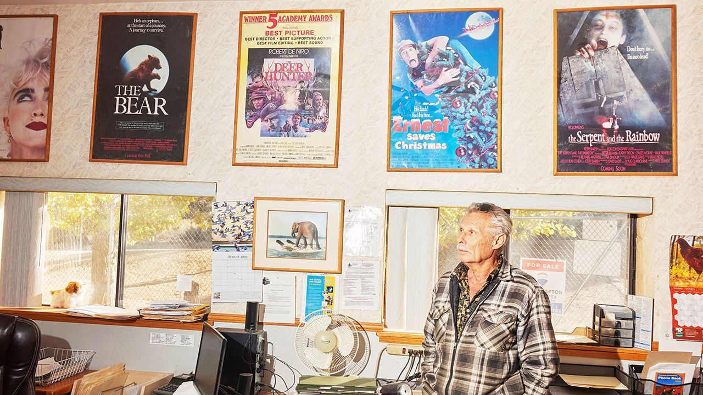Steve Martin, lion-ownerimage: Maggie Shannon
“The business is getting more and more narrow in terms of the animals they want to use,” says Ms McElhatton. She once flew a team of five squirrels, raised from babies, to Hungary for a Kinder chocolate ad, which required them to carry a coin to a vending machine. These days such jobs are nearly always computer-generated, she explains.
Ms McElhatton’s 35 cats and 25 dogs still find work. Albert, a serene brown tabby on a pink lead, spends most of his time modelling for pet food commercials, though he also scored a recent role in a horror film pretending to devour a corpse. Tank, a German shepherd, is in demand as a sniffer dog on shows like “ncis” and “911”(his trainer, David Meyers, has a Screen Actors Guild card so that he can play the accompanying police officer). Two golden retrievers, Parker and Porter, are often cast as family pets. Two years ago they went to Mexico for a comedy movie called “El Roomie”; they were flown first-class and got their own trailer.
Domestic animals have been somewhat protected against digital competition. Audiences are more familiar with the real thing and thus quicker to spot a fake dog than a fake bear. Animal-rights protesters seem somewhat less bothered by their involvement, too.Yet even man’s best friend is now losing work to digital doppelgangers. “The Call of the Wild”, a Disney movie released in 2020, called in computer animators to create Buck, the St Bernard-Scotch shepherd who co-starsalongside Harrison Ford. Audiences didn’t much like the digital dog; for now, directors still prefer to cast the real thing. Nonetheless, “it was extremely disconcerting for us,” says Ms McElhatton, who was relieved when the movie fizzled at the box office.
Could cgi replace the two-legged animals at the top of the acting food chain? Near Seattle, an unusual team of animal trainers has seen signs that it might. The trainers recently taught a lion cub to climb onto its father’s head, before rolling off his back and onto the ground. Yet the lions in question do not live in a cage, but on a hard drive, and their training is not done with biscuits, but with biomechanical elastic-body solvers and quasi-static integrators.
The digital lion-tamers work for Unity, which creates virtual environments and characters for video games and has dabbled in movies (including 2022’s sequel to “Avatar”). Creating believable animals is still easier than creating realistic humans, says Allan Poore, who moved to Unity after working as an animator at Disney’s Pixar. “We stare at faces and people all day...so we’re going to notice.”
Eyes are hard to get right, and skin can look waxy without elaborate light-diffusion techniques. But creating digital humans is getting easier. The addition of ai to the animator’s toolkit has sped things up, meaning that “rigging” a digital model of a human face (think the wires on a puppet) might take an hour or two, down from a month. “We’ve been on this journey a long time, and I think we’re getting closer and closer,” Mr Poore says. “I’ve seen some stuff [where] it’s hard to tell the difference. And you’ll see more of that.”
Actors are already being “de-aged” for roles which might once have gone to young lookalikes. In “Indiana Jones and the Dial of Destiny”, released in June, the octogenarian Mr Ford was rejuvenated by half a century by animators who used ai to mine footage of the actor in his “Raiders of the Lost Ark” days. Robert DeNiro underwent a similar transformation in Netflix’s “The Irishman” (2019), as did Samuel L. Jackson in Disney’s “Captain Marvel”, released in the same year. Background actors, or extras, fret that they may soon not be needed at all.
What kind of work awaits human stars then? The animals offer a preview of the coming attractions. Some still give performances that are later digitally enhanced. Disney’s live-action remake of “Lady and the Tramp” (2019) mixes footage of real dogs with cgi shots, including animating their mouths to simulate talking (an effect that trainers used to achieve by feeding the dog something chewy before the cameras rolled). Real dogs acted in Warner Bros’ “Birds of Prey” (2020), only to be morphed into a hyena in post-production. American Humane explains that a herd of 100 cgi horses is likely to be modelled on ten real ones.
Others have moved away from feature films to focus on more humdrum work. Social-media influencers, prizing high-impact, low-budget stunts, have become regular employers of exotic animals. Tag the bear has gamely “wrestled” with Logan Paul, a YouTuber, and taken on humans in a hot-dog eating contest organised by Barstool Sports, a blokeish entertainment site. Live events are also fairly safe from ai interlopers. Tag was hired in 2021 to appear at campaign rallies alongside John Cox, a California Republican who called himself “the beast”. Even this kind of work is becoming scarce, however, amid animal-welfare concerns. Mr Martin is being sued by an animal-rights group over Tag’s appearance at the rallies.
Circle of life
Many of Hollywood’s last animal-handlers are now near retirement. “When this generation of trainers kicks the bucket, I don’t know that you’re going to have hardly anything in America,” says Ms McElhatton.
Animal-rights advocates are delighted. peta, a lobby group, advocates more use of cgi creatures, arguing that “creative people can tell compelling, emotional stories using special effects and without exploiting any real animals.” “I understand some of the motivations of animal-rights people. And they need to understand that we have more in common with them than we don’t,” says Mr Mui sadly. “I want what’s best for animals, but I don’t have an issue with animals working with people as long as it’s done correctly,” he says. But now, “it’s all fading away.”
At Luke’s ranch, a for-sale sign has gone up at the end of the long driveway. Mr Martin, 76, is planning to move to Oregon with his remaining animals. He believes that their absence from the screen will ultimately harm the cause of animal welfare, by removing the audience’s connection to real, living creatures. “These guys are ambassadors for the ones in the wild,” he says. Soon, Luke and Maasai will head north with him in their air-conditioned trailer. And then the only lions left in Hollywood will be digital. ■
Big tech and geopolitics are reshaping the internet’s plumbing
Data cables are turning into economic and strategic assets
Listen to this story.Enjoy more audio and podcasts on iOS or Android.
WHEN THE navies of Britain, Estonia and Finland held a joint exercise in the Baltic Sea earlier this month, their goal was not to hone warfighting skills. Instead, the forces were training to protect undersea gas and data pipelines from sabotage. The drills followed events in October when submarine cables in the region were damaged. Sauli Niinisto, the Finnish president, wondered whether the Chinese ship blamed for the mischief dragged its anchor on the ocean bed “intentionally or as a result of extremely poor seamanship”.
Submarine cables used to be seen as the internet’s dull plumbing. Now giants of the data economy, such as Amazon, Google, Meta and Microsoft, are asserting more control over the flow of data, even as tensions between China and America risk splintering the world’s digital infrastructure. The result is to turn undersea cables into prized economic and strategic assets.
Subsea data pipes carry almost 99% of intercontinental internet traffic. TeleGeography, a research firm, reckons there are 550 active or planned submarine cables that currently span over 1.4m kilometres. Each cable, which is typically a bundle of between 12 and 16 fibre-optic threads and as wide as a garden hose, lines the seabed at an average depth of 3,600 metres. Close to half have been added in the past decade. Newer ones are capable of transferring 250 terabits of data every second, the equivalent of 1.3m cat videos. Data may be stored in the cloud, but it flows under the ocean.
Since 2019 demand for international internet bandwidth has tripled to more than 3,800 terabits per second, estimates TeleGeography. The boom in data-hungry artificial intelligence may strengthen this trend. Synergy Research Group, a data firm, predicts an almost three-fold increase in big cloud providers’ data-centre capacity over the next six years. To connect these data centres to the internet, between 2020 and 2025 the data-cable industry will install 440,000km of new subsea lines.
One big shift has come from big tech. Until the early 2000s subsea cables were mainly used for transporting voice traffic across the world. Telecom operators like BT and Orange (formerly France Telecom) controlled most of the capacity. By 2010 the rise in data traffic led internet and cloud-computing giants—Amazon, Google, Meta and Microsoft—to start leasing capacity on these lines.
As their data needs surged, the tech firms began investing in their own pipes. In 2012 the four companies used around a tenth of international bandwidth; nowadays they claim almost three-quarters. Big tech’s deep pockets ensure that projects are completed. According to Submarine Telecoms Forum, an industry body, only about half of all announced cable systems actually get built—unless they are backed by tech firms, in which case they almost always do.
Big-tech-backed cables account for almost a fifth of the $12bn in planned investments in new systems over the next four years. Amazon and Microsoft part-own one and four networks, respectively. Meta owns one cable system outright and is an investor in another 14. Google is the most aggressive—the search giant directly owns 12 of its 26 cables. This year it completed Firmina, a $360m project that stretches more than 14,000km from the east coast of North America via Brazil to Argentina.
Dedicated cables allow the tech giants to avoid competing with others for third-party bandwidth, and to react quickly to changes in user demand and to any problems (if a cable on a route is damaged, data can be redirected to another one of the firms’ lines). Alan Mauldin from TeleGeography points out that being owner-operators also gives the tech giants the luxury of designing routes that meet their specific needs. Most telecom carriers rely on public “landing stations”—which connect the cables in the sea to customers’ data centres on land. By owning their cables, the companies can plug these more directly into their own data centres, speeding up traffic.
Their bandwidth and speed is further enhanced thanks to clever technology, which ownership makes easier to deploy. In 2019 Google introduced an innovation (“space division multiplexing”) that increased the number of fibre threads in a cable from 16 to 24. This year it went further, doubling the number of “cores”—clusters of fibre threads—in its new TPU cable system that links Taiwan, the Philippines and America, increasing capacity while lowering the operating cost per bit.
All this is transforming the business of data cables. Having begun as large buyers of bandwidth from telecom companies, big tech is now leasing capacity on some of its cables to telecom operators. Legacy telecom firms are happy with this arrangement, since they face constant pressure from consumers for more capacity but, unlike big tech, they are desperately short of capital. As for the specialist companies which supply the equipment and lay the cables, these are go-go years.
Like many other global industries, the data-cable business is also being entangled in the tech contest between America and China—a second big shift. Take the Pacific Light Cable Network (PLCN). The 13,000km data pipeline was announced in 2016, with the backing of Google and Meta. It aimed to link the west coast of America with Hong Kong. By 2020 it had reached the Philippines and Taiwan. But last year America’s government denied approval for the final leg to Hong Kong, worried that this would give Chinese authorities easy access to Americans’ data. Hundreds of kilometres of cable that would link Hong Kong to the network are languishing unused on the ocean floor.
America is stymieing China in another way. Laying cables at depth is a complicated job. Only a handful of contractors have the required chops. Three—Alcatel Submarine Networks from France, NEC from Japan and SubCom from America—receive more than 80% of the spending on cable construction. HMN Tech, a Chinese challenger spun out of Huawei, China’s telecoms-gear champion, claims 9% of new annual construction spending. But amid Sino-Western tensions, new cables that have links to America, which is to say most of them, avoid HMN Tech as a supplier. Telecoms executives say they are discouraged from using HMN. In 2022 a lucrative contract for SEA-ME-WE 6, a 19,000km line owned by a group of telecoms operators including India’s Bharti Airtel and Singapore’s SingTel, and linking South-East Asia to Europe, was awarded to SubCom, even though HMN’s bid was reportedly lower.
China is responding by charting its own course. PEACE, a 21,500km undersea cable linking Kenya to France via Pakistan, was built entirely by Chinese firms as part of China’s “digital silk road”, a scheme to increase its global influence. Reuters reported that this year three Chinese carriers—China Telecom, China Unicom and China Mobile Limited—are investing $500m in a cable network that connects China and France via Singapore, Pakistan and Egypt. The project, to be built by HMN Tech, will compete directly with SEA-ME-WE 6.
Despite the growing Sino-American rivalry, from 2019 to 2023 bandwidth between the two has grown by 20% a year. American and Chinese mobile operators, which also rely on cables, continue to increase network connectivity in each other’s territory. The necessary licences are, however, getting harder to secure.
In March America’s Federal Communications Commission issued a proposal that would require licensees to provide more information about who owns them. It also acknowledged concerns that the presence in America of physical infrastructure of China Telecom is “highly relevant to the national-security and law-enforcement risks”. All this is making the route taken by bits and bytes more circuitous than before, and thus costlier. If transpacific tensions continue to mount, those routes may one day vanish altogether. ■
How an ugly marital feud could change Indian business
Independent directors could become less toothless
Listen to this story.Enjoy more audio and podcasts on iOS or Android.
A COMMON FEATURE of family business is friction, to put it politely, between relatives. When the business is a multibillion-dollar concern and the feuds carry a whiff of scandal—think the Redstones at Paramount Global or the Bettencourts at L’Oréal—they spawn bestsellers or Netflix documentaries. India, where family firms generate an estimated 79% of GDP, has no shortage of similar drama. The latest could produce something rather less frivolous—better corporate governance.
The dispute in question involves Gautam Singhania, the classic-car-loving billionaire chairman of Raymond, a conglomerate spanning everything from men’s suits to car parts, and his wife, Nawaz Modi, a yoga teacher with ties to Bollywood and author of “Pause, Rewind: Natural Anti-Ageing Techniques”. The long-simmering spat erupted into the open after Ms Modi was locked out of a company Diwali party by Mr Singhania in November and posted about it on YouTube. This and other related videos, including one in which Ms Modi alleges her husband physically abused her, have together notched up over 1m views. In some Ms Modi gets the support of her father-in-law, Vijaypat Singhania, who created Raymond before handing control to his son in 2015 and subsequently being kicked out of the company and the family home.
Although Ms Modi has not filed for divorce, she is demanding 75% of the family’s 49% stake in Raymond for herself and the couple’s two daughters. In a statement, Gautam Singhania said, “I have chosen not to comment on the reports in media about matters pertaining to my personal life as maintaining the dignity of my family is paramount to me.” He has assured employees that business would go on as usual. Investors are unconvinced that it will. Since September Raymond’s market value has declined from $1.7bn to $1.4bn, even as the Indian market as a whole has soared.
So far, so scandalously familiar. Where the Raymond saga differs from similar dust-ups, in India and elsewhere, is in its potential impact on business more broadly. In an unusual move, Institutional Investor Advisory Services (IIAS), an Indian proxy-advisory firm, has waded in. In the name of protecting minority shareholders, it has urged independent directors to call on Mr Singhania to step aside while the board looks into the matter.
This unusual request has jolted a cosy setup. Independent directorships in Indian family-controlled firms are often seen as sinecures handed out in return for loyalty. The IIAS’s demand has thus struck a nerve. Serious financial newspapers have weighed in. The lamented how independent board members in India Inc too often ignore “red-flag governance lapses”. Raymond’s independent directors say that “such matrimonial disputes…lie beyond [their] remit”. But they have nevertheless retained an independent legal counsel to advise them. By Indian standards, that is a bold move. ■
Attacks on shipping in the Red Sea are a blow to global trade
But alternative routes are a boon for shipping firms
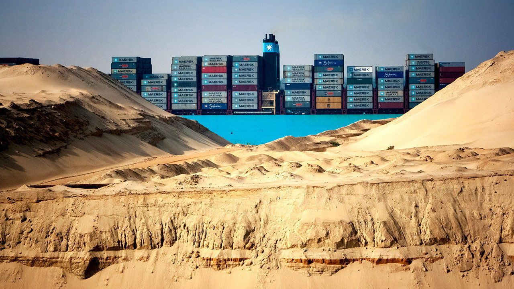
Listen to this story.Enjoy more audio and podcasts on iOS or Android.
Until the Suez Canal opened in 1869, merchant ships in the Red Sea mostly carried coffee, spices and slaves. The waterway changed everything. So far in 2023 around 24,000 vessels have plied the passage, accounting for some 10% of global seaborne trade by volume, according to Clarksons, a shipbroker. That includes 20% of the world’s container traffic, nearly 10% of seaborne oil and 8% of liquefied natural gas.
So missile and drone attacks by Houthi militants in Yemen on ships passing through the narrow strait of Bab al-Mandab, which connects the Red Sea to the Gulf of Aden, apparently in support of Palestinians in Gaza, look like the latest blow to the shipping industry—and to its customers. It has struck just as both groups try to return to normality after the upheavals of the pandemic and, more recently, troubles which include a drought that has restricted large vessels from passing through the Panama Canal for several months.
A dozen Houthi attacks in recent weeks and four more on December 18th pose an unacceptable danger to shipping. Container firms accounting for some 95% of the capacity that usually crosses Suez, including giants like Swiss-based msc and Denmark’s Maersk, have suspended services in the area. A few energy firms, such as bp and Equinor, have also temporarily stopped their ships from using the canal. As when the route was disrupted in 2021 after , a giant container ship, ran aground and blocked the canal for six days, shipping companies are already rerouting vessels around Africa. This will extend journeys from around 31 to 40 days between Asia and Northern Europe, reckons Clarksons. Unless the route can safely reopen, delays and the inevitable disruption at ports as vessels arrive out of schedule will create disorder in the coming months.
Still, this Suez crisis will not “put a cork in global trade”, says Lars Jensen of Vespucci Maritime, a consultancy. The reason for the cautious optimism has to do with shipping’s remorseless cyclicality. In contrast to the fiasco, supply chains are not currently under immense strain. Back then cuts to capacity coupled with a surge in spending by locked-down consumers had sent shipping rates surging to astronomical levels. A global index from Drewry, another consultancy, hit over $10,000 per standard container. On some routes, spot rates surpassed $20,000. That helped push shipping firms’ combined net profits in 2022 to $215bn, according to the John McCown Container Report, an industry compendium, compared with a cumulative loss of $8.5bn in 2016-19.
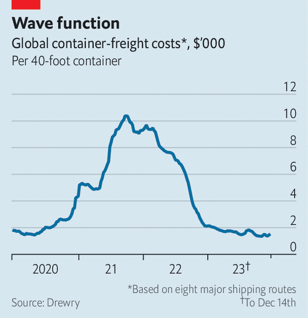image: The Economist
The shipping firms’ usual response to such price signals is to order new vessels. Those are starting to arrive. Though demand has remained flat over the past year or two, the global fleet’s capacity will swell by 9% this year and another 11% in 2024, according to ing, a bank. Already, the industry’s profits may have plunged by 80% in 2023. With capacity to spare, running longer routes should not cause the disruption seen at the height of covid-19. By mid-December Drewry’s index was becalmed at $1,500 or so (see chart). Rates could double as a result of the Red Sea turmoil, reckons Peter Sand at Xeneta, a freight-data firm. But they will probably stay well below their pandemic peaks—and so will shipping companies’ profits. ■
Max Flannel is back to grapple with your workplace headaches
Listen to this story.Enjoy more audio and podcasts on iOS or Android.
Dear Max,
Now you ask, I’m not really even sure what a watercooler is. But the basic idea is to find a place where you know colleagues are bound to go regularly and where you can engage in light conversation about whether they saw anything good on TV last night. My advice is to hang around any tap and you should meet colleagues fairly regularly.
I wouldn’t worry too much. Those stories are mostly made-up and all deliberately boring. No executive ever opens a meeting talking about how they woke up in their own clothes but in a total stranger’s apartment. The goal is only to put people at their ease by making the speaker seem faintly human. Just say exactly what you put in your message above and then make your face go a bit vulnerable. That should do the trick.
This is a truly revolting trend. There are people walking around offices right now saying things like “Focaccia seems to be taken. Is Ciabatta free?”, “I’m in Ulaanbaatar. Where are you?” and “Let’s set up a projector in Nelson Mandela”. You either sound totally idiotic or as if you are suggesting something appalling. Just describe the room you are referring to: the one where Mandy gave that terrible presentation, say, or the one where absolutely nothing works.
I’m afraid you have developed non-impostor syndrome. Impostor syndrome, the much more common condition, is the worry that you are not good enough to take on certain roles. If you own up to this feeling, you will almost certainly be told that you are way better than the people who blithely hold those roles now. If you have non-impostor syndrome, you start to wonder whether you are one of the people they mean and therefore deeply incompetent. The only known cure for non-impostor syndrome is impostor syndrome.
I think I know what’s happened here. Leave this one with me.
I called the people who made this tool and they have never heard of this kind of behaviour before. We have looked at your photo on LinkedIn and we do all agree that the AI seems to be making exactly the right call. On the downside, we also seem to be closer to the Singularity.
There are only three ways to handle this common problem. One is to start so loudly that everyone immediately gives way. You may come up against a fellow-shouter and then it’s just a battle of nerves: who is going to give way? The second is to raise your hand and wait: you’ll get your turn eventually and be listened to. The third is to get promoted. If you are senior enough, it doesn’t matter how ludicrous a point you are making; everyone gives way. Keep sending me your problems, and enjoy the break! ■
Read more from Bartleby, our columnist on management and work:
The old continent enjoys a unique blend of heritage, skills and strategy
Listen to this story.Enjoy more audio and podcasts on iOS or Android.
At this year’s holiday soirées luxury bosses may be stingier than usual with the champagne. It has not been a sparkling six months for the industry, as well-heeled consumers from East to West have tempered the excesses of recent years. The S&P global luxury index, which tracks the industry’s performance, is down by 9% since the middle of the year. Still, the purveyors of splendour need not forgo the merrymaking altogether. The global market for personal luxury goods, from handbags to haute couture and horology, grew by 4% this year, reckons Bain, a consultancy. That is disappointing compared with 20% last year—but nothing to scoff at amid fears of a slowing global economy.
The past two decades have been remarkable for the industry. Global sales have tripled to nearly $400bn, thanks largely to a swelling of the ranks of crazy rich Asians. The biggest beneficiaries of the boom have been European companies. These account for around two-thirds of luxury-goods sales, according to Deloitte, another consultancy, and nine of the world’s ten most valuable luxury brands, according to Kantar, a market-research firm. Bernard Arnault of LVMH, a European luxury goliath, is the world’s second-richest man. The industry remains a rare bright spot for Europe at a time when the continent seems at risk of fading into economic and technological irrelevance. Why has it been so immune to foreign competition?
Heritage is one explanation. Europe’s luxury firms have ridden high on the world’s continuing fascination with the old continent. It is home to seven of the ten most visited countries in the world. Tourists flock to Europe’s historic cities to ogle its artworks, taste its local delicacies and drink its fine wines; the rich and famous gather in the summer for lavish parties on the Riviera. In his book, “Selling Europe to the World”, Pierre Yves Donzé, a business historian, argues that the ascendancy of European luxury is thanks to “the powerful attraction of an idealised way of life, combining elegance, tradition and hedonism”.
In an interview with the in 1996 Tom Ford, a famed American designer, gushed that Europeans, unlike his compatriots, “appreciate style”. American fashion labels have struggled to break into the most exclusive end of the industry. Even America’s pricier brands like Ralph Lauren concentrate on what insiders contemptuously call “accessible luxury”. In Asia home-grown rivals have thrived mostly in categories like jewellery (China’s Chow Tai Fook or India’s Titan) and cosmetics (Japan’s Shiseido) where local tastes are more pronounced.
Europe, meanwhile, has entrenched itself as the centre of design and craftsmanship in the luxury business. Three of the “big four” fashion weeks take place in European capitals. New York, the exception, has valiantly tried to build a cluster of high-end fashion talent, with design schools to rival those of Milan or Paris. Yet it has lost top designers to European capitals much as Europe has lost techies to Silicon Valley. As Mr Ford saw it, “If I was ever going to become a good designer, I had to leave America.”
Hobnobbing with other fashionistas is not the only advantage on offer in Europe. The continent is dotted with artisanal workshops that have for decades catered to the exacting standards of the luxury industry. Hermès handbags, some of which sell for upwards of $10,000, are produced by experienced craftsmen who can spend 20 hours or more on one bag. Over decades the continent has developed specialised clusters of production, from watchmaking in the Jura Arc of Switzerland to shoemaking in the Veneto region of Italy, where techniques are handed down over generations through specialist schools and coveted apprenticeships.
Europe’s luxury champions deserve credit, too, for pursuing strategies that have reinforced their dominance of the industry. They have been steadily buying stakes in their suppliers, giving them a competitive edge through greater control of production, notes Thomai Serdari of New York University’s Stern Business School. In May Chanel and Brunello Cucinelli, two luxury houses, bought a joint 49% stake in Cariaggi Lanificio, an Italian cashmere supplier. Vertical integration in the industry has stretched all the way back to alligator farms in Louisiana and sheep stations in Australia. It has also extended in the other direction, into distribution, with luxury firms increasingly opting to sell directly to shoppers through their own swanky stores, rather than entrusting the customer experience to others.
All that has required plenty of capital, which helps explain the parallel trend towards horizontal integration in the industry. LVMH now houses 75 luxury brands. Although these mostly operate autonomously, the model provides economies of scale in areas like marketing and back-office functions. It also gives the group the financial firepower to invest in prime real estate. In July LVMH bought the building on the Champs Elysées that houses its Louis Vuitton flagship store. Swatch, which owns watch brands from Blancpain to Omega, controls a portfolio of component suppliers, too. The conglomerate model also helps to lure in top talent by offering opportunities for designers and craftsmen to move between brands, notes Stefania Saviolo of Bocconi University.
Continental drift
Enthusiasm for horizontal integration among European luxury firms has not been universal. Early in the 2010s Hermès fended off a takeover attempt by LVMH. It has done just fine on its own—its shares have outperformed LVMH’s by more than half over the past five years. Other independent luxury brands, however, have struggled to keep up. That is especially so for Italian firms, which account for 23% of luxury’s 100 largest businesses but only 8% of their combined sales, according to Deloitte. Many of these are multigenerational family businesses that have balked at joining forces with old rivals. If they are to maintain their position at the ritziest end of luxury, they may need to swallow their pride. ■
Read more from Schumpeter, our columnist on global business:
Listen to this story.Enjoy more audio and podcasts on iOS or Android.
Almost everyone expected a global recession in 2023, as central bankers raised interest rates to cool inflation. The consensus was wrong. Global GDP has probably grown by 3%. Job markets have held up. Inflation is on the way down. Stockmarkets have risen by 20%.
But this aggregate performance conceals wide variation. has compiled data on five indicators—inflation, “inflation breadth”, GDP, jobs and stockmarket performance—for 35 mostly rich countries. We have ranked them according to how well they have done on these measures, creating an overall score. The table shows the rankings, and some surprising results.
Top of the charts, for the second year running, is Greece—a remarkable result for an economy that was until recently a byword for mismanagement. Aside from South Korea, many of the other standout performers are in the Americas. The United States comes third. Canada and Chile are not far behind. Meanwhile, lots of the sluggards are in northern Europe, including Britain, Germany, Sweden and, bringing up the rear, Finland.
Tackling rising prices was the big challenge in 2023. Our first measure looks at “core” inflation, which excludes volatile components, such as energy and food, and is a good indicator of underlying inflationary pressure. Japan and South Korea have kept a lid on prices. In Switzerland core prices rose by just 1.3% year on year. Elsewhere in Europe, though, many countries still face serious pressure. In Hungary core inflation is running at 11% year on year. Finland, which is heavily dependent on Russian energy supplies, is also struggling.
In most countries inflation is becoming less entrenched—as measured by “inflation breadth”, a measure that calculates the share of items in the consumer-price basket where prices are rising by more than 2% year on year. Central bankers in places including Chile and South Korea increased interest rates aggressively in 2022, sooner than many of their peers across the rich world, and now appear to be reaping the benefits. In South Korea inflation breadth has fallen from 73% to 60%. Central bankers in America and Canada, where inflation breadth has dropped even more sharply, can take some credit, too.
However, in other places, the battle against inflation is not even close to being won. Take Australia. Inflation there remains firmly entrenched, with the price of close to 90% of the items in the average person’s shopping basket rising by more than 2% year on year. Worse, inflation breadth is not coming down either. France and Germany are also in trouble. And so is Spain, where inflation seems to be becoming more entrenched over time.
Our next two measures—growth in employment and GDP—hint at the extent to which the 35 economies are delivering for ordinary folk. Nowhere fared spectacularly well. Across the world productivity growth is weak, limiting potential increases in gdp. Already tight labour markets at the start of 2023 meant there was little room for improvement when it came to jobs.
Only a few countries, though, actually saw their GDP decline. Ireland was the worst performer, with a drop of 4.1% (take that with a pinch of salt: there are big problems with the measurement of Irish GDP). Estonia, another country whacked by the fallout of Russia’s invasion of Ukraine, did badly. Britain and Germany also underperformed. Germany is struggling with the consequences of the energy-price shock and rising competition from imported Chinese cars. Britain is still dealing with the aftermath of Brexit—most economists expect the country to suffer from weak economic growth in the coming years.
America, by contrast, did well on both GDP and employment. It has benefited from record-high energy production as well as a generous fiscal stimulus implemented in 2020 and 2021. The world’s largest economy may have pulled along other countries. Canada’s employment has risen smartly. Israel, which counts America as its largest trading partner, comes fourth in the overall ranking, although its war with Hamas, which began in October, makes the outlook for 2024 deeply uncertain.
You might think that the American stockmarket, stuffed with firms poised to benefit from the revolution in artificial intelligence, would have done well. In fact, adjusted for inflation it is a middling performer. The Australian stockmarket, filled with commodities firms managing a comedown from high prices in 2022, underperformed. The Finnish stockmarket had a poor year, with the share price of Nokia, a national champion, continuing its long, slow decline. Japan’s firms, by contrast, are experiencing something of a renaissance. For that, thank reforms to corporate governance, which finally seem to be bearing fruit. The country’s stockmarket was one of the best performers in 2023, rising in real terms by nearly 20%.
But for glorious equity returns, look thousands of miles west—to Greece. There the real value of the stockmarket has increased by more than 40%. Investors have looked afresh at Greek companies as the government implements a series of pro-market reforms. Although the country is still a lot poorer than it was before its almighty bust in the early 2010s, the imf, once Greece’s nemesis, praised “the digital transformation of the economy” and “increasing market competition” in a recent statement. While underperforming Finns can console themselves this Christmas by drowning their sorrows alone in their underwear (or getting , as it is known locally), the rest of the world should raise a glass of ouzo to this most unlikely of champions. ■
Hong Kong’s problems trace back to China. And also America
The “superconnector” suffers the worst of both worlds
Listen to this story.Enjoy more audio and podcasts on iOS or Android.
Sevva, a swanky bar and restaurant with electrifying views, has been serving bankers and sightseers for more than 15 years. From its terrace, you can peer over a cocktail and through the office windows of HSBC across the road. The restaurant’s cuisine is meant to be “fresh, simple and honest”. Yet it is not cheap. An oversized dosa, a humble South Indian breakfast food, will set you back HK$380 (almost $50). Some patrons eat them with a knife and fork.
In May, sadly, the restaurant will close. That has not helped the morale of the city’s beleaguered financial industry. Hong Kong’s main stockmarket index has plunged by more than a quarter since late January. Its index for smaller, “growth” enterprises is well below the trough it reached in October 2022, before China began lifting the quarantine requirements that starved Hong Kong of visitors.
image: The Economist
Amid such depressed sentiment, the money raised from initial public offerings came to just HK$37bn in the first 11 months of 2023 (see chart), the least for 20 years. Mainlanders have described Exchange Square, where the bourse is located, as a “ruin”. Unlike New York’s financial district, which features a bronze statue of a charging bull, the square features two bronze water buffalo, one lying flat.
Financial services account for more than a fifth of Hong Kong’s GDP. It is therefore hard for the city to prosper when its bankers do not. In July some forecasters expected Hong Kong’s economy to grow by 6% in 2023. Now the consensus is only 3.3%. That means Hong Kong’s GDP is smaller than it was in 2018, the year before anti-government protests broke out. It amounts to a lost half-decade.
Even Hong Kong’s notoriously expensive property market has suffered. Prices have fallen by almost 20% since their peak. In October the city cut in half stamp duty for foreign buyers and buyers of multiple properties. Capital Economics, a research firm, notes that it was the first relaxation of property-buying curbs since 2010.
What explains Hong Kong’s woes? Sevva’s founder cited the covid-19 pandemic and the “social movements of 2019”, which “posed enormous challenges” to the restaurant’s operations. In response to protests about the mainland’s growing influence, China’s government imposed a strict national-security law, which has further eroded the city’s autonomy. That has made it harder for Hong Kong to fulfil its coveted role as a “superconnector” between China and the rest of the world. John Lee, the city’s leader, could not attend the APEC forum in San Francisco in November because he is under American sanctions.
Since the protests were quashed, the authorities have worked hard to bring Hong Kong and the mainland closer together. Whether or not this message has taken root among residents, it seems to have prevailed among foreign investors, some of whom now see little distinction between Hong Kong and the rest of China.
But the truth is that Hong Kong’s financial industry and property market remained strong after the national-security law was introduced in June 2020. IPOs, for example, brought in almost HK$329bn in 2021, 15% more than in 2018. Property prices did not peak until the end of 2021.
China’s crackdown on Hong Kong has probably done less immediate harm to the territory’s financial markets than another crackdown: Beijing’s regulatory campaign against mainland property developers and internet firms, many of which are listed in Hong Kong. Strict financial limits imposed on developers caused a wave of defaults on bonds issued in Hong Kong. Investors have learnt that unsecured debt issued offshore by a mainland company’s subsidiary or offshoot sinks to the bottom of the pecking order when things go wrong.
As well as diminished autonomy from the mainland, Hong Kong also lacks autonomy from America’s Federal Reserve. To maintain its currency peg to the dollar, the city has been forced to raise interest rates sharply, despite low inflation and the fragility of its recovery. High interest rates have hurt the property market and the broader economy. The high cost of capital may have encouraged firms to run down their inventories, contributing to the sharp slowdown in growth in the second quarter, argues Goldman Sachs, a bank.
The currency peg has also meant that Hong Kong has lost competitiveness against some of its neighbours. Its currency has risen by 6% against the yuan since the end of January, even as prices in China have been falling. Weak exports and strong imports are likely to subtract more than two percentage points from Hong Kong’s growth this year. Hong Kong is not just another Chinese city. If it were, it would have a more competitive currency.
Days of being wild
When China dismantled its quarantine regime a year ago, Hong Kong’s boutiques, hotels and restaurants expected an influx of mainlanders. In the first ten months of the year, 21m showed up. Yet that was only 52% of the number that arrived in the same period of 2018. These visitors also seem to be spending less. Indeed, many of them are opening bank accounts and buying life-insurance policies to take advantage of the city’s higher interest rates.
Instead of mainlanders flocking to Hong Kong, the city’s residents are travelling in the opposite direction. Their departures (mostly to other parts of China) now outnumber mainland arrivals by almost three-to-one, points out Citigroup, another bank. After a recent visit to Hong Kong, John Greenwood, one of the architects of the territory’s dollar peg, was reminded of “episodes from the distant past” when British consumers crossed the Channel to France to buy booze and food.
But all this gloom has an upside. If the Fed does cut interest rates in 2024, as futures markets expect, Hong Kong’s domestic economy should respond vigorously. As financial conditions ease and Hong Kong’s currency weakens, the deals and the visitors might return. Although Hong Kong is losing one of its most iconic restaurants, the city’s appeal will endure. It will remain a place where people from around the world can enjoy a taste of Asia without giving up familiar utensils. ■
Listen to this story.Enjoy more audio and podcasts on iOS or Android.
“As soon as a coin in the coffer rings, the soul from purgatory springs,” ran an early advertising jingle attributed to Johann Tetzel, a 16th-century indulgence salesman. Funding the church offered believers an alternative to paying for sins in the afterlife. The carbon-credit market promises something similar. Instead of reducing your carbon footprint, why not simply pay someone else to do it for you?
It is a nice idea. Yet the voluntary carbon market—as opposed to compliance markets, such as the EU’s emissions-trading scheme—is in turmoil. Latter-day Martin Luthers, whose objections to Tetzel led to the Reformation, have pointed out that offsets struggle to prove they make a difference to emissions: renewable projects are often viable on their own, thus providing funding does not lower emissions.
image: The Economist
Scandals have also sapped investor appetite. A report by the , a British newspaper, alleged that many leading “nature-based” offsets, which usually attempt to restore forests, are junk. Activists argue that middle men hog the proceeds and indigenous people fail to benefit. Prices for nature-based offsets plunged from $15 a tonne after the COP climate summit in Glasgow two years ago to a disastrous $0.10 a tonne after the recent meeting in Dubai, according to Xpansiv, an exchange.
Reformers were at the summit in force, with proposals for how to fix the market. These include plans to verify, tally and register offsets. Six outfits, including the Voluntary Carbon Markets Integrity Initiative, which provides advice on how to use credits, and the Integrity Council for the Voluntary Carbon Market, which aims to set offset rules, launched what they called an “end-to-end integrity framework”.
The hope is that such reassurance might tempt back corporate buyers. McKinsey, a consultancy, has estimated that the market value of voluntary offsets could reach $50bn by 2030, up from $2bn or so today, given the number of firms that have vowed to decarbonise supply chains. Banks have begun to open trading desks to buy and sell offsets. On December 4th the Commodity Futures Trading Commission, an American regulator, published guidance on how it will regulate markets.
Vast flows of private finance could provide money for poor countries to fight global warming. America’s state department therefore outlined plans for its own carbon-offset scheme at COP, through which firms could pay countries to clean up electricity production. The Dominican Republic and Nigeria have signed up. So have McDonald’s, a fast-food chain, PepsiCo, a consumer-goods firm, and Bank of America.
The Rockefeller Foundation, which is working with the state department, also supports a similar scheme. The idea is to mix private investment, loans and carbon credits to reduce the cost of replacing coal with renewables. The first deal has been agreed between ACEN, a Filipino energy firm, and the Monetary Authority of Singapore, the island-state’s central bank. Companies will be able to use credits to pay the territory’s carbon tax from 2024.
Countries also inked deals under a provision of the Paris agreement on climate change that allows them to co-operate in meeting emissions promises. Switzerland came to an agreement with Ghana under which it will fund four waste facilities. Singapore signed a deal with Papua New Guinea that will allow it to count some of the latter’s emissions cuts as its own.
Yet negotiations over a final rule book for bilateral deals, as well as a carbon-credit market with the imprimatur of the UN, went nowhere. Negotiators clashed over how much transparency to require. Without nationally accredited schemes, firms will have to turn to the “Wild West” of the voluntary market, says Mandy Rambharos of the Environmental Defence Fund, a charity. The danger is that bad press provides an excuse for firms to withdraw from the market altogether. After cop, the price of nature-based offsets fell even further; the hope is that they will rise once the reforms are actually implemented. For carbon sinners, heaven can wait. ■
Listen to this story.Enjoy more audio and podcasts on iOS or Android.
Chopping off their heads does not work: cockroaches can live without one for as long as a week. Whacking them is no guarantee either: their flexible exoskeletons can bend to accommodate as much as 900 times their body weight. Nor is flushing them down the toilet a solution: some breeds can hold their breath for more than half an hour. To most, roaches are an unwelcome pest. Their presence is made all the worse because they are indestructible.
An unwelcome pest is how many financiers and regulators would describe the crypto industry. Criminals use cryptocurrencies to launder money. Terrorists use them to make payments. Hackers demand ransoms in bitcoin. Many crypto coins are created simply so their makers can make off with the money.
The industry also appears to be indestructible. Crypto prices were crushed by higher interest rates in 2022. The industry’s head has been chopped off: Changpeng Zhao and Sam Bankman-Fried, the founders of the world’s biggest and second-biggest crypto exchanges, now both await sentencing for financial crimes (breaking anti-money-laundering laws and fraud, respectively). Regulators are cracking down. Yet not only has crypto survived, it is once again soaring: bitcoin climbed to a two-year high of almost $45,000 on December 11th, up from just $16,600 at the start of the year.
What is going on? For one thing, indestructibility is built into the technology. Bitcoin, ether and other coins are not companies—they cannot go bankrupt and be shut down. They employ blockchains, which maintain a database of transactions. Their lists are verified by a decentralised network of computers that are incentivised to keep maintaining them by the promise of new tokens. Only if the tokens fall to zero does the whole architecture collapse. And there continue to be lots of reasons to believe some crypto tokens are worth more than nothing.
The first is that holding crypto is a bet on a future in which use of the technology is widespread. People in despotic countries already use bitcoin and stablecoins (tokens pegged to a hard currency, like the dollar) to store savings and sometimes to make payments. These could be used more widely. Artists and museums are still creating or collecting non-fungible tokens (nfts). As are those looking to flog an image. Donald Trump is selling his mugshot for $99 a piece; he plans to have the suit he was booked in cut into pieces, made into cards and given to punters who buy at least 47 nfts in a single transaction.
During the boom times, the crypto industry raised a lot of money and hired plenty of smart developers. Those that remain are working on new uses, like social-media applications or play-to-earn games. Perhaps these will never be widely adopted. But even the small chance that they work out is worth something.
The second reason is that, with each boom-and-bust cycle, it becomes clearer crypto is not a bubble like tulip mania in the 1630s or the craze for Beanie Babies in the 1990s. Although bitcoin is a volatile asset, its price history looks more like a mountain range than a single peak, and appears closely correlated with tech stocks. Yet it is only moderately correlated with the broader market. An asset that swings up and down, and not in parallel with other things people might have in a portfolio, can be a useful diversifier.
That bitcoin has established itself as a serious asset seems to be the source of the latest surge. In August an American court ruled that the Securities and Exchange Commission, America’s main markets regulator, had been “arbitrary and capricious” when rejecting an effort by Grayscale, an investment firm, to convert a $17bn trust invested entirely in bitcoin into an exchange-traded fund (etf). Doing so would make investing in bitcoin easier for the average punter.
In October the court upheld its ruling—in effect ordering the sec to give way. The biggest fund managers, including BlackRock and Fidelity, have also applied to launch etfs. Given the returns bitcoin has offered in the past, and its correlations with other assets, the result could be a rush of cash into bitcoin, as even sensible investors consider putting small slices of their pension pots or portfolios into crypto for diversification.
Many feel instinctive revulsion when they spy a roach. But in spite of their flaws, the bugs have uses—they turn decaying matter into nutrients and eat other pests, such as mosquitoes. Crypto has its uses, too, such as portfolio diversification and keeping money safe under despotic regimes. And, as has been shown, it is just about impossible to kill. ■
Read more from Buttonwood, our columnist on financial markets:
Economists attempt to answer a profound political question
Listen to this story.Enjoy more audio and podcasts on iOS or Android.
It is part metaphor, part myth and part history. Thomas Hobbes thought life there was nasty, brutish and short. John Locke disagreed, proclaiming that it was where people first learnt how to own things. Jean-Jacques Rousseau described it as the place where people were born free, before they became ensnared in chains. Robert Nozick thought that people were so desperate to escape it, there was an inevitable result: the creation of a state.
Ideas about the “state of nature”—how people lived before politics organised itself into governments—have held the attention of philosophers for centuries. Discovering whether it played out as imagined was nigh-on impossible. And yet thinking about what people would do without a government helped answer profound questions. What are the limits of political power? Is the modern state something that citizens would freely choose?
Now, after all this theorising, three economists think they have some empirical answers. According to Robert Allen of New York University, Abu Dhabi, Leander Heldring of Northwestern University and Mattia Bertazzini of the University of Nottingham, the key to understanding the emergence of modern politics is not a metaphor, but the constantly shifting courses of ancient rivers in Iraq. The first states, they argue in a paper published in the , were glued together not as shelters from violence, as Hobbes believed, but by economics.
The banks of the Tigris and the Euphrates, Iraq’s two longest rivers, are home to some of the world’s oldest settlements. Mesopotamia, which 5,000 years ago refined the first known system of writing, earned the area the reputation of “the cradle of civilisation”. The paths of these rivers shift, as floods and droughts cause their beds to flood. When a shift came, some ancient farmers were left without water for their crops.
Mr Allen and his co-authors investigate whether the timing of changes to a river’s course had anything to do with when the number and size of settlements grew. They do so by looking at the effect of the first recorded shift in 2,850BC. This presented farmers with something close to the choice imagined by philosophers when theorising about the state of nature. Those left behind by the river could revert to nomadism. Or they could band together to build irrigation systems to ferry water from distant rivers.
A philosophical question is therefore transformed into something akin to a laboratory experiment, only one set thousands of years ago and extending hundreds of miles across. Moreover, the results of the experiment are clear. A 5km-by-5km square in the basin left behind by a river was 14% more likely to have a settlement, marked by a public building such as a temple or marketplace, 150 years after the shift than in the 50 years before it. Each square was 12% more likely to have a built canal, a form of artificial irrigation that made farming far from rivers possible. Five new cities were created, and only three abandoned. Esnunna, one city along a new tributary of the river, became much bigger.
This, Mr Allen and his co-authors say, is evidence that that the first states were formed by farmers co-operating for economic reasons. A canal network would have been too large a cost for any to bear alone. But by spreading the cost, the construction was worth it for each. Such decisions were momentous. They represent some of the earliest examples of governments providing infrastructure in return for taxes, and thus the genesis of the earliest states.
The authors then divide centuries of thinking on the origins of states into two camps. The first, which they say ranges from Daron Acemoglu, an influential economist at the Massachusetts Institute of Technology, to Karl Marx, supposes that states ultimately emerge from a process of social bargaining. The rich and high-status seize power for personal gain, and periodically dole out services, such as a road, school or police force, in order to keep populations on board. But if this had been the case in Mesopotamia then it would have been in the areas that a river shifted towards that settlements would have formed. After all, they developed richer and more fertile farmland, yielding a bigger tax take.
That Mesopotamian farmers seem to have chosen to band together as the river shifted away lends support to the second camp. Philosophers in this group, who include Locke and Rousseau, contend that governments emerged when people chose to co-ordinate themselves, swapping their freedom to do whatever they wanted for a state that mediates disputes and provides a degree of safety. Mr Allen and his co-authors analyse only Mesopotamian Iraq, but they argue that their results ought to apply more generally to other fledgling states. Governments, in other words, are chosen rather than foisted upon their citizens.
Meandering path
This is quite the landgrab by economists, seizing terrain that is more commonly occupied by political theorists. The study is not flawless. Perhaps an unknown conquest explains the spread of settlements in the period under consideration. Maybe the authors are wrong and the pattern does not hold elsewhere. There were already six cities and many more settlements in the Mesopotamian Valley before its rivers really began to move, and some had existed for a thousand years. The authors insist that they are only interested in how new governments form, but there is a chance they have in fact captured older ones spreading.
The paper is nevertheless bold and valuable. Philosophers have sought for centuries to explain why states emerge. Too little time has been spent considering whether economic factors might have been at play. Although transforming the state of nature into a specific time and place means losing some of its complexity, doing so opens the door to the sort of experiment that could only have been imagined by earlier philosophers. If Hobbes or Locke could have studied something approximating the state of nature about which they were theorising, they surely would have tried. ■
Read more from Free exchange, our column on economics:
Listen to this story.Enjoy more audio and podcasts on iOS or Android.
A shop assistant leaves a Co-op convenience store in Milton Keynes and opens the lid of a white box, about the size of a small suitcase, with a red flag on top and six wheels. After the assistant drops a bag of shopping inside and scans a bar code, the box trundles off. Travelling at a brisk walking pace along the footpath, it pauses at a road junction until two cars have passed before crossing safely. Neither pedestrians nor car drivers give it a second glance. Delivery robots like this have become part of the scenery since they started work in this town, some 80km north-west of London, in 2018.
“That’s when you know a new technology is successful,” says Ed Lovelock. “People don’t notice it any more.” Mr Lovelock is product manager for Starship Technologies, a Californian firm that has so far delivered more than 5m shopping orders and restaurant meals in Europe and America using its autonomous Starships.
In some places such deliveries arrive by air. “It soon becomes a normal part of your life,” says Keller Rinaudo Cliffton, the boss of Zipline, a drone-delivery firm also based in California. Zipline began using drones to deliver blood and medical products in Rwanda in 2016. It is expanding into groceries and meals and now operates in other parts of Africa as well as America and Japan. In 2024 Zipline will begin deliveries to hospitals and clinics in the north of England for Britain’s National Heath Service.
Where’s my bot?
Like many new technologies, delivery bots have gone through something of a hype cycle. A decade ago many predicted they would soon be everywhere. Amazon, for one, announced with great fanfare ambitious plans for its Prime Air drone-delivery service in 2013, but progress was slow and not much happened. That is changing, and even Amazon’s drones finally look like they are about to take off.
A number of things have brought this about. Companies like Starship and Zipline began modestly in areas where regulators were more comfortable with robotic deliveries. Milton Keynes, for instance, is a new town with wide paths and cycleways for bots to drive along, and with few low-flying aircraft to worry about in the sky above Rwanda, drones can operate safely.
Having steadily gained solid operating experience, officialdom is becoming more relaxed about such services. What that means is, particularly at this time of year, instead of fleets of delivery vans with drivers hauling seasonal gifts and shopping to people’s front doors, an increasing number of goods are arriving by robot.
Starship has gone on to launch services in ten British towns, including older places with narrower streets like Manchester, Leeds and Cambridge. It also makes deliveries on more than 50 university campuses in America. Nor is it alone. Serve Robotics, which is backed by Uber, a ride-sharing platform, began using “sidewalk robots” for restaurant deliveries in Los Angeles in 2022 and aims to deploy some 2,000 in other American cities.
Customers typically use an app to order, with the firms adding a small delivery fee. Depending on distance, this starts at 99 pence ($1.20) in Milton Keynes. Around 100 Starships, each able to carry up to 10kg, serve a number of stores. They navigate along pre-mapped routes using satellite positioning. Sensors, including a dozen cameras and radar, create a “bubble of awareness” around the robot. On arrival, customers use their phone to unlock the robot’s storage compartment and collect their shopping.
It helps that Starships have been made cutesy. Customers in Milton Keynes can choose a song, like “Happy Birthday” for the bot to play on arrival. Some are also decorated for festive occasions, such as “pumpkinbots” during Halloween or “reindeerbots” at Christmas. As a result, adds Mr Lovelock, residents are protective of them and few are tampered with. The bots emit a high-pitched screech if anyone tries to steal them or their contents.
The growing acceptance of delivery bots is helping the idea spread. A trial scheme using sidewalk robots in Helsinki, the Finnish capital, is due to be expanded in the spring of 2024. In November the South Korean government warned people “not to be surprised” by more of them appearing in the capital, Seoul, where the 7-Eleven convenience chain has been testing four-wheel models produced by Neubility, a startup backed by Samsung.
Much the same is happening with drones, although they are not yet dressing up and singing songs. America’s Federal Aviation Administration recently allowed some firms, including Zipline, to fly “beyond-visual-line-of-sight” (BVLOS). In America and many other countries drones are not allowed to be flown out of sight of their operators unless ground observers monitor them in case other aircraft are in the vicinity. This restricted how far drones could fly and drove up costs.
Advances in technology helped win these new freedoms. For BVLOS flights, new miniaturised sensing devices can be built into drones to detect and avoid other aircraft. Zipline’s system uses specially developed microphones which can pick up the sound of an approaching aircraft and determine its position, allowing the drone to take evasive action if necessary.
Drone highways
In Britain a 165-mile (265km) superhighway for drones, connecting southern England with the Midlands, will start operating in 2024. It will rely on a series of ground stations along the route to communicate with the drones to keep them apart and avoid any other aircraft.
The ability to fly BVLOS allows Zipline to offer similar services to its African operations. For these, the company uses a fixed-wing drone capable of a round trip of some 200km. Carrying up to 1.8kg, it is launched with a giant catapult and drops its delivery using a parachute.
The company is starting to work with a number of medical centres in America. In a recent deal with the Cleveland Clinic, it will deliver medicines directly to people’s homes in locations throughout Ohio. For this Zipline will use a new type of hovering drone, able to make round trips of some 30km carrying up to 3.6kg. Instead of a parachute, this drone uses a load-carrying device called a “droid”. After being lowered on a cable, the droid employs a small fan motor to manoeuvre, allowing it to set packages down in precise locations, such as the front steps of a home. This drone-plus-droid system will also be used to deliver groceries and meals.
Both sidewalk robots and drones still require some level of human supervision. Usually this involves people in a control centre monitoring them and intervening if necessary. For Starships, these interventions tend only to come when a bot stops and seeks confirmation that a manoeuvre it intends to undertake, like crossing a tricky road junction, is safe. Zipline’s drones can be called back to base in the event of a problem, or ordered to stop flying immediately and deploy a parachute to land in an emergency. Such events, however, are “extraordinarily rare”, says Mr Rinaudo Cliffton
As for Amazon, it began a limited drone-delivery service in two small areas of California and Texas in 2022. It has since developed a new drone, called the MK30, which it plans to put into service in America, Britain and Italy by the end of 2024. These will operate out of the company’s delivery centres and also use a sense-and-avoid system for BVLOS flights. It is quieter than the firm’s existing model, can carry packages up to 2.2kg and will be able to fly in unsettled weather, including light rain.
Amazon is talking about delivering millions of packages by drone every year by the end of the decade. If the giant of online retailing can finally crack the technology, then automated delivery could spread almost everywhere. If not, there are already enough firms demonstrating that, at least in some areas, delivery bots using wheels, wings or rotors are coming your way. ■
Reviving ancient viruses can help fight modern ones
Insights from evolution can also improve vaccines
Listen to this story.Enjoy more audio and podcasts on iOS or Android.
Humans work hard to dodge viruses. Sick people are quarantined, diseased livestock are killed and fields of infected crops set ablaze. All for good reason. Viruses are everywhere: from snowy mountain-tops to grimy lake floors. Bringing old ones back to life seems like an idea from science fiction. Resurrecting an ancient virus would surely be a disaster.
But a new study led by Steven Fiddaman of the University of Oxford, and published in , defies this conventional wisdom. It shows how the resurrection of an ancient strain of virus can unlock the secrets of its evolution—and even improve the health of chickens today.
The virus in question is Marek’s disease virus (MDV), a killer of poultry. mdv causes inflammation and tumours in the lymphatic system of fowl, and kills more than 90% of unvaccinated chickens. Controlling it costs the poultry industry $1bn a year. Yet when it was discovered in 1907, MDV rarely caused death.
Dr Fiddaman wondered whether its new-found virulence was a result of the aggressive growth of industrial chicken-farming. To find out, he and his colleagues got their hands on nearly 1,000 chicken bones procured from archaeological digs across Europe and Asia, some of them up to 2,000 years old. Fragments of DNA from these remains were mapped on to the genome of today’s virus. This approach identified MDV infections in chickens as far back as the tenth century.
As the authors pieced together the ancient MDV genomes, however, they noticed that the genes were arranged identically to those in modern strains. That suggests that the increased virulence resulted not from large structural changes, but from point mutations. These are genetic tweaks that affect only one or two bases in a gene’s DNA sequence. Looking closely at the genome, the scientists found that a series of individual mutations had acted as a ratchet to increase virulence over the last century. In particular, changes had occurred in the sequence of a gene called , which has an essential role in tumour formation.
This discovery suggests that the ancient MDV may not have been able to cause tumours. To test this hypothesis, Dr Fiddaman followed up with a daring experiment. He synthesised the ancient form of the gene and inserted it into living chicken cells. It did not turn on any of the genes associated with tumour formation. In comparison, a modern gene quickly showed its aptitude to cause tumours.
Over the last century humans have made chickens the most common bird on the planet (there are now 35bn of them), accelerating the pace of the virus’s evolution. It is unusual that MDV has evolved in the direction of greater lethality; if birds die before infecting others the virus would die out. But a combination of overcrowding and the use of “leaky” vaccines, which alleviate symptoms but do not stop transmission, has kept them alive for long enough for fatal strains to thrive. By focusing on raising more fowl, humans also managed to raise a killer virus, says Laurent Franz, a senior author on the paper. That seems scarier than resurrecting an old one in the lab.
By fusing archaeology and modern genetic biology, the methods pioneered in the paper reveal how, and more importantly why, any virus mutates. That could help scientists tackle other parasites that pull on the purse-strings of livestock farmers—by designing new vaccines, for instance—or even to work out how to avert another global pandemic. ■
A new type of jet engine could revive supersonic air travel
It would also be simpler and more fuel-efficient
Listen to this story.Enjoy more audio and podcasts on iOS or Android.
Since the 1960s engineers around the world have been fiddling with a novel type of jet called a rotating detonation engine (RDE), but it has never got beyond the experimental stage. That could be about to change. GE Aerospace, one of the world’s biggest producers of jet engines, recently announced it was developing a working version. Earlier this year America’s Defence Advanced Research Projects Agency awarded a $29m contract to Raytheon, part of RTX, another big aerospace group, to develop an RDE called Gambit.
Both engines would be used to propel missiles, overcoming the range and speed limitations of current propulsion systems, including rockets and existing types of jet engines. However, if the companies are successful in getting them to work, RDEs might have a much broader role in aviation—including the possibility of helping revive supersonic air travel.
In a nutshell, an RDE “replaces fire with a controlled explosion”, explains Kareem Ahmed, an expert in advanced aerospace engines at the University of Central Florida. In technical terms, this is because a jet engine relies on the combustion of oxygen and fuel, which is a subsonic reaction that scientists call deflagration. Detonation, by comparison, is a high-energy explosion that takes place at supersonic speeds. As a result it is a more powerful and potentially a more efficient way of producing thrust, the force that drives an aircraft forward.
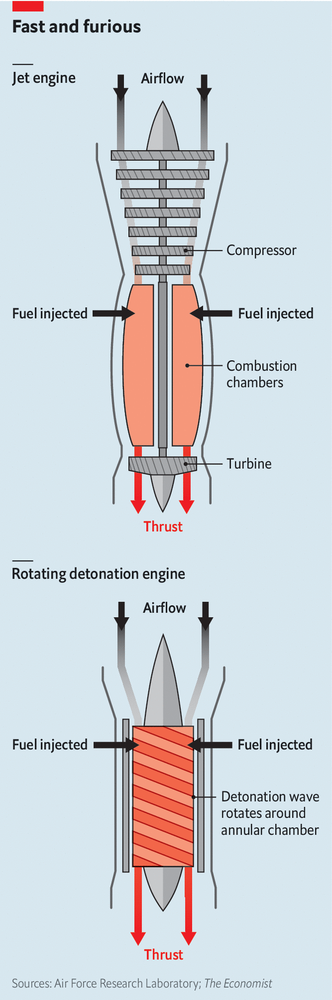image: The Economist
A conventional jet engine uses lots of moving parts (see diagram). Rotating blades draw in air and compress it before igniting it with fuel in a combustion chamber, creating rapidly expanding hot gases that blast out of the rear. As the gases exit they drive a turbine, which keeps the whole process going. An RDE is simpler. Air entering the front is forced into a hollow space between two concentric cylinders. When fuel is pumped into this area, it mixes with the oxygen in the air and detonates, creating a rotating supersonic shock wave that spirals around the gap and out of the rear. Once it has started, the detonation is self-sustaining.
Some jet derivatives, such as ramjets and pulse jets, also work without compressors and turbines, but they operate differently and have limitations. Being simple and compact, an RDE would be cheap to make and fuel efficient, allowing missiles to fly farther and faster, at up to five times the speed of sound (Mach 5, or some 6,125kph). The GE version is designed to be used with a ramjet to accelerate hypersonic missiles, which fly faster than Mach 5.
For a long time engineers had lacked the tools to build RDEs. That changed with advances in computer modelling, new alloys that can resist extreme temperatures and additive manufacturing, known as 3D printing. In 2020 Dr Ahmed and his colleagues made an experimental rocket version for launching space missions.
To power an aircraft an RDE would probably require assistance in taking off until sufficient air was being forced into the engine for detonation to begin. There is, though, a precedent for how this might be done using a hybrid engine. The Lockheed SR-71 Blackbird, a high-altitude American spy plane flown during the cold war, was powered by a pair of conventional jet engines. It would reach supersonic speeds the way most fast jets do, by lighting up its afterburners. This involves pumping fuel into the engines’ exhausts to create additional thrust. At about Mach 2, some of the air entering the front of the engines was piped directly to the back to be combusted in the afterburners, pushing the Blackbird to more than Mach 3. Some sort of arrangement incorporating an RDE into a conventional jet should be possible.
An RDE would guzzle less fuel than an afterburner, but it might be as rowdy. This is not necessarily a big problem for the military, but it is for civilian use. Hence Concorde, the world’s first and only commercial supersonic airliner, was expensive to operate and was banned from many routes for being too noisy. Since Concorde, which could fly at just over Mach 2, was retired from service in 2003, various groups have looked at building a replacement. Boom, a firm based in Colorado, is preparing to test fly a small prototype soon. If successful, the firm will build an 80-seater aircraft called Overture, capable of Mach 1.7. Boom claims it will be able to do this more economically and quietly than Concorde using conventional jets with specially designed intakes and exhaust nozzles, which avoid the need for afterburners.
Boom, boom
A RDE might similarly be toned down a bit with modern design techniques. But dealing with the inevitable sonic boom which trails behind an aircraft travelling faster than the speed of sound is another matter. Researchers believe that too could be reduced, but not completely muffled. By modifying an aircraft’s fuselage and wings, engineers believe they can reduce the boom’s impact on the ground below. Such work will help to determine whether or not future supersonic passenger planes will, like Concorde, be restricted to flying beyond the speed of sound only over oceans.
Air travel owes much to military technology, but it can take a long time to transfer. Jet engines first appeared in the 1940s on fighter planes, but it took until the late 1950s before they began to replace propeller-driven airliners in any great number. So passengers hoping to cut the subsonic seven-hour red-eye flight from New York to London to a little over an hour might have to wait a decade or more. ■
“’Twas the Night Before Christmas” turns 200 this year
How a poem created our modern Christmas customs
Listen to this story.Enjoy more audio and podcasts on iOS or Android.
It is one of the most famous poems in the English language—almost as famous as Christmas itself. A single word is enough to get going: “‘Twas”. You know the rest, or probably quite a bit of it.
Clement Clarke Moore’s “A Visit from St Nicholas”, better known by its first line, “‘Twas the Night Before Christmas”, was published on December 23rd 1823 and has been cherished ever since. Yet the poem is not just a jolly bit of festive verse. It imagined the details that have given modern Christmas its shape and character.
W.H. Auden, a poet, wrote in 1939 that “poetry makes nothing happen”. “A Visit from St Nicholas” is an unlikely exception. Eight reindeer, with names like Dasher, Dancer, Prancer and Vixen? That comes from Moore’s poem. St Nick coming on Christmas Eve, and not on December 6th, his saint’s day? The poem cemented the shift. But perhaps most important of all, the poem helped transform an unruly winter festival for adults into a peaceful domestic holiday focused on gift-giving and oriented towards children. “A Visit from St Nicholas” tamed Christmas.
The poem has global reach today, but it was first published in the small town of Troy, New York, in the . In early December, on a cold, rainy Saturday, Troy honoured its most famous export at its annual holiday festival. In the shadow of a towering pillar dedicated to Trojans who served in the civil war, a troupe of amateur actors staged a charmingly cheesy skit dramatising the poem’s composition, with the help of an elf, a magical mouse, two reindeer and Santa. That evening, Patrick Madden, Troy’s mayor, decked out in a top hat and a black cape, performed a recitation.
The poem’s extraordinary fame is something of an accident, as are its ties to Troy. It was first published anonymously, but 21 years later its author revealed himself. He was not a Trojan but a wealthy Manhattanite. Moore had never intended the poem to have an audience beyond his children, but a family friend sent the text to the without his permission. Moore decided to reveal his authorship by including the poem in his collected verse, published at his children’s insistence.
Moore belonged to an upper-crust set known as the Knickerbockers, after a character in a novel by Washington Irving, his friend and fellow Christmas-booster. “You can’t get much more elite than Clement Moore,” says Bruce Forbes, author of “Christmas: A Candid History”. Moore’s father was an Episcopal bishop who served as the president of Columbia College. Moore was an expert on Hebrew and a professor at a seminary established on land he donated. His family estate, called “Chelsea” after the London district, gave the present Manhattan neighbourhood its name.
A war has been waged over authorship, with descendants of Henry Livingston junior, a writer and officer in the revolutionary war, claiming that he, not Moore, wrote “A Visit from St Nicholas”. Some scholars agree, but most do not. Pamela McColl, who has written a history of the poem, dismisses the claims of Livingston’s authorship as “a bunch of family folklore”.
In Moore’s day, Christmas was not as commonly observed as it is today. There is no mention of it in the Bible, and it is entangled with pagan heritage. Scholars think Christmas was initially celebrated in December in order to piggyback on pre-Christian festivals, including Saturnalia (a holiday that originated in ancient Rome, which featured, among other jocular customs, the crowning of a mock king and masters waiting on their slaves).
Christmas did not easily shake its Saturnalian roots; it had a party-like atmosphere that makes Mardi Gras look tame. Historically, on Twelfth Night in Britain, the poor could enter the houses of the rich and demand food, drink and sometimes even money in a ritual called “wassail”. (To this day, officers in the British army serve the lower ranks a Christmas meal.)
In Moore’s New York, which was experiencing a destabilising population boom, gangs would carouse in wealthy neighbourhoods on Christmas. The Knickerbockers sought to do away with that noisy tradition and reshape the holiday. With “A Visit from St Nicholas”, Moore helped inspire its transformation from “a public, rowdy celebration in the streets into a kind of respectable, domestic Christmas”, says Thomas Ruys Smith, a professor at the University of East Anglia. That makes him “the foundational writer of Christmas in the 19th century”, argues Mr Smith.
“A Visit from St Nicholas” is more sophisticated than its 56 lines suggest. Moore sets his story at home, which replaced the street and pub as the site of Christmas festivities in the Victorian era. He presents Santa Claus coming down the chimney not with a rod to punish wrongdoing but instead with a “sleigh full of toys”.
Moore’s St Nick is somewhere between a folkloric creature and the modern department-store Santa: “chubby and plump”, yes, but “a right jolly old elf”, who flies in a “miniature sleigh” pulled by “tiny” reindeer. Rather than looking like a fourth-century bishop or sporting the candy-cane colours he would later receive from illustrators, Moore’s St Nick bears all the signs of a working man. He looks “like a peddler just opening his pack”, wearing an outfit “all tarnished with ashes and soot” and smoking a “stump of a pipe”. (Long pipes were reserved for gentlemen.)
A certain paternalistic vision may underlay this humbling of St Nick; he is a friendly version of the peasants who took over their masters’ houses. But instead of asking for something, he gives. Moore draws the focus away from the holiday’s subversive spirit and “creates this form of gift-giving and people coming to your door in ways that aren’t threatening”, says Maria Kennedy, an expert on folklore at Rutgers University. (Who could fear a guy whose belly jiggles “like a bowl full of jelly”?)
Moore also scrubs St Nick and the holiday of virtually all religious associations, a move that might have contributed to its broad appeal. Cleansed of class conflict and freed from theological baggage, this was a more appealing Christmas.
Reign of the reindeer
The poem immediately proved popular, spreading in the American press at a speed “more rapid than eagles” (as Moore described St Nick’s sleigh). In the 1850s “A Visit from St Nicholas” was widely reprinted in Britain. Prince Albert might have set down the German roots of the Christmas tree in Britain, but it was Moore’s poem that inspired Britons to hang stockings.
Two hundred years on, merry misrule is safely consigned to memory, and Moore’s vision of Christmas has become widespread. Yet the poem has not yet reached its peak. Sally Veillette, a native of Troy, has commissioned new translations of the poem in 20 languages, including in Italy’s Sicilian dialect and India’s Malayalam. They are available in print and as animated e-books, complete with jingling holiday music. In 2023 Eric Adams, the mayor of New York City, officially proclaimed December 23rd “’Twas the Night Before Christmas Day”. Even the First Lady is getting involved, with early editions of the poem on display at the White House.
Moore might have preferred to be remembered for his work compiling the first American Hebrew dictionary or for his philanthropy. But books have their own destinies, as the saying goes. Poems do, too. “A Visit from St Nicholas” does not just describe a Christmas miracle: in its extraordinary success and cultural impact, it is one, too. ■
In a jaundiced age, screen heroes are often coated in irony. That is a shame
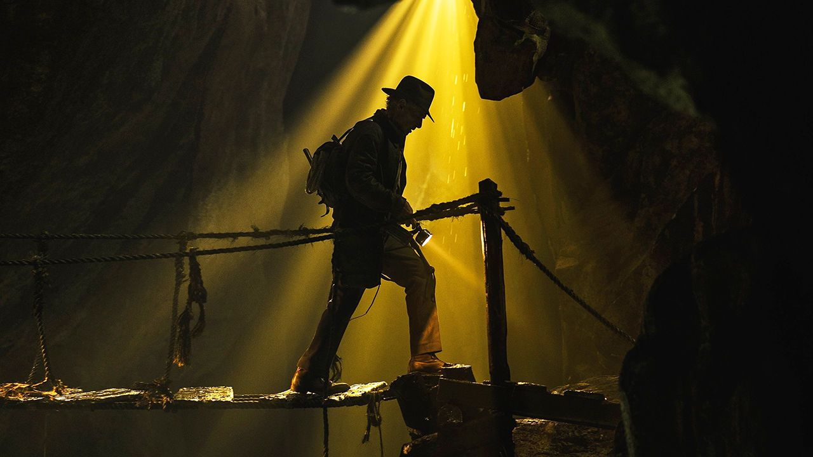
Listen to this story.Enjoy more audio and podcasts on iOS or Android.
The setting of “Hallowe’en Party”, a whodunit by Agatha Christie, is, she writes, “an ordinary sort of place”. “A Haunting in Venice”, an extremely loose screen adaptation released in September, moves the action from a nondescript English village to a palazzo on the Grand Canal, stirring in witchery and a séance. Yet amid the added glitz and ghouls, in one important and telling way—typical of a leery, disillusioned age—the film dims the story’s magic. Like other popular franchises, it undermines its own hero, Hercule Poirot.
“Your mysteries give me faith the wicked will meet justice,” a crime-writer character is told. “Sadly,” she replies, “life doesn’t round out so well as detective fiction.” A suspect complains that “humans are so desperate to shape chaos into tidy stories.” The winking message is: evil cannot really be vanquished by the “little grey cells” of a moustachioed Belgian sleuth. In case you missed it, this is all a fantasy, even a joke.
Poirot is only the latest headliner to endure such self-sabotage. In “GoldenEye” (1995) the spymistress, M, calls James Bond “a sexist, misogynist dinosaur”. His re-education culminates in the finale of “No Time to Die” (2021), a showdown for which he sentimentally clutches a soft toy. In contrast to this relatively abstemious 007, at the start of Indiana Jones’s latest caper the dauntless archaeologist is a boozy has-been. “I don’t need morality lessons from an ageing grave-robber,” his sidekick tells him cuttingly.
You might expect the superheroes of the multiverse to be exempt from such deflation. They are not. In “Avengers: Endgame” (2019) Thor goes to ground after beheading a death-lord. He re-emerges, several pounds over his flying weight, as a beery, burpy slob. When he runs into his mother on a time-travelling mission, she enjoins him to “eat a salad”. Sure, Thor is a god, but he is as fragile and needy as anyone.
There are good reasons to fit your heroes with feet of clay. Flawed characters are more realistic and generally more interesting than idealised ones—as Aristotle outlined in his “Poetics” in the fourth century BC. A drama’s protagonist, he advised, should be noble but imperfect, “true to life and yet more beautiful”. From moody Hamlet to grumpy Rick in “Casablanca”, storytellers have complied. For icons like Bond and Poirot, senescence is also a factor. They are too lucrative to retire yet too familiar to portray without irony. Producers split the difference, at once reviving and ridiculing them.
But politics, too, is catching up with the heroes of yore, whose habits and attitudes can grate today. It now seems a bit Neanderthal that, for generations, an expertise in violence was their main recommendation. From a 21st-century perspective, Bond’s past attitude to women veered from caddish to borderline criminal. Indiana Jones (pictured) was sometimes disrespectful of the cultures whose treasures he ransacked. Poirot has often been an insufferable know-it-all.
The reformation of the blockbuster hero mirrors the humbling of leaders and luminaries in real life. Offences that were once overlooked in the powerful have become disqualifying for many. Deference is dying; politicians are widely assumed to be on the make or the take. These days the careers of flesh-and-blood heroes seem as likely to end in disgrace as in apotheosis.
Quite right too, in lots of ways. Talent and clout were used as armour against accountability for too long. Too many heroes, and the odd heroine, got away with murder, protected by acolytes and cowing their critics. Hold out for a hero, this history suggests, and they can wind up with an unhealthy hold on you.
Still, something is lost, on and off screen, when heroes are stripped of their auras and admiration is soured by cynicism. Characters who feel and fail like you are essential to most narratives; but there is still a place, even a need, for heroes and heroines who are nobler and cleverer than other mortals. They do not have to pack heat or crack whips and one-liners. They just have to let you dream that people can be finer, and the world fairer, than they tend to seem: to fulfil a wish without admitting to it.
You will never be as wise as Henry Fonda’s character in “12 Angry Men”, as intrepid as Jodie Foster’s in “The Silence of the Lambs” or as suave as Cary Grant’s in “North by Northwest”. But in 2024, as much as ever, it would be nice to believe that someone else is, at least until the credits roll. Heroes preside over hierarchies, and those can be abused. But a hero is also hope on legs. ■
For a Christmas drink, eggnog does not have a heartwarming history
The creamy tipple inspired a riot in the 19th century
Listen to this story.Enjoy more audio and podcasts on iOS or Android.
TO THE CADETS at West Point, the prospect of eggnog without whisky was unconscionable. Flouting a ban on alcohol, a group took a boat across the Hudson river and procured gallons of grog. Around 90 cadets got so drunk that they spent Christmas morning smashing windows and flashing their weapons. Among the participants in the “Eggnog Riot” of 1826 was Jefferson Davis, who later became president of the Confederacy.
Eggnog is a sweet beverage with a serious edge. It is probably derived from “posset”—a concoction involving a combination of cream or milk, eggs, spices and ale or wine. Posset was believed to have medicinal properties: when King Charles I came down with a cold in the 1600s, his physician prescribed it.
The annual flu probably established the drink’s association with winter. But Christmas has also given eggnog a boost. The spices used—cinnamon, cloves and nutmeg—are present in other festive treats, such as gingerbread. For centuries cream and fresh eggs were harder to acquire in winter, so were viewed as luxuries.
Britons brought the drink to America in the 18th century. Fortified wine, traditionally used to spike posset, was difficult to obtain, so Americans laced their version with bourbon, rum or whisky instead. Though eggnog is consumed in many English-speaking countries, Americans are the most keen on it. They consume around 15m gallons every year, the equivalent of one small cup per person. (Some “eggheads”, no doubt, guzzle more.)
Many countries have added their own twist. Germans make with wine Peruvians add pisco, a white brandy; South Africans opt for amarula, a liqueur. Eggnog has also been adapted for a health-conscious age. Vegans can forgo eggs and use almond, coconut or oat milk, which is less fatty; a single portion of the original can exceed 300 calories (admittedly a trifling sum compared with the roughly 6,000 calories the average Briton consumes on Christmas Day).
Its creaminess is a reminder of the comforts of childhood, while the addition of booze is a grown-up pleasure. Unlike mulled wine, eggnog is often served chilled, so none of the alcohol evaporates. A recipe attributed to George Washington could take down an elephant: he called for adding brandy, rum, sherry and whisky.
The stupefying effect of eggnog was known long before the riot that bears its name. In Shakespeare’s play, the murderous Lady Macbeth drugs the servants’ posset in order to gain access to the king’s bedroom: “That which hath made them drunk hath made me bold.”
Today the drink is associated with less serious crimes, namely tipsiness at holiday parties. A poem published in the on Christmas Eve in 1817 evoked ancient Greek mythology to suggest that the drink turned respectable people into beasts: “When Circe, the witch, caught Ulysses’s men/She gave each a dram that soon made him a hog/The identical mixture—’tis now as ’twas then/So attend to the moral, .” ■
Read more from The World in a Dish, our column on food:
Eric Freeman hoped to save the Gloucestershire of old
The champion of wassailing and saviour of rare breeds died on October 29th, aged 91
Listen to this story.Enjoy more audio and podcasts on iOS or Android.
If you have ever longed to make your own cider, Eric Freeman would soon show you how. First, find the right apples: not from the supermarket, but Taynton Codlins or Pedington Brandys or Foxwhelps from stooped and lichened trees in half-forgotten orchards in Gloucestershire. Some of those are best eaten straight from the tree; others are keepers; but the rest, the windfalls, just let pile up in the grass. No matter if mice get at them, or the flesh goes brown. The cider will ferment better for this bit of neglect.
Shovel them up at last, wash them, and take them to the press. Or, better than that, let the press come to you, as it used to, on a horse-drawn cart. Feed the apples into the hopper, down to the scratter, which will smash them up. Put up the mulch in cloths made the old way, of horsehair, stack the cloths into a nice square “cheese”, apply the press, and catch the juice in a bucket. Store it up in barrels, and in a twelvemonth it will be ready.
In Mr Freeman’s orchard near Newent stood one particular tree, a wise old Leathercoat Russet. This was his Wassail tree—wassail from , an Anglo-Saxon wish for good health. At the start of each year he would invite his neighbours and friends to salute it and wish it a good autumn crop. This was a great excuse for a night party, with everyone carrying flaming torches round the orchard, dousing the roots with cider, sticking burnt toast in the branches and firing off a shotgun to drive away bad spirits, all the time exhorting the trees to produce “hatsfull, capsfull, bushel bushel bagsfull!” And getting really drunk afterwards.
Wassailing, in country or town, had not been done in Gloucestershire for some time. Nor had cider-making, for that matter, with most orchards grubbed out. He thought it needed reviving. What was missing in the countryside were merry occasions to bring people together. “Harvest home” was another tradition he brought back, in his own big barn with a roaring fire going, a whole long table of apple “puddens”, a couple of hymns and a blessing of loaves. Almost every event brought with it a flurry and jingle of Morris men (another passion of his), an accordion player and a fiddler or two, notably at dawn on May Day, when he dressed his hat in withy branches to be Jack-in-the-Green, just when green was springing through the woods.
He had a great liking for antique garb, and looked fine in it. His favourite outfit was a thick linen smock, leather leggings, a red neckerchief and a top hat. These nicely complemented his knocked-sideways nose and his beautifully trimmed beard. He was a third-generation farmer, and Gloucestershire was in his blood. Like the local Longdon pear, which hadn’t prospered when they tried to grow it in next-door Somerset, he could never have been transplanted anywhere else. He was “a legend in these parts”, as a fond documentary said, a fixture for years on BBC Radio Gloucester but also a regular on national farming programmes, where his warm burr soothed people in cities many miles away.
He didn’t always mean to be comfortable, though. He wanted to save his patch of countryside, especially the local breeds of cattle, sheep and pigs—for Gloucestershire was lucky, and rare, to have its own local versions of all three. In 1972, at an auction in Arlingham, he and some friends clubbed together to buy the last pure-bred herd of Gloucester cattle, and he co-founded the Gloucester Cattle Society to allow him to register them for formal breeding. They were gorgeous animals with black-mahogany coats, a white stripe along their backs, white tails and undersides and a peaceful nature. Just to stand among them out in the field, scratching their heads, did his heart good. He was a slowish sort, like them. The breed dated back to the 13th century, and their milk was the basis of Single and Double Gloucester cheese; their meat, too, was good. But they were too general-purpose for modern butchers. His steady building of the herd, and his promotion of the breed (among the butchers of Newent as well as through the Rare Breeds Survival Trust, which again he co-founded) gradually proved that they were both beautiful and useful.
His eye rested lovingly too on Gloucester Old Spot pigs, which he first bought in 1973: impossible creatures to drive on a road, stubborn, hard of hearing and short-sighted, and long out of favour because their flesh ran to fat. That was fine if you were a cottage-dweller hacking a slice from the flitch that hung on the wall, but not to the modern taste. He fed his small herd treats, and sloshed their bristly coats with buckets of water. Also enjoying life near the farmhouse were his favourite Ryeland sheep, Gloucestershire homebodies with fleeces so thick that by shearing time they had wool right down to their toes and over their eyes.
He was impressed with how his animals liked company. He relished it himself, and much missed labouring with others at farm work, once tractors had come in. His first job on his father’s farm—having left school knowing much less about the three Rs than about clubbing rats and rabbits in the harvest stubble—was hoeing crops, and he learned how by working between Cecil, who hoed as if it was nothing, and Joe, who pushed after, just as an untrained colt would learn to work between two experienced horses. Teams of men ploughed, harvested, threshed, drove carts, with their families lending a hand. But modern fields were empty. He noticed the same vacancy in the streets of Newent, where children once played and the elderly, when the weather was good enough, set their chairs outside their open doors and chatted with passers-by. There was plenty good about the 21st century, especially the media coverage he got for his cause; he was no hermit. But he missed that habit of country people gathering together, so he set about reviving it all around him.
After a good twelvemonth of waiting, it would be time to share that cider with his friends. It poured out amber and aromatic, with no fizz in it, and dangerously quenching of a thirst. Under the Wassail tree, early in January, it went round in a special wooden cup of impressive size. But any time of year was a good one to sit around, tell the old tales, and raise a glass. , every one! ■